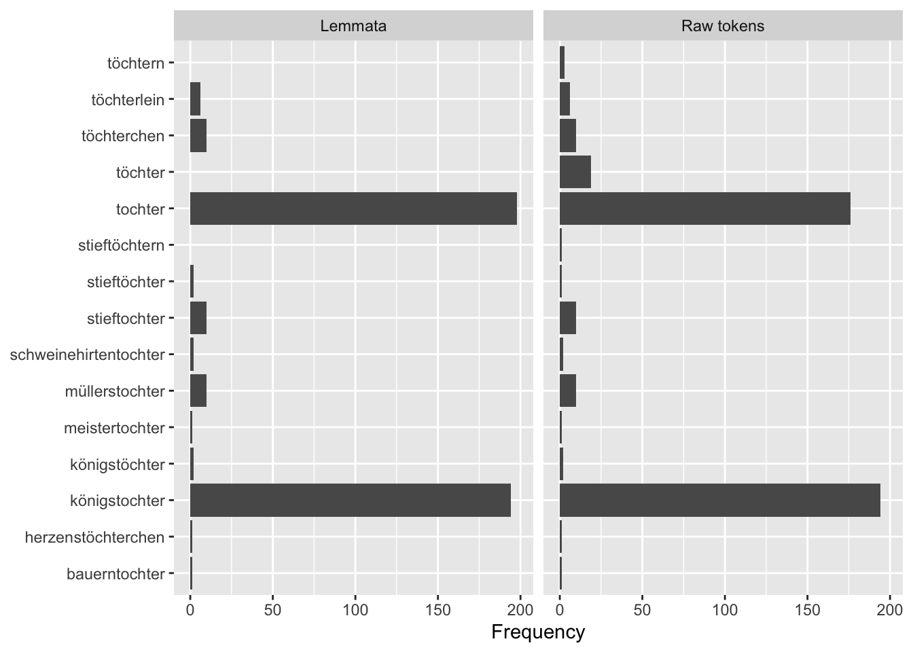

8 Textanalyse III: Wortfrequenzanalysen
Die Konstruktion von Geschlecht und Geschlechterrollen in europäischen Märchen wird seit den 1970er Jahren in zahlreichen Forschungsarbeiten untersucht (zum Beispiel von Marcia Lieberman 1972, Alessandra Levorato 2003, Simone Loleit und Liliane Schüller 2022). In den letzten beiden Jahrzehnten sind Märchen auch zum Gegenstand von Arbeiten aus den Digital Humanities geworden (so z.B. in den Arbeiten von Saif Mohammad 2011, Mark Finlayson 2012, Berenike Herrmann und Jana Lüdtke 2023). Eine Reihe von Digital Humanities Arbeiten haben sich explizit Geschlecht und Geschlechterrollen in Märchen gewidmet, so zum Beispiel:
- Toro Isaza, Paulina et al. (2023). Are Fairy Tales Fair? Analyzing Gender Bias in Temporal Narrative Event Chains of Children’s Fairy Tales, in: Proceedings of the 61st Annual Meeting of the Association for Computational Linguistics 1: Long Papers, pp. 6509-6531.
- Jorgensen, Jeana (2019). The Most Beautiful of All: A Quantitative Approach to Fairy-Tale Femininity, in: Journal of American Folklore 132 (523), pp. 36-60.
- Weingart, Scott and Jorgensen, Jeana (2013). Computational Analysis of the Body in European Fairy Tales, in: Literary and Linguistic Computing 28 (1), pp. 404-416.
In den nächsten beiden Wochen werden wir ein Korpus von Kinder- und Hausmärchen der Gebrüder Grimm aus dem Jahr 1857 im Hinblick auf die Darstellung verschiedener Märchencharaktere untersuchen. Dabei werden wir verschiedene Analysemethoden kennenlernen und kritisch beleuchten, inwieweit diese Methoden uns helfen können, bestimmte Muster in der Beschreibung von Märchencharakteren zu identifizieren. In diesem Kapitel werden wir zunächst Worthäufigkeiten und das gemeinsame Vorkommen verschiedener Wörter unabhängig von der Beziehung der Wörter zueinander betrachten. Wir werden dabei kritisch beleuchten, was die vorgestellten Analysemethoden leisten können und was nicht. Im Kapitel 9 werden wir dann konkreten Fragen nachgehen: Welche Charaktere kommen in den Märchen vor? Mit welchen Adjektiven werden diese beschrieben? Welche Verben werden mit ihnen assoziiert?
Verständnisfragen:
- Welche theoretischen Annahmen liegen unserer Forschungsfrage zugrunde?
- Wie wird die Fragestellung im Folgenden operationalisiert?
8.1 Märchenkorpus einlesen und Pakete installieren
Um unser Korpus in R einzulesen, müssen wir zuerst wieder das Arbeitsverzeichnis setzen:
# Arbeitsverzeichnis setzen: Setzt hier euren eigenen Pfad ein
setwd("/Users/gast/R-Seminar")
# Backslashes für Windows:
# setwd("C:\Users\gast\R-Seminar")Wie bereits vergangene Woche erläutert kann das Arbeitsverzeichnis auch über den Tab “Files” im Fenster unten rechts gesetzt werden. Navigiert euch dazu erst in den gewünschten Ordner, klickt dann auf “More” und “Set As Working Directory” (siehe Kapitel “Orientierung im RStudio”). Wählt dabei den Ordner als Arbeitsverzeichnis, in dem ihr den Ordner maerchen_alle gespeichert habt. Achtung: Zip-Ordner müsst ihr vorher entpacken!
Wenn ihr das Arbeitsverzeichnis gesetzt habt, könnt ihr die Dateien einlesen. Wir werden ganz am Ende unserer Analyse die Grimm-Märchen in der siebten Edition von 1857 mit den Märchen aus der ersten Edition von 1812/15 vergleichen, um einen möglichen Wandel über die Zeit zu identifizieren.
library(readtext)
# Märchen von 1857 und 1812/15 einlesen und Informationen aus dem Dateinamen extrahieren
maerchen_alle <- readtext("maerchen_alle/*.txt", docvarsfrom = "filenames", dvsep = "_", docvarnames = c("Titel", "Jahr"), encoding = "UTF-8")Bevor wir mit der Analyse starten können, müssen wir noch einige Pakete installieren, die wir brauchen werden:
install.packages(c("quanteda.textplots", "quanteda.textstats", "ggplot2", "plotly", "udpipe", "dplyr"))Die Pakete müssen wie bisher immer nur einmal am Anfang des Skripts geladen werden. Allerdings werden wir in den folgenden Abschnitten Funktionen aus vielen verschiedenen Paketen verwenden. Deswegen werden wir in diesem Kapitel ausnahmsweise Pakete erst dann laden, wenn sie gebraucht werden, sodass ihr in jeder Codezelle direkt erkennt, ob der Code Funktionen aus zusätzlichen Paketen enthält.
8.2 Corpus-Objekt erstellen und erste Preprocessingschritte
Wir werden in der Analyse verschiedene Methoden einmal auf das Korpus mit und einmal ohne Stoppwörter anwenden, denn je nach Fragestellung und Methode sind Stoppwörter mehr oder weniger interessant. Deswegen erstellen wir in diesem Abschnitt zwei verschiedene tokens-Objekte. Wir werden aber auch sehen, dass Textanalyse und Preprocessing eigentlich iterative Prozesse sind: Es kommt oft vor, dass bei der Analyse weitere Preprocessingschritte notwendig werden.
library(quanteda)
# Quanteda-corpus-Objekt erstellen
maerchen_corpus_alle <- corpus(maerchen_alle)
# Teilkorpus extrahieren
maerchen_corpus <- corpus_subset(maerchen_corpus_alle, Jahr == 1857)
# Quanteda tokens-Objekt erstellen ohne weiteres Preprocessing
maerchen_toks_raw <- tokens(maerchen_corpus)
# Quanteda-tokens-Objekt erstellen MIT Stoppwörtern
maerchen_toks <- tokens(maerchen_corpus, remove_punct = TRUE) %>%
tokens_tolower()
# Quanteda-tokens-Objekt erstellen OHNE Stoppwörter
maerchen_toks_rm <- tokens_remove(maerchen_toks, pattern = stopwords("de"))Wir haben jetzt also ein corpus-Objekt sowie zwei verschiedene tokens-Objekte (eins mit und eins ohne Stoppwörter), die wir in unserer Analyse verwenden können.
8.3 Worthäufigkeiten verstehen: absolute und relative Häufigkeiten
In diesem Abschnitt betrachten wir Worthäufigkeiten über das gesamte Korpus hinweg und vergleichen Worthäufigkeiten in verschiedenen Dokumenten miteinander. Dazu lernen wir drei verschiedene Maße kennen: absolute Häufigkeiten, relative Häufigkeiten und TF-IDF, die sogenannte Term Frequency-Inverse Document Frequency.
Lernziele für diesen Abschnitt: Einfluss verschiedener Preprocessingschritte auf die Worthäufigkeiten verstehen und
8.3.1 Absolute Häufigkeiten und das Zipf’sche Gesetz
Zunächst ist es sinnvoll, sich einen Überblick über das Korpus zu verschaffen. Aus der letzten Woche kennt ihr bereits die summary()-Funktion, die ein Quanteda Corpus-Objekt als Argument annimmt und einen Dataframe mit der Anzahl von Types und Tokens zu jedem Text liefert. Der Text wird dabei automatisch mit den Defaultargumenten tokenisiert.
## Corpus consisting of 194 documents, showing 194 documents:
##
## Text Types Tokens Sentences Titel Jahr
## Allerleirauh_1857.txt 617 2361 86 Allerleirauh 1857
## Armuth-und-Demuth-fuehren-zum-Himmel_1857.txt 252 517 22 Armuth-und-Demuth-fuehren-zum-Himmel 1857
## Aschenputtel_1857.txt 703 2851 105 Aschenputtel 1857
## Bruder-Lustig_1857.txt 950 4792 232 Bruder-Lustig 1857
## Bruederchen-und-Schwesterchen_1857.txt 691 2670 100 Bruederchen-und-Schwesterchen 1857
## Das-alte-Muetterchen_1857.txt 188 355 12 Das-alte-Muetterchen 1857
## Das-blaue-Licht_1857.txt 605 1929 78 Das-blaue-Licht 1857
## Das-Dietmarsische-Luegenmaerchen_1857.txt 132 211 9 Das-Dietmarsische-Luegenmaerchen 1857
## Das-eigensinnige-Kind_1857.txt 83 136 4 Das-eigensinnige-Kind 1857
## Das-Eselein_1857.txt 508 1420 58 Das-Eselein 1857
## Das-Hirtenbueblein_1857.txt 179 367 13 Das-Hirtenbueblein 1857
## Das-junggegluehte-Maennlein_1857.txt 288 561 19 Das-junggegluehte-Maennlein 1857
## Das-kluge-Grethel_1857.txt 368 1083 43 Das-kluge-Grethel 1857
## Das-Laemmchen-und-Fischchen_1857.txt 262 637 21 Das-Laemmchen-und-Fischchen 1857
## Das-Lumpengesindel_1857.txt 369 859 28 Das-Lumpengesindel 1857
## Das-Maedchen-ohne-Haende_1857.txt 686 2548 99 Das-Maedchen-ohne-Haende 1857
## Das-Maerchen-vom-Schlauraffenland_1857.txt 192 349 13 Das-Maerchen-vom-Schlauraffenland 1857
## Das-Meerhaeschen_1857.txt 447 1307 57 Das-Meerhaeschen 1857
## Das-Raethsel_1857.txt 466 1236 48 Das-Raethsel 1857
## Das-singende-springende-Loeweneckerchen_1857.txt 694 2560 73 Das-singende-springende-Loeweneckerchen 1857
## Das-tapfere-Schneiderlein_1857.txt 998 3607 146 Das-tapfere-Schneiderlein 1857
## Das-Todtenhemdchen_1857.txt 145 285 7 Das-Todtenhemdchen 1857
## Das-Waldhaus_1857.txt 606 2014 72 Das-Waldhaus 1857
## Das-Wasser-des-Lebens_1857.txt 663 2440 84 Das-Wasser-des-Lebens 1857
## Daumerlings-Wanderschaft_1857.txt 610 1767 74 Daumerlings-Wanderschaft 1857
## Daumesdick_1857.txt 743 2575 107 Daumesdick 1857
## Der-alte-Grossvater-und-der-Enkel_1857.txt 152 262 11 Der-alte-Grossvater-und-der-Enkel 1857
## Der-alte-Hildebrand_1857.txt 385 1620 43 Der-alte-Hildebrand 1857
## Der-alte-Sultan_1857.txt 400 938 34 Der-alte-Sultan 1857
## Der-arme-Junge-im-Grab_1857.txt 500 1347 58 Der-arme-Junge-im-Grab 1857
## Der-arme-Muellerbursch-und-das-Kaetzchen_1857.txt 506 1501 52 Der-arme-Muellerbursch-und-das-Kaetzchen 1857
## Der-Arme-und-der-Reiche_1857.txt 607 1802 62 Der-Arme-und-der-Reiche 1857
## Der-Baerenhaeuter_1857.txt 698 2179 81 Der-Baerenhaeuter 1857
## Der-Bauer-und-der-Teufel_1857.txt 192 405 19 Der-Bauer-und-der-Teufel 1857
## Der-Dreschflegel-vom-Himmel_1857.txt 199 394 11 Der-Dreschflegel-vom-Himmel 1857
## Der-Eisenhans_1857.txt 885 3502 149 Der-Eisenhans 1857
## Der-Eisenofen_1857.txt 595 2307 86 Der-Eisenofen 1857
## Der-faule-Heinz_1857.txt 462 1077 39 Der-faule-Heinz 1857
## Der-Frieder-und-das-Catherlieschen_1857.txt 749 2898 130 Der-Frieder-und-das-Catherlieschen 1857
## Der-Froschkoenig-oder-der-eiserne-Heinrich_1857.txt 497 1560 52 Der-Froschkoenig-oder-der-eiserne-Heinrich 1857
## Der-Fuchs-und-das-Pferd_1857.txt 236 537 17 Der-Fuchs-und-das-Pferd 1857
## Der-Fuchs-und-die-Frau-Gevatterin_1857.txt 207 399 13 Der-Fuchs-und-die-Frau-Gevatterin 1857
## Der-Fuchs-und-die-Gaense_1857.txt 141 258 11 Der-Fuchs-und-die-Gaense 1857
## Der-Fuchs-und-die-Katze_1857.txt 173 331 21 Der-Fuchs-und-die-Katze 1857
## Der-Geist-im-Glas_1857.txt 605 2054 75 Der-Geist-im-Glas 1857
## Der-gelernte-Jaeger_1857.txt 670 2443 80 Der-gelernte-Jaeger 1857
## Der-gescheidte-Hans_1857.txt 163 1318 166 Der-gescheidte-Hans 1857
## Der-gestohlene-Heller_1857.txt 179 359 13 Der-gestohlene-Heller 1857
## Der-Gevatter-Tod_1857.txt 477 1336 52 Der-Gevatter-Tod 1857
## Der-glaeserne-Sarg_1857.txt 957 2443 89 Der-glaeserne-Sarg 1857
## Der-goldene-Schluessel_1857.txt 120 192 9 Der-goldene-Schluessel 1857
## Der-goldene-Vogel_1857.txt 862 3285 126 Der-goldene-Vogel 1857
## Der-Grabhuegel_1857.txt 597 1608 71 Der-Grabhuegel 1857
## Der-gute-Handel_1857.txt 565 1926 70 Der-gute-Handel 1857
## Der-Hahnenbalken_1857.txt 155 288 13 Der-Hahnenbalken 1857
## Der-Hase-und-der-Igel_1857.txt 518 1523 68 Der-Hase-und-der-Igel 1857
## Der-heilige-Joseph-im-Walde_1857.txt 408 1282 58 Der-heilige-Joseph-im-Walde 1857
## Der-Herr-Gevatter_1857.txt 250 685 34 Der-Herr-Gevatter 1857
## Der-Hund-und-der-Sperling_1857.txt 384 1379 62 Der-Hund-und-der-Sperling 1857
## Der-Jude-im-Dorn_1857.txt 647 1995 76 Der-Jude-im-Dorn 1857
## Der-junge-Riese_1857.txt 790 3381 123 Der-junge-Riese 1857
## Der-kluge-Knecht_1857.txt 146 295 15 Der-kluge-Knecht 1857
## Der-Koenig-vom-goldenen-Berg_1857.txt 739 2635 94 Der-Koenig-vom-goldenen-Berg 1857
## Der-Koenigssohn-der-sich-vor-nichts-fuerchtet_1857.txt 685 2279 86 Der-Koenigssohn-der-sich-vor-nichts-fuerchtet 1857
## Der-Krautesel_1857.txt 833 2893 104 Der-Krautesel 1857
## Der-Liebste-Roland_1857.txt 530 1614 57 Der-Liebste-Roland 1857
## Der-Meisterdieb_1857.txt 975 3430 129 Der-Meisterdieb 1857
## Der-Mond_1857.txt 364 790 35 Der-Mond 1857
## Der-Nagel_1857.txt 146 291 15 Der-Nagel 1857
## Der-Raeuberbraeutigam_1857.txt 488 1488 63 Der-Raeuberbraeutigam 1857
## Der-Ranzen,-das-Huetlein-und-das-Hoernlein_1857.txt 773 2506 85 Der-Ranzen,-das-Huetlein-und-das-Hoernlein 1857
## Der-Riese-und-der-Schneider_1857.txt 324 838 45 Der-Riese-und-der-Schneider 1857
## Der-Schneider-im-Himmel_1857.txt 353 843 32 Der-Schneider-im-Himmel 1857
## Der-singende-Knochen_1857.txt 355 799 28 Der-singende-Knochen 1857
## Der-Sperling-und-seine-vier-Kinder_1857.txt 440 1018 39 Der-Sperling-und-seine-vier-Kinder 1857
## Der-starke-Hans_1857.txt 803 2879 99 Der-starke-Hans 1857
## Der-Stiefel-von-Bueffelleder_1857.txt 546 1598 67 Der-Stiefel-von-Bueffelleder 1857
## Der-suesse-Brei_1857.txt 132 266 6 Der-suesse-Brei 1857
## Der-Teufel-mit-den-drei-goldenen-Haaren_1857.txt 730 2958 129 Der-Teufel-mit-den-drei-goldenen-Haaren 1857
## Der-Teufel-und-seine-Grossmutter_1857.txt 477 1376 56 Der-Teufel-und-seine-Grossmutter 1857
## Der-treue-Johannes_1857.txt 861 3383 114 Der-treue-Johannes 1857
## Der-Trommler_1857.txt 1029 4223 180 Der-Trommler 1857
## Der-undankbare-Sohn_1857.txt 104 166 5 Der-undankbare-Sohn 1857
## Der-Wolf-und-der-Fuchs_1857.txt 291 812 31 Der-Wolf-und-der-Fuchs 1857
## Der-Wolf-und-der-Mensch_1857.txt 206 483 19 Der-Wolf-und-der-Mensch 1857
## Der-Wolf-und-die-sieben-jungen-Geislein_1857.txt 403 1191 50 Der-Wolf-und-die-sieben-jungen-Geislein 1857
## Der-wunderliche-Spielmann_1857.txt 374 1218 49 Der-wunderliche-Spielmann 1857
## Der-Zaunkoenig_1857.txt 478 1280 70 Der-Zaunkoenig 1857
## Der-Zaunkoenig-und-der-Baer_1857.txt 384 1026 36 Der-Zaunkoenig-und-der-Baer 1857
## Des-Herrn-und-des-Teufels-Gethier_1857.txt 206 369 15 Des-Herrn-und-des-Teufels-Gethier 1857
## Des-Teufels-russiger-Bruder_1857.txt 448 1392 47 Des-Teufels-russiger-Bruder 1857
## Die-alte-Bettelfrau_1857.txt 102 167 8 Die-alte-Bettelfrau 1857
## Die-Alte-im-Wald_1857.txt 361 1001 32 Die-Alte-im-Wald 1857
## Die-beiden-Wanderer_1857.txt 1198 4487 176 Die-beiden-Wanderer 1857
## Die-Bienenkoenigin_1857.txt 318 845 27 Die-Bienenkoenigin 1857
## Die-Boten-des-Todes_1857.txt 309 702 35 Die-Boten-des-Todes 1857
## Die-Brautschau_1857.txt 98 165 5 Die-Brautschau 1857
## Die-Bremer-Stadtmusikanten_1857.txt 528 1424 50 Die-Bremer-Stadtmusikanten 1857
## Die-Brosamen-auf-dem-Tisch_1857.txt 111 194 9 Die-Brosamen-auf-dem-Tisch 1857
## Die-drei-Brueder_1857.txt 309 728 21 Die-drei-Brueder 1857
## Die-drei-Faulen_1857.txt 124 254 6 Die-drei-Faulen 1857
## Die-drei-Federn_1857.txt 396 1104 44 Die-drei-Federn 1857
## Die-drei-Feldscherer_1857.txt 394 1114 47 Die-drei-Feldscherer 1857
## Die-drei-Glueckskinder_1857.txt 449 1064 36 Die-drei-Glueckskinder 1857
## Die-drei-gruenen-Zweige_1857.txt 409 1018 37 Die-drei-gruenen-Zweige 1857
## Die-drei-Handwerksburschen_1857.txt 438 1311 58 Die-drei-Handwerksburschen 1857
## Die-drei-Maennlein-im-Walde_1857.txt 642 2200 85 Die-drei-Maennlein-im-Walde 1857
## Die-drei-Schlangenblaetter_1857.txt 561 1560 53 Die-drei-Schlangenblaetter 1857
## Die-drei-Spinnerinnen_1857.txt 379 977 35 Die-drei-Spinnerinnen 1857
## Die-drei-Sprachen_1857.txt 405 1014 39 Die-drei-Sprachen 1857
## Die-Eule_1857.txt 438 895 30 Die-Eule 1857
## Die-faule-Spinnerin_1857.txt 305 827 29 Die-faule-Spinnerin 1857
## Die-Gaensehirtin-am-Brunnen_1857.txt 1142 4376 194 Die-Gaensehirtin-am-Brunnen 1857
## Die-Gaensemagd_1857.txt 678 2295 72 Die-Gaensemagd 1857
## Die-Geschenke-des-kleinen-Volkes_1857.txt 428 975 30 Die-Geschenke-des-kleinen-Volkes 1857
## Die-goldene-Gans_1857.txt 543 1706 54 Die-goldene-Gans 1857
## Die-Goldkinder_1857.txt 611 2183 81 Die-Goldkinder 1857
## Die-hagere-Liese_1857.txt 237 515 17 Die-hagere-Liese 1857
## Die-Haselruthe_1857.txt 135 217 7 Die-Haselruthe 1857
## Die-himmlische-Hochzeit_1857.txt 235 566 20 Die-himmlische-Hochzeit 1857
## Die-Hochzeit-der-Frau-Fuechsin_1857.txt 303 910 47 Die-Hochzeit-der-Frau-Fuechsin 1857
## Die-klare-Sonne-bringts-an-den-Tag_1857.txt 265 585 21 Die-klare-Sonne-bringts-an-den-Tag 1857
## Die-kluge-Bauerntochter_1857.txt 457 1519 50 Die-kluge-Bauerntochter 1857
## Die-kluge-Else_1857.txt 408 1564 62 Die-kluge-Else 1857
## Die-klugen-Leute_1857.txt 545 1752 75 Die-klugen-Leute 1857
## Die-Kornaehre_1857.txt 146 246 9 Die-Kornaehre 1857
## Die-Krystallkugel_1857.txt 458 1144 40 Die-Krystallkugel 1857
## Die-Lebenszeit_1857.txt 272 674 38 Die-Lebenszeit 1857
## Die-Nelke_1857.txt 558 1963 64 Die-Nelke 1857
## Die-Nixe-im-Teich_1857.txt 744 2335 99 Die-Nixe-im-Teich 1857
## Die-Rabe_1857.txt 603 2427 91 Die-Rabe 1857
## Die-Rose_1857.txt 104 183 7 Die-Rose 1857
## Die-Ruebe_1857.txt 471 1181 39 Die-Ruebe 1857
## Die-Schlickerlinge_1857.txt 121 191 8 Die-Schlickerlinge 1857
## Die-schoene-Katrinelje-und-Pif-Paf-Poltrie_1857.txt 116 500 45 Die-schoene-Katrinelje-und-Pif-Paf-Poltrie 1857
## Die-Scholle_1857.txt 145 265 14 Die-Scholle 1857
## Die-sechs-Diener_1857.txt 821 2911 103 Die-sechs-Diener 1857
## Die-sechs-Schwaene_1857.txt 652 2143 82 Die-sechs-Schwaene 1857
## Die-sieben-Raben_1857.txt 388 961 37 Die-sieben-Raben 1857
## Die-sieben-Schwaben_1857.txt 475 1126 41 Die-sieben-Schwaben 1857
## Die-Sternthaler_1857.txt 166 341 11 Die-Sternthaler 1857
## Die-ungleichen-Kinder-Evas_1857.txt 322 786 29 Die-ungleichen-Kinder-Evas 1857
## Die-vier-kunstreichen-Brueder_1857.txt 581 1739 63 Die-vier-kunstreichen-Brueder 1857
## Die-wahre-Braut_1857.txt 853 2838 116 Die-wahre-Braut 1857
## Die-Wassernixe_1857.txt 151 305 10 Die-Wassernixe 1857
## Die-weisse-Schlange_1857.txt 638 1705 60 Die-weisse-Schlange 1857
## Die-weisse-und-die-schwarze-Braut_1857.txt 518 1609 61 Die-weisse-und-die-schwarze-Braut 1857
## Die-Wichtelmaenner_1857.txt 459 1201 42 Die-Wichtelmaenner 1857
## Die-zertanzten-Schuhe_1857.txt 551 1549 57 Die-zertanzten-Schuhe 1857
## Die-zwei-Brueder_1857.txt 1533 9166 318 Die-zwei-Brueder 1857
## Die-zwoelf-Apostel_1857.txt 219 423 18 Die-zwoelf-Apostel 1857
## Die-zwoelf-Brueder_1857.txt 660 2178 77 Die-zwoelf-Brueder 1857
## Die-zwoelf-faulen-Knechte_1857.txt 466 1144 54 Die-zwoelf-faulen-Knechte 1857
## Die-zwoelf-Jaeger_1857.txt 394 1197 46 Die-zwoelf-Jaeger 1857
## Doctor-Allwissend_1857.txt 307 836 35 Doctor-Allwissend 1857
## Dornroeschen_1857.txt 511 1423 44 Dornroeschen 1857
## Einaeuglein,-Zweiaeuglein-und-Dreiaeuglein_1857.txt 694 2724 96 Einaeuglein,-Zweiaeuglein-und-Dreiaeuglein 1857
## Fitchers-Vogel_1857.txt 503 1434 57 Fitchers-Vogel 1857
## Frau-Holle_1857.txt 412 1269 42 Frau-Holle 1857
## Frau-Trude_1857.txt 166 349 17 Frau-Trude 1857
## Fundevogel_1857.txt 306 1059 42 Fundevogel 1857
## Gottes-Speise_1857.txt 148 256 8 Gottes-Speise 1857
## Haensel-und-Grethel_1857.txt 835 3231 127 Haensel-und-Grethel 1857
## Haesichenbraut_1857.txt 160 488 32 Haesichenbraut 1857
## Hans-heirathet_1857.txt 241 502 18 Hans-heirathet 1857
## Hans-im-Glueck_1857.txt 715 2309 93 Hans-im-Glueck 1857
## Hans-mein-Igel_1857.txt 552 2218 67 Hans-mein-Igel 1857
## Herr-Korbes_1857.txt 175 412 19 Herr-Korbes 1857
## Jorinde-und-Joringel_1857.txt 391 1017 44 Jorinde-und-Joringel 1857
## Jungfrau-Maleen_1857.txt 637 2204 100 Jungfrau-Maleen 1857
## Katze-und-Maus-in-Gesellschaft_1857.txt 414 1112 49 Katze-und-Maus-in-Gesellschaft 1857
## Koenig-Drosselbart_1857.txt 625 1883 81 Koenig-Drosselbart 1857
## Laeuschen-und-Floehchen_1857.txt 113 465 31 Laeuschen-und-Floehchen 1857
## Lieb-und-Leid-theilen_1857.txt 202 427 16 Lieb-und-Leid-theilen 1857
## Maehrchen-von-einem,-der-auszog-das-Fuerchten-zu-lernen_1857.txt 966 4284 189 Maehrchen-von-einem,-der-auszog-das-Fuerchten-zu-lernen 1857
## Maerchen-von-der-Unke_1857.txt 236 528 21 Maerchen-von-der-Unke 1857
## Marienkind_1857.txt 616 2049 67 Marienkind 1857
## Meister-Pfriem_1857.txt 592 1562 77 Meister-Pfriem 1857
## Muttergottesglaeschen_1857.txt 100 164 6 Muttergottesglaeschen 1857
## Raethselmaerchen_1857.txt 87 139 4 Raethselmaerchen 1857
## Rapunzel_1857.txt 518 1577 52 Rapunzel 1857
## Rohrdommel-und-Wiedehopf_1857.txt 139 273 17 Rohrdommel-und-Wiedehopf 1857
## Rothkaeppchen_1857.txt 499 1537 61 Rothkaeppchen 1857
## Rumpelstilzchen_1857.txt 404 1211 39 Rumpelstilzchen 1857
## Schneeweisschen-und-Rosenroth_1857.txt 877 2683 95 Schneeweisschen-und-Rosenroth 1857
## Sechse-kommen-durch-die-ganze-Welt_1857.txt 671 2274 78 Sechse-kommen-durch-die-ganze-Welt 1857
## Simeliberg_1857.txt 338 889 31 Simeliberg 1857
## Sneewittchen_1857.txt 814 3436 142 Sneewittchen 1857
## Spindel,-Weberschiffchen-und-Nadel_1857.txt 430 1149 43 Spindel,-Weberschiffchen-und-Nadel 1857
## Strohhalm,-Kohle-und-Bohne_1857.txt 269 566 22 Strohhalm,-Kohle-und-Bohne 1857
## Tischchen-deck-dich,-Goldesel,-und-Knueppel-aus-dem-Sack_1857.txt 945 4290 183 Tischchen-deck-dich,-Goldesel,-und-Knueppel-aus-dem-Sack 1857
## Vom-klugen-Schneiderlein_1857.txt 470 1301 50 Vom-klugen-Schneiderlein 1857
## Von-dem-Maeuschen,-Voegelchen-und-der-Bratwurst_1857.txt 297 648 22 Von-dem-Maeuschen,-Voegelchen-und-der-Bratwurst 1857
## Von-dem-Tode-des-Huehnchens_1857.txt 243 713 26 Von-dem-Tode-des-Huehnchens 1857Um schnell den längsten und kürzesten Text zu finden, können wir einfach wieder die Funktionen max() und min() anwenden (s. Kapitel 5.5), oder den Dataframe absteigend nach der Spalte Types bzw. Tokens sortieren:
## Text Types Tokens Sentences Titel Jahr
## 150 Die-zwei-Brueder_1857.txt 1533 9166 318 Die-zwei-Brueder 1857
## 4 Bruder-Lustig_1857.txt 950 4792 232 Bruder-Lustig 1857
## 94 Die-beiden-Wanderer_1857.txt 1198 4487 176 Die-beiden-Wanderer 1857
## 113 Die-Gaensehirtin-am-Brunnen_1857.txt 1142 4376 194 Die-Gaensehirtin-am-Brunnen 1857
## 191 Tischchen-deck-dich,-Goldesel,-und-Knueppel-aus-dem-Sack_1857.txt 945 4290 183 Tischchen-deck-dich,-Goldesel,-und-Knueppel-aus-dem-Sack 1857
## 175 Maehrchen-von-einem,-der-auszog-das-Fuerchten-zu-lernen_1857.txt 966 4284 189 Maehrchen-von-einem,-der-auszog-das-Fuerchten-zu-lernen 1857
## 82 Der-Trommler_1857.txt 1029 4223 180 Der-Trommler 1857
## 21 Das-tapfere-Schneiderlein_1857.txt 998 3607 146 Das-tapfere-Schneiderlein 1857
## 36 Der-Eisenhans_1857.txt 885 3502 149 Der-Eisenhans 1857
## 188 Sneewittchen_1857.txt 814 3436 142 Sneewittchen 1857
## 67 Der-Meisterdieb_1857.txt 975 3430 129 Der-Meisterdieb 1857
## 81 Der-treue-Johannes_1857.txt 861 3383 114 Der-treue-Johannes 1857
## 61 Der-junge-Riese_1857.txt 790 3381 123 Der-junge-Riese 1857
## 52 Der-goldene-Vogel_1857.txt 862 3285 126 Der-goldene-Vogel 1857
## 163 Haensel-und-Grethel_1857.txt 835 3231 127 Haensel-und-Grethel 1857
## 79 Der-Teufel-mit-den-drei-goldenen-Haaren_1857.txt 730 2958 129 Der-Teufel-mit-den-drei-goldenen-Haaren 1857
## 137 Die-sechs-Diener_1857.txt 821 2911 103 Die-sechs-Diener 1857
## 39 Der-Frieder-und-das-Catherlieschen_1857.txt 749 2898 130 Der-Frieder-und-das-Catherlieschen 1857
## 65 Der-Krautesel_1857.txt 833 2893 104 Der-Krautesel 1857
## 76 Der-starke-Hans_1857.txt 803 2879 99 Der-starke-Hans 1857
## 3 Aschenputtel_1857.txt 703 2851 105 Aschenputtel 1857
## 144 Die-wahre-Braut_1857.txt 853 2838 116 Die-wahre-Braut 1857
## 157 Einaeuglein,-Zweiaeuglein-und-Dreiaeuglein_1857.txt 694 2724 96 Einaeuglein,-Zweiaeuglein-und-Dreiaeuglein 1857
## 185 Schneeweisschen-und-Rosenroth_1857.txt 877 2683 95 Schneeweisschen-und-Rosenroth 1857
## 5 Bruederchen-und-Schwesterchen_1857.txt 691 2670 100 Bruederchen-und-Schwesterchen 1857
## 63 Der-Koenig-vom-goldenen-Berg_1857.txt 739 2635 94 Der-Koenig-vom-goldenen-Berg 1857
## 26 Daumesdick_1857.txt 743 2575 107 Daumesdick 1857
## 20 Das-singende-springende-Loeweneckerchen_1857.txt 694 2560 73 Das-singende-springende-Loeweneckerchen 1857
## 16 Das-Maedchen-ohne-Haende_1857.txt 686 2548 99 Das-Maedchen-ohne-Haende 1857
## 71 Der-Ranzen,-das-Huetlein-und-das-Hoernlein_1857.txt 773 2506 85 Der-Ranzen,-das-Huetlein-und-das-Hoernlein 1857
## 46 Der-gelernte-Jaeger_1857.txt 670 2443 80 Der-gelernte-Jaeger 1857
## 50 Der-glaeserne-Sarg_1857.txt 957 2443 89 Der-glaeserne-Sarg 1857
## 24 Das-Wasser-des-Lebens_1857.txt 663 2440 84 Das-Wasser-des-Lebens 1857
## 131 Die-Rabe_1857.txt 603 2427 91 Die-Rabe 1857
## 1 Allerleirauh_1857.txt 617 2361 86 Allerleirauh 1857
## 130 Die-Nixe-im-Teich_1857.txt 744 2335 99 Die-Nixe-im-Teich 1857
## 166 Hans-im-Glueck_1857.txt 715 2309 93 Hans-im-Glueck 1857
## 37 Der-Eisenofen_1857.txt 595 2307 86 Der-Eisenofen 1857
## 114 Die-Gaensemagd_1857.txt 678 2295 72 Die-Gaensemagd 1857
## 64 Der-Koenigssohn-der-sich-vor-nichts-fuerchtet_1857.txt 685 2279 86 Der-Koenigssohn-der-sich-vor-nichts-fuerchtet 1857
## 186 Sechse-kommen-durch-die-ganze-Welt_1857.txt 671 2274 78 Sechse-kommen-durch-die-ganze-Welt 1857
## 167 Hans-mein-Igel_1857.txt 552 2218 67 Hans-mein-Igel 1857
## 170 Jungfrau-Maleen_1857.txt 637 2204 100 Jungfrau-Maleen 1857
## 107 Die-drei-Maennlein-im-Walde_1857.txt 642 2200 85 Die-drei-Maennlein-im-Walde 1857
## 117 Die-Goldkinder_1857.txt 611 2183 81 Die-Goldkinder 1857
## 33 Der-Baerenhaeuter_1857.txt 698 2179 81 Der-Baerenhaeuter 1857
## 152 Die-zwoelf-Brueder_1857.txt 660 2178 77 Die-zwoelf-Brueder 1857
## 138 Die-sechs-Schwaene_1857.txt 652 2143 82 Die-sechs-Schwaene 1857
## 45 Der-Geist-im-Glas_1857.txt 605 2054 75 Der-Geist-im-Glas 1857
## 177 Marienkind_1857.txt 616 2049 67 Marienkind 1857
## 23 Das-Waldhaus_1857.txt 606 2014 72 Das-Waldhaus 1857
## 60 Der-Jude-im-Dorn_1857.txt 647 1995 76 Der-Jude-im-Dorn 1857
## 129 Die-Nelke_1857.txt 558 1963 64 Die-Nelke 1857
## 7 Das-blaue-Licht_1857.txt 605 1929 78 Das-blaue-Licht 1857
## 54 Der-gute-Handel_1857.txt 565 1926 70 Der-gute-Handel 1857
## 172 Koenig-Drosselbart_1857.txt 625 1883 81 Koenig-Drosselbart 1857
## 32 Der-Arme-und-der-Reiche_1857.txt 607 1802 62 Der-Arme-und-der-Reiche 1857
## 25 Daumerlings-Wanderschaft_1857.txt 610 1767 74 Daumerlings-Wanderschaft 1857
## 125 Die-klugen-Leute_1857.txt 545 1752 75 Die-klugen-Leute 1857
## 143 Die-vier-kunstreichen-Brueder_1857.txt 581 1739 63 Die-vier-kunstreichen-Brueder 1857
## 116 Die-goldene-Gans_1857.txt 543 1706 54 Die-goldene-Gans 1857
## 146 Die-weisse-Schlange_1857.txt 638 1705 60 Die-weisse-Schlange 1857
## 28 Der-alte-Hildebrand_1857.txt 385 1620 43 Der-alte-Hildebrand 1857
## 66 Der-Liebste-Roland_1857.txt 530 1614 57 Der-Liebste-Roland 1857
## 147 Die-weisse-und-die-schwarze-Braut_1857.txt 518 1609 61 Die-weisse-und-die-schwarze-Braut 1857
## 53 Der-Grabhuegel_1857.txt 597 1608 71 Der-Grabhuegel 1857
## 77 Der-Stiefel-von-Bueffelleder_1857.txt 546 1598 67 Der-Stiefel-von-Bueffelleder 1857
## 181 Rapunzel_1857.txt 518 1577 52 Rapunzel 1857
## 124 Die-kluge-Else_1857.txt 408 1564 62 Die-kluge-Else 1857
## 178 Meister-Pfriem_1857.txt 592 1562 77 Meister-Pfriem 1857
## 40 Der-Froschkoenig-oder-der-eiserne-Heinrich_1857.txt 497 1560 52 Der-Froschkoenig-oder-der-eiserne-Heinrich 1857
## 108 Die-drei-Schlangenblaetter_1857.txt 561 1560 53 Die-drei-Schlangenblaetter 1857
## 149 Die-zertanzten-Schuhe_1857.txt 551 1549 57 Die-zertanzten-Schuhe 1857
## 183 Rothkaeppchen_1857.txt 499 1537 61 Rothkaeppchen 1857
## 56 Der-Hase-und-der-Igel_1857.txt 518 1523 68 Der-Hase-und-der-Igel 1857
## 123 Die-kluge-Bauerntochter_1857.txt 457 1519 50 Die-kluge-Bauerntochter 1857
## 31 Der-arme-Muellerbursch-und-das-Kaetzchen_1857.txt 506 1501 52 Der-arme-Muellerbursch-und-das-Kaetzchen 1857
## 70 Der-Raeuberbraeutigam_1857.txt 488 1488 63 Der-Raeuberbraeutigam 1857
## 158 Fitchers-Vogel_1857.txt 503 1434 57 Fitchers-Vogel 1857
## 98 Die-Bremer-Stadtmusikanten_1857.txt 528 1424 50 Die-Bremer-Stadtmusikanten 1857
## 156 Dornroeschen_1857.txt 511 1423 44 Dornroeschen 1857
## 10 Das-Eselein_1857.txt 508 1420 58 Das-Eselein 1857
## 91 Des-Teufels-russiger-Bruder_1857.txt 448 1392 47 Des-Teufels-russiger-Bruder 1857
## 59 Der-Hund-und-der-Sperling_1857.txt 384 1379 62 Der-Hund-und-der-Sperling 1857
## 80 Der-Teufel-und-seine-Grossmutter_1857.txt 477 1376 56 Der-Teufel-und-seine-Grossmutter 1857
## 30 Der-arme-Junge-im-Grab_1857.txt 500 1347 58 Der-arme-Junge-im-Grab 1857
## 49 Der-Gevatter-Tod_1857.txt 477 1336 52 Der-Gevatter-Tod 1857
## 47 Der-gescheidte-Hans_1857.txt 163 1318 166 Der-gescheidte-Hans 1857
## 106 Die-drei-Handwerksburschen_1857.txt 438 1311 58 Die-drei-Handwerksburschen 1857
## 18 Das-Meerhaeschen_1857.txt 447 1307 57 Das-Meerhaeschen 1857
## 192 Vom-klugen-Schneiderlein_1857.txt 470 1301 50 Vom-klugen-Schneiderlein 1857
## 57 Der-heilige-Joseph-im-Walde_1857.txt 408 1282 58 Der-heilige-Joseph-im-Walde 1857
## 88 Der-Zaunkoenig_1857.txt 478 1280 70 Der-Zaunkoenig 1857
## 159 Frau-Holle_1857.txt 412 1269 42 Frau-Holle 1857
## 19 Das-Raethsel_1857.txt 466 1236 48 Das-Raethsel 1857
## 87 Der-wunderliche-Spielmann_1857.txt 374 1218 49 Der-wunderliche-Spielmann 1857
## 184 Rumpelstilzchen_1857.txt 404 1211 39 Rumpelstilzchen 1857
## 148 Die-Wichtelmaenner_1857.txt 459 1201 42 Die-Wichtelmaenner 1857
## 154 Die-zwoelf-Jaeger_1857.txt 394 1197 46 Die-zwoelf-Jaeger 1857
## 86 Der-Wolf-und-die-sieben-jungen-Geislein_1857.txt 403 1191 50 Der-Wolf-und-die-sieben-jungen-Geislein 1857
## 133 Die-Ruebe_1857.txt 471 1181 39 Die-Ruebe 1857
## 189 Spindel,-Weberschiffchen-und-Nadel_1857.txt 430 1149 43 Spindel,-Weberschiffchen-und-Nadel 1857
## 127 Die-Krystallkugel_1857.txt 458 1144 40 Die-Krystallkugel 1857
## 153 Die-zwoelf-faulen-Knechte_1857.txt 466 1144 54 Die-zwoelf-faulen-Knechte 1857
## 140 Die-sieben-Schwaben_1857.txt 475 1126 41 Die-sieben-Schwaben 1857
## 103 Die-drei-Feldscherer_1857.txt 394 1114 47 Die-drei-Feldscherer 1857
## 171 Katze-und-Maus-in-Gesellschaft_1857.txt 414 1112 49 Katze-und-Maus-in-Gesellschaft 1857
## 102 Die-drei-Federn_1857.txt 396 1104 44 Die-drei-Federn 1857
## 13 Das-kluge-Grethel_1857.txt 368 1083 43 Das-kluge-Grethel 1857
## 38 Der-faule-Heinz_1857.txt 462 1077 39 Der-faule-Heinz 1857
## 104 Die-drei-Glueckskinder_1857.txt 449 1064 36 Die-drei-Glueckskinder 1857
## 161 Fundevogel_1857.txt 306 1059 42 Fundevogel 1857
## 89 Der-Zaunkoenig-und-der-Baer_1857.txt 384 1026 36 Der-Zaunkoenig-und-der-Baer 1857
## 75 Der-Sperling-und-seine-vier-Kinder_1857.txt 440 1018 39 Der-Sperling-und-seine-vier-Kinder 1857
## 105 Die-drei-gruenen-Zweige_1857.txt 409 1018 37 Die-drei-gruenen-Zweige 1857
## 169 Jorinde-und-Joringel_1857.txt 391 1017 44 Jorinde-und-Joringel 1857
## 110 Die-drei-Sprachen_1857.txt 405 1014 39 Die-drei-Sprachen 1857
## 93 Die-Alte-im-Wald_1857.txt 361 1001 32 Die-Alte-im-Wald 1857
## 109 Die-drei-Spinnerinnen_1857.txt 379 977 35 Die-drei-Spinnerinnen 1857
## 115 Die-Geschenke-des-kleinen-Volkes_1857.txt 428 975 30 Die-Geschenke-des-kleinen-Volkes 1857
## 139 Die-sieben-Raben_1857.txt 388 961 37 Die-sieben-Raben 1857
## 29 Der-alte-Sultan_1857.txt 400 938 34 Der-alte-Sultan 1857
## 121 Die-Hochzeit-der-Frau-Fuechsin_1857.txt 303 910 47 Die-Hochzeit-der-Frau-Fuechsin 1857
## 111 Die-Eule_1857.txt 438 895 30 Die-Eule 1857
## 187 Simeliberg_1857.txt 338 889 31 Simeliberg 1857
## 15 Das-Lumpengesindel_1857.txt 369 859 28 Das-Lumpengesindel 1857
## 95 Die-Bienenkoenigin_1857.txt 318 845 27 Die-Bienenkoenigin 1857
## 73 Der-Schneider-im-Himmel_1857.txt 353 843 32 Der-Schneider-im-Himmel 1857
## 72 Der-Riese-und-der-Schneider_1857.txt 324 838 45 Der-Riese-und-der-Schneider 1857
## 155 Doctor-Allwissend_1857.txt 307 836 35 Doctor-Allwissend 1857
## 112 Die-faule-Spinnerin_1857.txt 305 827 29 Die-faule-Spinnerin 1857
## 84 Der-Wolf-und-der-Fuchs_1857.txt 291 812 31 Der-Wolf-und-der-Fuchs 1857
## 74 Der-singende-Knochen_1857.txt 355 799 28 Der-singende-Knochen 1857
## 68 Der-Mond_1857.txt 364 790 35 Der-Mond 1857
## 142 Die-ungleichen-Kinder-Evas_1857.txt 322 786 29 Die-ungleichen-Kinder-Evas 1857
## 100 Die-drei-Brueder_1857.txt 309 728 21 Die-drei-Brueder 1857
## 194 Von-dem-Tode-des-Huehnchens_1857.txt 243 713 26 Von-dem-Tode-des-Huehnchens 1857
## 96 Die-Boten-des-Todes_1857.txt 309 702 35 Die-Boten-des-Todes 1857
## 58 Der-Herr-Gevatter_1857.txt 250 685 34 Der-Herr-Gevatter 1857
## 128 Die-Lebenszeit_1857.txt 272 674 38 Die-Lebenszeit 1857
## 193 Von-dem-Maeuschen,-Voegelchen-und-der-Bratwurst_1857.txt 297 648 22 Von-dem-Maeuschen,-Voegelchen-und-der-Bratwurst 1857
## 14 Das-Laemmchen-und-Fischchen_1857.txt 262 637 21 Das-Laemmchen-und-Fischchen 1857
## 122 Die-klare-Sonne-bringts-an-den-Tag_1857.txt 265 585 21 Die-klare-Sonne-bringts-an-den-Tag 1857
## 120 Die-himmlische-Hochzeit_1857.txt 235 566 20 Die-himmlische-Hochzeit 1857
## 190 Strohhalm,-Kohle-und-Bohne_1857.txt 269 566 22 Strohhalm,-Kohle-und-Bohne 1857
## 12 Das-junggegluehte-Maennlein_1857.txt 288 561 19 Das-junggegluehte-Maennlein 1857
## 41 Der-Fuchs-und-das-Pferd_1857.txt 236 537 17 Der-Fuchs-und-das-Pferd 1857
## 176 Maerchen-von-der-Unke_1857.txt 236 528 21 Maerchen-von-der-Unke 1857
## 2 Armuth-und-Demuth-fuehren-zum-Himmel_1857.txt 252 517 22 Armuth-und-Demuth-fuehren-zum-Himmel 1857
## 118 Die-hagere-Liese_1857.txt 237 515 17 Die-hagere-Liese 1857
## 165 Hans-heirathet_1857.txt 241 502 18 Hans-heirathet 1857
## 135 Die-schoene-Katrinelje-und-Pif-Paf-Poltrie_1857.txt 116 500 45 Die-schoene-Katrinelje-und-Pif-Paf-Poltrie 1857
## 164 Haesichenbraut_1857.txt 160 488 32 Haesichenbraut 1857
## 85 Der-Wolf-und-der-Mensch_1857.txt 206 483 19 Der-Wolf-und-der-Mensch 1857
## 173 Laeuschen-und-Floehchen_1857.txt 113 465 31 Laeuschen-und-Floehchen 1857
## 174 Lieb-und-Leid-theilen_1857.txt 202 427 16 Lieb-und-Leid-theilen 1857
## 151 Die-zwoelf-Apostel_1857.txt 219 423 18 Die-zwoelf-Apostel 1857
## 168 Herr-Korbes_1857.txt 175 412 19 Herr-Korbes 1857
## 34 Der-Bauer-und-der-Teufel_1857.txt 192 405 19 Der-Bauer-und-der-Teufel 1857
## 42 Der-Fuchs-und-die-Frau-Gevatterin_1857.txt 207 399 13 Der-Fuchs-und-die-Frau-Gevatterin 1857
## 35 Der-Dreschflegel-vom-Himmel_1857.txt 199 394 11 Der-Dreschflegel-vom-Himmel 1857
## 90 Des-Herrn-und-des-Teufels-Gethier_1857.txt 206 369 15 Des-Herrn-und-des-Teufels-Gethier 1857
## 11 Das-Hirtenbueblein_1857.txt 179 367 13 Das-Hirtenbueblein 1857
## 48 Der-gestohlene-Heller_1857.txt 179 359 13 Der-gestohlene-Heller 1857
## 6 Das-alte-Muetterchen_1857.txt 188 355 12 Das-alte-Muetterchen 1857
## 17 Das-Maerchen-vom-Schlauraffenland_1857.txt 192 349 13 Das-Maerchen-vom-Schlauraffenland 1857
## 160 Frau-Trude_1857.txt 166 349 17 Frau-Trude 1857
## 141 Die-Sternthaler_1857.txt 166 341 11 Die-Sternthaler 1857
## 44 Der-Fuchs-und-die-Katze_1857.txt 173 331 21 Der-Fuchs-und-die-Katze 1857
## 145 Die-Wassernixe_1857.txt 151 305 10 Die-Wassernixe 1857
## 62 Der-kluge-Knecht_1857.txt 146 295 15 Der-kluge-Knecht 1857
## 69 Der-Nagel_1857.txt 146 291 15 Der-Nagel 1857
## 55 Der-Hahnenbalken_1857.txt 155 288 13 Der-Hahnenbalken 1857
## 22 Das-Todtenhemdchen_1857.txt 145 285 7 Das-Todtenhemdchen 1857
## 182 Rohrdommel-und-Wiedehopf_1857.txt 139 273 17 Rohrdommel-und-Wiedehopf 1857
## 78 Der-suesse-Brei_1857.txt 132 266 6 Der-suesse-Brei 1857
## 136 Die-Scholle_1857.txt 145 265 14 Die-Scholle 1857
## 27 Der-alte-Grossvater-und-der-Enkel_1857.txt 152 262 11 Der-alte-Grossvater-und-der-Enkel 1857
## 43 Der-Fuchs-und-die-Gaense_1857.txt 141 258 11 Der-Fuchs-und-die-Gaense 1857
## 162 Gottes-Speise_1857.txt 148 256 8 Gottes-Speise 1857
## 101 Die-drei-Faulen_1857.txt 124 254 6 Die-drei-Faulen 1857
## 126 Die-Kornaehre_1857.txt 146 246 9 Die-Kornaehre 1857
## 119 Die-Haselruthe_1857.txt 135 217 7 Die-Haselruthe 1857
## 8 Das-Dietmarsische-Luegenmaerchen_1857.txt 132 211 9 Das-Dietmarsische-Luegenmaerchen 1857
## 99 Die-Brosamen-auf-dem-Tisch_1857.txt 111 194 9 Die-Brosamen-auf-dem-Tisch 1857
## 51 Der-goldene-Schluessel_1857.txt 120 192 9 Der-goldene-Schluessel 1857
## 134 Die-Schlickerlinge_1857.txt 121 191 8 Die-Schlickerlinge 1857
## 132 Die-Rose_1857.txt 104 183 7 Die-Rose 1857
## 92 Die-alte-Bettelfrau_1857.txt 102 167 8 Die-alte-Bettelfrau 1857
## 83 Der-undankbare-Sohn_1857.txt 104 166 5 Der-undankbare-Sohn 1857
## 97 Die-Brautschau_1857.txt 98 165 5 Die-Brautschau 1857
## 179 Muttergottesglaeschen_1857.txt 100 164 6 Muttergottesglaeschen 1857
## 180 Raethselmaerchen_1857.txt 87 139 4 Raethselmaerchen 1857
## 9 Das-eigensinnige-Kind_1857.txt 83 136 4 Das-eigensinnige-Kind 1857Um uns einen visuellen Überblick zu verschaffen, können wir die Tokenanzahl auch visualisieren. Dazu verwenden wir das Paket ggplot2, welches spezialisierte Funktionen zur Datenvisualisierung bietet.
Grafiken erstellen mit ggplot2
Die Syntax zur Erstellung von Grafiken mit ggplot2 folgt einem eigenen Design-Prinzip, das nach dem Titel des zugrundeliegenden Werks “Grammar of Graphics” genannt wird. Diese “Grammatik” legt fest, wie die einzelnen Bestandteile einer Grafik beschrieben und konstruiert werden können. Konkret bedeutet das, dass ggplot2-Grafiken immer als mehrere, übereinanderliegende Ebenen erstellt werden, die mit einem +-Operator verknüpft werden: Die erste Ebene ist dabei immer ein Datenobjekt, das mit der Funktion ggplot() erzeugt wird. Welche Ebenen es genau gibt könnt ihr in den ggplot2-Dokumentationsseiten nachlesen. Einen leicht verständlichen Einstieg in die Grammar of Graphics und ggplot2 bietet dieser Artikel von Dipanjan Sarkar. Einen tieferen Einblick bietet dieser Artikel von Hadley Wickham.
Bei der Erstellung von Visualisierungen für quanteda-Objekte ist wichtig zu beachten, dass die Funktion ggplot() als Input einen Dataframe erwartet. Das Objekt token_info ist bereits ein Dataframe und kann direkt als Argument der ggplot()-Funktion übergeben werden. Als zusätzliches Argument geben wir mithilfe der Funktion aes() ein Mapping (“Ästhetik”) für das Datenobjekt an, welches die Dimensionen der Daten bestimmt. Es legt fest, welche Spalte des Dataframes auf welcher Achse des Koordinatensystems abgebildet werden soll. Alle weiteren Ebenen werden dem Datenobjekt mithilfe des +-Operators angefügt: Zunächst ein geometrisches Objekt (“geom”), das bestimmt, dass die Datenpunkte als Punkte dargestellt werden sollen, nicht etwa als Säulen oder Linien (also als geom_point() statt geom_col() oder geom_line()). Die restlichen drei Ebenen dienen dazu, das Aussehen des Plots anzupassen: Es wird mit theme_bw() eine Designvorlage gewählt und anschließend mit theme() angepasst. ggtitle() bestimmt den Titel des Plots, und labs() legt die Beschriftung der Achsen fest.
library(ggplot2)
options(scipen=999)
summary_plot <- ggplot(data=token_info, mapping=aes(x=Titel, y=Tokens)) +
geom_point(alpha=0.6) +
theme_bw() +
theme(axis.text.x = element_text(angle = 90, vjust = 0.5, hjust=1, size=4)) +
ggtitle("Anzahl Tokens / Text") +
labs(x="Text", y="Anzahl Tokens")Die Grafiken, die mit ggplot2 erstellt werden, sind praktischerweise kompatibel mit dem Paket plotly, das darauf spezialisiert ist, ggplot-Grafiken in interaktive Grafiken umzuwandeln:
Die Funktion layout() passt die Position der x-Achsen-Beschriftung auf der interaktiven Grafik an.
Verständnisfragen:
- Bewertet das Diagramm: Welche Informationen könnt ihr daraus entnehmen?
- Eignet sich das Diagramm, um einen Überblick über die Verteilung der Tokens in unserem Korpus zu verschaffen?
Wenn man im Plot-Fenster den Cursor über die Visualisierung bewegt, werden die x- und y-Werte zu den einzelnen Datenpunkten automatisch angezeigt. Der Grafik können wir entnehmen, dass das Märchen “Die zwei Brüder” mit einer Tokenanzahl von 9265 das mit Abstand längste Märchen ist, und dass die meisten Märchen weniger als 2500 Tokens zu haben scheinen. Das ist eine nützliche Information, aber die Visualisierung ist sehr unübersichtlich, da die Titel auf der x-Achse erst durch Markieren der einzelnen Datenpunkte sichtbar werden. Die manuelle Durchsicht der Häufigkeiten mithilfe dieses Diagramms ist deswegen unpraktisch. Am besten wäre es, wenn wir auf einen Blick sehen könnten, wie stark die Tokenanzahl der Texte in unserem Korpus variiert, ob es besonders lange Texte gibt, und wie viele Tokens die meisten Texte haben. So einen zusammenfassenden Blick auf unser Korpus bietet ein Boxplot:
Verständnisfragen:
- Beschreibt die Verteilung der Tokens in unserem Korpus anhand des Boxplots. Falls ihr nicht wisst, was ein Boxplot ist, ist an dieser Stelle Eigenrecherche gefordert, in diesem Fall hilft sogar Wikipedia weiter.
Als nächstes schauen wir uns an, welche Tokens denn in unserem Korpus am häufigsten vorkommen. Dazu erstellen wir zunächst eine Document-Feature-Matrix (DFM), und zwar zunächst aus dem tokens-Objekt mit Stoppwörtern, und lassen uns anschließend mit der quanteda-Funktion topfeatures() einen Überblick über die häufigsten Tokens ausgeben:
maerchen_dfm <- dfm(maerchen_toks)
# schneller Überblick über die 100 häufigsten Tokens
topfeatures(maerchen_dfm, n=100)## und der die er sie das den in es ich so da zu nicht ein aber sich dem war als auf du mit sprach ihm dass an wie ihr ihn was eine einen hatte ist von wieder mir kam wenn ging sagte auch aus sein könig noch nun wollte will vor nach antwortete seine dich mich dir sah im einem nichts wo nur hat ward wir wäre einmal waren rief frau zum um bei habe mein bis doch dann über alles am des mann alle konnte fort ließ vater haus für haben alte sollte hast nahm damit andern seinen mädchen
## 11984 6734 5988 4977 4666 3632 2980 2955 2898 2746 2575 2559 2525 2488 2386 2316 2188 2144 2104 1962 1943 1938 1750 1684 1552 1418 1385 1297 1250 1147 1089 1082 1056 1024 1006 939 893 808 798 790 790 788 778 745 734 706 693 692 685 679 613 581 530 528 511 497 479 477 471 468 449 446 439 438 438 431 423 418 416 415 409 403 400 400 399 397 396 394 391 383 379 377 376 372 367 363 362 361 352 346 343 342 338 337 332 328 324 323 322 317Diese Übersicht zeigt, dass die häufigsten Wörter in unserem Korpus anscheinend Funktionswörter wie “und”, “der” oder “es” sind. Warum ist das so? Handelt es sich dabei um eine besondere Eigenschaft von Märchentexten, von unserem konkreten Korpus oder gar nur von einigen wenigen Texten in unserem Korpus, in denen zufällig besonders viele Funktionswörter vorkommen?
Die Funktion textstat_frequency() liefert detaillierte Informationen zu den 100 häufigsten Tokens als Dataframe. Neben dem Vorkommen der einzelnen Tokens gibt der Dataframe auch an, in wie vielen Texten jedes Token vorkommt:
library("quanteda.textstats")
# Detaillierte Informationen zu den 100 häufigsten Tokens
tstat_freq <- textstat_frequency(maerchen_dfm, n = 100)
tstat_freq## feature frequency rank docfreq group
## 1 und 11984 1 193 all
## 2 der 6734 2 193 all
## 3 die 5988 3 190 all
## 4 er 4977 4 182 all
## 5 sie 4666 5 184 all
## 6 das 3632 6 191 all
## 7 den 2980 7 185 all
## 8 in 2955 8 193 all
## 9 es 2898 9 186 all
## 10 ich 2746 10 176 all
## 11 so 2575 11 191 all
## 12 da 2559 12 185 all
## 13 zu 2525 13 184 all
## 14 nicht 2488 14 181 all
## 15 ein 2386 15 188 all
## 16 aber 2316 16 183 all
## 17 sich 2188 17 182 all
## 18 dem 2144 18 181 all
## 19 war 2104 19 182 all
## 20 als 1962 20 177 all
## 21 auf 1943 21 183 all
## 22 du 1938 22 166 all
## 23 mit 1750 23 181 all
## 24 sprach 1684 24 176 all
## 25 ihm 1552 25 174 all
## 26 dass 1418 26 176 all
## 27 an 1385 27 177 all
## 28 wie 1297 28 184 all
## 29 ihr 1250 29 153 all
## 30 ihn 1147 30 150 all
## 31 was 1089 31 168 all
## 32 eine 1082 32 176 all
## 33 einen 1056 33 168 all
## 34 hatte 1024 34 164 all
## 35 ist 1006 35 166 all
## 36 von 939 36 164 all
## 37 wieder 893 37 153 all
## 38 mir 808 38 143 all
## 39 kam 798 39 169 all
## 40 wenn 790 40 161 all
## 41 ging 790 40 156 all
## 42 sagte 788 42 153 all
## 43 auch 778 43 167 all
## 44 aus 745 44 150 all
## 45 sein 734 45 155 all
## 46 könig 706 46 66 all
## 47 noch 693 47 153 all
## 48 nun 692 48 150 all
## 49 wollte 685 49 162 all
## 50 will 679 50 149 all
## 51 vor 613 51 145 all
## 52 nach 581 52 156 all
## 53 antwortete 530 53 135 all
## 54 seine 528 54 143 all
## 55 dich 511 55 125 all
## 56 mich 497 56 119 all
## 57 dir 479 57 126 all
## 58 sah 477 58 144 all
## 59 im 471 59 149 all
## 60 einem 468 60 139 all
## 61 nichts 449 61 135 all
## 62 wo 446 62 140 all
## 63 nur 439 63 132 all
## 64 hat 438 64 125 all
## 65 ward 438 64 131 all
## 66 wir 431 66 108 all
## 67 wäre 423 67 128 all
## 68 einmal 418 68 159 all
## 69 waren 416 69 139 all
## 70 rief 415 70 121 all
## 71 frau 409 71 100 all
## 72 zum 403 72 132 all
## 73 um 400 73 138 all
## 74 bei 400 73 132 all
## 75 habe 399 75 119 all
## 76 mein 397 76 116 all
## 77 bis 396 77 144 all
## 78 doch 394 78 139 all
## 79 dann 391 79 135 all
## 80 über 383 80 134 all
## 81 alles 379 81 128 all
## 82 am 377 82 132 all
## 83 des 376 83 126 all
## 84 mann 372 84 98 all
## 85 alle 367 85 136 all
## 86 konnte 363 86 134 all
## 87 fort 362 87 133 all
## 88 ließ 361 88 132 all
## 89 vater 352 89 67 all
## 90 haus 346 90 112 all
## 91 für 343 91 114 all
## 92 haben 342 92 113 all
## 93 alte 338 93 84 all
## 94 sollte 337 94 117 all
## 95 hast 332 95 113 all
## 96 nahm 328 96 111 all
## 97 damit 324 97 132 all
## 98 andern 323 98 122 all
## 99 seinen 322 99 115 all
## 100 mädchen 317 100 58 allDem Dataframe können wir entnehmen, dass die Funktionswörter in allen oder fast allen der 193 Märchen in unserem Märchenkorpus vorkommen. Das ist kein Zufall: Tatsächlich kommen in natürlichsprachigen Texten in der Regel einige wenige Wörter sehr häufig vor und viele Wörter sehr selten. Wenn wir die häufigsten Wörter des tstat_freq-Dataframes nach ihrer Häufigkeit ordnen und visualisieren, wird dieser Umstand direkt deutlich:
# Top Features visualisieren
ggplot(tstat_freq, aes(x = reorder(feature, -frequency), y = frequency)) +
geom_point() +
theme(axis.text.x = element_text(angle = 90, vjust = 0.5, hjust=1, size=5)) +
labs(x = "Feature", y = "Frequency")
Die Funktion reorder(feature, -frequency) bewirkt, dass die Tokens nach Häufigkeit geordnet werden, sodass die Tokens mit der höchsten Frequenz auf der linken Seite der x-Achse angezeigt werden.
Verständnisfragen:
- Welche Informationen liefert die Funktion
textstat_frequency()? - Was wäre ein passender Titel für die Visualisierung?
- Wozu wird die Funktion
labs()verwendet? Was beschreibt diese Ebene? - Was passiert, wenn das - vor frequency in
reorder(feature, -frequency)entfernt wird?
Die hier am Beispiel unseres Märchenkorpus aufgezeigte Eigenschaft natürlichsprachlicher Texte lässt sich formal mit dem Zipf’schen Gesetz beschreiben, nach dem in einem Korpus von natürlichsprachlichen Äußerungen die Häufigkeit irgendeines Wortes umgekehrt proportional zu seinem Rang in der Häufigkeitstabelle ist. Dieser Umstand begründet auch die Motivation, Funktionswörter und andere erwartungsgemäß besonders häufig vorkommende Tokens während des Preprocessing zu entfernen. Die folgende Grafik vergleicht die Verteilung der Wörter in unserem Märchenkorpus (“observed”) mit einer idealtypischen oder theoretischen Verteilung nach dem Zipf’schen Gesetz (Zipf-Verteilung, “theoretical”):
# Diesen Code könnt ihr ignorieren
tstat_freq_alle <- textstat_frequency(maerchen_dfm, n = ncol(maerchen_dfm))
# Aber falls ihr den Code doch genauer verstehen wollt: Die Spalte rank wird hier zunächst transformiert, sodass Ränge konsekutiv sind und beim Vorkommen mehrerer gleicher Ränge trotzdem kontinuierlich weitergezählt wird. Das lässt sich leider seit Quanteda Version 3 nicht mehr mit der textstat_frequency()-Funktion einstellen, hier ist die Funktionsdokumentation veraltet
neuer_rang <- c(TRUE, diff(tstat_freq_alle$rank) != 0)
tstat_freq_alle$rank <- cumsum(neuer_rang)
zipfs_freq = ifelse(tstat_freq_alle$rank == 1, tstat_freq_alle$frequency, dplyr::first(tstat_freq_alle$frequency) / tstat_freq_alle$rank ^ 1)
ggplot(tstat_freq_alle, aes(x = rank, y = frequency, group="all")) +
geom_line(aes(color = "observed")) +
geom_line(aes(y = zipfs_freq, color = "theoretical")) +
geom_point(aes(color = "observed")) +
geom_point(aes(y = zipfs_freq, color = "theoretical")) +
labs(x = "Rank", y = "Frequency")
Wenn wir einen Eindruck davon gewinnen möchten, welche inhaltlich möglicherweise aufschlussreichen Wörter in unserem Korpus vorkommen, dann ist es also sinnvoll, beim Preprocessing die besonders häufig vorkommenden Wörter mithilfe einer Stoppwortliste zu entfernen. Im Abschnitt 8.2 haben wir bereits für diesen Zweck ein Objekt maerchen_toks_rm erstellt. Dieses Objekt enthält unsere Märchentexte als Tokens ohne Stoppwörter und Satzzeichen; zusätzlich wurden alle Wörter in Kleinbuchstaben umgewandelt. Durch das Umwandeln der Wörter in Kleinbuchstaben können wir später einfacher nach bestimmten Tokens suchen, die sowohl in Groß- als auch in Kleinschreibung vorkommen. Dazu in Kürze mehr.
Zunächst verschaffen wir uns noch einmal einen Überblick über die besonders häufigen Tokens in unserem Korpus, aber diesmal ohne die Stoppwörter und Satzzeichen:
## sprach dass kam ging sagte könig antwortete sah ward wäre rief frau mann konnte fort ließ vater haus alte hast nahm mädchen mehr schon wohl stand ganz zwei endlich drei wald dachte hätte fragte lange ja hinaus darauf tag hinein gab mußte hans wasser herr augen mutter gut morgen immer kamen setzte kind heraus gehen wer zeit kommen ach nacht machte schloss hand sehen ab essen königstochter zusammen jäger leben darin legte welt kopf bruder tochter fing saß zog sprang junge geben voll baum hörte gott großen herum tat davon königin sollst weiss gleich türe große bald geld gold herz
## 1684 1418 798 790 788 706 530 477 438 423 415 409 372 363 362 361 352 346 338 332 328 317 315 313 310 306 296 296 293 291 289 287 287 286 269 260 260 259 257 255 247 244 237 235 235 234 234 234 228 228 226 224 223 223 222 220 214 208 207 205 205 203 203 202 199 197 194 194 190 188 182 181 178 177 177 176 175 173 171 171 171 170 170 169 168 166 166 164 162 162 161 160 158 157 156 155 154 153 152 150## feature frequency rank docfreq group
## 1 sprach 1684 1 176 all
## 2 dass 1418 2 176 all
## 3 kam 798 3 169 all
## 4 ging 790 4 156 all
## 5 sagte 788 5 153 all
## 6 könig 706 6 66 all
## 7 antwortete 530 7 135 all
## 8 sah 477 8 144 all
## 9 ward 438 9 131 all
## 10 wäre 423 10 128 all
## 11 rief 415 11 121 all
## 12 frau 409 12 100 all
## 13 mann 372 13 98 all
## 14 konnte 363 14 134 all
## 15 fort 362 15 133 all
## 16 ließ 361 16 132 all
## 17 vater 352 17 67 all
## 18 haus 346 18 112 all
## 19 alte 338 19 84 all
## 20 hast 332 20 113 all
## 21 nahm 328 21 111 all
## 22 mädchen 317 22 58 all
## 23 mehr 315 23 128 all
## 24 schon 313 24 121 all
## 25 wohl 310 25 125 all
## 26 stand 306 26 119 all
## 27 ganz 296 27 119 all
## 28 zwei 296 27 99 all
## 29 endlich 293 29 129 all
## 30 drei 291 30 96 all
## 31 wald 289 31 86 all
## 32 dachte 287 32 112 all
## 33 hätte 287 32 106 all
## 34 fragte 286 34 110 all
## 35 lange 269 35 117 all
## 36 ja 260 36 91 all
## 37 hinaus 260 36 113 all
## 38 darauf 259 38 112 all
## 39 tag 257 39 102 all
## 40 hinein 255 40 113 all
## 41 gab 247 41 99 all
## 42 mußte 244 42 118 all
## 43 hans 237 43 14 all
## 44 wasser 235 44 77 all
## 45 herr 235 44 70 all
## 46 augen 234 46 93 all
## 47 mutter 234 46 69 all
## 48 gut 234 46 104 all
## 49 morgen 228 49 94 all
## 50 immer 228 49 97 all
## 51 kamen 226 51 100 all
## 52 setzte 224 52 97 all
## 53 kind 223 53 77 all
## 54 heraus 223 53 92 all
## 55 gehen 222 55 102 all
## 56 wer 220 56 104 all
## 57 zeit 214 57 113 all
## 58 kommen 208 58 103 all
## 59 ach 207 59 93 all
## 60 nacht 205 60 90 all
## 61 machte 205 60 99 all
## 62 schloss 203 62 61 all
## 63 hand 203 62 89 all
## 64 sehen 202 64 92 all
## 65 ab 199 65 90 all
## 66 essen 197 66 79 all
## 67 königstochter 194 67 43 all
## 68 zusammen 194 67 97 all
## 69 jäger 190 69 21 all
## 70 leben 188 70 84 all
## 71 darin 182 71 82 all
## 72 legte 181 72 87 all
## 73 welt 178 73 85 all
## 74 kopf 177 74 83 all
## 75 bruder 177 74 34 all
## 76 tochter 176 76 57 all
## 77 fing 175 77 89 all
## 78 saß 173 78 88 all
## 79 zog 171 79 85 all
## 80 sprang 171 79 85 all
## 81 junge 171 79 53 all
## 82 geben 170 82 88 all
## 83 voll 170 82 97 all
## 84 baum 169 84 55 all
## 85 hörte 168 85 92 all
## 86 gott 166 86 79 all
## 87 großen 166 86 92 all
## 88 herum 164 88 89 all
## 89 tat 162 89 90 all
## 90 davon 162 89 90 all
## 91 königin 161 91 30 all
## 92 sollst 160 92 79 all
## 93 weiss 158 93 82 all
## 94 gleich 157 94 93 all
## 95 türe 156 95 65 all
## 96 große 155 96 75 all
## 97 bald 154 97 81 all
## 98 geld 153 98 57 all
## 99 gold 152 99 57 all
## 100 herz 150 100 66 allDie häufigsten Tokens können auch in einer Wortwolke visualisiert werden, und zwar mit der Quanteda-Funktion textplot_wordcloud():
library(quanteda.textplots)
set.seed(100)
textplot_wordcloud(maerchen_dfm_rm, # wir verwenden die dfm ohne Stoppwörter und Satzzeichen
min_count = 6,
random_order = FALSE,
rotation = .25,
)
Verständnisfragen:
- Was visualisiert die Wortwolke?
- Vergleicht eure Wortwolke mit der Wortwolke eurer Nachbar:in. Unterscheiden sich eure Ergebnisse?
- Führt den Code zur Erstellung der Wortwolke jetzt noch einmal aus, allerdings ohne die Zeile set.seed(100). Unterscheiden sich eure Wortwolken jetzt? Warum ist das so?
Eines der häufigsten Wörter ist “dass”. Aber Stoppwörter haben wir doch eigentlich entfernt! Inspiziert die Stoppwortliste, welche die Funktion tokens_remove() verwendet: Warum wurde das Wort “dass” nicht entfernt? Lest euch nochmal den Abschnitt “Stoppwörter entfernen” im Kapitel “Textanalyse II” an. Wie können wir das Problem lösen?
Die wohl einfachste Lösung wäre, das Token, das in der Stoppwortliste nicht enthalten ist, zusätzlich manuell zu entfernen:
maerchen_toks_rm <- tokens_remove(maerchen_toks_rm, pattern = "dass")
maerchen_dfm_rm <- dfm(maerchen_toks_rm)
set.seed(100)
textplot_wordcloud(maerchen_dfm_rm,
min_count = 6,
random_order = FALSE,
rotation = .25,
)
So ist die Wortwolke deutlich informativer. Diese Wortwolke können wir bereits zur explorativen Annäherung an unsere Fragestellung nutzen. Wir interessieren uns dafür, wie verschiedene Märchencharaktere beschrieben werden. Zunächst müssen wir also überhaupt erstmal Charaktere, die in unseren Märchen vorkommen, identifizieren. Unter den 100 häufigsten Tokens finden sich nach der Wortwolke zu urteilen scheinbar auch einige Charaktere: Unter den Wörtern, die im Zentrum der Wortwolke am größten dargestellt sind, befinden sich die Tokens “könig”, “frau”, “vater”, “mann”, “mädchen”, und etwas kleiner “hans”, “kind”, “königstochter”, “herr”. Erste Vermutungen, die wir anhand der Wortwolke gemacht haben, können wir anschließend mithilfe des bereits erstellten Dataframes tstat_freq_rm überprüfen: Haben wir vielleicht einfach nur das Token “prinzessin” übersehen?
## [1] FALSEUnd in wie vielen Texten kommt das Token “könig” vor?
## [1] 191Eine genauere Inspektion des Dataframes tstat_freq_rm zeigt außerdem, dass die Tokens “königstochter”, aber auch “tochter” und “mädchen” zwar in der Wortwolke recht unscheinbar erscheinen, aber dass sie dennoch in je ca. 50 der Märchen vorkommen. Die Tokens “königssohn” und “sohn” tauchen dagegen unter den 100 häufigsten Tokens überhaupt nicht auf, ebenso die Wörter Prinz und Prinzessin. Das verwundert vielleicht im ersten Moment, wir werden aber später noch einmal darauf zurückkommen.
Nun haben wir aber ja anfangs bemerkt, dass die Märchen sehr verschiedene Längen haben. Der Dataframe tstat_freq_rm, den wir mithilfe der Funktion textstat_frequency() erstellt haben, verrät zwar, dass die Tokens in je etwa fünfzig Märchen vorkommen, allerdings wissen wir nicht, wie sie über diese Märchen verteilt sind. Es könnte ja sein, dass ein Märchen, beispielsweise das längste, besonders häufig ein bestimmtes Token enthält. Im Folgenden werden wir also die Häufigkeit der Tokens je Text vergleichen, und überprüfen, ob ein Token vielleicht ganz besonders häufig in dem längsten Text vorkommt, aber kaum in den anderen. Als Beispiel nehmen wir alle Tokens, welche die Zeichenkette “tochter” enthalten. Um das Vorkommen der Tokens in verschiedenen Texten zu vergleichen, müssen wir der Funktion textstat_frequency() ein zusätzliches Argument übergeben: groups = Titel legt fest, dass die berechneten Häufigkeiten für jeden Text einzeln bestimmt werden können. Titel ist dabei der Vektor mit den Titeln der Texte, den wir ganz am Anfang mit der readtext()-Funktion aus dem Dateinamen eingelesen haben (siehe dazu auch das Kapitel “Textanalyse I”: da haben wir das Konzept der Metadaten auf Dokumentenebene, oder “docvars”, etwas ausführlicher besprochen). Mit dem Ausdruck grepl("tochter", tstat_freq_text$feature) werden anschließend nur die Zeilen aus dem Dataframe tstat_freq_grouped ausgewählt, die die Zeichenkette “tochter” oder “töchter” in der Spalte feature enthalten.
library(quanteda.textstats)
tstat_freq_grouped <- textstat_frequency(maerchen_dfm_rm, groups = Titel)
tstat_subset <- tstat_freq_grouped[grepl("t(o|ö)chter", tstat_freq_grouped$feature), ]
tstat_subset## feature frequency rank docfreq group
## 35 tochter 4 29 1 Allerleirauh
## 39 königstochter 4 29 1 Allerleirauh
## 850 tochter 1 214 1 Aschenputtel
## 867 königstochter 1 214 1 Aschenputtel
## 931 töchterlein 1 214 1 Aschenputtel
## 944 töchter 1 214 1 Aschenputtel
## 987 stieftöchter 1 214 1 Aschenputtel
## 1001 stieftöchtern 1 214 1 Aschenputtel
## 1045 töchtern 1 214 1 Aschenputtel
## 1228 königstochter 5 57 1 Bruder-Lustig
## 1322 tochter 2 147 1 Bruder-Lustig
## 1946 tochter 5 28 1 Bruederchen-und-Schwesterchen
## 2572 königstochter 7 6 1 Das-blaue-Licht
## 2636 tochter 2 59 1 Das-blaue-Licht
## 3156 tochter 4 9 1 Das-Eselein
## 4660 tochter 1 165 1 Das-Maedchen-ohne-Haende
## 4868 müllerstochter 1 165 1 Das-Maedchen-ohne-Haende
## 5140 königstochter 10 1 1 Das-Meerhaeschen
## 5464 königstochter 5 7 1 Das-Raethsel
## 5492 tochter 2 32 1 Das-Raethsel
## 5818 tochter 5 27 1 Das-singende-springende-Loeweneckerchen
## 5828 königstochter 4 35 1 Das-singende-springende-Loeweneckerchen
## 6049 töchter 1 188 1 Das-singende-springende-Loeweneckerchen
## 6387 tochter 3 64 1 Das-tapfere-Schneiderlein
## 6587 königstochter 1 243 1 Das-tapfere-Schneiderlein
## 7347 tochter 1 141 1 Das-Waldhaus
## 7417 töchtern 1 141 1 Das-Waldhaus
## 7686 königstochter 4 31 1 Das-Wasser-des-Lebens
## 10211 königstochter 4 14 1 Der-arme-Muellerbursch-und-das-Kaetzchen
## 11033 töchter 4 19 1 Der-Baerenhaeuter
## 11781 königstochter 8 17 1 Der-Eisenhans
## 11821 tochter 4 56 1 Der-Eisenhans
## 12467 königstochter 7 10 1 Der-Eisenofen
## 12512 tochter 3 55 1 Der-Eisenofen
## 12538 müllerstochter 3 55 1 Der-Eisenofen
## 12629 schweinehirtentochter 2 94 1 Der-Eisenofen
## 12966 tochter 1 59 1 Der-faule-Heinz
## 13804 königstochter 8 2 1 Der-Froschkoenig-oder-der-eiserne-Heinrich
## 13979 töchter 1 110 1 Der-Froschkoenig-oder-der-eiserne-Heinrich
## 15055 königstochter 7 11 1 Der-gelernte-Jaeger
## 15071 tochter 4 26 1 Der-gelernte-Jaeger
## 15804 königstochter 2 27 1 Der-Gevatter-Tod
## 15868 tochter 1 78 1 Der-Gevatter-Tod
## 16268 tochter 1 145 1 Der-glaeserne-Sarg
## 17012 königstochter 3 64 1 Der-goldene-Vogel
## 17054 tochter 2 100 1 Der-goldene-Vogel
## 17714 königstochter 1 87 1 Der-Grabhuegel
## 18114 tochter 2 61 1 Der-gute-Handel
## 18118 königstochter 2 61 1 Der-gute-Handel
## 19045 tochter 2 46 1 Der-heilige-Joseph-im-Walde
## 19146 töchter 1 83 1 Der-heilige-Joseph-im-Walde
## 20977 königstochter 2 88 1 Der-Koenig-vom-goldenen-Berg
## 21618 königstochter 1 147 1 Der-Koenigssohn-der-sich-vor-nichts-fuerchtet
## 22528 herzenstöchterchen 1 186 1 Der-Krautesel
## 22658 stieftochter 3 24 1 Der-Liebste-Roland
## 22664 tochter 2 48 1 Der-Liebste-Roland
## 22786 töchter 1 99 1 Der-Liebste-Roland
## 23223 tochter 1 211 1 Der-Meisterdieb
## 24175 tochter 2 47 1 Der-Raeuberbraeutigam
## 24501 königstochter 3 39 1 Der-Ranzen,-das-Huetlein-und-das-Hoernlein
## 24531 tochter 2 71 1 Der-Ranzen,-das-Huetlein-und-das-Hoernlein
## 25530 tochter 2 20 1 Der-singende-Knochen
## 25607 töchterlein 1 49 1 Der-singende-Knochen
## 26282 königstochter 1 189 1 Der-starke-Hans
## 27201 tochter 7 17 1 Der-Teufel-mit-den-drei-goldenen-Haaren
## 27294 königstochter 2 101 1 Der-Teufel-mit-den-drei-goldenen-Haaren
## 28092 königstochter 9 9 1 Der-treue-Johannes
## 28775 königstochter 10 10 1 Der-Trommler
## 29025 tochter 1 246 1 Der-Trommler
## 31314 tochter 1 94 1 Des-Teufels-russiger-Bruder
## 31328 königstochter 1 94 1 Des-Teufels-russiger-Bruder
## 31672 königstochter 1 71 1 Die-Alte-im-Wald
## 32155 tochter 1 305 1 Die-beiden-Wanderer
## 32234 töchter 1 305 1 Die-beiden-Wanderer
## 32671 meistertochter 1 305 1 Die-beiden-Wanderer
## 32845 königstochter 2 28 1 Die-Bienenkoenigin
## 32927 töchtern 1 60 1 Die-Bienenkoenigin
## 35476 tochter 16 2 1 Die-drei-Maennlein-im-Walde
## 35616 stieftochter 2 71 1 Die-drei-Maennlein-im-Walde
## 35928 töchterchen 1 150 1 Die-drei-Maennlein-im-Walde
## 35999 tochter 2 45 1 Die-drei-Schlangenblaetter
## 36370 tochter 3 13 1 Die-drei-Spinnerinnen
## 37418 tochter 7 19 1 Die-Gaensehirtin-am-Brunnen
## 37449 töchterchen 5 31 1 Die-Gaensehirtin-am-Brunnen
## 37497 königstochter 3 93 1 Die-Gaensehirtin-am-Brunnen
## 37604 töchter 2 153 1 Die-Gaensehirtin-am-Brunnen
## 38325 königstochter 9 6 1 Die-Gaensemagd
## 38410 tochter 2 84 1 Die-Gaensemagd
## 39165 tochter 4 21 1 Die-goldene-Gans
## 39294 königstochter 1 132 1 Die-goldene-Gans
## 39346 töchter 1 132 1 Die-goldene-Gans
## 39584 tochter 3 41 1 Die-Goldkinder
## 40595 tochter 1 34 1 Die-klare-Sonne-bringts-an-den-Tag
## 40719 tochter 9 3 1 Die-kluge-Bauerntochter
## 41143 tochter 1 102 1 Die-kluge-Else
## 41791 königstochter 6 1 1 Die-Krystallkugel
## 42446 tochter 1 146 1 Die-Nelke
## 43313 königstochter 4 36 1 Die-Rabe
## 43689 töchterchen 1 160 1 Die-Rabe
## 44232 tochter 2 27 1 Die-schoene-Katrinelje-und-Pif-Paf-Poltrie
## 44372 tochter 10 6 1 Die-sechs-Diener
## 45071 tochter 2 61 1 Die-sechs-Schwaene
## 45536 töchterchen 2 23 1 Die-sieben-Raben
## 46430 königstochter 6 7 1 Die-vier-kunstreichen-Brueder
## 46539 tochter 1 111 1 Die-vier-kunstreichen-Brueder
## 47039 tochter 1 187 1 Die-wahre-Braut
## 47625 königstochter 5 8 1 Die-weisse-Schlange
## 48108 tochter 7 7 1 Die-weisse-und-die-schwarze-Braut
## 48120 stieftochter 5 16 1 Die-weisse-und-die-schwarze-Braut
## 48835 töchter 3 23 1 Die-zertanzten-Schuhe
## 48888 königstöchter 2 43 1 Die-zertanzten-Schuhe
## 49221 königstochter 18 17 1 Die-zwei-Brueder
## 49244 tochter 11 40 1 Die-zwei-Brueder
## 50686 königstochter 3 36 1 Die-zwoelf-Brueder
## 50881 töchterlein 1 144 1 Die-zwoelf-Brueder
## 51094 töchterchen 1 144 1 Die-zwoelf-Brueder
## 51488 königstochter 5 10 1 Die-zwoelf-Jaeger
## 51569 tochter 1 75 1 Die-zwoelf-Jaeger
## 51944 königstochter 5 5 1 Dornroeschen
## 52056 tochter 1 109 1 Dornroeschen
## 52578 töchter 1 191 1 Einaeuglein,-Zweiaeuglein-und-Dreiaeuglein
## 53016 töchter 1 107 1 Fitchers-Vogel
## 53253 tochter 2 38 1 Frau-Holle
## 53356 töchter 1 84 1 Frau-Holle
## 54758 bauerntochter 1 24 1 Hans-heirathet
## 55348 tochter 4 30 1 Hans-mein-Igel
## 55396 königstochter 2 71 1 Hans-mein-Igel
## 56282 tochter 1 164 1 Jungfrau-Maleen
## 56890 königstochter 5 12 1 Koenig-Drosselbart
## 56892 tochter 4 14 1 Koenig-Drosselbart
## 57623 tochter 3 85 1 Maehrchen-von-einem,-der-auszog-das-Fuerchten-zu-lernen
## 58555 töchterlein 2 63 1 Marienkind
## 60263 müllerstochter 6 9 1 Rumpelstilzchen
## 60278 tochter 3 24 1 Rumpelstilzchen
## 61245 königstochter 6 13 1 Sechse-kommen-durch-die-ganze-Welt
## 61262 tochter 4 29 1 Sechse-kommen-durch-die-ganze-Welt
## 62236 königstochter 1 233 1 Sneewittchen
## 62293 töchterlein 1 233 1 Sneewittchen
## 62693 tochter 1 71 1 Spindel,-Weberschiffchen-und-NadelDie Häufigkeit der Tochter-Tokens können wir anschließend visualisieren:
library(ggplot2)
library(plotly)
tochter_plot <- ggplot(tstat_subset, aes(x = group, y = feature, size = frequency)) +
geom_point(alpha=0.6) +
theme(axis.text.y = element_text(size=5),
axis.text.x = element_text(angle = 90, vjust = 0.5, hjust=1,
size=5)) +
labs(x = "Text", y = "Token", size = "Frequency")
ggplotly(tochter_plot) %>%
layout(xaxis = list(title = list(standoff = 5))) Die Visualisierung zeigt anhand der Größe der Datenpunkte an, wie häufig ein Token in dem entsprechenden Text vorkommt. Die Tochter-Tokens sind demnach über das gesamte Korpus verteilt und kommen nicht in einem bestimmten Märchen ganz besonders häufig vor.
Aber: bisher haben wir nur absolute, “rohe” Worthäufigkeiten betrachtet. Wie sieht es aus, wenn wir relative Häufigkeiten betrachten? Was ändert sich, wenn wir die Lemmata verwenden? Zunächst untersuchen wir, wie sich die absoluten Worthäufigkeiten verändern, wenn wir das Korpus lemmatisieren. Etwas später kommen wir auf die Frage nach den relativen Häufigkeiten zurück.
8.3.2 Absolute Häufigkeiten und Lemmata
Die Suche nach allen Tochter-Tokens mithilfe des regulären Ausdrucks “t(o|ö)chter” hat verschiedene Zeichenketten mit “tochter” oder “töchter” geliefert, darunter auch Flexionsformen der jeweiligen Wörter (z.B. “töchtern”). Wenn wir Worthäufigkeiten vergleichen wollen, ist das unpraktisch: In jedem Schritt müssen wir verschiedene Flexionsformen berücksichtigen und zusammenzählen. Wir lemmatisieren deswegen im Folgenden das Märchenkorpus und betrachten die Worthäufigkeiten danach erneut. Dazu verwenden wir den Code aus Abschnitt 7.7 im Kapitel “Textanalyse II”.
# Code aus Abschnitt 7.7
library(udpipe)
# Deutsches Sprachmodell ins Arbeitsverzeichnis herunterladen und laden
ud_model <- udpipe_download_model("german")
ud_model <- udpipe_load_model(ud_model)
# Corpus-Objekt lemmatisieren und bereinigen
maerchen_annotated <- udpipe_annotate(ud_model, maerchen_corpus, tagger="default", parser="none", doc_id = maerchen_corpus$Titel)# Code aus Abschnitt 7.7
library(dplyr)
maerchen_df <- as.data.frame(maerchen_annotated)
maerchen_cleaned_df <- maerchen_df[!is.na(maerchen_df$lemma), ]
# "Quick and dirty" Methode: bei mehreren möglichen Varianten immer die letzte Variante wählen
maerchen_cleaned_df$lemma <- gsub("\\w+\\|(\\|\\w+)?", "", maerchen_cleaned_df$lemma)
# Dataframe umformen, sodass jede Zeile einem Dokument entspricht und die Lemmata zu einem zusammenhängenden Text zusammengefügt werden
maerchen_grouped <- maerchen_cleaned_df %>%
group_by(doc_id) %>%
summarise(text = paste(lemma, collapse = " "))
# Dataframe in Quanteda corpus-Objekt umwandeln
maerchen_lemmata <- corpus(maerchen_grouped) Jetzt wiederholen wir das Preprocessing aus Abschnitt 8.2 für das lemmatisierte Korpus:
# Code aus Abschnitt 8.2
library(quanteda)
# Quanteda-tokens-Objekt erstellen und Stoppwörter entfernen: Verarbeitungsschritte werden mit Pipe-Operator kombiniert
maerchen_toks_lemmata <- maerchen_lemmata %>%
tokens(remove_punct = TRUE) %>%
tokens_tolower() %>%
tokens_remove(pattern = stopwords("de")) %>%
tokens_remove(pattern = "dass")
# DFM erstellen
maerchen_dfm_lemmata <- dfm(maerchen_toks_lemmata)Mit dem Objekt maerchen_toks_lemmata können wir jetzt unsere beiden Visualisierungen erstellen und kopieren dazu den Code aus Abschnitt 8.3:
# Code aus Abschnitt 8.3
library(quanteda.textplots)
set.seed(100)
textplot_wordcloud(maerchen_dfm_lemmata,
min_count = 6,
random_order = FALSE,
rotation = .25,
)Verständnisfragen:
- Vergleicht diese Wortwolke mit der Wortwolke aus Abschnitt 8.3. Wie kommt es, dass in der Wortwolke der Lemmata einige Verben größer abgebildet sind als in der Wortwolke der einfachen Tokens?
- Wie wirkt sich die Lemmatisierung auf die Rangliste der häufigsten Tokens in unserem Korpus aus?
Um einen genaueren Eindruck davon zu gewinnen, wie sich die Lemmatisierung auf die Rangliste der häufigsten Tokens in unserem Korpus auswirkt, können wir uns einfach wieder mithilfe der Funktion topfeatures() die häufigsten 100 Tokens anzeigen lassen:
## sprechen kommen gehen sagen sollen sehen könig lassen gut alt groß müssen geben antworten ganz stehen nehmen rufen schön ward mann tag frau kind haus vater setzen tun bringen wissen fort sitzen liegen herr mädchen mehr finden schon denken leben wohl fragen bleiben wald zwei endlich drei legen lieb essen ziehen bruder klein ja hinaus auge darauf hand hören laufen hinein erst tragen recht wasser holen halten hans mutter lange jung herz nacht baum schloß morgen immer zeit lang heraus fangen abend beide tür schlafen ach wer voll ab jahr golden jäger tochter kopf gott königstochter zusammen fallen führen darin
## 1683 1553 1431 1092 979 923 782 673 660 620 619 591 591 564 523 523 502 497 453 438 430 428 417 399 392 385 368 360 358 355 345 341 338 325 323 316 316 316 315 315 310 309 309 306 298 293 291 290 281 278 274 268 265 260 260 259 259 258 258 256 255 253 252 246 242 240 237 237 234 234 234 233 232 230 230 228 228 226 224 223 220 216 209 208 207 207 207 203 200 200 199 199 197 197 194 194 194 191 185 182## sprach kam ging sagte könig antwortete sah ward wäre rief frau mann konnte fort ließ vater haus alte hast nahm mädchen mehr schon wohl stand ganz zwei endlich drei wald dachte hätte fragte lange ja hinaus darauf tag hinein gab mußte hans wasser herr augen mutter gut morgen immer kamen setzte kind heraus gehen wer zeit kommen ach nacht machte schloss hand sehen ab essen königstochter zusammen jäger leben darin legte welt kopf bruder tochter fing saß zog sprang junge geben voll baum hörte gott großen herum tat davon königin sollst weiss gleich türe große bald geld gold herz schneider
## 1684 798 790 788 706 530 477 438 423 415 409 372 363 362 361 352 346 338 332 328 317 315 313 310 306 296 296 293 291 289 287 287 286 269 260 260 259 257 255 247 244 237 235 235 234 234 234 228 228 226 224 223 223 222 220 214 208 207 205 205 203 203 202 199 197 194 194 190 188 182 181 178 177 177 176 175 173 171 171 171 170 170 169 168 166 166 164 162 162 161 160 158 157 156 155 154 153 152 150 150Zuletzt vergleichen wir, wie sich die Lemmatisierung auf die Anzahl der Tochter-Tokens ausgewirkt hat. Dazu kopieren wir den Code aus Abschnitt 8.3:
# Code aus Abschnitt 8.3
library(quanteda.textstats)
library(ggplot2)
library(plotly)
# Diese Zeile kommt neu hinzu: Nach dem Lemmatisieren müssen wir die Metadaten auf Dokumentenebene ("docvars") neu festlegen
docvars(maerchen_dfm_lemmata, "Titel") <- docnames(maerchen_dfm_lemmata)
# Weiter wie in Abschnitt 8.3
tstat_freq_lemmata <- textstat_frequency(maerchen_dfm_lemmata, groups = Titel)
tstat_subset_lemmata <- tstat_freq_lemmata[grepl("t(o|ö)chter", tstat_freq_lemmata$feature), ]
tochter_plot <- ggplot(tstat_subset_lemmata, aes(x = group, y = feature, size = frequency)) +
geom_point(alpha=0.6) +
theme(axis.text.y = element_text(size=5),
axis.text.x = element_text(angle = 90, vjust = 0.5, hjust=1, size=5)) +
labs(x = "Text", y = "Token")
ggplotly(tochter_plot) %>%
layout(xaxis = list(title = list(text = "Text", standoff = 5)))Der Abgleich dieses Diagramms mit dem Diagramm aus Abschnitt 8.3 ist jedoch nicht so einfach wie der Vergleich der Wortwolken. Es wäre vorteilhaft, wenn wir die Anzahl der jeweiligen Tokens vor und nach der Lemmatisierung in einer einzigen Visualisierung nebeneinanderstellen könnten. Dazu können wir mithilfe der textstat_frequency()-Funktion zunächst die Anzahl der Tochter-Tokens vor und nach der Lemmatisierung bestimmen, und dann für das lemmatisierte und das nicht-lemmatisierte Korpus jeweils ein Balkendiagramm erstellen. Die Balkendiagramme werden mithilfe der ggplot2-Funktion facet_grid() nebeneinander angeordnet. Die Funktion facet_grid() erwartet, dass die Daten für beide Balkendiagramme in einem einzigen Dataframe enthalten sind, und dass es eine Spalte gibt, welche die Daten den beiden Balkendiagrammen zuordnet. Wir kombinieren deswegen zunächst die beiden Dataframes, die wir mithilfe der Funktion textstat_frequency() erstellt haben und fügen eine gemeinsame Spalte origin hinzu, welche zur Unterscheidung der lemmatisierten von den nichtlemmatisierten Daten dient.
library(quanteda.textstats)
# Informationen zu häufigsten Tokens vor und nach der Lemmatisierung abrufen
tstat_freq <- textstat_frequency(maerchen_dfm_rm)
tstat_tokens <- tstat_freq[grepl("t(o|ö)chter", tstat_freq$feature), ]
tstat_freq <- textstat_frequency(maerchen_dfm_lemmata)
tstat_lemmata <- tstat_freq[grepl("t(o|ö)chter", tstat_freq$feature), ]
# Spalte origin hinzufügen
tstat_tokens$origin <- "Raw tokens"
tstat_lemmata$origin <- "Lemmata"
# Dataframes kombinieren: die rbind()-Funktion kennt ihr bereits aus "R Basics II"
tstat_combined <- rbind(tstat_tokens, tstat_lemmata) library(ggplot2)
# Facettiertes Balkendiagramm erstellen
ggplot(tstat_combined, aes(x = feature, y = frequency)) +
geom_col(position = "dodge2") +
labs(x = NULL, y = "Frequency", fill = "Feature") +
guides(fill = FALSE) +
coord_flip() +
facet_grid(~ origin)
Verständnisfragen:
- Was macht die Ebene
facet_grid(~ origin)? Recherchiert in den ggplot2-Dokumentationsseiten und zieht dieses Lehrbuch zurate. - Wie wirkt sich das Lemmatisieren auf die Tochter-Tokens aus?
8.3.3 Relative Häufigkeiten und TF-IDF
Wir haben bisher gesehen, dass sich die Worthäufigkeiten unterscheiden, je nachdem, welche Preprocessingentscheidungen getroffen wurden: das Entfernen der Stoppwörter und Satzzeichen hat die Aufmerksamkeit auf die am häufigsten vorkommenden Wörter gelenkt, die keine Funktionswörter sind. Die Lemmatisierung hat die Gesamtanzahl der Tokens weiter reduziert, indem verschiedene Flexionsformen zu einem Wortstamm zusammengefasst wurden. Mit unserem tochter_plot haben wir danach versucht einzuschätzen, was diese Häufigkeiten bedeuten: Wenn “königstochter” fast 200 Mal in unserem Märchenkorpus vorkommt, bedeutet das etwa, dass in fast jedem Märchen eine Königstochter vorkommt? Oder gibt es vielleicht nur wenige Märchen, in denen immer wieder eine Königstochter erwähnt wird?
Unsem tochter_plot konnten wir entnehmen, dass “königstochter” in fast 50 verschiedenen Märchen vorkommt: in manchen Märchen nur ein oder zweimal, und in anderen Märchen zehn oder sogar 18 Mal. Aus unserem Plot können wir aber nicht ablesen, was diese Unterschiede bedeuten: “königstochter” kommt im Märchen “Der Forschkönig” 13 Mal vor, und in “Die zwei Brüder” 18 Mal. Im Vergleich mit anderen Märchen erscheint das viel, aber bedeuten diese Zahlen wirklich dasselbe, wenn ein Märchen nur etwa 1500 Token lang ist, und das andere 9000? Um Worthäufigkeiten vergleich zu können, brauchen wir also anstelle der absoluten Häufigkeiten ein Maß, das die verschiedenen Textlängen berücksichtigt.
Eine simple Lösung wäre es, einfach alle Worthäufigkeiten durch die Länge der Märchen zu teilen, also die relativen Häufigkeiten zu betrachten. Das geht ganz einfach mit der Funktion dfm_weight(scheme="prop"):
library(quanteda)
library(quanteda.textstats)
library(ggplot2)
library(plotly)
maerchen_dfm_weighted <- maerchen_dfm_lemmata %>%
dfm_weight(scheme="prop")
tstat_freq_grouped <- textstat_frequency(maerchen_dfm_weighted, groups = Titel)
tstat_subset <- tstat_freq_grouped[grepl("t(o|ö)chter", tstat_freq_grouped$feature), ]
tochter_plot <- ggplot(tstat_subset, aes(x = group, y = feature, size = frequency)) +
geom_point(alpha=0.6) +
theme(axis.text.y = element_text(size=5),
axis.text.x = element_text(angle = 90, vjust = 0.5, hjust=1,
size=5)) +
labs(x = "Text", y = "Token", size = "Frequency")
ggplotly(tochter_plot) %>%
layout(xaxis = list(title = list(standoff = 5))) Verständnisfragen:
- Was hat sich verändert? Vergleicht die Märchen Froschkönig und die zwei Brüder!
- Welche anderen Möglichkeiten gibt es, die Länge der Märchen zu berücksichtigen? Ruft die Dokumentationsseiten zur Funktion
dfm_weight()mit?dfm_weightauf.
Im Vergleich mit dem Plot für die absoluten Häufigkeiten sticht das Märchen “Die zwei Brüder” nicht hervor, wenn die relativen Häufigkeiten verwendet werden. Der Punkt bei “königstochter” für “Die zwei Brüder” ist jetzt sogar etwas kleiner als der Punkt für “Der Froschkönig”. Kleine Punkte in unserem Plot sind also durch das Einbeziehen der Textlängen scheinbar etwas größer geworden, und große Punkte kleiner. Warum ist das so? Unserer Beobachtung können wir nachgehen, indem wir direkt die Häufigkeiten für das Token “königstochter” für die beiden Märchen “Der Froschkönig” und “Die zwei Brüder” vergleichen:
docvars(maerchen_toks_lemmata, "Titel") <- docnames(maerchen_toks_lemmata)
subset_dfm_lemmata <- maerchen_toks_lemmata %>%
tokens_subset(Titel %in% c("Der-Froschkoenig-oder-der-eiserne-Heinrich", "Die-zwei-Brueder")) %>%
dfm()
subset_dfm_lemmata[, "königstochter"]## Document-feature matrix of: 2 documents, 1 feature (0.00% sparse) and 1 docvar.
## features
## docs königstochter
## Der-Froschkoenig-oder-der-eiserne-Heinrich 8
## Die-zwei-Brueder 18subset_dfm_weighted <- dfm_weight(subset_dfm_lemmata, scheme="prop")
subset_dfm_weighted[, "königstochter"]## Document-feature matrix of: 2 documents, 1 feature (0.00% sparse) and 1 docvar.
## features
## docs königstochter
## Der-Froschkoenig-oder-der-eiserne-Heinrich 0.014285714
## Die-zwei-Brueder 0.005246284Ihr seht: die absoluten Häufigkeiten können ganz schön täuschen. Als wir anfangs von den absoluten Häufigkeiten ausgegangen sind, um Märchencharaktere zu identifizieren, sind wir von den insgesamt am häufigsten vorkommenden Tokens ausgegangen. Wie wir gesehen haben, bevorzugt diese Methode aber Charaktere, die in den längsten Märchen immer wieder vorkommen, weil die Anzahl an Erwähnungen mit der Gesamtanzahl der Wörter in einem Text zunimmt. Die relativen Häufigkeiten betonen dagegen Charaktere, die im Verhältnis zur Länge des Märchens häufig vorkommen und erlauben es, Märchen mit unterschiedlicher Länge zu vergleichen.
Neben den absoluten und den relativen Häufigkeiten gibt es noch ein drittes Maß, das häufig verwendet wird, um Worthäufigkeiten in einem Korpus zu vergleichen: die sogenannte Term Frequency-Inverse Document Frequency (kurz TF-IDF). Dieses Maß eignet sich besonders, um Tokens zu identifizieren, die häufig in einem bestimmten Dokument, aber selten im gesamten Korpus vorkommen. Der Name TF-IDF verrät bereits, wie das Maß berechnet wird: die absolute Häufigkeit jedes Tokens in einem Dokument (TF) wird ins Verhältnis zur Textlänge und zusätzlich zur Anzahl der Dokumente, in denen das Token auftritt (IDF), gesetzt. TF-IDF-Werte können mithilfe der Funktion dfm_tfidf() berechnet werden. Wir berechnen im Folgenden die TF-IDF-Werte für die beiden Märchen “Der Froschkönig” und “Die zwei Brüder” und vergleichen die Tokens mit den höchsten TF-IDF Werten. Anders als bei den absoluten und relativen Häufigkeiten müssen zur Berechnung der TF-IDF Werte Satzzeichen und Stoppwörter nicht unbedingt entfernt werden, weil das Maß Tokens, die in allen oder fast allen Texten vorkommen, gegenüber Tokens, die nur in wenigen Texten vorkommen, benachteiligt. Da wir aber bereits das Objekt subset_dfm_lemmata ohne Stoppwörter und Satzzeichen verwenden, die TF-IDF-Werte sind dieselben.
Da die TF-IDF Werte von der Anzahl der Dokumente, in denen das Token auftritt, abhängen, macht es einen Unterschied, ob die Werte für das gesamte Korpus oder für ein Teilkorpus berechnet werden:
# TF-IDF-Werte für ein Teilkorpus
tfidf_subset <- maerchen_corpus %>%
corpus_subset(Titel %in% c("Der-Froschkoenig-oder-der-eiserne-Heinrich", "Die-zwei-Brueder")) %>%
tokens() %>%
tokens_tolower() %>%
dfm() %>%
dfm_tfidf()
tfidf_subset[, "königstochter"]## Document-feature matrix of: 2 documents, 1 feature (0.00% sparse) and 2 docvars.
## features
## docs königstochter
## Der-Froschkoenig-oder-der-eiserne-Heinrich_1857.txt 0
## Die-zwei-Brueder_1857.txt 0# TF-IDF-Werte für das gesamte Korpus
tfidf_corpus <- maerchen_corpus %>%
tokens() %>%
tokens_tolower() %>%
dfm() %>%
dfm_tfidf()
tfidf_corpus[c("Der-Froschkoenig-oder-der-eiserne-Heinrich_1857.txt", "Die-zwei-Brueder_1857.txt"), "königstochter"]## Document-feature matrix of: 2 documents, 1 feature (0.00% sparse) and 2 docvars.
## features
## docs königstochter
## Der-Froschkoenig-oder-der-eiserne-Heinrich_1857.txt 5.234666
## Die-zwei-Brueder_1857.txt 11.777999Die TF-IDF Werte für das Teilkorpus geben Auskunft darüber, welche Tokens für jedes Dokument im Vergleich mit dem Teilkorpus besonders häufig vorkommen, also in diesem Fall verraten sie uns, dass im Märchen Forschkönig das Token “königstochter” im Vergleich mit dem Märchen Die zwei Brüder nicht besonders häufig vorkommt, denn das Token findet sich in beiden Texten. Die TF-IDF-Werte für das gesamte Korpus geben dagegen Auskunft darüber, welche Tokens in den beiden Märchen im Vergleich mit allen anderen Märchen besonders häufig vorkommen. Warum unterscheiden sich diese Werte? Schaut im optionalen Abschnitt “Mathemtatischer Hintergrund: TF-IDF” nach.
# TF-IDF-Werte für das gesamte Korpus berechnen
maerchen_dfm_tfidf <- maerchen_toks_lemmata %>%
dfm() %>%
dfm_tfidf()
tstat_freq_tfidf <- textstat_frequency(maerchen_dfm_tfidf, n = 10, groups = Titel, force = TRUE)
# Märchen Froschkönig und Die zwei Brüder auswählen
tstat_freq_tfidf_subset <- tstat_freq_tfidf[tstat_freq_tfidf$group %in% c("Die-zwei-Brueder", "Der-Froschkoenig-oder-der-eiserne-Heinrich"), ]
# Tokens mit den höchsten TF-IDF-Werten visualisieren
ggplot(data = tstat_freq_tfidf_subset,
aes(x = factor(nrow(tstat_freq_tfidf_subset):1),
y = frequency)) +
geom_point() +
facet_wrap(~ group, scales = "free_y") +
coord_flip() +
scale_x_discrete(breaks = factor(nrow(tstat_freq_tfidf_subset):1),
labels = tstat_freq_tfidf_subset$feature) +
labs(x = NULL, y = "TF-IDF")
Können wir ausgehend von den TF-IDF-Werten Vermutungen über den Inhalt oder die Charaktere in den beiden Märchen anstellen? Zum Vergleich betrachten wir noch einmal die Tokens mit den höchsten absoluten und relativen Häufigkeiten in den beiden Märchen:
tstat_freq_lemmata <- textstat_frequency(subset_dfm_lemmata, n = 10, groups = Titel, force = TRUE)
# plot frequencies
ggplot(data = tstat_freq_lemmata,
aes(x = factor(nrow(tstat_freq_lemmata):1),
y = frequency)) +
geom_point() +
facet_wrap(~ group, scales = "free_y") +
coord_flip() +
scale_x_discrete(breaks = factor(nrow(tstat_freq_lemmata):1),
labels = tstat_freq_lemmata$feature) +
labs(x = NULL, y = "Raw Frequencies")
tstat_freq_weighted <- textstat_frequency(subset_dfm_weighted, n = 10, groups = Titel, force = TRUE)
# plot frequencies
ggplot(data = tstat_freq_weighted,
aes(x = factor(nrow(tstat_freq_weighted):1),
y = frequency)) +
geom_point() +
facet_wrap(~ group, scales = "free_y") +
coord_flip() +
scale_x_discrete(breaks = factor(nrow(tstat_freq_weighted):1),
labels = tstat_freq_weighted$feature) +
labs(x = NULL, y = "Relative Frequencies")
Dustin Stoltz und Marshall Taylor schreiben in ihrem Lehrbuch “Mapping Texts”: “We can think of tf-idf scores as giving us the keywords for a document — the set of words best summarizing the purpose or content of that text” (S. 88). Was haltet ihr nach unserem kleinen Beispiel von dieser Aussage?
Anwendungsbeispiele: TF-IDF
- Kimmo Elo (2022). A Text Network Analysis of Discursive Changes in German, Austrian and Swiss New Year’s Speeches 2000-2021, https://www.digitalhumanities.org/dhq/vol/16/1/000598/000598.html
- Kritik einer Arbeit, die TF-IDF auf problematische Weise anwendet: David L. Hoover (2016). Argument, Evidence, and the Limits of Digital Literary Studies, https://dhdebates.gc.cuny.edu/read/untitled/section/70f5261e-e268-4f56-928f-0c4ea30d254d.
- Die Arbeit, die kritisiert wird: https://companions.digitalhumanities.org/DLS/?chapter=content/9781405148641_chapter_26.html
Theoretischer Hintergrund: TF-IDF
- Alessandro Lenci und Magnus Sahlgren (2023). Distributional Semantics. Ch.2.3.1: Co-occurrence Weighting Functions, https://doi.org/10.1017/9780511783692.003
Mathematischer Hintergrund: TF-IDF
Für einen allgemeinen Einstieg in den mathematischen Hintergrund hinter TF-IDF empfehle ich:
- Dan Jurafsky (2022). Vectors 5 TF IDF, https://www.youtube.com/watch?v=TBUpxFw8oIA
- Dan Jurafsky und James Martin (2024). Speech and Language Processing. Ch. 6.5: TF-IDF. Weighing Terms in the Vector, https://web.stanford.edu/~jurafsky/slp3/.
Um zu verstehen, wie TF-IDF-Werte in Quanteda berechnet werden, müssen wir jedoch auch die Funktionsdokumentation zu Rate ziehen, den die Formeln zur Berechnung der TF-IDF Werte unterscheiden sich mitunter etwas. Unter “References” ist die Arbeit angegeben, welcher die Formel zur Berechnung der TF-IDF-Werte entnommen ist, “Introduction to Information Retrieval” von Christopher Manning, Prabhakar Raghavan, und Hinrich Schütze. Auf den Seiten 117-120 können wir nachlesen, wie die TF-IDF Werte berechnet werden:
“The tf-idf weighting scheme assigns to term t a weight in document d given TF-IDF by
\(tfidf_{t,d} = tf_{t,d} × idf_t\).
In other words, \(tf-idf_{t,d}\) assigns to term \(t\) a weight in document \(d\) that is
- highest when \(t\) occurs many times within a small number of documents (thus lending high discriminating power to those documents);
- lower when the term occurs fewer times in a document, or occurs in many documents (thus offering a less pronounced relevance signal);
- lowest when the term occurs in virtually all documents.”
Die term frequency \(tf_t,d\) ist einfach die absolute Häufigkeit für das Wort \(t\) im Dokument \(d\). Die inverse document frequency \(idf_t\) berechnet sich wie folgt:
\(idf_t = log (\frac{N}{df_t})\)
\(N\): total number of documents in a collection
\(df_t\): document frequency df of a term \(t\): in how many documents term t occurs
Dem Text können wir entnehmen, dass mit log() in diesem Fall der Logarithmus zur Basis 10 gemeint ist.
Diese Formeln verwenden wir nun, um manuell die TF-IDF-Werte für das Token “königstochter” in den beiden Märchen “Der Froschkönig” und “Die zwei Brüder” nachzurechnen.
Für das Teilkorpus nur aus den beiden Märchen hatte die Funktion dfm_tfidf() die folgenden TF-IDF Werte berechnet:
## Document-feature matrix of: 2 documents, 1 feature (0.00% sparse) and 2 docvars.
## features
## docs königstochter
## Der-Froschkoenig-oder-der-eiserne-Heinrich_1857.txt 0
## Die-zwei-Brueder_1857.txt 0In diesem Fall ist also:
\(t\) = “königstochter”
\(N\) = 2
Für das Märchen “Der Froschkönig”:
\(tf_t\) = 8
\(df_t\) = 2
Also:
## [1] 0Für das Märchen “Die zwei Brüder”:
\(tf_t\) = 18
\(df_t\) = 2
Also:
## [1] 0Für das gesamte Korpus mit allen Märchen hatte die Funktion dfm_tfidf() dagegen die folgenden TF-IDF Werte berechnet:
# TF-IDF-Werte für das gesamte Korpus
tfidf_corpus[c("Der-Froschkoenig-oder-der-eiserne-Heinrich_1857.txt", "Die-zwei-Brueder_1857.txt"), "königstochter"]## Document-feature matrix of: 2 documents, 1 feature (0.00% sparse) and 2 docvars.
## features
## docs königstochter
## Der-Froschkoenig-oder-der-eiserne-Heinrich_1857.txt 5.234666
## Die-zwei-Brueder_1857.txt 11.777999Auch diese Werte können wir manuell nachrechnen:
\(t\) = “königstochter”
\(N\) = 194
df_t <- length(tstat_freq_grouped$feature[grepl("königstochter", tstat_freq_grouped$feature)]
)
df_t## [1] 43## [1] 5.234666## [1] 11.7788.4 Wörter im Kontext: gemeinsames Vorkommen von Wörtern
Bisher haben wir absolute und relative Häufigkeiten sowie TF-IDF-Werte für die Wörter in unserem Märchenkorpus betrachtet. Dabei haben wir versucht, über die am häufigsten vorkommenden Wörter Märchencharaktere zu identifizieren, die für unsere Fragestellung interessant sind, und wir haben uns beispielhaft die Tokens “tochter” und “königstochter” etwas näher angesehen. In diesem Abschnitt operationalisieren wir die ursprüngliche Fragestellung, wie Geschlechterstereotype oder Geschlechterrollen in unserem Märchenkorpus konstruiert werden, auf eine naive Art: Wir betrachten zunächst explorativ ausgewählte Märchencharaktere (zum Beispiel die Königstochter-Tokens) in ihrem Kontext. Danach betrachten wir diesen Kontext etwas genauer und untersuchen, welche Wörter mit den Tochter-Tokens gemeinsam vorkommen und wie oft, und wir werden versuchen, mit Mitteln der Statistik zu bewerten, was dieses gemeinsame Vorkommen bedeutet.
8.4.1 Keywords in Context (KWIC)
Zunächst interessiert uns: In welchem Satz- bzw. Sinnzusammenhang stehen Wörter wie Königstochter und Tochter in den Märchen?
Mithilfe der Quanteda-Funktion kwic() können Tokens in ihrem Kontext übersichtlich dargestellt werden. Solche Listen von Tokens in ihrem Zusammenhang nennt man auch Konkordanzen (oder “concordances”). Die Funktion kwic() unterstützt keine regulären Ausdrücke, aber eine unscharfe Suche mithilfe des Platzhalters * und dem Argument case_insensitive=TRUE ist möglich. Da es uns darum geht, die Schlüsselwörter in ihrem Kontext zu sehen, verwenden wir in diesem Fall das tokens-Objekt ohne weitere Preprocessing-Schritte:
maerchen_kwic <- kwic(maerchen_toks_raw, pattern = c("*tochter*", "*töchter*"), case_insensitive = TRUE)
maerchen_kwic # RStudio: View(maerchen_kwic)## Keyword-in-context with 437 matches.
## [Allerleirauh_1857.txt, 228] Nun hatte der König eine | Tochter | , die war gerade so
## [Allerleirauh_1857.txt, 288] Räten „ ich will meine | Tochter | heiraten, denn sie ist
## [Allerleirauh_1857.txt, 332] verboten dass der Vater seine | Tochter | heirate, aus der Sünde
## [Allerleirauh_1857.txt, 353] Verderben gezogen. “ Die | Tochter | erschrak noch mehr als sie
## [Allerleirauh_1857.txt, 570] . “ Als nun die | Königstochter | sah dass keine Hoffnung mehr
## [Allerleirauh_1857.txt, 989] . Ach, du schöne | Königstochter | , wie solls mit dir
## [Allerleirauh_1857.txt, 1152] anders als dass es eine | Königstochter | wäre. Der König aber
## [Allerleirauh_1857.txt, 1757] hinauf, und glich einer | Königstochter | : und der König trat
## [Aschenputtel_1857.txt, 24] , rief sie ihr einziges | Töchterlein | zu sich ans Bett und
## [Aschenputtel_1857.txt, 132] . Die Frau hatte zwei | Töchter | mit ins Haus gebracht,
## [Aschenputtel_1857.txt, 362] da fragte er die beiden | Stieftöchter | was er ihnen mitbringen sollte
## [Aschenputtel_1857.txt, 484] kam, gab er den | Stieftöchtern | was sie sich gewünscht hatten
## [Aschenputtel_1857.txt, 1203] eilte mit ihren zwei stolzen | Töchtern | fort. Als nun niemand
## [Aschenputtel_1857.txt, 1289] meinten es müßte eine fremde | Königstochter | sein, so schön sah
## [Aschenputtel_1857.txt, 2481] „ habt ihr keine andere | Tochter | ? “ „ Nein,
## [Bruder-Lustig_1857.txt, 1560] da hörten sie dass die | Königstochter | totkrank läge. „ Holla
## [Bruder-Lustig_1857.txt, 1663] bis sie endlich hörten die | Königstochter | wäre gestorben. „ Da
## [Bruder-Lustig_1857.txt, 1779] dem König er wollte die | Tochter | wieder lebendig machen. Da
## [Bruder-Lustig_1857.txt, 1915] beim drittenmal erhob sich die | Königstochter | lebendig, gesund und schön
## [Bruder-Lustig_1857.txt, 2372] wo er hörte dass die | Königstochter | gestorben wäre. „ Holla
## [Bruder-Lustig_1857.txt, 2475] es wagen, da seine | Tochter | doch tot wäre. Nun
## [Bruder-Lustig_1857.txt, 2775] auf, “ und die | Königstochter | stand auf, war gesund
## [Bruederchen-und-Schwesterchen_1857.txt, 1827] bringen könnte. Ihre rechte | Tochter | , die häßlich war wie
## [Bruederchen-und-Schwesterchen_1857.txt, 1967] kalt wird. “ Ihre | Tochter | war auch bei der Hand
## [Bruederchen-und-Schwesterchen_1857.txt, 2028] , nahm die Alte ihre | Tochter | , setzte ihr eine Haube
## [Bruederchen-und-Schwesterchen_1857.txt, 2592] die böse Hexe und ihre | Tochter | an ihr verübt hatten.
## [Bruederchen-und-Schwesterchen_1857.txt, 2615] das Urteil gesprochen. Die | Tochter | ward in Wald geführt,
## [Das-blaue-Licht_1857.txt, 933] „ Spät Abends wenn die | Königstochter | im Bett liegt, so
## [Das-blaue-Licht_1857.txt, 998] und das Männchen trug die | Königstochter | herein. „ Aha,
## [Das-blaue-Licht_1857.txt, 1120] andern Morgen, als die | Königstochter | aufgestanden war, ging sie
## [Das-blaue-Licht_1857.txt, 1277] , als es die schlafende | Königstochter | wieder durch die Straßen trug
## [Das-blaue-Licht_1857.txt, 1312] Straßen Erbsen verstreut. Die | Königstochter | aber mußte wieder bis zum
## [Das-blaue-Licht_1857.txt, 1426] Abends verlangte er sollte die | Königstochter | wieder herbei tragen, riet
## [Das-blaue-Licht_1857.txt, 1474] der Soldat, und die | Königstochter | mußte auch in der dritten
## [Das-blaue-Licht_1857.txt, 1514] ganzen Stadt den Schuh seiner | Tochter | suchen: er ward bei
## [Das-blaue-Licht_1857.txt, 1926] Soldat das Reich und seine | Tochter | zur Frau.
## [Das-Eselein_1857.txt, 360] nur eine einzige aber wunderschöne | Tochter | hatte. Das Eselein sagte
## [Das-Eselein_1857.txt, 584] , wie gefällt dir meine | Tochter | ? “ Das Eselein drehte
## [Das-Eselein_1857.txt, 804] : willst du meine schöne | Tochter | zur Frau? “ „
## [Das-Eselein_1857.txt, 1037] “ sagte er zu seiner | Tochter | , „ dass du keinen
## [Das-Maedchen-ohne-Haende_1857.txt, 252] nicht gemeint, sondern unsere | Tochter | , die stand hinter der
## [Das-Maedchen-ohne-Haende_1857.txt, 266] den Hof. “ Die | Müllerstochter | war ein schönes und frommes
## [Das-Meerhaeschen_1857.txt, 5] Es war einmal eine | Königstochter | , die hatte in ihrem
## [Das-Meerhaeschen_1857.txt, 184] meldete sich niemand. Die | Königstochter | war vergnügt und dachte „
## [Das-Meerhaeschen_1857.txt, 610] soll, damit mich die | Königstochter | nicht sieht. “ Der
## [Das-Meerhaeschen_1857.txt, 666] sich darauf. Als die | Königstochter | an das erste Fenster trat
## [Das-Meerhaeschen_1857.txt, 775] verbergen, damit mich die | Königstochter | nicht sieht. “ Der
## [Das-Meerhaeschen_1857.txt, 815] Grund des Sees. Die | Königstochter | blickte durch ihre Fenster,
## [Das-Meerhaeschen_1857.txt, 934] soll, damit mich die | Königstochter | nicht findet. “ „
## [Das-Meerhaeschen_1857.txt, 1027] . Zuletzt kam auch die | Königstochter | , und weil sie großen
## [Das-Meerhaeschen_1857.txt, 1061] zu ihm „ wenn die | Königstochter | ans Fenster geht, so
## [Das-Meerhaeschen_1857.txt, 1232] in das Schloss. Die | Königstochter | wartete schon auf ihn und
## [Das-Raethsel_1857.txt, 269] Topf etwas kochte. Die | Tochter | warnte die beiden vorsichtig zu
## [Das-Raethsel_1857.txt, 622] im Hause übrig als die | Tochter | des Wirths, die es
## [Das-Raethsel_1857.txt, 691] worin eine schöne aber übermütige | Königstochter | war, die hatte bekannt
## [Das-Raethsel_1857.txt, 935] der zweiten Nacht schickte die | Königstochter | ihre Kammerjungfer, die sollte
## [Das-Raethsel_1857.txt, 988] Bett, da kam die | Königstochter | selbst, hatte einen nebelgrauen
## [Das-Raethsel_1857.txt, 1129] Am andern Morgen verkündigte die | Königstochter | sie habe das Rätsel erraten
## [Das-Raethsel_1857.txt, 1212] nebelgrauen erblickten, den die | Königstochter | zu tragen pflegte, so
## [Das-singende-springende-Loeweneckerchen_1857.txt, 21] Abschied fragte er seine drei | Töchter | was er ihnen mitbringen sollte
## [Das-singende-springende-Loeweneckerchen_1857.txt, 332] und den Vogel für deine | Tochter | obendrein. “ Der Mann
## [Das-singende-springende-Loeweneckerchen_1857.txt, 348] „ das könnte meine jüngste | Tochter | sein, die hat mich
## [Das-singende-springende-Loeweneckerchen_1857.txt, 383] muß euch denn gerade eure | Tochter | begegnen, es könnte ja
## [Das-singende-springende-Loeweneckerchen_1857.txt, 447] anders als seine jüngste liebste | Tochter | : die kam gelaufen,
## [Das-singende-springende-Loeweneckerchen_1857.txt, 825] Wald. Wie die zweite | Tochter | heiratete und sie wieder zur
## [Das-singende-springende-Loeweneckerchen_1857.txt, 1505] Lindwurm ist aber eine verzauberte | Königstochter | . “ Da sagte der
## [Das-singende-springende-Loeweneckerchen_1857.txt, 1731] wieder. Aber wie die | Königstochter | , die vorher ein Lindwurm
## [Das-singende-springende-Loeweneckerchen_1857.txt, 2434] Traum, denn die fremde | Königstochter | hatte mich bezaubert, dass
## [Das-singende-springende-Loeweneckerchen_1857.txt, 2479] sich vor dem Vater der | Königstochter | , der ein Zauberer war
## [Das-tapfere-Schneiderlein_1857.txt, 2087] wollte er ihm seine einzige | Tochter | zur Gemahlin geben und das
## [Das-tapfere-Schneiderlein_1857.txt, 2130] Schneiderlein, „ eine schöne | Königstochter | und ein halbes Königreich wird
## [Das-tapfere-Schneiderlein_1857.txt, 2752] . „ Ehe du meine | Tochter | und das halbe Reich erhältst
## [Das-tapfere-Schneiderlein_1857.txt, 3232] halten mußte und ihm seine | Tochter | und das halbe Königreich übergab
## [Das-Waldhaus_1857.txt, 10] mit seiner Frau und drei | Töchtern | in einer kleinen Hütte an
## [Das-Waldhaus_1857.txt, 704] Wald und verlangte die zweite | Tochter | sollte ihm diesmal das Essen
## [Das-Wasser-des-Lebens_1857.txt, 1631] einer von uns die schöne | Königstochter | . Aber hüte dich dass
## [Das-Wasser-des-Lebens_1857.txt, 2046] Gnaden aufgenommen werden. Die | Königstochter | aber ließ eine Straße vor
## [Das-Wasser-des-Lebens_1857.txt, 2122] wollte sich eilen, zur | Königstochter | gehen und sich für ihren
## [Das-Wasser-des-Lebens_1857.txt, 2349] es aufgetan, und die | Königstochter | empfing ihn mit Freuden und
## [Der-arme-Muellerbursch-und-das-Kaetzchen_1857.txt, 1204] Kutsche aber stieg eine prächtige | Königstochter | und ging in die Mühle
## [Der-arme-Muellerbursch-und-das-Kaetzchen_1857.txt, 1214] Mühle hinein, und die | Königstochter | war das kleine bunte Kätzchen
## [Der-arme-Muellerbursch-und-das-Kaetzchen_1857.txt, 1269] . “ Da sagte die | Königstochter | sie sollten ihn gleich holen
## [Der-arme-Muellerbursch-und-das-Kaetzchen_1857.txt, 1400] sagte der Müller, die | Königstochter | aber sprach da wäre das
## [Der-Baerenhaeuter_1857.txt, 1039] geschwunden, er und seine | Töchter | mußten darben, und er
## [Der-Baerenhaeuter_1857.txt, 1139] zu ihm, „ meine | Töchter | sind Wunder von Schönheit,
## [Der-Baerenhaeuter_1857.txt, 1843] das Zimmer, wo seine | Töchter | saßen. Er mußte sich
## [Der-Baerenhaeuter_1857.txt, 1911] ob er ihm eine seiner | Töchter | zur Frau geben wollte,
## [Der-Eisenhans_1857.txt, 1813] Strahlen in das Schlafzimmer der | Königstochter | fielen und sie aufsprang um
## [Der-Eisenhans_1857.txt, 1880] „ wie kannst du der | Königstochter | einen Strauß von schlechten Blumen
## [Der-Eisenhans_1857.txt, 1931] Zimmer kam, sprach die | Königstochter | „ nimm dein Hütchen ab
## [Der-Eisenhans_1857.txt, 2049] andern Tag rief ihm die | Königstochter | abermals zu er sollte ihr
## [Der-Eisenhans_1857.txt, 2567] kam, ging ihm seine | Tochter | entgegen und wünschte ihm Glück
## [Der-Eisenhans_1857.txt, 2609] Hilfe kam. “ Die | Tochter | wollte wissen wer der fremde
## [Der-Eisenhans_1857.txt, 2731] Der König sprach zu seiner | Tochter | „ ich will ein großes
## [Der-Eisenhans_1857.txt, 2796] ich den goldenen Apfel der | Königstochter | fange. “ „ Es
## [Der-Eisenhans_1857.txt, 2853] von niemand erkannt. Die | Königstochter | trat hervor und warf den
## [Der-Eisenhans_1857.txt, 3071] Am andern Tag fragte die | Königstochter | den Gärtner nach seinem Jungen
## [Der-Eisenhans_1857.txt, 3138] dem Kopf. Aber die | Königstochter | ging auf ihn zu und
## [Der-Eisenhans_1857.txt, 3360] wohl, gebt mir eure | Tochter | zur Frau. “ Da
## [Der-Eisenofen_1857.txt, 47] erlösen. Einmal kam eine | Königstochter | in den Wald, die
## [Der-Eisenofen_1857.txt, 158] größerer Königssohn als du eine | Königstochter | , und will dich heiraten
## [Der-Eisenofen_1857.txt, 260] im Schloss, als die | Königstochter | wieder kam, und der
## [Der-Eisenofen_1857.txt, 362] er hatte nur die einzige | Tochter | . Beratschlagten sich also,
## [Der-Eisenofen_1857.txt, 371] also, sie wollten die | Müllerstochter | , die schön wäre,
## [Der-Eisenofen_1857.txt, 458] „ So bist du eine | Müllerstochter | , dann geh gleich hinaus
## [Der-Eisenofen_1857.txt, 467] gleich hinaus und laß die | Königstochter | herkommen. “ Da ging
## [Der-Eisenofen_1857.txt, 489] nicht, er wollte seine | Tochter | . Da erschrak der alte
## [Der-Eisenofen_1857.txt, 498] der alte König und die | Tochter | weinte. Sie hatten aber
## [Der-Eisenofen_1857.txt, 506] Sie hatten aber noch eine | Schweinehirtentochter | , die war noch schöner
## [Der-Eisenofen_1857.txt, 514] war noch schöner als die | Müllerstochter | , der wollten sie ein
## [Der-Eisenofen_1857.txt, 528] , damit sie für die | Königstochter | zum eisernen Ofen ginge.
## [Der-Eisenofen_1857.txt, 596] „ So bist du eine | Schweinehirtentochter | , geh gleich fort und
## [Der-Eisenofen_1857.txt, 604] gleich fort und laß die | Königstochter | kommen: und sag ihr
## [Der-Eisenofen_1857.txt, 645] bleiben. “ Als die | Königstochter | das hörte, fing sie
## [Der-faule-Heinz_1857.txt, 248] um ihre arbeitsame und tugendreiche | Tochter | an. Die Eltern besannen
## [Der-Froschkoenig-oder-der-eiserne-Heinrich_1857.txt, 18] lebte ein König, dessen | Töchter | waren alle schön, aber
## [Der-Froschkoenig-oder-der-eiserne-Heinrich_1857.txt, 144] dass die goldene Kugel der | Königstochter | nicht in ihr Händchen fiel
## [Der-Froschkoenig-oder-der-eiserne-Heinrich_1857.txt, 173] Wasser hinein rollte. Die | Königstochter | folgte ihr mit den Augen
## [Der-Froschkoenig-oder-der-eiserne-Heinrich_1857.txt, 233] was hast du vor, | Königstochter | , du schreist ja dass
## [Der-Froschkoenig-oder-der-eiserne-Heinrich_1857.txt, 547] sie ins Gras. Die | Königstochter | war voll Freude, als
## [Der-Froschkoenig-oder-der-eiserne-Heinrich_1857.txt, 688] der Tür und rief „ | Königstochter | , jüngste, mach mir
## [Der-Froschkoenig-oder-der-eiserne-Heinrich_1857.txt, 887] zum zweitenmal und rief „ | Königstochter | , jüngste, mach mir
## [Der-Froschkoenig-oder-der-eiserne-Heinrich_1857.txt, 909] bei dem kühlen Brunnenwasser? | Königstochter | , jüngste, mach mir
## [Der-Froschkoenig-oder-der-eiserne-Heinrich_1857.txt, 1094] schlafen legen. “ Die | Königstochter | fing an zu weinen und
## [Der-gelernte-Jaeger_1857.txt, 671] dem Turm säß eine schöne | Königstochter | , die wollten sie gern
## [Der-gelernte-Jaeger_1857.txt, 825] und meinten sie hätten die | Königstochter | schon gewiss, aber der
## [Der-gelernte-Jaeger_1857.txt, 961] das Zimmer, wo die | Königstochter | lag und schlief: und
## [Der-gelernte-Jaeger_1857.txt, 1192] und dachten er würde die | Königstochter | bringen. Er rief ihnen
## [Der-gelernte-Jaeger_1857.txt, 1394] er in die Schlafkammer seiner | Tochter | , weckte sie auf und
## [Der-gelernte-Jaeger_1857.txt, 1497] , und fragte wer seine | Tochter | befreit und die Riesen ums
## [Der-gelernte-Jaeger_1857.txt, 1542] hätte, sollte er seine | Tochter | auch heiraten. Die Jungfrau
## [Der-gelernte-Jaeger_1857.txt, 1691] ginge. Wie nun die | Königstochter | ihren Kram auf die Straße
## [Der-gelernte-Jaeger_1857.txt, 2047] er ob sie des Königs | Tochter | wäre. „ Ja,
## [Der-gelernte-Jaeger_1857.txt, 2238] auf die linke Seite der | Königstochter | zu sitzen, der Jäger
## [Der-gelernte-Jaeger_1857.txt, 2407] vier Stücke zerrissen, die | Königstochter | aber mit dem Jäger vermählt
## [Der-Gevatter-Tod_1857.txt, 831] “ Bald hernach verfiel die | Tochter | des Königs in eine schwere
## [Der-Gevatter-Tod_1857.txt, 911] aber die große Schönheit der | Königstochter | und das Glück ihr Gemahl
## [Der-Gevatter-Tod_1857.txt, 1232] werde und Gemahl der schönen | Königstochter | . “ „ Ich kann
## [Der-glaeserne-Sarg_1857.txt, 1407] . „ Ich bin die | Tochter | eines reichen Grafen. Meine
## [Der-goldene-Vogel_1857.txt, 1551] , wenn er die schöne | Königstochter | vom goldenen Schlosse herbeischaffen könnte
## [Der-goldene-Vogel_1857.txt, 1638] , dann geht die schöne | Königstochter | ins Badehaus, um da
## [Der-goldene-Vogel_1857.txt, 1920] , so sollst du meine | Tochter | zur Belohnung haben. “
## [Der-goldene-Vogel_1857.txt, 2060] Wort halten und ihm seine | Tochter | geben. Nun zogen die
## [Der-goldene-Vogel_1857.txt, 3257] als der Bruder der schönen | Königstochter | , der endlich von dem
## [Der-Grabhuegel_1857.txt, 816] , der aber bekam die | Königstochter | zur Frau und mit ihr
## [Der-gute-Handel_1857.txt, 809] der da saß mit seiner | Tochter | und fragte was ihm für
## [Der-gute-Handel_1857.txt, 862] war. Darüber fing die | Königstochter | laut an zu lachen,
## [Der-gute-Handel_1857.txt, 888] aber dafür sollst du meine | Tochter | zur Frau haben: ihr
## [Der-gute-Handel_1857.txt, 1069] Schildwache „ du hast die | Königstochter | zum Lachen gebracht, da
## [Der-heilige-Joseph-im-Walde_1857.txt, 10] Mutter, die hatte drei | Töchter | , davon war die älteste
## [Der-heilige-Joseph-im-Walde_1857.txt, 54] dass sie gerade die älteste | Tochter | am liebsten hatte und die
## [Der-heilige-Joseph-im-Walde_1857.txt, 822] . Nun war die älteste | Tochter | neugierig geworden und wollte den
## [Der-Koenig-vom-goldenen-Berg_1857.txt, 1156] die Schlange zu einer schönen | Königstochter | , die kam mit dem
## [Der-Koenig-vom-goldenen-Berg_1857.txt, 1572] vom goldenen Berge und eine | Königstochter | wäre seine Gemahlin, und
## [Der-Koenigssohn-der-sich-vor-nichts-fuerchtet_1857.txt, 2239] die Jungfrau war eine reiche | Königstochter | . Die Diener kamen und
## [Der-Krautesel_1857.txt, 652] wir darum berücken, mein | Herzenstöchterchen | : uns steht das besser
## [Der-Liebste-Roland_1857.txt, 16] Hexe, und hatte zwei | Töchter | , eine häßlich und böse
## [Der-Liebste-Roland_1857.txt, 32] , weil sie ihre rechte | Tochter | war, und eine schön
## [Der-Liebste-Roland_1857.txt, 48] sie, weil sie ihre | Stieftochter | war. Zu einer Zeit
## [Der-Liebste-Roland_1857.txt, 56] Zu einer Zeit hatte die | Stieftochter | eine schöne Schürze, die
## [Der-Liebste-Roland_1857.txt, 438] war, rief sie ihrer | Tochter | , und wollte ihr die
## [Der-Liebste-Roland_1857.txt, 610] konnte, erblickte sie ihre | Stieftochter | , die mit ihrem Liebsten
## [Der-Meisterdieb_1857.txt, 1122] mußt du mit des Seilers | Tochter | Hochzeit halten, und das
## [Der-Raeuberbraeutigam_1857.txt, 11] , der hatte eine schöne | Tochter | , und als sie herangewachsen
## [Der-Raeuberbraeutigam_1857.txt, 79] so versprach er ihm seine | Tochter | . Das Mädchen aber hatte
## [Der-Ranzen,-das-Huetlein-und-das-Hoernlein_1857.txt, 1968] bis mir der König seine | Tochter | zur Frau gibt, und
## [Der-Ranzen,-das-Huetlein-und-das-Hoernlein_1857.txt, 1996] und dieser sprach zu seiner | Tochter | „ Muß ist eine harte
## [Der-Ranzen,-das-Huetlein-und-das-Hoernlein_1857.txt, 2045] also gefeiert, aber die | Königstochter | war verdrießlich dass ihr Gemahl
## [Der-Ranzen,-das-Huetlein-und-das-Hoernlein_1857.txt, 2303] alles nieder, und die | Königstochter | mußte selbst kommen und um
## [Der-Ranzen,-das-Huetlein-und-das-Hoernlein_1857.txt, 2456] schlugen den König und die | Königstochter | tot. Und wenn er
## [Der-singende-Knochen_1857.txt, 90] oder töte solle seine einzige | Tochter | zur Gemahlin haben. Nun
## [Der-singende-Knochen_1857.txt, 541] getötet; worauf er die | Tochter | des Königs zur Gemahlin erhielt
## [Der-singende-Knochen_1857.txt, 692] Schwein, für des Königs | Töchterlein | . “ „ Was für
## [Der-starke-Hans_1857.txt, 2342] erzählte ihm sie wäre eine | Königstochter | , die ein wilder Graf
## [Der-Teufel-mit-den-drei-goldenen-Haaren_1857.txt, 37] werde im vierzehnten Jahr die | Tochter | des Königs zur Frau haben
## [Der-Teufel-mit-den-drei-goldenen-Haaren_1857.txt, 120] vierzehnten Jahre solle er die | Tochter | des Königs zur Frau haben
## [Der-Teufel-mit-den-drei-goldenen-Haaren_1857.txt, 248] unerwarteten Freier habe ich meine | Tochter | geholfen. “ Die Schachtel
## [Der-Teufel-mit-den-drei-goldenen-Haaren_1857.txt, 862] sollte er sogleich mit der | Königstochter | vermählt werden. Sie ließen
## [Der-Teufel-mit-den-drei-goldenen-Haaren_1857.txt, 924] Hochzeitsfest anstellen, und die | Königstochter | ward mit dem Glückskind vermählt
## [Der-Teufel-mit-den-drei-goldenen-Haaren_1857.txt, 970] und das Glückskind mit seiner | Tochter | vermählt war. „ Wie
## [Der-Teufel-mit-den-drei-goldenen-Haaren_1857.txt, 1096] nicht werden, wer meine | Tochter | haben will, der muss
## [Der-Teufel-mit-den-drei-goldenen-Haaren_1857.txt, 1127] , so sollst du meine | Tochter | behalten. “ Damit hoffte
## [Der-Teufel-mit-den-drei-goldenen-Haaren_1857.txt, 2757] erfüllt und du kannst meine | Tochter | behalten. Aber, lieber
## [Der-treue-Johannes_1857.txt, 238] , worin das Bild der | Königstochter | vom goldenen Dache verborgen steht
## [Der-treue-Johannes_1857.txt, 821] “ „ Das ist die | Königstochter | vom goldenen Dache, “
## [Der-treue-Johannes_1857.txt, 905] nur vor das Angesicht der | Königstochter | zu kommen. Endlich hatte
## [Der-treue-Johannes_1857.txt, 1066] Stadt kamen, worin die | Königstochter | vom goldenen Dache wohnte.
## [Der-treue-Johannes_1857.txt, 1098] , „ bring ich die | Königstochter | mit, darum sorgt dass
## [Der-treue-Johannes_1857.txt, 1244] Mädchen „ das muss die | Königstochter | sehen, die hat so
## [Der-treue-Johannes_1857.txt, 1282] die Kammerjungfer. Als die | Königstochter | die Waare sah, war
## [Der-treue-Johannes_1857.txt, 1718] gefallen. “ Als die | Königstochter | vom goldenen Dache das hörte
## [Der-treue-Johannes_1857.txt, 1819] , da führt er die | Königstochter | vom goldenen Dache heim.
## [Der-Trommler_1857.txt, 193] , „ ich bin die | Tochter | eines mächtigen Königs, aber
## [Der-Trommler_1857.txt, 1815] ? Ich bin ausgegangen eine | Königstochter | zu suchen, die hier
## [Der-Trommler_1857.txt, 2723] er wohl dass es die | Königstochter | war. Aber die Alte
## [Der-Trommler_1857.txt, 2801] Hexe verzehren sollten. Die | Königstochter | blickte darauf den Trommler an
## [Der-Trommler_1857.txt, 3045] Ach, “ sagte die | Königstochter | , „ ich bitte dich
## [Der-Trommler_1857.txt, 3212] ihm jeder Gedanke an die | Königstochter | . Er leerte seine Taschen
## [Der-Trommler_1857.txt, 3307] Eltern wollten. Die arme | Königstochter | hatte lange vor der Stadt
## [Der-Trommler_1857.txt, 3597] , so kauerte sich die | Königstochter | vor die Türe der Schlafkammer
## [Der-Trommler_1857.txt, 3686] Morgen anbrach, mußte die | Königstochter | unverrichteter Dinge wieder fortgehen.
## [Der-Trommler_1857.txt, 3894] Am dritten Abend drehte die | Königstochter | den Wunschring und sprach „
## [Der-Trommler_1857.txt, 4123] sprang auf, nahm die | Königstochter | bei der Hand und führte
## [Des-Teufels-russiger-Bruder_1857.txt, 1317] er dem Hans seine älteste | Tochter | zur Ehe versprach. Als
## [Des-Teufels-russiger-Bruder_1857.txt, 1380] des Teufels rußiger Bruder die | Königstochter | und als der alte König
## [Die-Alte-im-Wald_1857.txt, 410] herrlich, wie sie keine | Königstochter | hat. Also lebte es
## [Die-beiden-Wanderer_1857.txt, 367] , so gab ihm die | Meistertochter | unter der Haustüre auch noch
## [Die-beiden-Wanderer_1857.txt, 3820] lang. Der König hatte | Töchter | genug, eine immer schöner
## [Die-beiden-Wanderer_1857.txt, 3912] so sollst du meine älteste | Tochter | zur Frau haben. “
## [Die-Bienenkoenigin_1857.txt, 440] Moos lagen die Perlen der | Königstochter | , tausend an der Zahl
## [Die-Bienenkoenigin_1857.txt, 639] Schlüssel zu der Schlafkammer der | Königstochter | aus der See zu holen
## [Die-Bienenkoenigin_1857.txt, 688] , aus den drei schlafenden | Töchtern | des Königs sollte die jüngste
## [Die-drei-Maennlein-im-Walde_1857.txt, 25] und der Mann hatte eine | Tochter | , und die Frau hatte
## [Die-drei-Maennlein-im-Walde_1857.txt, 33] die Frau hatte auch eine | Tochter | . Die Mädchen waren mit
## [Die-drei-Maennlein-im-Walde_1857.txt, 60] sprach sie zu des Mannes | Tochter | „ hör, sage deinem
## [Die-drei-Maennlein-im-Walde_1857.txt, 87] und Wein trinken, meine | Tochter | aber soll sich in Wasser
## [Die-drei-Maennlein-im-Walde_1857.txt, 284] da stand vor des Mannes | Tochter | Milch zum Waschen und Wein
## [Die-drei-Maennlein-im-Walde_1857.txt, 296] Trinken, vor der Frau | Tochter | aber stand Wasser zum Waschen
## [Die-drei-Maennlein-im-Walde_1857.txt, 323] so gut vor des Mannes | Tochter | als vor der Frau Tochter
## [Die-drei-Maennlein-im-Walde_1857.txt, 328] Tochter als vor der Frau | Tochter | . Und am dritten Morgen
## [Die-drei-Maennlein-im-Walde_1857.txt, 345] zum Trinken vor des Mannes | Tochter | , und Milch zum Waschen
## [Die-drei-Maennlein-im-Walde_1857.txt, 358] zum Trinken vor der Frau | Tochter | , und dabei bliebs.
## [Die-drei-Maennlein-im-Walde_1857.txt, 368] . Die Frau ward ihrer | Stieftochter | spinnefeind und wusste nicht wie
## [Die-drei-Maennlein-im-Walde_1857.txt, 393] sie neidisch, weil ihre | Stieftochter | schön und lieblich war,
## [Die-drei-Maennlein-im-Walde_1857.txt, 401] lieblich war, ihre rechte | Tochter | aber häßlich und widerlich.
## [Die-drei-Maennlein-im-Walde_1857.txt, 1067] „ nein, mein liebes | Töchterchen | , es ist zu kalt
## [Die-drei-Maennlein-im-Walde_1857.txt, 1429] nur darauf wie sie der | Tochter | des Mannes alles Herzeleid antun
## [Die-drei-Maennlein-im-Walde_1857.txt, 1686] so kam sie mit ihrer | Tochter | in das Schloss und tat
## [Die-drei-Maennlein-im-Walde_1857.txt, 1722] am Kopf, und ihre | Tochter | packte sie an den Füßen
## [Die-drei-Maennlein-im-Walde_1857.txt, 1751] Darauf legte sich ihre häßliche | Tochter | ins Bett, und die
## [Die-drei-Maennlein-im-Walde_1857.txt, 2180] und die Alte mit ihrer | Tochter | hineinstecken, dann ward der
## [Die-drei-Schlangenblaetter_1857.txt, 216] . Der König hatte eine | Tochter | , die war sehr schön
## [Die-drei-Schlangenblaetter_1857.txt, 1306] Als er die Bosheit seiner | Tochter | vernahm, sprach er „
## [Die-drei-Spinnerinnen_1857.txt, 79] Mutter, warum sie ihre | Tochter | schlüge, dass man draußen
## [Die-drei-Spinnerinnen_1857.txt, 102] dass sie die Faulheit ihrer | Tochter | offenbaren sollte und sprach „
## [Die-drei-Spinnerinnen_1857.txt, 160] schnurren: gebt mir eure | Tochter | mit ins Schloss, ich
## [Die-Gaensehirtin-am-Brunnen_1857.txt, 1146] “ „ Bewahre, mein | Töchterchen | , “ erwiderte sie,
## [Die-Gaensehirtin-am-Brunnen_1857.txt, 1281] ins Haus hinein, mein | Töchterchen | , es schickt sich nicht
## [Die-Gaensehirtin-am-Brunnen_1857.txt, 1364] und ging dann mit ihrer | Tochter | in das Haus. Der
## [Die-Gaensehirtin-am-Brunnen_1857.txt, 1633] Weg ohne nach dem schönen | Töchterchen | auch nur einmal umzublicken.
## [Die-Gaensehirtin-am-Brunnen_1857.txt, 1848] Kummer. Ich habe drei | Töchter | gehabt, davon war die
## [Die-Gaensehirtin-am-Brunnen_1857.txt, 1953] Der König sprach „ meine | Töchter | , ich weiss nicht wann
## [Die-Gaensehirtin-am-Brunnen_1857.txt, 2367] Art, wie sie meiner | Tochter | aus den Augen geflossen sind
## [Die-Gaensehirtin-am-Brunnen_1857.txt, 2469] sie auch Nachricht von ihrer | Tochter | finden. Die Alte saß
## [Die-Gaensehirtin-am-Brunnen_1857.txt, 2531] Bald hernach trat auch die | Tochter | herein. Aber die Alte
## [Die-Gaensehirtin-am-Brunnen_1857.txt, 2550] mit dem Kopf. Die | Tochter | setzte sich zu ihr nieder
## [Die-Gaensehirtin-am-Brunnen_1857.txt, 2625] „ jetzt ists Zeit, | Töchterchen | , dass du hinaus gehst
## [Die-Gaensehirtin-am-Brunnen_1857.txt, 3720] nicht dass das ihre verlorene | Tochter | gewesen wäre. Voll Freude
## [Die-Gaensehirtin-am-Brunnen_1857.txt, 3809] den Füßen tragen. Ihre | Tochter | aber sahen sie nicht.
## [Die-Gaensehirtin-am-Brunnen_1857.txt, 3958] „ komm heraus, mein | Töchterchen | . “ Da ging die
## [Die-Gaensehirtin-am-Brunnen_1857.txt, 3969] Türe auf, und die | Königstochter | trat heraus in ihrem seidenen
## [Die-Gaensehirtin-am-Brunnen_1857.txt, 4219] Ich glaube immer die schöne | Königstochter | ist mit dem Grafen vermählt
## [Die-Gaensehirtin-am-Brunnen_1857.txt, 4346] auch gewesen, die der | Königstochter | schon bei der Geburt die
## [Die-Gaensemagd_1857.txt, 22] und sie hatte eine schöne | Tochter | . Wie die erwuchs,
## [Die-Gaensemagd_1857.txt, 132] , aber das Pferd der | Königstochter | hieß Falada und konnte sprechen
## [Die-Gaensemagd_1857.txt, 186] hineinfallen, gab sie der | Tochter | und sprach „ liebes Kind
## [Die-Gaensemagd_1857.txt, 217] : das Läppchen steckte die | Königstochter | in ihren Busen vor sich
## [Die-Gaensemagd_1857.txt, 317] . “ Da stieg die | Königstochter | vor großem Durst herunter,
## [Die-Gaensemagd_1857.txt, 473] . “ Da stieg die | Königstochter | hernieder vor großem Durst,
## [Die-Gaensemagd_1857.txt, 760] Treppe hinaufgeführt, die wahre | Königstochter | aber mußte unten stehen bleiben
## [Die-Gaensemagd_1857.txt, 976] möchte wie sie mit der | Königstochter | umgegangen war. Nun war
## [Die-Gaensemagd_1857.txt, 1003] kam es auch der rechten | Königstochter | zu Ohr, und sie
## [Die-Gaensemagd_1857.txt, 1940] , und bin doch eine | Königstochter | , und eine falsche Kammerjungfer
## [Die-Gaensemagd_1857.txt, 2114] saß der Bräutigam, die | Königstochter | zur einen Seite und die
## [Die-goldene-Gans_1857.txt, 609] Der Wirth hatte aber drei | Töchter | , die sahen die Gans
## [Die-goldene-Gans_1857.txt, 1050] König, der hatte eine | Tochter | , die war so ernstaft
## [Die-goldene-Gans_1857.txt, 1101] und ihrem Anhang vor die | Königstochter | , und als diese die
## [Die-goldene-Gans_1857.txt, 1357] einen Dummling nannte, seine | Tochter | davon tragen sollte, und
## [Die-goldene-Gans_1857.txt, 1590] so sollst du gleich meine | Tochter | zur Gemahlin haben. “
## [Die-goldene-Gans_1857.txt, 1678] , konnte er ihm seine | Tochter | nicht länger vorentalten. Die
## [Die-Goldkinder_1857.txt, 1456] als er sah dass seine | Tochter | Hochzeit machte, verwunderte er
## [Die-Goldkinder_1857.txt, 1497] nimmermehr soll ein Bärenhäuter meine | Tochter | haben, “ und wollte
## [Die-Goldkinder_1857.txt, 1560] Morgen früh aufstand und seiner | Tochter | Mann sehen wollte, ob
## [Die-klare-Sonne-bringts-an-den-Tag_1857.txt, 235] , der hatte eine schöne | Tochter | , in die verliebte er
## [Die-kluge-Bauerntochter_1857.txt, 20] kleines Häuschen und eine alleinige | Tochter | , da sprach die Tochter
## [Die-kluge-Bauerntochter_1857.txt, 25] Tochter, da sprach die | Tochter | „ wir sollten den Herrn
## [Die-kluge-Bauerntochter_1857.txt, 132] dafür geben. “ Die | Tochter | aber wollt es nicht bewilligen
## [Die-kluge-Bauerntochter_1857.txt, 316] ach, hätt ich meiner | Tochter | gehört! ach, ach
## [Die-kluge-Bauerntochter_1857.txt, 326] ach, hätt ich meiner | Tochter | gehört! “ Da gingen
## [Die-kluge-Bauerntochter_1857.txt, 353] , hätt ich doch meiner | Tochter | gehört! “ und wollte
## [Die-kluge-Bauerntochter_1857.txt, 396] ach, hätt ich meiner | Tochter | gehört! “ „ Was
## [Die-kluge-Bauerntochter_1857.txt, 404] “ „ Was hat eure | Tochter | denn gesagt? “ „
## [Die-kluge-Bauerntochter_1857.txt, 436] Habt ihr so eine kluge | Tochter | , so laßt sie einmal
## [Die-kluge-Else_1857.txt, 9] Mann, der hatte eine | Tochter | , die hieß die kluge
## [Die-Krystallkugel_1857.txt, 145] der goldenen Sonne eine verwünschte | Königstochter | säße, die auf Erlösung
## [Die-Krystallkugel_1857.txt, 414] , dachte aber an die | Königstochter | , vergaß die Riesen und
## [Die-Krystallkugel_1857.txt, 483] er in dem letzten die | Königstochter | fand. Aber wie erschrak
## [Die-Krystallkugel_1857.txt, 514] . „ Seid ihr die | Königstochter | , deren Schönheit alle Welt
## [Die-Krystallkugel_1857.txt, 737] wissen, “ sprach die | Königstochter | , „ wenn du den
## [Die-Krystallkugel_1857.txt, 1115] eilte der Jüngling zu der | Königstochter | , und als er in
## [Die-Nelke_1857.txt, 40] ihr einen Sohn oder eine | Tochter | bescheren. Da kam ein
## [Die-Rabe_1857.txt, 10] Königin, die hatte ein | Töchterchen | , das war noch klein
## [Die-Rabe_1857.txt, 165] Rabe „ ich bin eine | Königstochter | von Geburt und bin verwünscht
## [Die-Rabe_1857.txt, 847] Lohhucke und wartete auf die | Königstochter | : da ward er noch
## [Die-Rabe_1857.txt, 1898] ganzes Jahr und sah die | Königstochter | alle Tage oben fahren,
## [Die-Rabe_1857.txt, 2401] er ab und nahm die | Königstochter | in den Arm: sie
## [Die-schoene-Katrinelje-und-Pif-Paf-Poltrie_1857.txt, 23] „ Könnt ich wohl eure | Tochter | kriegen? “ „ O
## [Die-schoene-Katrinelje-und-Pif-Paf-Poltrie_1857.txt, 99] „ Könnt ich wohl eure | Tochter | kriegen? “ „ O
## [Die-sechs-Diener_1857.txt, 15] eine Zauberin, und ihre | Tochter | war das schönste Mädchen unter
## [Die-sechs-Diener_1857.txt, 51] so sprach sie wer ihre | Tochter | haben wollte, müßte zuvor
## [Die-sechs-Diener_1857.txt, 503] Königin, welche die schöne | Tochter | hat? “ Da antwortete
## [Die-sechs-Diener_1857.txt, 1036] wollt ihr mir eure schöne | Tochter | geben, so will ich
## [Die-sechs-Diener_1857.txt, 1088] der Herr und Gemahl meiner | Tochter | werden. “ „ Was
## [Die-sechs-Diener_1857.txt, 1582] , „ bring ich meine | Tochter | zu dir in deine Kammer
## [Die-sechs-Diener_1857.txt, 1709] kam die Alte mit ihrer | Tochter | und führte sie in die
## [Die-sechs-Diener_1857.txt, 2091] , “ und glaubte ihre | Tochter | säße dreihundert Stunden weit im
## [Die-sechs-Diener_1857.txt, 2103] . Als sie aber ihre | Tochter | in den Armen des Königssohns
## [Die-sechs-Diener_1857.txt, 2410] vorkäme, und ihr die | Tochter | zurück bringen. Der Horcher
## [Die-sechs-Schwaene_1857.txt, 165] . „ Ich habe eine | Tochter | , “ sagte die Alte
## [Die-sechs-Schwaene_1857.txt, 234] ihrem Häuschen, wo ihre | Tochter | beim Feuer saß. Sie
## [Die-sieben-Raben_1857.txt, 10] Söhne und immer noch kein | Töchterchen | , so sehr er sichs
## [Die-sieben-Raben_1857.txt, 234] doch einigermaßen durch ihr liebes | Töchterchen | , das bald zu Kräften
## [Die-vier-kunstreichen-Brueder_1857.txt, 1112] Lärm ins Land, die | Königstochter | wäre von einem Drachen entführt
## [Die-vier-kunstreichen-Brueder_1857.txt, 1168] wollten zusammen ausziehen und die | Königstochter | befreien. „ Wo sie
## [Die-vier-kunstreichen-Brueder_1857.txt, 1250] Felsen hin kamen. Die | Königstochter | saß da, aber der
## [Die-vier-kunstreichen-Brueder_1857.txt, 1344] der bei seinem Erwachen die | Königstochter | nicht mehr gefunden hatte,
## [Die-vier-kunstreichen-Brueder_1857.txt, 1493] . Als der König seine | Tochter | wieder erblickte, war große
## [Die-vier-kunstreichen-Brueder_1857.txt, 1549] „ hätt ich nicht die | Königstochter | gesehen, so wären alle
## [Die-vier-kunstreichen-Brueder_1857.txt, 1601] ihr wärt doch samt der | Königstochter | von dem Untier zerrissen worden
## [Die-wahre-Braut_1857.txt, 2104] das Gerücht, dass die | Tochter | des Königs ihre Hochzeit feiern
## [Die-weisse-Schlange_1857.txt, 1012] machte bekannt, „ die | Königstochter | suche einen Gemahl, wer
## [Die-weisse-Schlange_1857.txt, 1067] Jüngling, als er die | Königstochter | sah, ward er von
## [Die-weisse-Schlange_1857.txt, 1262] gewähren würde. Die stolze | Königstochter | aber, als sie vernahm
## [Die-weisse-Schlange_1857.txt, 1434] die Säcke gesammelt. Die | Königstochter | kam selbst in den Garten
## [Die-weisse-Schlange_1857.txt, 1662] Heimweg und brachte der schönen | Königstochter | den goldenen Apfel, der
## [Die-weisse-und-die-schwarze-Braut_1857.txt, 6] Eine Frau ging mit ihrer | Tochter | und Stieftochter über Feld,
## [Die-weisse-und-die-schwarze-Braut_1857.txt, 8] ging mit ihrer Tochter und | Stieftochter | über Feld, Futter zu
## [Die-weisse-und-die-schwarze-Braut_1857.txt, 60] selber, “ und die | Tochter | setzte hinzu „ habt ihr
## [Die-weisse-und-die-schwarze-Braut_1857.txt, 82] Wegweiser mit. “ Die | Stieftochter | aber sprach „ armer Mann
## [Die-weisse-und-die-schwarze-Braut_1857.txt, 108] Gott über die Mutter und | Tochter | , wendete ihnen den Rücken
## [Die-weisse-und-die-schwarze-Braut_1857.txt, 135] die Sünde. Der armen | Stieftochter | aber war Gott gnädig und
## [Die-weisse-und-die-schwarze-Braut_1857.txt, 270] Als die Stiefmutter mit ihrer | Tochter | nach Hause kam und sah
## [Die-weisse-und-die-schwarze-Braut_1857.txt, 285] und häßlich waren, die | Stieftochter | aber weiss und schön,
## [Die-weisse-und-die-schwarze-Braut_1857.txt, 318] Leid antun könnte. Die | Stieftochter | aber hatte einen Bruder Namens
## [Die-weisse-und-die-schwarze-Braut_1857.txt, 712] dann die Stiefmutter mit ihrer | Tochter | , und Reginer saß auf
## [Die-weisse-und-die-schwarze-Braut_1857.txt, 1161] dass er sie und ihre | Tochter | behielt, ja dass sie
## [Die-weisse-und-die-schwarze-Braut_1857.txt, 1582] an ihr und ihrer schwarzen | Tochter | . Der König aber heiratete
## [Die-zertanzten-Schuhe_1857.txt, 10] König, der hatte zwölf | Töchter | , eine immer schöner als
## [Die-zertanzten-Schuhe_1857.txt, 356] ausfindig zu machen wo die | Königstöchter | ihre Schuhe vertanzen, und
## [Die-zertanzten-Schuhe_1857.txt, 556] . Das hörten die zwölf | Königstöchter | , lachten, und die
## [Die-zertanzten-Schuhe_1857.txt, 1412] „ wo haben meine zwölf | Töchter | ihre Schuhe in der Nacht
## [Die-zertanzten-Schuhe_1857.txt, 1451] Da ließ der König seine | Töchter | kommen und fragte sie ob
## [Die-zwei-Brueder_1857.txt, 2189] weil morgen unseres Königs einzige | Tochter | sterben wird. “ Fragte
## [Die-zwei-Brueder_1857.txt, 2282] mehr übrig, als die | Königstochter | , dennoch ist keine Gnade
## [Die-zwei-Brueder_1857.txt, 2346] den Drachen besiegt, seine | Tochter | zur Frau versprochen, und
## [Die-zwei-Brueder_1857.txt, 2584] mit ansehen. Als die | Königstochter | oben auf den Berg kam
## [Die-zwei-Brueder_1857.txt, 2869] auf, und fand die | Königstochter | auf der Erde liegen,
## [Die-zwei-Brueder_1857.txt, 3304] . Da schlief nun die | Königstochter | , der Jäger, der
## [Die-zwei-Brueder_1857.txt, 3384] und nicht weit davon die | Königstochter | und ein Jäger mit seinen
## [Die-zwei-Brueder_1857.txt, 4051] seinen traurigen Gedanken an die | Königstochter | : erst zu Mittag,
## [Die-zwei-Brueder_1857.txt, 4207] kam, wo er die | Königstochter | vom Drachen erlöst hatte und
## [Die-zwei-Brueder_1857.txt, 4261] vorm Jahr sollte unsers Königs | Tochter | dem Drachen ausgeliefert werden,
## [Die-zwei-Brueder_1857.txt, 4564] Schloss hinein und gerade zur | Königstochter | , setzte sich unter ihren
## [Die-zwei-Brueder_1857.txt, 4902] , setzte sich unter der | Königstochter | Stuhl, und kratzte an
## [Die-zwei-Brueder_1857.txt, 5112] und als er in der | Königstochter | Zimmer kam, da zupfte
## [Die-zwei-Brueder_1857.txt, 5363] er gerades Weges zu der | Königstochter | , stellte sich hinter sie
## [Die-zwei-Brueder_1857.txt, 5613] Türe. Da kam die | Königstochter | heraus, und wäre fast
## [Die-zwei-Brueder_1857.txt, 6095] er sah dass ihn die | Königstochter | noch lieb hatte. Und
## [Die-zwei-Brueder_1857.txt, 6137] Königs Hof gehen und die | Königstochter | heiraten. “ Fragte der
## [Die-zwei-Brueder_1857.txt, 6176] heraus, das ihm die | Königstochter | auf dem Drachenberg gegeben hatte
## [Die-zwei-Brueder_1857.txt, 6276] der königlichen Tafel zu seiner | Tochter | „ was haben die wilden
## [Die-zwei-Brueder_1857.txt, 6430] , sprach er zu seiner | Tochter | „ was soll ich tun
## [Die-zwei-Brueder_1857.txt, 6531] , sprach er zu seiner | Tochter | „ wie soll ich ihn
## [Die-zwei-Brueder_1857.txt, 6583] an neben sich und seiner | Tochter | , der Marschall saß auf
## [Die-zwei-Brueder_1857.txt, 6636] geb ich ihm heute meine | Tochter | zur Gemahlin. “ Da
## [Die-zwei-Brueder_1857.txt, 6754] in welches der Name der | Königstochter | gestickt war, und zeigte
## [Die-zwei-Brueder_1857.txt, 6874] . Dann hat er die | Königstochter | fortgetragen und vorgegeben er sei
## [Die-zwei-Brueder_1857.txt, 6958] Da fragte der König seine | Tochter | , „ ist es wahr
## [Die-zwei-Brueder_1857.txt, 7071] der König aber übergab seine | Tochter | dem Jäger und ernannte ihn
## [Die-zwei-Brueder_1857.txt, 7131] , Herr Wirth, die | Königstochter | habe ich geheiratet, und
## [Die-zwei-Brueder_1857.txt, 9006] sprach der König zu seiner | Tochter | „ sag an welcher ist
## [Die-zwoelf-Brueder_1857.txt, 342] wiederkommen; gebär ich ein | Töchterlein | , so will ich eine
## [Die-zwoelf-Brueder_1857.txt, 646] ihnen nicht lang. Das | Töchterchen | , das ihre Mutter,
## [Die-zwoelf-Brueder_1857.txt, 931] sie „ ich bin eine | Königstochter | und suche meine zwölf Brüder
## [Die-zwoelf-Brueder_1857.txt, 1247] Bütte auf, und die | Königstochter | kam hervor in ihren königlichen
## [Die-zwoelf-Brueder_1857.txt, 1763] herbei und sah die schöne | Königstochter | mit dem goldenen Stern auf
## [Die-zwoelf-Jaeger_1857.txt, 143] und nannte ihm eine gewisse | Königstochter | , die sollte seine Gemahlin
## [Die-zwoelf-Jaeger_1857.txt, 220] , und ließ um die | Königstochter | werben, und sie ward
## [Die-zwoelf-Jaeger_1857.txt, 337] Jungfrauen gefunden waren, seiner | Tochter | von Angesicht Gestalt und Wuchs
## [Die-zwoelf-Jaeger_1857.txt, 350] . Als sie zu der | Königstochter | kamen, ließ diese zwölf
## [Die-zwoelf-Jaeger_1857.txt, 680] “ Da dankte ihm die | Königstochter | und sprach hernach zu ihren
## [Die-zwoelf-Jaeger_1857.txt, 861] Anschlag. Da sprach die | Königstochter | , als sie allein waren
## [Dornroeschen_1857.txt, 72] vergeht, wirst du eine | Tochter | zur Welt bringen. “
## [Dornroeschen_1857.txt, 268] mit lauter Stimme „ die | Königstochter | soll sich in ihrem funfzehnten
## [Dornroeschen_1857.txt, 351] Schlaf, in welchen die | Königstochter | fällt. “ Der König
## [Dornroeschen_1857.txt, 544] Mütterchen, “ sprach die | Königstochter | , „ was machst du
## [Dornroeschen_1857.txt, 844] , denn so ward die | Königstochter | genannt, also dass von
## [Dornroeschen_1857.txt, 939] , in welchem eine wunderschöne | Königstochter | , Dornröschen genannt, schon
## [Einaeuglein,-Zweiaeuglein-und-Dreiaeuglein_1857.txt, 9] Frau, die hatte drei | Töchter | , davon hieß die älteste
## [Fitchers-Vogel_1857.txt, 58] Mannes, der drei schöne | Töchter | hatte, sah aus wie
## [Frau-Holle_1857.txt, 5] Eine Witwe hatte zwei | Töchter | , davon war die eine
## [Frau-Holle_1857.txt, 33] , weil sie ihre rechte | Tochter | war, viel lieber,
## [Frau-Holle_1857.txt, 853] der andern häßlichen und faulen | Tochter | gerne dasselbe Glück verschaffen.
## [Hans-heirathet_1857.txt, 128] andere Dorf zu einer reichen | Bauerntochter | und sprach „ wollt ihr
## [Hans-mein-Igel_1857.txt, 752] glücklich nach Haus. Seine | Tochter | aber, wie sie ihn
## [Hans-mein-Igel_1857.txt, 1124] Nun hatte er eine einzige | Tochter | , die war sehr schön
## [Hans-mein-Igel_1857.txt, 1574] wollt er ihm und seiner | Tochter | das Leben nehmen. Da
## [Hans-mein-Igel_1857.txt, 1584] Da gab der König seiner | Tochter | gute Worte, sie möchte
## [Hans-mein-Igel_1857.txt, 1807] . Wie ihn nun die | Königstochter | sah, war sie erschrocken
## [Hans-mein-Igel_1857.txt, 2092] Herr. Wie das die | Königstochter | sah, war sie froh
## [Jungfrau-Maleen_1857.txt, 16] , der warb um die | Tochter | eines mächtigen Königs, die
## [Koenig-Drosselbart_1857.txt, 5] Ein König hatte eine | Tochter | , die war über alle
## [Koenig-Drosselbart_1857.txt, 102] Edelleute. Nun ward die | Königstochter | durch die Reihen geführt,
## [Koenig-Drosselbart_1857.txt, 274] als er sah dass seine | Tochter | nichts tat als über die
## [Koenig-Drosselbart_1857.txt, 370] vor dem König und seiner | Tochter | , und bat, als
## [Koenig-Drosselbart_1857.txt, 401] , dass ich dir meine | Tochter | da zur Frau geben will
## [Koenig-Drosselbart_1857.txt, 410] geben will. “ Die | Königstochter | erschrak, aber der König
## [Koenig-Drosselbart_1857.txt, 780] Diener? “ sprach die | Königstochter | . „ Was Diener!
## [Koenig-Drosselbart_1857.txt, 826] ganz müde. “ Die | Königstochter | verstand aber nichts vom Feueranmachen
## [Koenig-Drosselbart_1857.txt, 1348] . “ Nun ward die | Königstochter | eine Küchenmagd, mußte dem
## [Maehrchen-von-einem,-der-auszog-das-Fuerchten-zu-lernen_1857.txt, 1264] wo siebene mit des Seilers | Tochter | Hochzeit gehalten haben und jetzt
## [Maehrchen-von-einem,-der-auszog-das-Fuerchten-zu-lernen_1857.txt, 2001] ders wagen wollte, seine | Tochter | zur Frau versprochen, und
## [Maehrchen-von-einem,-der-auszog-das-Fuerchten-zu-lernen_1857.txt, 4105] Schloss erlöst und sollst meine | Tochter | heiraten. “ „ Das
## [Marienkind_1857.txt, 1700] gebar die Königin ein schönes | Töchterlein | , da erschien ihr zum
## [Marienkind_1857.txt, 2005] ihren Seiten und das neugeborne | Töchterlein | auf dem Arm. Sie
## [Rumpelstilzchen_1857.txt, 16] aber er hatte eine schöne | Tochter | . Nun traf es sich
## [Rumpelstilzchen_1857.txt, 48] ihm „ ich habe eine | Tochter | , die kann Stroh zu
## [Rumpelstilzchen_1857.txt, 76] wohl gefällt, wenn deine | Tochter | so geschickt ist, wie
## [Rumpelstilzchen_1857.txt, 182] Da saß nun die arme | Müllerstochter | und wusste um ihr Leben
## [Rumpelstilzchen_1857.txt, 395] goldgieriger. Er ließ die | Müllerstochter | in eine andere Kammer voll
## [Rumpelstilzchen_1857.txt, 527] satt, sondern ließ die | Müllerstochter | in eine noch größere Kammer
## [Rumpelstilzchen_1857.txt, 564] “ „ Wenns auch eine | Müllerstochter | ist, “ dachte er
## [Rumpelstilzchen_1857.txt, 654] noch geht “ dachte die | Müllerstochter | und wusste sich auch in
## [Rumpelstilzchen_1857.txt, 713] ihr, und die schöne | Müllerstochter | ward eine Königin. Über
## [Sechse-kommen-durch-die-ganze-Welt_1857.txt, 711] machen lassen wer mit seiner | Tochter | in die Wette laufen wollte
## [Sechse-kommen-durch-die-ganze-Welt_1857.txt, 850] einen Krug, und die | Königstochter | auch einen, und sie
## [Sechse-kommen-durch-die-ganze-Welt_1857.txt, 871] einem Augenblick, als die | Königstochter | erst eine kleine Strecke fort
## [Sechse-kommen-durch-die-ganze-Welt_1857.txt, 976] erwachte. Indessen war die | Königstochter | , die auch gut laufen
## [Sechse-kommen-durch-die-ganze-Welt_1857.txt, 1073] Da sprach er „ die | Königstochter | soll doch gegen uns nicht
## [Sechse-kommen-durch-die-ganze-Welt_1857.txt, 1123] sein Krug leer und die | Königstochter | schon weit voraus war.
## [Sechse-kommen-durch-die-ganze-Welt_1857.txt, 1157] zehn Minuten eher als die | Königstochter | daheim. „ Seht ihr
## [Sechse-kommen-durch-die-ganze-Welt_1857.txt, 1194] kränkte es, und seine | Tochter | noch mehr, dass sie
## [Sechse-kommen-durch-die-ganze-Welt_1857.txt, 1672] und dein Recht auf meine | Tochter | aufgeben, so sollst du
## [Sechse-kommen-durch-die-ganze-Welt_1857.txt, 1711] , so verlange ich eure | Tochter | nicht. “ Das war
## [Sneewittchen_1857.txt, 114] Bald darauf bekam sie ein | Töchterlein | , das war so weiss
## [Sneewittchen_1857.txt, 2883] , und dass es eine | Königstochter | wäre. Dann setzten sie
## [Spindel,-Weberschiffchen-und-Nadel_1857.txt, 85] Bett und sagte „ liebe | Tochter | , ich fühle dass meinBei der Durchsicht der Kontexte im Hinblick auf unsere Fragestellung fällt vielleicht auf, dass die Tochter-Tokens häufig im Kontext von Beschreibungen vorkommen, in denen die Tochter als schön beschrieben wird, entweder durch das Adjektiv schön oder in einer Aussage der Art “…die Müllerstochter war ein schönes und frommes…”. Allein 25 Textstellen enthalten Wortpaare der Art “schöne Tochter”:
kwic_multiword <- kwic(maerchen_toks_raw, phrase(c("*schön* *tochter*", "*schön* *töchter*")), case_insensitive = TRUE)
kwic_multiword # RStudio: View(maerchen_kwic)## Keyword-in-context with 25 matches.
## [Allerleirauh_1857.txt, 988:989] armselig. Ach, du | schöne Königstochter | , wie solls mit dir
## [Das-Eselein_1857.txt, 359:360] der nur eine einzige aber | wunderschöne Tochter | hatte. Das Eselein sagte
## [Das-Eselein_1857.txt, 803:804] könnte: willst du meine | schöne Tochter | zur Frau? “ „
## [Das-tapfere-Schneiderlein_1857.txt, 2129:2130] das Schneiderlein, „ eine | schöne Königstochter | und ein halbes Königreich wird
## [Das-Wasser-des-Lebens_1857.txt, 1630:1631] sich einer von uns die | schöne Königstochter | . Aber hüte dich dass
## [Der-gelernte-Jaeger_1857.txt, 670:671] in dem Turm säß eine | schöne Königstochter | , die wollten sie gern
## [Der-Gevatter-Tod_1857.txt, 1231:1232] König werde und Gemahl der | schönen Königstochter | . “ „ Ich kann
## [Der-goldene-Vogel_1857.txt, 1550:1551] Pferd, wenn er die | schöne Königstochter | vom goldenen Schlosse herbeischaffen könnte
## [Der-goldene-Vogel_1857.txt, 1637:1638] ist, dann geht die | schöne Königstochter | ins Badehaus, um da
## [Der-goldene-Vogel_1857.txt, 3256:3257] anders als der Bruder der | schönen Königstochter | , der endlich von dem
## [Der-Koenig-vom-goldenen-Berg_1857.txt, 1155:1156] ward die Schlange zu einer | schönen Königstochter | , die kam mit dem
## [Der-Raeuberbraeutigam_1857.txt, 10:11] Müller, der hatte eine | schöne Tochter | , und als sie herangewachsen
## [Die-Gaensehirtin-am-Brunnen_1857.txt, 1632:1633] den Weg ohne nach dem | schönen Töchterchen | auch nur einmal umzublicken.
## [Die-Gaensehirtin-am-Brunnen_1857.txt, 4218:4219] . Ich glaube immer die | schöne Königstochter | ist mit dem Grafen vermählt
## [Die-Gaensemagd_1857.txt, 21:22] , und sie hatte eine | schöne Tochter | . Wie die erwuchs,
## [Die-klare-Sonne-bringts-an-den-Tag_1857.txt, 234:235] Arbeit, der hatte eine | schöne Tochter | , in die verliebte er
## [Die-sechs-Diener_1857.txt, 502:503] alten Königin, welche die | schöne Tochter | hat? “ Da antwortete
## [Die-sechs-Diener_1857.txt, 1035:1036] „ wollt ihr mir eure | schöne Tochter | geben, so will ich
## [Die-weisse-Schlange_1857.txt, 1661:1662] den Heimweg und brachte der | schönen Königstochter | den goldenen Apfel, der
## [Die-zwoelf-Brueder_1857.txt, 1762:1763] König herbei und sah die | schöne Königstochter | mit dem goldenen Stern auf
## [Dornroeschen_1857.txt, 938:939] stehen, in welchem eine | wunderschöne Königstochter | , Dornröschen genannt, schon
## [Fitchers-Vogel_1857.txt, 57:58] eines Mannes, der drei | schöne Töchter | hatte, sah aus wie
## [Marienkind_1857.txt, 1699:1700] Jahre gebar die Königin ein | schönes Töchterlein | , da erschien ihr zum
## [Rumpelstilzchen_1857.txt, 15:16] , aber er hatte eine | schöne Tochter | . Nun traf es sich
## [Rumpelstilzchen_1857.txt, 712:713] mit ihr, und die | schöne Müllerstochter | ward eine Königin. ÜberDiese Wortpaare werden wir im Folgenden etwas genauer untersuchen.
Anwendungsbeispiele: KWIC
- Maëlle Le Roux (2021), Digital History of Representations: Analysing Identity and Nationalism in the Capuchin Annual Periodical (1930-1977), https://journalofdigitalhistory.org/en/article/L2gBr3BzwH8Z
- Mark Dang-Anh und Stefan Scholl (2022), Chapter 5. Digital Discourse Analysis of Language Use under National Socialism: Methodological Reflections and Applications, in: Julia Timpe und Frederike Buda (Hrsg.), Writing the Digital History of Nazi Germany, pp. 99-129, https://doi.org/10.1515/9783110714692
8.4.2 N-Gramme
Bei der Durchsicht der Keywords in Context sind uns Textstellen aufgefallen, in denen Töchter als schön beschrieben werden. Zwar nehmen wir natürlich aus unserem Vorwissen an, dass dies natürlich kein Zufall sondern ein verbreitetes Motiv in Märchen sein wird. Aber bisher haben wir erst einmal nur eine Beobachtung gemacht. Der Eindruck könnte schließlich auch täuschen, und andere Wörter könnten ebenso häufig mit dem Schlüsselwort “Tochter” zusammen vorkommen. Wir untersuchen also zunächst, welche Wörter häufig zusammen mit Tokens wie Königstochter und Tochter zusammen vorkommen. Wir betrachten dabei ganz allgemein das gemeinsame Vorkommen, unabhängig vom Bezug der Wörter zueinander.
Sequenzen von N aufeinanderfolgenden Tokens werden auch N-Gramme (engl. n-grams) genannt. N-Gramme aus zwei Tokens werden Bigramme genannt. N-Gramme können mithilfe der Quanteda-Funktion tokens_ngrams() entweder für jeden Text im Gesamten bestimmt werden, oder für jeden Satz einzeln. Um N-Gramme über die Satzgrenzen hinweg zu bestimmen, kann der tokens_ngrams()-Funktion einfach unser tokens-Objekt übergeben werden:
## Tokens consisting of 194 documents and 2 docvars.
## Allerleirauh_1857.txt :
## [1] "es_war_einmal" "war_einmal_ein" "einmal_ein_könig" "ein_könig_der" "könig_der_hatte" "der_hatte_eine" "hatte_eine_frau" "eine_frau_mit" "frau_mit_goldenen" "mit_goldenen_haaren" "goldenen_haaren_und" "haaren_und_sie"
## [ ... and 2,006 more ]
##
## Armuth-und-Demuth-fuehren-zum-Himmel_1857.txt :
## [1] "es_war_einmal" "war_einmal_ein" "einmal_ein_königssohn" "ein_königssohn_der" "königssohn_der_ging" "der_ging_hinaus" "ging_hinaus_in" "hinaus_in_das" "in_das_feld" "das_feld_und" "feld_und_war" "und_war_nachdenklich"
## [ ... and 433 more ]
##
## Aschenputtel_1857.txt :
## [1] "einem_reichen_manne" "reichen_manne_dem" "manne_dem_wurde" "dem_wurde_seine" "wurde_seine_frau" "seine_frau_krank" "frau_krank_und" "krank_und_als" "und_als_sie" "als_sie_fühlte" "sie_fühlte_dass" "fühlte_dass_ihr"
## [ ... and 2,406 more ]
##
## Bruder-Lustig_1857.txt :
## [1] "es_war_einmal" "war_einmal_ein" "einmal_ein_großer" "ein_großer_krieg" "großer_krieg_und" "krieg_und_als" "und_als_der" "als_der_krieg" "der_krieg_zu" "krieg_zu_ende" "zu_ende_war" "ende_war_bekamen"
## [ ... and 3,821 more ]
##
## Bruederchen-und-Schwesterchen_1857.txt :
## [1] "brüderchen_nahm_sein" "nahm_sein_schwesterchen" "sein_schwesterchen_an" "schwesterchen_an_der" "an_der_hand" "der_hand_und" "hand_und_sprach" "und_sprach_seit" "sprach_seit_die" "seit_die_mutter" "die_mutter_tot" "mutter_tot_ist"
## [ ... and 2,238 more ]
##
## Das-alte-Muetterchen_1857.txt :
## [1] "es_war_in" "war_in_einer" "in_einer_großen" "einer_großen_stadt" "großen_stadt_ein" "stadt_ein_altes" "ein_altes_mütterchen" "altes_mütterchen_das" "mütterchen_das_saß" "das_saß_abends" "saß_abends_allein" "abends_allein_in"
## [ ... and 297 more ]
##
## [ reached max_ndoc ... 188 more documents ]Allerdings sind diese N-Gramme für unsere Fragestellung nicht besonders aufschlussreich, denn das Bigramm “schöne tochter” könnte auch dadurch zustande kommen, dass ein vorhergehender Satz mit “schöne” endet, und der darauffolgende mit “tochter” beginnt. Durch das Entfernen der Satzzeichen und Vereinheitlichen der Groß- und Kleinschreibung würde uns dieser Umstand jedoch nicht auffallen. Es wäre deswegen besser, wenn beim Bilden der N-Gramme die Satzgrenzen berücksichtigt würden.
Um N-Gramme auf Satzebene zu erhalten, muss zuerst das corpus-Objekt so umgeformt werden, dass es einzelne Sätze enthält, und nicht einzelne Texte:
Anschließend muss das corpus-Objekt wieder mit denselben Preprocessing-Schritten wie zuvor tokenisiert werden:
Zuletzt kann das neue tokens-Objekt mit der tokens_ngrams() Funktion verwendet werden. Da wir uns aber speziell für Bigramme mit dem Wort “tochter” oder “schön” interessieren, müssen wir das Vorgehen etwas anpassen:
toks_bigram_tochter <- maerchen_sentences_toks %>%
tokens_compound(pattern = phrase("* *tochter*")) %>%
tokens_select(pattern = phrase("*_*tochter*"))
print(toks_bigram_tochter, max_ndoc=100) ## Tokens consisting of 10,998 documents and 2 docvars.
## Allerleirauh_1857.txt.1 :
## character(0)
##
## Allerleirauh_1857.txt.2 :
## character(0)
##
## Allerleirauh_1857.txt.3 :
## character(0)
##
## Allerleirauh_1857.txt.4 :
## character(0)
##
## Allerleirauh_1857.txt.5 :
## character(0)
##
## Allerleirauh_1857.txt.6 :
## character(0)
##
## Allerleirauh_1857.txt.7 :
## character(0)
##
## Allerleirauh_1857.txt.8 :
## character(0)
##
## Allerleirauh_1857.txt.9 :
## [1] "eine_tochter"
##
## Allerleirauh_1857.txt.10 :
## character(0)
##
## Allerleirauh_1857.txt.11 :
## [1] "meine_tochter"
##
## Allerleirauh_1857.txt.12 :
## [1] "seine_tochter"
##
## Allerleirauh_1857.txt.13 :
## [1] "die_tochter"
##
## Allerleirauh_1857.txt.14 :
## character(0)
##
## Allerleirauh_1857.txt.15 :
## character(0)
##
## Allerleirauh_1857.txt.16 :
## character(0)
##
## Allerleirauh_1857.txt.17 :
## character(0)
##
## Allerleirauh_1857.txt.18 :
## [1] "die_königstochter"
##
## Allerleirauh_1857.txt.19 :
## character(0)
##
## Allerleirauh_1857.txt.20 :
## character(0)
##
## Allerleirauh_1857.txt.21 :
## character(0)
##
## Allerleirauh_1857.txt.22 :
## character(0)
##
## Allerleirauh_1857.txt.23 :
## character(0)
##
## Allerleirauh_1857.txt.24 :
## character(0)
##
## Allerleirauh_1857.txt.25 :
## character(0)
##
## Allerleirauh_1857.txt.26 :
## character(0)
##
## Allerleirauh_1857.txt.27 :
## character(0)
##
## Allerleirauh_1857.txt.28 :
## character(0)
##
## Allerleirauh_1857.txt.29 :
## character(0)
##
## Allerleirauh_1857.txt.30 :
## character(0)
##
## Allerleirauh_1857.txt.31 :
## character(0)
##
## Allerleirauh_1857.txt.32 :
## character(0)
##
## Allerleirauh_1857.txt.33 :
## character(0)
##
## Allerleirauh_1857.txt.34 :
## [1] "schöne_königstochter"
##
## Allerleirauh_1857.txt.35 :
## character(0)
##
## Allerleirauh_1857.txt.36 :
## character(0)
##
## Allerleirauh_1857.txt.37 :
## character(0)
##
## Allerleirauh_1857.txt.38 :
## character(0)
##
## Allerleirauh_1857.txt.39 :
## character(0)
##
## Allerleirauh_1857.txt.40 :
## [1] "eine_königstochter"
##
## Allerleirauh_1857.txt.41 :
## character(0)
##
## Allerleirauh_1857.txt.42 :
## character(0)
##
## Allerleirauh_1857.txt.43 :
## character(0)
##
## Allerleirauh_1857.txt.44 :
## character(0)
##
## Allerleirauh_1857.txt.45 :
## character(0)
##
## Allerleirauh_1857.txt.46 :
## character(0)
##
## Allerleirauh_1857.txt.47 :
## character(0)
##
## Allerleirauh_1857.txt.48 :
## character(0)
##
## Allerleirauh_1857.txt.49 :
## character(0)
##
## Allerleirauh_1857.txt.50 :
## character(0)
##
## Allerleirauh_1857.txt.51 :
## character(0)
##
## Allerleirauh_1857.txt.52 :
## character(0)
##
## Allerleirauh_1857.txt.53 :
## character(0)
##
## Allerleirauh_1857.txt.54 :
## character(0)
##
## Allerleirauh_1857.txt.55 :
## character(0)
##
## Allerleirauh_1857.txt.56 :
## character(0)
##
## Allerleirauh_1857.txt.57 :
## character(0)
##
## Allerleirauh_1857.txt.58 :
## character(0)
##
## Allerleirauh_1857.txt.59 :
## character(0)
##
## Allerleirauh_1857.txt.60 :
## character(0)
##
## Allerleirauh_1857.txt.61 :
## character(0)
##
## Allerleirauh_1857.txt.62 :
## character(0)
##
## Allerleirauh_1857.txt.63 :
## character(0)
##
## Allerleirauh_1857.txt.64 :
## character(0)
##
## Allerleirauh_1857.txt.65 :
## character(0)
##
## Allerleirauh_1857.txt.66 :
## [1] "einer_königstochter"
##
## Allerleirauh_1857.txt.67 :
## character(0)
##
## Allerleirauh_1857.txt.68 :
## character(0)
##
## Allerleirauh_1857.txt.69 :
## character(0)
##
## Allerleirauh_1857.txt.70 :
## character(0)
##
## Allerleirauh_1857.txt.71 :
## character(0)
##
## Allerleirauh_1857.txt.72 :
## character(0)
##
## Allerleirauh_1857.txt.73 :
## character(0)
##
## Allerleirauh_1857.txt.74 :
## character(0)
##
## Allerleirauh_1857.txt.75 :
## character(0)
##
## Allerleirauh_1857.txt.76 :
## character(0)
##
## Allerleirauh_1857.txt.77 :
## character(0)
##
## Allerleirauh_1857.txt.78 :
## character(0)
##
## Allerleirauh_1857.txt.79 :
## character(0)
##
## Allerleirauh_1857.txt.80 :
## character(0)
##
## Allerleirauh_1857.txt.81 :
## character(0)
##
## Allerleirauh_1857.txt.82 :
## character(0)
##
## Allerleirauh_1857.txt.83 :
## character(0)
##
## Allerleirauh_1857.txt.84 :
## character(0)
##
## Allerleirauh_1857.txt.85 :
## character(0)
##
## Allerleirauh_1857.txt.86 :
## character(0)
##
## Armuth-und-Demuth-fuehren-zum-Himmel_1857.txt.1 :
## character(0)
##
## Armuth-und-Demuth-fuehren-zum-Himmel_1857.txt.2 :
## character(0)
##
## Armuth-und-Demuth-fuehren-zum-Himmel_1857.txt.3 :
## character(0)
##
## Armuth-und-Demuth-fuehren-zum-Himmel_1857.txt.4 :
## character(0)
##
## Armuth-und-Demuth-fuehren-zum-Himmel_1857.txt.5 :
## character(0)
##
## Armuth-und-Demuth-fuehren-zum-Himmel_1857.txt.6 :
## character(0)
##
## Armuth-und-Demuth-fuehren-zum-Himmel_1857.txt.7 :
## character(0)
##
## Armuth-und-Demuth-fuehren-zum-Himmel_1857.txt.8 :
## character(0)
##
## Armuth-und-Demuth-fuehren-zum-Himmel_1857.txt.9 :
## character(0)
##
## Armuth-und-Demuth-fuehren-zum-Himmel_1857.txt.10 :
## character(0)
##
## Armuth-und-Demuth-fuehren-zum-Himmel_1857.txt.11 :
## character(0)
##
## Armuth-und-Demuth-fuehren-zum-Himmel_1857.txt.12 :
## character(0)
##
## Armuth-und-Demuth-fuehren-zum-Himmel_1857.txt.13 :
## character(0)
##
## Armuth-und-Demuth-fuehren-zum-Himmel_1857.txt.14 :
## character(0)
##
## [ reached max_ndoc ... 10,898 more documents ]Die Ausgabe ist jedoch immer noch nicht sonderlich übersichtlich: Sie enthält keine Angabe zur Häufigkeit der jeweiligen Bigramme. Einen Dataframe mit den Häufigkeiten zu allen Bigrammen erhalten wir, indem wir zunächst aus dem tokens_Objekt eine DFM machen und anschließend Informationen zu den häufigsten Bigrammen mithilfe der bereits bekannten Funktion textstat_frequency() abrufen.
Achtung
Zwar haben wir am Anfang besprochen, dass eine DFM für bag-of-words-Analysen verwendet wird. Die Bestimmung der N-Gramme ist allerdings trotzdem eine string-of-words-Methode. Wir erstellen die DFM in diesem Fall erst, nachdem wir bereits aufeinanderfolgende Tokens bestimmt haben. Die Reihenfolge der so bestimmten Bigramme in den Texten ist dann egal, sodass die zusammengesetzen Tokens als DFM repräsentiert werden können.
Die Verarbeitungsschritte verketten wir mit Pipes:
## feature frequency rank docfreq group
## 1 die_königstochter 127 1 126 all
## 2 seine_tochter 22 2 22 all
## 3 der_königstochter 22 2 22 all
## 4 die_tochter 21 4 21 all
## 5 seiner_tochter 19 5 19 all
## 6 meine_tochter 17 6 16 all
## 7 ihre_tochter 12 7 12 all
## 8 eine_tochter 11 8 10 all
## 9 eine_königstochter 11 8 11 all
## 10 ihrer_tochter 10 10 10 all
## 11 schöne_königstochter 8 11 8 all
## 12 schöne_tochter 7 12 7 all
## 13 eure_tochter 7 12 7 all
## 14 die_müllerstochter 6 14 6 all
## 15 meiner_tochter 6 14 6 all
## 16 einzige_tochter 5 16 5 all
## 17 rechte_tochter 4 17 4 all
## 18 schönen_königstochter 4 17 4 all
## 19 älteste_tochter 4 17 4 all
## 20 die_stieftochter 4 17 4 all
## 21 mannes_tochter 4 17 4 all
## 22 ihre_stieftochter 3 22 3 all
## 23 frau_tochter 3 22 3 all
## 24 fremde_königstochter 2 24 2 all
## 25 deine_tochter 2 24 2 all
## 26 zweite_tochter 2 24 2 all
## 27 zur_königstochter 2 24 2 all
## 28 eine_müllerstochter 2 24 2 all
## 29 eine_schweinehirtentochter 2 24 2 all
## 30 rief_königstochter 2 24 2 all
## 31 königs_tochter 2 24 2 all
## 32 seilers_tochter 2 24 2 all
## 33 der_tochter 2 24 2 all
## 34 einer_königstochter 1 34 1 all
## 35 andere_tochter 1 34 1 all
## 36 schlafende_königstochter 1 34 1 all
## 37 wunderschöne_tochter 1 34 1 all
## 38 unsere_tochter 1 34 1 all
## 39 übermütige_königstochter 1 34 1 all
## 40 jüngste_tochter 1 34 1 all
## 41 liebste_tochter 1 34 1 all
## 42 verzauberte_königstochter 1 34 1 all
## 43 prächtige_königstochter 1 34 1 all
## 44 tugendreiche_tochter 1 34 1 all
## 45 vor_königstochter 1 34 1 all
## 46 reiche_königstochter 1 34 1 all
## 47 arme_königstochter 1 34 1 all
## 48 keine_königstochter 1 34 1 all
## 49 die_meistertochter 1 34 1 all
## 50 ihrer_stieftochter 1 34 1 all
## 51 häßliche_tochter 1 34 1 all
## 52 verlorene_tochter 1 34 1 all
## 53 wahre_königstochter 1 34 1 all
## 54 rechten_königstochter 1 34 1 all
## 55 alleinige_tochter 1 34 1 all
## 56 kluge_tochter 1 34 1 all
## 57 verwünschte_königstochter 1 34 1 all
## 58 stolze_königstochter 1 34 1 all
## 59 und_stieftochter 1 34 1 all
## 60 und_tochter 1 34 1 all
## 61 armen_stieftochter 1 34 1 all
## 62 schwarzen_tochter 1 34 1 all
## 63 gewisse_königstochter 1 34 1 all
## 64 wunderschöne_königstochter 1 34 1 all
## 65 faulen_tochter 1 34 1 all
## 66 reichen_bauerntochter 1 34 1 all
## 67 arme_müllerstochter 1 34 1 all
## 68 schöne_müllerstochter 1 34 1 all
## 69 liebe_tochter 1 34 1 all22 der 69 so bestimmten Bigramme enthalten eine Kombination aus den Wörtern “tochter” und “schön”. Wenn wir die Suche auf “töchter” ausweiten würden, würden vermutlich noch einige Bigramme hinzukommen. Daneben finden sich aber auch andere Adjektive in den Bigrammen, zum Beispiel “einzige”, “älteste” oder “fremde”. Wie eingangs erwähnt wurde, bedeutet dies natürlich noch nicht unbedingt, dass die Töchter auch tatsächlich mit diesen Adjektiven beschrieben werden; bei der Interpretation ist also Vorsicht geboten.
Für jede Kombination von zwei Tokens müssen jedoch alle Flexionsformen beider Wörter betrachtet werden, weil “fremde_töchter”, “fremden_töchtern”, “fremder_töchtern”, usw. jeweils als unterschiedliche Bigramme gezählt werden. Um solche Bigramme zusammenzufassen können wieder Lemmata verwendet werden. Beim Lemmatisieren wollen wir aber diesmal ein corpus-Objekt erstellen, dessen Dokumente Sätze der einzelnen Märchen sind, das also dieselbe Form hat wie das mit corpus_reshape() erzeugte corpus-Objekt. Dazu nehmen wir eine kleine Änderung am Code aus Abschnitt 7.7 vor. Den Code aus Abschnitt 7.7 haben wir bereits im Abschnitt 8.3.2 “Absolute Häufigkeiten und Lemmata” verwendet, um das Märchenkorpus zu lemmatisieren. Bis zur Erzeugung des Objekts maerchen_cleaned_df gehen wir ganz genauso vor, den Code wiederholen wir an dieser Stelle deswegen nicht und machen direkt mit dem Objekt maerchen_cleaned_df weiter:
# Dataframe umformen, sodass jede Zeile einem Satz (!) entspricht und die Lemmata zu einem zusammenhängenden Text zusammengefügt werden
# Mit mutate() wird eine Laufnummer an die Märchennamen in der Spalte `doc_id` angefügt, damit jeder Satz eine einzigartige doc_id hat
maerchen_grouped <- maerchen_cleaned_df %>%
group_by(doc_id, sentence) %>%
summarise(text = paste(lemma, collapse = " ")) %>%
mutate(doc_id = paste0(doc_id, "_", row_number()))
maerchen_grouped$sentence <- NULL
# Dataframe in Quanteda corpus-Objekt umwandeln
maerchen_sl <- corpus(maerchen_grouped) Jetzt wiederholen wir das Preprocessing und lassen uns die häufigsten Bigramme ausgeben, diemal mit den Lemmata:
# Code aus diesem Abschnitt wird hier für das lemmatiserte Korpus wiederholt
maerchen_sl_toks <- tokens(maerchen_sl, remove_punct=TRUE) %>%
tokens_tolower()
toks_bigram_tochter <- maerchen_sl_toks %>%
tokens_compound(pattern = phrase("* *tochter*")) %>%
tokens_select(pattern = phrase("*_*tochter*"))
print(toks_bigram_tochter, max_ndoc=100) ## Tokens consisting of 11,109 documents.
## Allerleirauh_1 :
## [1] "schön_königstochter"
##
## Allerleirauh_2 :
## character(0)
##
## Allerleirauh_3 :
## character(0)
##
## Allerleirauh_4 :
## character(0)
##
## Allerleirauh_5 :
## character(0)
##
## Allerleirauh_6 :
## character(0)
##
## Allerleirauh_7 :
## character(0)
##
## Allerleirauh_8 :
## character(0)
##
## Allerleirauh_9 :
## character(0)
##
## Allerleirauh_10 :
## character(0)
##
## Allerleirauh_11 :
## [1] "sein_tochter"
##
## Allerleirauh_12 :
## character(0)
##
## Allerleirauh_13 :
## [1] "der_königstochter"
##
## Allerleirauh_14 :
## character(0)
##
## Allerleirauh_15 :
## character(0)
##
## Allerleirauh_16 :
## character(0)
##
## Allerleirauh_17 :
## character(0)
##
## Allerleirauh_18 :
## character(0)
##
## Allerleirauh_19 :
## character(0)
##
## Allerleirauh_20 :
## character(0)
##
## Allerleirauh_21 :
## character(0)
##
## Allerleirauh_22 :
## character(0)
##
## Allerleirauh_23 :
## character(0)
##
## Allerleirauh_24 :
## character(0)
##
## Allerleirauh_25 :
## character(0)
##
## Allerleirauh_26 :
## character(0)
##
## Allerleirauh_27 :
## character(0)
##
## Allerleirauh_28 :
## character(0)
##
## Allerleirauh_29 :
## [1] "ein_königstochter"
##
## Allerleirauh_30 :
## character(0)
##
## Allerleirauh_31 :
## character(0)
##
## Allerleirauh_32 :
## character(0)
##
## Allerleirauh_33 :
## character(0)
##
## Allerleirauh_34 :
## character(0)
##
## Allerleirauh_35 :
## [1] "mein_tochter"
##
## Allerleirauh_36 :
## character(0)
##
## Allerleirauh_37 :
## character(0)
##
## Allerleirauh_38 :
## character(0)
##
## Allerleirauh_39 :
## character(0)
##
## Allerleirauh_40 :
## character(0)
##
## Allerleirauh_41 :
## character(0)
##
## Allerleirauh_42 :
## character(0)
##
## Allerleirauh_43 :
## character(0)
##
## Allerleirauh_44 :
## character(0)
##
## Allerleirauh_45 :
## character(0)
##
## Allerleirauh_46 :
## character(0)
##
## Allerleirauh_47 :
## character(0)
##
## Allerleirauh_48 :
## character(0)
##
## Allerleirauh_49 :
## character(0)
##
## Allerleirauh_50 :
## character(0)
##
## Allerleirauh_51 :
## character(0)
##
## Allerleirauh_52 :
## character(0)
##
## Allerleirauh_53 :
## character(0)
##
## Allerleirauh_54 :
## character(0)
##
## Allerleirauh_55 :
## [1] "der_tochter"
##
## Allerleirauh_56 :
## character(0)
##
## Allerleirauh_57 :
## character(0)
##
## Allerleirauh_58 :
## character(0)
##
## Allerleirauh_59 :
## character(0)
##
## Allerleirauh_60 :
## character(0)
##
## Allerleirauh_61 :
## character(0)
##
## Allerleirauh_62 :
## character(0)
##
## Allerleirauh_63 :
## character(0)
##
## Allerleirauh_64 :
## character(0)
##
## Allerleirauh_65 :
## character(0)
##
## Allerleirauh_66 :
## character(0)
##
## Allerleirauh_67 :
## character(0)
##
## Allerleirauh_68 :
## [1] "ein_tochter"
##
## Allerleirauh_69 :
## character(0)
##
## Allerleirauh_70 :
## character(0)
##
## Allerleirauh_71 :
## character(0)
##
## Allerleirauh_72 :
## character(0)
##
## Allerleirauh_73 :
## character(0)
##
## Allerleirauh_74 :
## character(0)
##
## Allerleirauh_75 :
## character(0)
##
## Allerleirauh_76 :
## character(0)
##
## Allerleirauh_77 :
## character(0)
##
## Allerleirauh_78 :
## character(0)
##
## Allerleirauh_79 :
## [1] "ein_königstochter"
##
## Allerleirauh_80 :
## character(0)
##
## Allerleirauh_81 :
## character(0)
##
## Allerleirauh_82 :
## character(0)
##
## Allerleirauh_83 :
## character(0)
##
## Allerleirauh_84 :
## character(0)
##
## Allerleirauh_85 :
## character(0)
##
## Allerleirauh_86 :
## character(0)
##
## Allerleirauh_87 :
## character(0)
##
## Allerleirauh_88 :
## character(0)
##
## Allerleirauh_89 :
## character(0)
##
## Allerleirauh_90 :
## character(0)
##
## Allerleirauh_91 :
## character(0)
##
## Armuth-und-Demuth-fuehren-zum-Himmel_1 :
## character(0)
##
## Armuth-und-Demuth-fuehren-zum-Himmel_2 :
## character(0)
##
## Armuth-und-Demuth-fuehren-zum-Himmel_3 :
## character(0)
##
## Armuth-und-Demuth-fuehren-zum-Himmel_4 :
## character(0)
##
## Armuth-und-Demuth-fuehren-zum-Himmel_5 :
## character(0)
##
## Armuth-und-Demuth-fuehren-zum-Himmel_6 :
## character(0)
##
## Armuth-und-Demuth-fuehren-zum-Himmel_7 :
## character(0)
##
## Armuth-und-Demuth-fuehren-zum-Himmel_8 :
## character(0)
##
## Armuth-und-Demuth-fuehren-zum-Himmel_9 :
## character(0)
##
## [ reached max_ndoc ... 11,009 more documents ]## feature frequency rank docfreq group
## 1 der_königstochter 151 1 150 all
## 2 sein_tochter 45 2 45 all
## 3 mein_tochter 25 3 25 all
## 4 der_tochter 24 4 24 all
## 5 ihr_tochter 22 5 22 all
## 6 schön_königstochter 12 6 12 all
## 7 ein_königstochter 12 6 12 all
## 8 ein_tochter 11 8 10 all
## 9 schön_tochter 8 9 8 all
## 10 euer_tochter 7 10 6 all
## 11 der_müllerstochter 6 11 6 all
## 12 drei_tochter 5 12 5 all
## 13 einzig_tochter 5 12 5 all
## 14 recht_tochter 4 14 4 all
## 15 ihr_stieftochter 4 14 4 all
## 16 der_stieftochter 4 14 4 all
## 17 alt_tochter 4 14 4 all
## 18 mann_tochter 4 14 4 all
## 19 zwei_tochter 3 19 3 all
## 20 frau_tochter 3 19 3 all
## 21 fremd_königstochter 2 21 2 all
## 22 zweit_tochter 2 21 2 all
## 23 dein_tochter 2 21 2 all
## 24 lieb_tochter 2 21 2 all
## 25 ein_schweinehirtentochter 2 21 2 all
## 26 ein_müllerstochter 2 21 2 all
## 27 seiler_tochter 2 21 2 all
## 28 könig_tochter 2 21 2 all
## 29 zwölf_tochter 2 21 2 all
## 30 stolzen_tochter 1 30 1 all
## 31 ander_tochter 1 30 1 all
## 32 wunderschön_tochter 1 30 1 all
## 33 unser_tochter 1 30 1 all
## 34 übermütig_königstochter 1 30 1 all
## 35 schlafend_königstochter 1 30 1 all
## 36 jung_tochter 1 30 1 all
## 37 verzaubert_königstochter 1 30 1 all
## 38 rufen_königstochter 1 30 1 all
## 39 vor_königstochter 1 30 1 all
## 40 reich_königstochter 1 30 1 all
## 41 arme_königstochter 1 30 1 all
## 42 prächtig_königstochter 1 30 1 all
## 43 tugendreich_tochter 1 30 1 all
## 44 kein_königstochter 1 30 1 all
## 45 schlafend_tochter 1 30 1 all
## 46 verloren_tochter 1 30 1 all
## 47 wahr_königstochter 1 30 1 all
## 48 recht_königstochter 1 30 1 all
## 49 verwünscht_königstochter 1 30 1 all
## 50 haben_tochter 1 30 1 all
## 51 der_meistertochter 1 30 1 all
## 52 häßlich_tochter 1 30 1 all
## 53 alleinig_tochter 1 30 1 all
## 54 klug_tochter 1 30 1 all
## 55 stolz_königstochter 1 30 1 all
## 56 und_tochter 1 30 1 all
## 57 schwarz_tochter 1 30 1 all
## 58 arm_stieftochter 1 30 1 all
## 59 und_stieftochter 1 30 1 all
## 60 gewiß_königstochter 1 30 1 all
## 61 wunderschön_königstochter 1 30 1 all
## 62 faulen_tochter 1 30 1 all
## 63 reich_bauerntochter 1 30 1 all
## 64 arm_müllerstochter 1 30 1 all
## 65 schön_müllerstochter 1 30 1 allDie Bigramme mit “tochter” und “schön” können wir auch visualisieren:
library(quanteda.textstats)
library(ggplot2)
bigram_freq <- tokens_compound(maerchen_sl_toks, pattern = phrase("*schön* *tochter*")) %>%
tokens_select(pattern = phrase("*schön*_*tochter*")) %>%
dfm() %>%
textstat_frequency()
bigram_filtered <- bigram_freq[bigram_freq$frequency >= 1,]
ggplot(bigram_filtered, aes(x = reorder(feature, frequency), y = frequency)) +
geom_col() +
coord_flip() +
scale_y_continuous(breaks = seq(0, max(bigram_filtered$frequency), by = 2)) +
labs(x = "Feature", y = "Frequency")
Zuletzt könnten wir noch untersuchen, welche anderen Tokens zusammen mit dem Wort “schön” auftreten. Dabei verketten wir alle Schritte mit Pipes:
library(quanteda.textstats)
tokens_compound(maerchen_sl_toks, pattern = phrase("*schön* *")) %>%
tokens_select(pattern = phrase("*schön*_*")) %>%
dfm() %>%
textstat_frequency()## feature frequency rank docfreq group
## 1 schön_sein 26 1 26 all
## 2 schön_und 24 2 24 all
## 3 schön_jungfrau 18 3 18 all
## 4 schön_als 17 4 16 all
## 5 schön_wie 13 5 13 all
## 6 schön_mädchen 13 5 13 all
## 7 schön_kleider 13 5 13 all
## 8 schön_königstochter 12 8 12 all
## 9 schön_dass 12 8 12 all
## 10 schön_aber 9 10 9 all
## 11 schön_in 9 10 2 all
## 12 schön_kleid 8 12 8 all
## 13 schön_tochter 8 12 8 all
## 14 schön_blume 7 14 7 all
## 15 schön_frau 7 14 7 all
## 16 schön_katrinelje 7 14 7 all
## 17 schön_mann 6 17 6 all
## 18 schön_schloß 6 17 6 all
## 19 schön_kind 6 17 6 all
## 20 schönheit_der 5 20 5 all
## 21 schön_weiß 5 20 5 all
## 22 schön_hühnchen 5 20 3 all
## 23 schön_hähnchen 5 20 3 all
## 24 schön_bunt 5 20 3 all
## 25 schön_jüngling 5 20 5 all
## 26 schön_essen 5 20 5 all
## 27 schönheit_und 5 20 5 all
## 28 schön_hier 5 20 4 all
## 29 schön_groß 4 29 4 all
## 30 schön_knabe 4 29 4 all
## 31 schön_ding 4 29 4 all
## 32 schön_tier 3 32 3 all
## 33 schön_auf 3 32 3 all
## 34 schön_stück 3 32 3 all
## 35 schön_der 3 32 3 all
## 36 schön_bild 3 32 3 all
## 37 schön_braut 3 32 3 all
## 38 schön_ring 3 32 3 all
## 39 schön_zu 3 32 2 all
## 40 schön_wild 3 32 3 all
## 41 schön_musik 3 32 3 all
## 42 schön_rein 2 42 2 all
## 43 schön_baum 2 42 2 all
## 44 schön_platz 2 42 2 all
## 45 schön_jung 2 42 2 all
## 46 schön_gemacht 2 42 2 all
## 47 schön_sohn 2 42 2 all
## 48 schön_werden 2 42 2 all
## 49 schön_neu 2 42 2 all
## 50 schön_decken 2 42 2 all
## 51 schön_leib 2 42 2 all
## 52 schön_gericht 2 42 2 all
## 53 schön_aussehen 2 42 2 all
## 54 schön_honig 2 42 2 all
## 55 schön_hirsch 2 42 2 all
## 56 schön_vogel 2 42 2 all
## 57 schön_sache 2 42 2 all
## 58 schön_speisen 2 42 2 all
## 59 schönheit_so 2 42 2 all
## 60 schönheit_dass 2 42 2 all
## 61 schön_haushalt 2 42 2 all
## 62 schön_wiese 2 42 2 all
## 63 schön_rot 2 42 2 all
## 64 schön_waar 2 42 2 all
## 65 schönheit_wieder 1 65 1 all
## 66 schön_haben 1 65 1 all
## 67 schön_fuß 1 65 1 all
## 68 schön_jungfrauen 1 65 1 all
## 69 schön_sehen 1 65 1 all
## 70 schöne_kleider 1 65 1 all
## 71 schön_knäblein 1 65 1 all
## 72 wunderschön_tochter 1 65 1 all
## 73 schön_königlich 1 65 1 all
## 74 allerschön_sein 1 65 1 all
## 75 schön_frucht 1 65 1 all
## 76 schön_birne 1 65 1 all
## 77 schönheit_blenden 1 65 1 all
## 78 schön_prinzessin 1 65 1 all
## 79 schön_golden 1 65 1 all
## 80 schön_frischgedeckt 1 65 1 all
## 81 schön_saal 1 65 1 all
## 82 schön_mädel 1 65 1 all
## 83 schön_gast 1 65 1 all
## 84 schön_huhn 1 65 1 all
## 85 schönern_mann 1 65 1 all
## 86 schönheit_wählen 1 65 1 all
## 87 schön_geschichte 1 65 1 all
## 88 schön_waitzenmehl 1 65 1 all
## 89 schön_spielwerken 1 65 1 all
## 90 schön_fetter 1 65 1 all
## 91 schön_könig 1 65 1 all
## 92 schön_gestalt 1 65 1 all
## 93 schön_haupt 1 65 1 all
## 94 wunderschön_jungfrau 1 65 1 all
## 95 schön_schürz 1 65 1 all
## 96 schön_euer 1 65 1 all
## 97 schön_haus 1 65 1 all
## 98 schön_tag 1 65 1 all
## 99 wunderschön_sein 1 65 1 all
## 100 schön_anführen 1 65 1 all
## 101 schön_maimorgen 1 65 1 all
## 102 schön_morgen 1 65 1 all
## 103 schön_schön_ach 1 65 1 all
## 104 schön_lang 1 65 1 all
## 105 schön_gesang 1 65 1 all
## 106 schön_singen 1 65 1 all
## 107 schön_singa 1 65 1 all
## 108 schön_gebäude 1 65 1 all
## 109 schönheit_erblicken 1 65 1 all
## 110 schön_lustgart 1 65 1 all
## 111 schön_dankbarkeit 1 65 1 all
## 112 schön_liegen 1 65 1 all
## 113 schön_ankommen 1 65 1 all
## 114 schön_rock 1 65 1 all
## 115 schön_halsband 1 65 1 all
## 116 schön_klafterstück 1 65 1 all
## 117 schön_grab 1 65 1 all
## 118 bildschön_jungfrau 1 65 1 all
## 119 schön_arbeiten 1 65 1 all
## 120 schönheit_noch 1 65 1 all
## 121 schön_goldzeug 1 65 1 all
## 122 schön_weich 1 65 1 all
## 123 schön_töchterchen 1 65 1 all
## 124 schön_wort 1 65 1 all
## 125 schön_wetter 1 65 1 all
## 126 schön_gehen 1 65 1 all
## 127 schön_erdbeeren 1 65 1 all
## 128 schön_zeiselschwanz 1 65 1 all
## 129 schön_ähre 1 65 1 all
## 130 schönheit_alle 1 65 1 all
## 131 schön_nelke 1 65 1 all
## 132 schön_malen 1 65 1 all
## 133 schön_lied 1 65 1 all
## 134 schön_weib 1 65 1 all
## 135 schön_kleide 1 65 1 all
## 136 wunderschön_fräulein 1 65 1 all
## 137 schön_fräulein 1 65 1 all
## 138 schön_teppich 1 65 1 all
## 139 schönheit_doch 1 65 1 all
## 140 schön_flachs 1 65 1 all
## 141 schön_fein 1 65 1 all
## 142 schön_weizen 1 65 1 all
## 143 schön_handwerk 1 65 1 all
## 144 schönheit_sehen 1 65 1 all
## 145 schönheit_wie 1 65 1 all
## 146 schön_ward 1 65 1 all
## 147 schön_ander 1 65 1 all
## 148 schön_so 1 65 1 all
## 149 schön_hellerleuchtet 1 65 1 all
## 150 schön_prinz 1 65 1 all
## 151 schön_kost 1 65 1 all
## 152 schön_zaren 1 65 1 all
## 153 schön_von 1 65 1 all
## 154 schön_leute 1 65 1 all
## 155 schön_sittsam 1 65 1 all
## 156 schön_dornröschen 1 65 1 all
## 157 schön_schlafend 1 65 1 all
## 158 wunderschön_königstochter 1 65 1 all
## 159 schön_herr 1 65 1 all
## 160 schön_rittersmann 1 65 1 all
## 161 schön_schneeweiß 1 65 1 all
## 162 schön_bettlein 1 65 1 all
## 163 schön_pfennig 1 65 1 all
## 164 schön_gan 1 65 1 all
## 165 schön_wagen 1 65 1 all
## 166 schön_abend 1 65 1 all
## 167 schön_perle 1 65 1 all
## 168 schön_wald 1 65 1 all
## 169 schön_grüne 1 65 1 all
## 170 schön_mensch 1 65 1 all
## 171 schön_auge 1 65 1 all
## 172 wunderschönes_mädchen 1 65 1 all
## 173 schön_töchterlein 1 65 1 all
## 174 schön_rapunzeln 1 65 1 all
## 175 schön_haar 1 65 1 all
## 176 schön_flechten 1 65 1 all
## 177 schön_müllerstochter 1 65 1 all
## 178 schön_edelstein 1 65 1 all
## 179 schön_rose 1 65 1 all
## 180 allerschön_treten 1 65 1 all
## 181 schön_sneewittchen 1 65 1 all
## 182 schönheit_von 1 65 1 all
## 183 schöner_und 1 65 1 all
## 184 schön_apfel 1 65 1 all
## 185 schön_aus 1 65 1 all
## 186 schönheit_sprechen 1 65 1 all
## 187 schön_laub 1 65 1 all
## 188 schön_kräuter 1 65 1 all
## 189 schön_wünschding 1 65 1 all
## 190 schön_schüssel 1 65 1 allAnwendungsbeispiele: N-Gramme
- Turo Hiltunen, Jenni Räikkönen und Jukka Tyrkkö (2020), Investigating colloquialization in the British parliamentary record in the late 19th and early 20th century, https://doi.org/10.1016/j.langsci.2020.101270
- Colin Sippl et al. (2016), Korpusbasierte Analyse österreichischer Parlamentsreden, https://epub.uni-regensburg.de/35705/
8.4.3 Kookkurrenzen
Bisher haben wir nur direkt aufeinanderfolgende Tokens betrachtet. Aber in den Keywords in Context haben wir gesehen, dass “Tochter” und “schön” auch häufig gemeinsam auftreten, ohne, dass sie direkt aufeinanderfolgen, beispielsweise in Sätzen wie “…die Tochter war so schön, dass…”. Diese Fälle wollen wir im Folgenden untersuchen, indem wir Kookkurrenzen bestimmen. Der Begriff Kookkurrenz beschreibt das gemeinsame Auftreten von zwei oder mehr Tokens innerhalb eines bestimmten Kontexts. Im Grunde sind N-Gramme auch spezielle Kookkurrenzen, mit der Besonderheit, dass die Tokens genau aufeinanderfolgen.
Zur Bestimmung und Repräsentation von Kookkurrenzen gibt es in Quanteda ein weiteres Objekt, das wir bisher noch nicht behandelt haben: eine Feature Co-Occurrence Matrix (FCM). Wenn das tokens-Objekt maerchen_toks zum Erstellen der FCM verwendet wird und kein zusätzliches Argument beim Funktionsaufruf übergeben wird, dann gibt die Matrix standardmäßig die Kookkurrenzen aller Wörter in einem Text aus, unabhängig von den Satzgrenzen. Solche Kookkurrenzen auf Dokumentenebene sind zum Beispiel dann interessant, wenn wir herausfinden wollen, welche Charaktere in Märchen gemeinsam auftreten.
In diesem Abschnitt betrachten wir wieder die Lemmata anstelle der absoluten Häufigkeiten wie im Abschnitt mit den N-Grammen. Prinzipiell können aber sowohl N-Gramme als auch Kookkurrenzen für ein lemmatisiertes oder nichtlemmatisiertes Korpus bestimmt werden.
## Feature co-occurrence matrix of: 10,574 by 10,574 features.
## features
## features könig frau golden haar schön gleichen mehr erde finden geschehen
## könig 7889 2442 2957 1077 3494 86 2231 1160 2481 1113
## frau 0 1320 697 439 1719 6 798 480 1005 400
## golden 0 0 1081 605 1333 39 631 229 720 341
## haar 0 0 0 224 488 14 347 87 292 137
## schön 0 0 0 0 1631 23 996 640 1136 567
## gleichen 0 0 0 0 0 1 11 6 14 6
## mehr 0 0 0 0 0 0 398 359 746 252
## erde 0 0 0 0 0 0 0 120 389 152
## finden 0 0 0 0 0 0 0 0 545 279
## geschehen 0 0 0 0 0 0 0 0 0 67
## [ reached max_feat ... 10,564 more features, reached max_nfeat ... 10,564 more features ]Alternativ kann der Kontext aber auch auf einzelne Sätze eingeschränkt werden, indem wir stattdessen das Objekt maerchen_sl_toks aus dem Abschnitt “N-Gramme” zum Erstellen der FCM verwenden.
# FCM mit Kookkurrenzen auf Satzebene
# Code für das Preprocessing aus dem Abschnitt "N-Gramme"
maerchen_fcm <- fcm(maerchen_sl_toks)
maerchen_fcm## Feature co-occurrence matrix of: 10,696 by 10,696 features.
## features
## features ach du schön königstochter wie solls mit noch werden allerleirauh
## ach 6 53 13 4 31 1 23 8 23 0
## du 0 1919 155 48 303 3 583 254 492 5
## schön 0 0 90 28 90 1 95 48 53 0
## königstochter 0 0 0 2 32 1 46 14 28 0
## wie 0 0 0 0 102 3 192 91 156 5
## solls 0 0 0 0 0 0 2 2 1 0
## mit 0 0 0 0 0 0 184 117 199 1
## noch 0 0 0 0 0 0 0 61 96 0
## werden 0 0 0 0 0 0 0 0 103 1
## allerleirauh 0 0 0 0 0 0 0 0 0 0
## [ reached max_feat ... 10,686 more features, reached max_nfeat ... 10,686 more features ]Mithilfe des Arguments context="window" gibt es die zusätzliche Möglichkeit, manuell eine feste Anzahl von Tokens als Kontext festzulegen:
# FCM mit Kookkurrenzen in einem manuell festgelegten Kontext
fcm(maerchen_toks_lemmata, context="window", window=6)## Feature co-occurrence matrix of: 10,574 by 10,574 features.
## features
## features könig frau golden haar schön gleichen mehr erde finden geschehen
## könig 130 37 34 9 68 2 29 9 22 13
## frau 0 48 9 4 46 2 18 5 23 8
## golden 0 0 24 27 27 1 5 7 12 1
## haar 0 0 0 6 8 1 2 1 5 2
## schön 0 0 0 0 84 1 11 7 19 11
## gleichen 0 0 0 0 0 0 1 1 2 1
## mehr 0 0 0 0 0 0 42 5 17 1
## erde 0 0 0 0 0 0 0 2 8 6
## finden 0 0 0 0 0 0 0 0 26 5
## geschehen 0 0 0 0 0 0 0 0 0 0
## [ reached max_feat ... 10,564 more features, reached max_nfeat ... 10,564 more features ]Wir verwenden aber den Satz als Kontext, da für unsere Fragestellung die Satzübergänge wichtig sind. Da wir uns speziell für die Kookkurrenzen der Tokens mit “tochter” und “schön” interessieren, filtern wir unsere FCM:
## Feature co-occurrence matrix of: 16 by 16 features.
## features
## features schön königstochter tochter schönheit schöne wunderschön allerschön müllerstochter schönern schweinehirtentochter
## schön 90 28 26 2 0 0 0 4 0 1
## königstochter 0 2 1 5 0 1 0 2 0 2
## tochter 0 0 8 2 0 2 0 0 0 0
## schönheit 0 0 0 0 0 0 0 0 0 0
## schöne 0 0 0 0 0 0 0 0 0 0
## wunderschön 0 0 0 0 0 0 0 0 0 0
## allerschön 0 0 0 0 0 0 0 0 0 0
## müllerstochter 0 0 0 0 0 0 0 0 0 1
## schönern 0 0 0 0 0 0 0 0 0 0
## schweinehirtentochter 0 0 0 0 0 0 0 0 0 0
## [ reached max_feat ... 6 more features, reached max_nfeat ... 6 more features ]Diese Matrix ist für einige Weiterverarbeitungsschritte zwar praktisch, aber für uns nicht sonderlich übersichtlich, da jedes Token einmal als Spalte und noch einmal als Zeile vorkommt. Da für uns die Reihenfolge der Kookkurrenzen erst einmal nicht interessant ist, kombinieren wir diese Kookkurrenzen und bringen die Daten in ein übersichtlicheres Format:
# Separat erst Spalten, dann Zeilen mit den gesuchten Werten extrahieren
fcm_tochter_cols <- maerchen_fcm[, grepl("tochter", colnames(maerchen_fcm))] # hier ohne *, da grepl() einen regulären Ausdruck erwartet
matrix_cols <- fcm_tochter_cols[grepl("schön", rownames(maerchen_fcm)),]
matrix_cols## Feature co-occurrence matrix of: 9 by 7 features.
## features
## features königstochter tochter müllerstochter schweinehirtentochter stieftochter meistertochter bauerntochter
## schön 28 26 4 1 4 0 0
## schönheit 0 0 0 0 0 0 0
## schöne 0 0 0 0 0 0 0
## wunderschön 0 0 0 0 0 0 0
## allerschön 0 0 0 0 0 0 0
## schönern 0 0 0 0 0 0 0
## bildschön 0 0 0 0 0 0 0
## wunderschönes 0 0 0 0 0 0 0
## schöner 0 0 0 0 0 0 0fcm_tochter_rows <- maerchen_fcm[grepl("tochter", rownames(maerchen_fcm)), ] # hier ohne *, da grepl() einen regulären Ausdruck erwartet
matrix_rows <- fcm_tochter_rows[, grepl("schön", colnames(maerchen_fcm))]
matrix_rows## Feature co-occurrence matrix of: 7 by 9 features.
## features
## features schön schönheit schöne wunderschön allerschön schönern bildschön wunderschönes schöner
## königstochter 0 5 0 1 0 0 0 0 0
## tochter 0 2 0 2 0 0 0 0 0
## müllerstochter 0 0 0 0 0 0 0 0 0
## schweinehirtentochter 0 0 0 0 0 0 0 0 0
## stieftochter 0 0 0 0 0 0 0 0 0
## meistertochter 0 0 0 0 0 0 0 0 0
## bauerntochter 0 0 0 0 0 0 0 0 0# matrix_cols transponieren, damit Tochter-Tokens ebenfalls in den Zeilen stehen
matrix_rows_2 <- t(matrix_cols)
matrix_rows_2## Feature co-occurrence matrix of: 7 by 9 features.
## features
## features schön schönheit schöne wunderschön allerschön schönern bildschön wunderschönes schöner
## königstochter 28 0 0 0 0 0 0 0 0
## tochter 26 0 0 0 0 0 0 0 0
## müllerstochter 4 0 0 0 0 0 0 0 0
## schweinehirtentochter 1 0 0 0 0 0 0 0 0
## stieftochter 4 0 0 0 0 0 0 0 0
## meistertochter 0 0 0 0 0 0 0 0 0
## bauerntochter 0 0 0 0 0 0 0 0 0# überprüfen, ob Spaltennamen der Matrizen übereinstimmen
colnames(matrix_rows) == colnames(matrix_rows_2)## [1] TRUE TRUE TRUE TRUE TRUE TRUE TRUE TRUE TRUE# überprüfen, ob Zeilennamen der Matrizen übereinstimmen
rownames(matrix_rows) == rownames(matrix_rows_2)## [1] TRUE TRUE TRUE TRUE TRUE TRUE TRUE## [1] 7 9## [1] 7 9# Matrizen addieren: Geht nur, wenn beide Matrizen dieselbe Dimension haben
matrix_tochter <- matrix_rows + matrix_rows_2
# Komplett anzeigen (in "nicht spärliche" Matrix umwandeln)
matrix_tochter <- as.matrix(matrix_tochter)
# Spalten mit nur Nullen löschen
matrix_tochter <- matrix_tochter[, colSums(matrix_tochter) != 0]
matrix_tochter## features
## features schön schönheit wunderschön
## königstochter 28 5 1
## tochter 26 2 2
## müllerstochter 4 0 0
## schweinehirtentochter 1 0 0
## stieftochter 4 0 0
## meistertochter 0 0 0
## bauerntochter 0 0 0# So lassen sich Zeilen mit nur Nullen löschen: lassen wir aber erstmal drin
# matrix_tochter <- matrix_tochter[rowSums(matrix_tochter) != 0,]
# In Dataframe umwandeln: Beachtet den Zusatz Table, dieser bestimmt, wie der Dataframe organisiert ist
df_tochter <- as.data.frame.table(matrix_tochter)
df_tochter$cooccurrence <- paste(df_tochter$features, df_tochter$features.1, sep="_")
df_tochter$Freq[df_tochter$Freq == 0] <- NA
df_tochter## features features.1 Freq cooccurrence
## 1 königstochter schön 28 königstochter_schön
## 2 tochter schön 26 tochter_schön
## 3 müllerstochter schön 4 müllerstochter_schön
## 4 schweinehirtentochter schön 1 schweinehirtentochter_schön
## 5 stieftochter schön 4 stieftochter_schön
## 6 meistertochter schön NA meistertochter_schön
## 7 bauerntochter schön NA bauerntochter_schön
## 8 königstochter schönheit 5 königstochter_schönheit
## 9 tochter schönheit 2 tochter_schönheit
## 10 müllerstochter schönheit NA müllerstochter_schönheit
## 11 schweinehirtentochter schönheit NA schweinehirtentochter_schönheit
## 12 stieftochter schönheit NA stieftochter_schönheit
## 13 meistertochter schönheit NA meistertochter_schönheit
## 14 bauerntochter schönheit NA bauerntochter_schönheit
## 15 königstochter wunderschön 1 königstochter_wunderschön
## 16 tochter wunderschön 2 tochter_wunderschön
## 17 müllerstochter wunderschön NA müllerstochter_wunderschön
## 18 schweinehirtentochter wunderschön NA schweinehirtentochter_wunderschön
## 19 stieftochter wunderschön NA stieftochter_wunderschön
## 20 meistertochter wunderschön NA meistertochter_wunderschön
## 21 bauerntochter wunderschön NA bauerntochter_wunderschönDie Daten können wir in dieser Form auch visualisieren, zum Beispiel als Heat Map:
ggplot(df_tochter, aes(x = features, y = features.1, fill = Freq)) +
geom_tile() +
scale_fill_gradient(low = "lightblue", high = "darkblue", na.value="white") +
scale_x_discrete(guide = guide_axis(n.dodge=3)) +
labs(x = "Tokens mit tochter", y = "Tokens mit schön") +
geom_text(data = subset(df_tochter, !is.na(Freq)), aes(label = Freq), size = 2) +
theme_bw()
Vergleicht man die Heat Map mit den Kookkurrenzen mit dem Säulendiagramm der Bigramme, so fällt auf, dass es mehr Kookkurrenzen als Bigramme gibt: Während das Bigramm “schön königstochter” 8 Mal vorkommt, finden sich in unserer FCM 28 Kookkurrenzen von “schön” und “königstochter”. Die zusätzlichen Kookkurrenzen könnten beispielsweise durch ein Konstrukt wie “eine schöne und kluge königstochter” zustandekommen, oder aber auch durch einen Satz wie “ein schöner Königssohn und eine Königstochter”.
Uns fehlt außerdem der Vergleich: Wie häufig kommt “königstochter” in den Märchen mit anderen Wörtern in einem Kontext vor? Um diese Frage zu klären, weiten wir die Perspektive und lassen uns zunächst alle Wörter ausgeben, mit denen “königstochter” in einem Satz gemeinsam vorkommt. Da uns das gemeinsame Vorkommen von Funktionswörtern nicht interessiert, entfernen wir die Stoppwörter, bevor wir die Feature Co-occurrence Matrix (FCM) erstellen:
maerchen_fcm <- maerchen_sl_toks %>%
tokens_remove(pattern = stopwords("de")) %>%
tokens_remove(pattern = "dass") %>%
fcm()Anschließend erstellen wir einen Dataframe, der alle Tokens enthält, die mit “königstocher” gemeinsam vorkommen. Zuerst wählen wir aus der Matrix maerchen_fcm nur die Spalte “königstochter” aus, und danach nur die Zeile “königstochter”. Das gibt uns zwei Matrizen cols (“königstochter” als Spalte) und rows (“königstochter” als Zeile). Die Matrix rows wird transponiert (s.o. und Kapitel “R Basics II”), um die Matrizen in die gleiche Form zu bringen. Danach werden die Matrizen zusammengefügt und zu einem Dataframe konvertiert. Zuletzt ordnen wir den Dataframe absteigend nach der Spalte “königstochter”.
cols <- maerchen_fcm[, "königstochter"]
rows <- maerchen_fcm["königstochter", ]
rows <- t(rows)
cols_df <- convert(cols, to="data.frame")
rows_df <- convert(rows, to="data.frame")
coocs_df <- rbind(cols_df, rows_df)
# Zeilen mit Null entfernen
coocs_df <- coocs_df[coocs_df$königstochter != 0, ]
coocs_df <- coocs_df[order(coocs_df$königstochter, decreasing=TRUE), ]
coocs_df## doc_id königstochter
## 10580 kommen 45
## 10652 sprechen 41
## 10610 gehen 38
## 10663 sehen 35
## 10719 sollen 35
## 2 schön 28
## 10586 golden 22
## 10701 müssen 20
## 10581 könig 19
## 10765 sagen 19
## 10733 ward 18
## 10623 lassen 16
## 10707 schloß 16
## 10713 stehen 16
## 10793 groß 15
## 10703 setzen 13
## 10614 tun 12
## 10791 ganz 12
## 10949 geben 12
## 10648 nehmen 11
## 10747 leben 11
## 10750 recht 11
## 10780 finden 11
## 10635 jäger 10
## 10722 halten 10
## 10736 treten 10
## 10967 jahr 10
## 10624 bringen 9
## 10641 rufen 9
## 10764 tag 9
## 10769 erst 9
## 10855 liegen 9
## 10860 schon 9
## 10921 fangen 9
## 11532 freude 9
## 10665 mehr 8
## 10689 morgen 8
## 10721 hand 8
## 10783 tragen 8
## 10792 nacht 8
## 10813 hören 8
## 10859 schlafen 8
## 10908 bleiben 8
## 11051 bekommen 8
## 11160 pferd 8
## 11994 jüngling 8
## 10598 hinein 7
## 10627 gut 7
## 10659 reich 7
## 10679 gemahlin 7
## 10730 fort 7
## 10797 wasser 7
## 10895 versprechen 7
## 10901 gleich 7
## 11016 herr 7
## 11078 alt 7
## 11327 führen 7
## 11403 steigen 7
## 12421 löwe 7
## 19195 laufer 7
## 10607 springen 6
## 10639 voll 6
## 10644 vater 6
## 10749 zeit 6
## 10806 darauf 6
## 10825 denken 6
## 10966 sieben 6
## 11040 stadt 6
## 11448 trinken 6
## 11494 zimmer 6
## 11555 straße 6
## 12779 erlösen 6
## 13177 krug 6
## 10620 fest 5
## 10661 ziehen 5
## 10732 welch 5
## 10763 schönheit 5
## 10784 wald 5
## 10786 darin 5
## 10815 fallen 5
## 10822 immer 5
## 10878 geschehen 5
## 10883 sterben 5
## 10907 lange 5
## 10951 tür 5
## 10976 arm 5
## 10978 mann 5
## 10995 bruder 5
## 11060 klein 5
## 11102 weinen 5
## 11111 sitzen 5
## 11199 schlagen 5
## 12342 gemahl 5
## 12555 zwölf 5
## 12624 kammerjungfer 5
## 1 ach 4
## 10590 laufen 4
## 10594 legen 4
## 10625 essen 4
## 10632 niemand 4
## 10675 herum 4
## 10705 fahren 4
## 10734 hinauf 4
## 10743 zusammen 4
## 10748 lang 4
## 10755 kleid 4
## 10762 ab 4
## 10810 tod 4
## 10828 lieb 4
## 10831 einander 4
## 10874 vermählen 4
## 10876 herbei 4
## 10888 erde 4
## 10896 gerade 4
## 10897 weit 4
## 10900 suchen 4
## 10947 jed 4
## 10961 lachen 4
## 11004 hinaus 4
## 11052 abend 4
## 11079 jung 4
## 11118 dritt 4
## 11143 beide 4
## 11178 eilen 4
## 11200 warten 4
## 11257 land 4
## 11296 übrig 4
## 11370 wirth 4
## 11383 worin 4
## 11432 erzählen 4
## 11449 vorher 4
## 11544 fenster 4
## 11698 hans 4
## 11753 stein 4
## 11821 tief 4
## 11903 vergessen 4
## 11947 dach 4
## 11977 bräutigam 4
## 12016 treu 4
## 12105 meer 4
## 12357 fürchten 4
## 12376 mühle 4
## 12598 schlaf 4
## 16205 drachen 4
## 16275 drache 4
## 10582 antworten 3
## 10584 kopf 3
## 10600 wer 3
## 10611 oben 3
## 10612 holen 3
## 10633 wissen 3
## 10634 wohin 3
## 10636 mädchen 3
## 10653 gott 3
## 10666 herz 3
## 10692 haar 3
## 10729 hervor 3
## 10771 kleider 3
## 10772 gold 3
## 10775 stern 3
## 10776 heiraten 3
## 10807 hochzeit 3
## 10808 feiern 3
## 10809 vergnügen 3
## 10823 davon 3
## 10826 auge 3
## 10838 mantel 3
## 10841 jungfrauen 3
## 10843 tier 3
## 10846 stück 3
## 10851 daran 3
## 10852 zweit 3
## 10873 endlich 3
## 10906 gedanke 3
## 10912 schwarz 3
## 10914 sprach 3
## 10929 merken 3
## 10959 diener 3
## 10968 erkennen 3
## 10971 seite 3
## 10975 heraus 3
## 10993 sohn 3
## 10998 königssohn 3
## 10999 prächtig 3
## 11002 dafür 3
## 11026 zerrissen 3
## 11029 geld 3
## 11038 darum 3
## 11055 bett 3
## 11107 vorbei 3
## 11138 blicken 3
## 11144 kammer 3
## 11201 allein 3
## 11248 fremd 3
## 11262 kaum 3
## 11271 erbse 3
## 11272 müßen 3
## 11279 höhe 3
## 11307 nennen 3
## 11339 soldat 3
## 11347 name 3
## 11409 heißen 3
## 11412 still 3
## 11442 zurück 3
## 11531 laut 3
## 11546 mensch 3
## 11580 königreich 3
## 11760 wolf 3
## 11866 brunnen 3
## 11896 frei 3
## 11908 zeigen 3
## 11954 wind 3
## 11957 berg 3
## 12006 selber 3
## 12185 see 3
## 12403 gewalt 3
## 12498 fuchs 3
## 12515 rabe 3
## 12651 stimme 3
## 12788 dienen 3
## 12841 erschrock 3
## 12853 männchen 3
## 13010 schlafend 3
## 13203 lindwurm 3
## 13204 zauber 3
## 13326 riese 3
## 13380 mechen 3
## 13596 hauptmann 3
## 14032 apfel 3
## 14386 kugel 3
## 15572 graf 3
## 15590 aufgabe 3
## 16872 kutsche 3
## 3 königstochter 2
## 10577 königstochter 2
## 10588 gar 2
## 10596 foren 2
## 10599 fragen 2
## 10602 ende 2
## 10603 verschwinden 2
## 10617 darüber 2
## 10619 drittenmal 2
## 10638 erwachen 2
## 10646 verlassen 2
## 10685 arbeit 2
## 10698 sache 2
## 10704 wagen 2
## 10706 königlich 2
## 10726 wenig 2
## 10737 entgegen 2
## 10740 eben 2
## 10770 drei 2
## 10773 sonne 2
## 10774 glänzend 2
## 10778 frau 2
## 10787 jagen 2
## 10788 danach 2
## 10795 schicken 2
## 10833 erblicken 2
## 10849 jungfrau 2
## 10856 wunderlich 2
## 10862 vernehmen 2
## 10869 treppe 2
## 10872 wohnen 2
## 10875 königin 2
## 10879 dürfen 2
## 10885 nimm 2
## 10887 welt 2
## 10902 saal 2
## 10917 litzen 2
## 10920 lebendig 2
## 10925 jemand 2
## 10927 kennen 2
## 10942 bitten 2
## 10956 empfangen 2
## 10960 glauben 2
## 10982 himmel 2
## 10988 schreiben 2
## 10989 brief 2
## 10997 mögen 2
## 11008 tot 2
## 11018 rein 2
## 11021 eltern 2
## 11025 traurig 2
## 11054 arbeiten 2
## 11065 fuß 2
## 11066 helfen 2
## 11077 kirche 2
## 11084 schwester 2
## 11101 garten 2
## 11116 neu 2
## 11122 säß 2
## 11154 nieder 2
## 11155 schwer 2
## 11162 vogel 2
## 11173 neigen 2
## 11219 ding 2
## 11236 rot 2
## 11239 perlen 2
## 11247 hut 2
## 11265 wär 2
## 11303 lebtag 2
## 11352 tor 2
## 11353 vier 2
## 11378 dienst 2
## 11446 letzt 2
## 11458 petrus 2
## 11463 bettelmann 2
## 11490 lärm 2
## 11525 ergehen 2
## 11553 ordnung 2
## 11554 gesund 2
## 11657 zuletzt 2
## 11695 einlassen 2
## 11773 augenblick 2
## 11774 gnade 2
## 11792 alsbald 2
## 11827 durst 2
## 11835 töten 2
## 11850 folgend 2
## 11863 heimlich 2
## 11897 luft 2
## 11918 verwandeln 2
## 11933 hase 2
## 11986 dahinter 2
## 11992 hof 2
## 11993 verlangen 2
## 12012 küßen 2
## 12047 unten 2
## 12219 paar 2
## 12277 heben 2
## 12279 ankunft 2
## 12294 gärtner 2
## 12328 weissen 2
## 12370 müllerstochter 2
## 12449 bär 2
## 12483 entdecken 2
## 12485 elft 2
## 12489 zwölft 2
## 12512 vergeblich 2
## 12518 geradezu 2
## 12566 bekannt 2
## 12575 erraten 2
## 12578 magd 2
## 12581 rätsel 2
## 12588 richter 2
## 12589 lösen 2
## 12594 traum 2
## 12602 sticken 2
## 12647 schlief 2
## 12720 bunt 2
## 12751 seiden 2
## 12756 stuhl 2
## 12757 daneben 2
## 12817 erlöser 2
## 12839 glückseligkeit 2
## 12865 eisern 2
## 12887 schiff 2
## 12970 fortgetragen 2
## 12992 mägdedienst 2
## 13011 fielen 2
## 13045 brehen 2
## 13078 junge 2
## 13172 ausgehen 2
## 13205 greif 2
## 13258 kampf 2
## 13321 sprang 2
## 13397 schlafkammer 2
## 13481 rauben 2
## 13922 sausen 2
## 14043 strauß 2
## 14044 hütchen 2
## 14049 wilder 2
## 14206 schweinehirtentochter 2
## 14227 widerfahren 2
## 14371 plitsch 2
## 14372 platsch 2
## 14421 mahlzeit 2
## 14548 gewiß 2
## 14569 schoß 2
## 14603 wange 2
## 15958 turm 2
## 16309 trommler 2
## 16419 strecke 2
## 16878 kätzchen 2
## 17405 kratzen 2
## 17455 elf 2
## 17465 stirn 2
## 17613 abkaufen 2
## 17645 geburt 2
## 18119 falada 2
## 18131 überliefern 2
## 18163 verblandt 2
## 18893 untier 2
## 19910 jägerkleider 2
## 19983 dornröschen 2
## 20918 zuschauer 2
## 10578 solls 1
## 10583 stiefel 1
## 10585 werfen 1
## 10589 wüßen 1
## 10592 kochen 1
## 10595 koch 1
## 10601 tanz 1
## 10604 schnell 1
## 10621 anstellen 1
## 10640 schrecken 1
## 10655 tochter 1
## 10664 hoffnung 1
## 10667 umzuwenden 1
## 10668 faßen 1
## 10669 entschluß 1
## 10670 entfliehen 1
## 10671 hund 1
## 10672 baum 1
## 10684 liebe 1
## 10697 unverrichtet 1
## 10699 heim 1
## 10708 ja 1
## 10709 halb 1
## 10715 stunde 1
## 10716 gerne 1
## 10717 ring 1
## 10735 glich 1
## 10738 freute 1
## 10739 wiedersah 1
## 10741 anhub 1
## 10742 tanzen 1
## 10746 verbergen 1
## 10754 nuß 1
## 10767 wunsch 1
## 10779 braut 1
## 10785 gehören 1
## 10789 aß 1
## 10790 diesmal 1
## 10796 holz 1
## 10804 kehren 1
## 10805 schlecht 1
## 10811 erschrak 1
## 10817 wahr 1
## 10824 reichen 1
## 10832 grund 1
## 10834 weiß 1
## 10853 folgen 1
## 10861 hoch 1
## 10866 wächter 1
## 10882 bald 1
## 10889 her 1
## 10894 nachdem 1
## 10905 böse 1
## 10909 ausziehen 1
## 10910 eil 1
## 10911 rußig 1
## 10913 umgetan 1
## 10916 verstecken 1
## 10918 herauf 1
## 10928 stecken 1
## 10932 begreifen 1
## 10933 dahin 1
## 10934 raten 1
## 10936 leute 1
## 10939 mußt 1
## 10952 stellen 1
## 10981 wohl 1
## 10983 mitleid 1
## 10984 platz 1
## 11001 hängen 1
## 11009 neben 1
## 11019 blau 1
## 11023 feld 1
## 11034 brot 1
## 11059 schuh 1
## 11080 link 1
## 11083 falsch 1
## 11087 glück 1
## 11088 haus 1
## 11093 anhalten 1
## 11095 schütten 1
## 11099 verwunderung 1
## 11103 lesen 1
## 11104 daheim 1
## 11108 täubchen 1
## 11120 nah 1
## 11124 danken 1
## 11126 träne 1
## 11130 gern 1
## 11132 stiefmutter 1
## 11134 dreimal 1
## 11142 freuen 1
## 11145 glücklich 1
## 11147 schlimm 1
## 11148 arme 1
## 11151 herein 1
## 11161 reten 1
## 11163 stolz 1
## 11165 herunter 1
## 11167 silber 1
## 11171 händ 1
## 11172 angesicht 1
## 11177 rücken 1
## 11180 teten 1
## 11182 herrlich 1
## 11204 list 1
## 11208 hieben 1
## 11220 rief 1
## 11229 einzig 1
## 11238 kaufen 1
## 11240 edelstein 1
## 11252 anziehen 1
## 11261 hernach 1
## 11273 kleide 1
## 11277 erstaunen 1
## 11281 fliegen 1
## 11282 schulter 1
## 11283 rechts 1
## 11284 links 1
## 11306 aussehen 1
## 11308 hinten 1
## 11314 willst 1
## 11316 küchenmagd 1
## 11321 rechte 1
## 11326 putzen 1
## 11329 gan 1
## 11330 stube 1
## 11333 heimweg 1
## 11337 neun 1
## 11338 teufel 1
## 11345 ranz 1
## 11348 allerheilig 1
## 11349 dreifaltigkeit 1
## 11350 tote 1
## 11351 steh 1
## 11356 wein 1
## 11361 lustig 1
## 11364 verleihen 1
## 11366 klopfen 1
## 11369 schauen 1
## 11371 umher 1
## 11395 bezahlen 1
## 11425 gebein 1
## 11433 schieben 1
## 11436 draußen 1
## 11444 fleisch 1
## 11445 tafel 1
## 11454 leer 1
## 11464 gabe 1
## 11466 fast 1
## 11473 erheben 1
## 11477 schenken 1
## 11479 begegnen 1
## 11480 eher 1
## 11481 anfangen 1
## 11497 abschied 1
## 11503 umgehen 1
## 11514 schlüssel 1
## 11522 genug 1
## 11528 jammern 1
## 11534 hals 1
## 11535 totkrinken 1
## 11536 läge 1
## 11547 treiben 1
## 11561 langsam 1
## 11571 wirds 1
## 11573 friehen 1
## 11581 dirs 1
## 11585 fang 1
## 11595 tasche 1
## 11598 aufstehen 1
## 11616 acht 1
## 11631 ecke 1
## 11632 hierher 1
## 11633 verstehen 1
## 11637 mitten 1
## 11647 not 1
## 11652 siegen 1
## 11658 fällen 1
## 11663 ei 1
## 11669 froh 1
## 11677 guen 1
## 11678 mirs 1
## 11681 drehen 1
## 11682 seid 1
## 11693 gefallen 1
## 11728 freundlich 1
## 11745 kammerfrau 1
## 11749 kalt 1
## 11750 verflossen 1
## 11751 hub 1
## 11768 scheinen 1
## 11771 seit 1
## 11776 schließen 1
## 11790 schlich 1
## 11791 aufgetan 1
## 11797 moos 1
## 11825 quelle 1
## 11831 haupt 1
## 11836 öffnen 1
## 11843 erbarm 1
## 11844 behalten 1
## 11845 sinn 1
## 11846 erzähln 1
## 11847 getrauen 1
## 11849 wachen 1
## 11853 urteil 1
## 11868 verwünscht 1
## 11877 tisch 1
## 11882 leiben 1
## 11898 ansehen 1
## 11902 abermals 1
## 11905 wort 1
## 11906 sobald 1
## 11910 fehlen 1
## 11915 pflegen 1
## 11916 gewöhnlich 1
## 11926 schlassen 1
## 11928 einwilligen 1
## 11929 zufrieden 1
## 11936 taub 1
## 11967 fein 1
## 11969 frosch 1
## 11999 ohr 1
## 12002 angst 1
## 12013 klagen 1
## 12020 haußen 1
## 12024 mut 1
## 12035 ausrede 1
## 12038 lernen 1
## 12046 kunst 1
## 12054 wunderschön 1
## 12060 erblickt 1
## 12068 sauer 1
## 12094 vorlegen 1
## 12117 hundert 1
## 12140 gelegenheit 1
## 12144 leid 1
## 12166 verwünschen 1
## 12167 fischen 1
## 12186 weh 1
## 12217 bach 1
## 12220 spät 1
## 12247 gestern 1
## 12249 übermütig 1
## 12250 bauen 1
## 12271 verdrießlich 1
## 12276 zunge 1
## 12280 müller 1
## 12282 reichtum 1
## 12288 engel 1
## 12295 knabe 1
## 12310 tuch 1
## 12320 wütend 1
## 12321 anhaben 1
## 12322 verlieren 1
## 12325 melden 1
## 12341 samt 1
## 12351 horchen 1
## 12374 aufheben 1
## 12383 schatz 1
## 12385 itzen 1
## 12393 fortgehen 1
## 12399 genießen 1
## 12405 kasten 1
## 12413 erschrocken 1
## 12480 of 1
## 12484 bang 1
## 12486 anlegen 1
## 12491 glas 1
## 12492 tausend 1
## 12495 verkriechen 1
## 12501 verborgen 1
## 12502 bevor 1
## 12503 hinreichen 1
## 12504 kriechen 1
## 12505 zopf 1
## 12506 büchse 1
## 12513 besinnen 1
## 12521 kaufmann 1
## 12523 bedachen 1
## 12524 kroch 1
## 12528 sicher 1
## 12531 abschlagen 1
## 12532 bestürzen 1
## 12533 fügen 1
## 12534 schicksal 1
## 12554 zinne 1
## 12556 himmelsgegende 1
## 12557 hinaufstieg 1
## 12558 übersehen 1
## 12563 reihe 1
## 12570 verschließen 1
## 12571 schlupfwinkel 1
## 12577 statt 1
## 12580 rute 1
## 12585 pferde 1
## 12587 verkündigen 1
## 12597 vielleicht 1
## 12600 mäntel 1
## 12601 nebelgrau 1
## 12603 hochzeitsmantel 1
## 12616 aßen 1
## 12617 geraten 1
## 12625 glückt 1
## 12631 errien 1
## 12632 nebelgrauen 1
## 12633 anlangen 1
## 12655 aufhören 1
## 12657 sarg 1
## 12677 spur 1
## 12680 eingeschlafen 1
## 12681 betrachten 1
## 12695 wand 1
## 12743 sorgen 1
## 12744 hütte 1
## 12752 blume 1
## 12754 roth 1
## 12801 zwerg 1
## 12818 ausgeben 1
## 12819 becher 1
## 12832 feind 1
## 12838 ritt 1
## 12840 mittel 1
## 12842 schöpfen 1
## 12858 geradeswegs 1
## 12859 geritt 1
## 12860 käm 1
## 12870 zuvor 1
## 12882 retten 1
## 12891 wegnehmen 1
## 12893 hättest 1
## 12894 klüg 1
## 12895 aufbehalten 1
## 12905 ausführen 1
## 12908 gefahr 1
## 12909 ziemen 1
## 12929 mütterchen 1
## 12932 zünden 1
## 12939 besetzen 1
## 12944 versunken 1
## 12967 verurteilen 1
## 12969 blitzesschnelle 1
## 12971 aufwaren 1
## 12985 anschlag 1
## 12991 hahnenschrei 1
## 13012 einzeln 1
## 13013 listig 1
## 13014 verstreuen 1
## 13023 fragt 1
## 13046 thue 1
## 13047 erwideren 1
## 13053 versenken 1
## 13059 arzt 1
## 13097 lud 1
## 13119 zwanzig 1
## 13120 jen 1
## 13121 kühlen 1
## 13137 ankommen 1
## 13143 schreisen 1
## 13163 indessen 1
## 13223 hereben 1
## 13226 zauberer 1
## 13227 mitte 1
## 13254 verzaubert 1
## 13255 ostwind 1
## 13256 westwind 1
## 13257 südwind 1
## 13271 reise 1
## 13285 trösten 1
## 13292 eintreten 1
## 13296 anbrechen 1
## 13298 hingeben 1
## 13299 verheiraten 1
## 13301 hereingeführt 1
## 13302 bezaubern 1
## 13303 bethörung 1
## 13307 bisen 1
## 13329 schneiderlein 1
## 13388 waar 1
## 13390 hofleu 1
## 13396 trost 1
## 13398 offen 1
## 13492 empfinden 1
## 13503 buchstabe 1
## 13510 triefen 1
## 13512 spielwerken 1
## 13533 anbieten 1
## 13539 vollbringen 1
## 13585 räuber 1
## 13588 herkommen 1
## 13647 getan 1
## 13678 fehen 1
## 13691 bauer 1
## 13731 wille 1
## 13738 winkel 1
## 13795 hätt 1
## 13844 mittag 1
## 13854 voraus 1
## 13889 irre 1
## 13890 hartherzig 1
## 13901 kuß 1
## 13914 leidlich 1
## 13929 heimat 1
## 13949 brummen 1
## 13962 tatze 1
## 13966 zusammenfiel 1
## 13990 streit 1
## 14026 ritter 1
## 14039 angelangen 1
## 14040 befreien 1
## 14045 behältsen 1
## 14078 feldblumen 1
## 14079 grapsen 1
## 14081 dennoch 1
## 14086 goldn 1
## 14087 schlange 1
## 14106 stechen 1
## 14115 taschentuch 1
## 14131 hecke 1
## 14132 rollen 1
## 14144 glitzen 1
## 14145 blitzen 1
## 14146 strahlen 1
## 14147 schlafzimmer 1
## 14148 aufsprang 1
## 14149 vermählung 1
## 14150 aufgeben 1
## 14175 eisenofen 1
## 14207 gingen 1
## 14228 zerfallen 1
## 14229 einstürzen 1
## 14258 herlaufen 1
## 14271 dorf 1
## 14295 ständ 1
## 14305 wechseln 1
## 14369 tellerlein 1
## 14373 marmortreppe 1
## 14374 gekroch 1
## 14375 angelangt 1
## 14384 bettlein 1
## 14394 anzurühren 1
## 14399 händchen 1
## 14407 erlösung 1
## 14411 brunnenwasser 1
## 14439 vermag 1
## 14516 rühmen 1
## 14592 pate 1
## 14599 paten 1
## 14612 rächen 1
## 14627 warnung 1
## 14628 erinnern 1
## 14629 bethören 1
## 14667 mauer 1
## 14690 leeren 1
## 14715 grusel 1
## 14716 bemühen 1
## 14720 herbeischaffen 1
## 14754 vollbrachen 1
## 15115 antun 1
## 15153 hinfallen 1
## 15173 dornhecke 1
## 15182 schäbig 1
## 15213 atem 1
## 15214 gestehen 1
## 15234 säbel 1
## 15238 jämmerlich 1
## 15275 tranken 1
## 15289 zusagen 1
## 15295 ungestört 1
## 15302 fließend 1
## 15305 mal 1
## 15328 abzwingen 1
## 15361 baden 1
## 15365 felsen 1
## 15403 befreit 1
## 15408 wache 1
## 15411 kämpfen 1
## 15471 eigentlich 1
## 15472 bild 1
## 15497 beschaffen 1
## 15510 sage 1
## 15511 zahl 1
## 15686 gemein 1
## 15691 gewand 1
## 15737 jetzen 1
## 15760 leuchtend 1
## 15786 glanz 1
## 15838 freier 1
## 15841 aussetzen 1
## 15862 festungswerk 1
## 15865 sonnenuntergang 1
## 15868 küssen 1
## 15882 umhängen 1
## 15893 geschütz 1
## 15903 schwenken 1
## 15904 donnern 1
## 15915 verschmähen 1
## 15927 ablegen 1
## 15950 eingeladen 1
## 15968 umschauen 1
## 16124 buse 1
## 16156 anführer 1
## 16194 ohrfeige 1
## 16199 glückskind 1
## 16206 zerriß 1
## 16207 sogleich 1
## 16212 aufsuchen 1
## 16225 hochzeitsfest 1
## 16227 dringen 1
## 16290 verlauf 1
## 16295 betrübt 1
## 16317 erzählten 1
## 16322 wunschring 1
## 16330 kaueren 1
## 16331 zaren 1
## 16342 flimmernd 1
## 16369 gewagen 1
## 16370 rückkehr 1
## 16371 jünglings 1
## 16388 berührt 1
## 16389 goldglänzend 1
## 16497 scherbe 1
## 16507 vergaß 1
## 16964 besuch 1
## 16970 gefänglich 1
## 16973 wegschießen 1
## 16976 kram 1
## 17000 hinstellen 1
## 17001 zerbrachen 1
## 17096 wahrscheinlich 1
## 17141 minute 1
## 17149 durchsichtig 1
## 17159 zurufen 1
## 17187 vorgeben 1
## 17231 gerichte 1
## 17244 badehaus 1
## 17311 gelenken 1
## 17312 brächt 1
## 17331 wärt 1
## 17337 schildwache 1
## 17580 einsperren 1
## 17581 drangsal 1
## 17603 johannes 1
## 17633 goldsachen 1
## 17646 entführen 1
## 17653 anzufangen 1
## 17655 dache 1
## 17664 aufstellen 1
## 17670 gewölbe 1
## 17671 gange 1
## 17690 goldgefäß 1
## 17691 ausschmücken 1
## 17779 schlüsselchen 1
## 17781 aufschließen 1
## 17801 dummling 1
## 17942 ha 1
## 18090 grüßen 1
## 18127 läppchen 1
## 18130 mitreiten 1
## 18136 eingenomme 1
## 18137 gänsemagd 1
## 18148 hernieder 1
## 18149 hinaufgeführen 1
## 18160 schinder 1
## 18161 erwies 1
## 18162 obenan 1
## 18164 schmuck 1
## 18179 eid 1
## 18340 schnauben 1
## 18344 harren 1
## 18356 hinabgehst 1
## 18357 auerochs 1
## 18373 zehn 1
## 18490 lohhuck 1
## 18491 müder 1
## 18596 werben 1
## 19092 vergangen 1
## 19128 anhang 1
## 19129 überlaut 1
## 19150 umsonsen 1
## 19530 sterngucker 1
## 19533 steuern 1
## 19553 gedränge 1
## 19628 bewerben 1
## 19629 verwirken 1
## 19651 ebenbürtig 1
## 19704 ausrufen 1
## 19752 zuckerwerk 1
## 19753 zugemüs 1
## 19754 drachenberg 1
## 19764 zupfen 1
## 19767 halsbande 1
## 19771 zerstücken 1
## 19785 scharlach 1
## 19793 eingewickeln 1
## 19808 verkehrt 1
## 19809 aufgesetzt 1
## 19811 rothfuch 1
## 19824 aushängen 1
## 19877 entzücken 1
## 19883 bütte 1
## 19909 trauerzeit 1
## 19911 zwölfte 1
## 19914 spinnräd 1
## 19916 versprich 1
## 19977 spruch 1
## 19978 mildern 1
## 19979 hundertjährig 1
## 19984 hofstaat 1
## 19989 spindel 1
## 19993 königssöhne 1
## 20002 funfzehnt 1
## 20304 igel 1
## 20502 feueranmachen 1
## 20909 aufkommen 1
## 20910 pferdeschädel 1
## 20978 erd 1Tatsächlich zeigt der Dataframe, dass “schön” das Adjektiv ist, das am häufigsten in einem Satz zusammen mit “königstochter” vorkommt, dicht gefolgt von “golden”. Zwar wissen wir an diesem Punkt noch nicht, ob sich “schön” wirklich auf “königstochter” bezieht, aber ein Vergleich der häufigsten Kookkurrenzen mit anderen Tokens wie “königssohn” oder “könig” könnte bereits interessante Beobachtungen erlauben.
Den Code aus der letzten Codezelle können wir (mit ein paar kleinen Änderungen) auch verwenden, um zu vergleichen, welche Wörter in bestimmten Märchen am häufigsten zusammen mit unserem Schlüsselwort “königstochter” vorkommen. Als Beispiel vergleichen wir wieder die Märchen “Froschkönig” und “Die zwei Brüder”:
# Preprocessing: diesmal entfernen wir zusätzlich Stoppwörter
docvars(maerchen_sl_toks, "Titel") <- docnames(maerchen_sl_toks)
froschkoenig_fcm <- tokens_subset(maerchen_sl_toks, grepl("Froschkoenig", Titel)) %>%
tokens_remove(pattern = stopwords("de")) %>%
tokens_remove(pattern = "dass") %>%
fcm()
# Jetzt erstellen wir einen Dataframe mit den zehn häufigsten Kookkurrenzen mit dem Schlüsselwort "königstochter"
fr_cooc <- froschkoenig_fcm[,"königstochter"]
fr_df <- convert(fr_cooc, to="data.frame")
colnames(fr_df)[1] <- "feature"
fr_df$doc_id <- "Der-Froschkoenig"
fr_df <- fr_df[order(fr_df$königstochter, decreasing=TRUE), ]
fr_df <- head(fr_df, 10)
# Und nochmal dasselbe für das Märchen "Die Zwei Brüder":
brueder_fcm <- tokens_subset(maerchen_sl_toks, grepl("Die-zwei-Brueder", Titel)) %>%
tokens_remove(pattern = stopwords("de")) %>%
tokens_remove(pattern = "dass") %>%
fcm()
# Dataframe mit zehn häufigsten Kookkurrenzen mit dem Schlüsselwort "königstochter"
br_cooc <- brueder_fcm[,"königstochter"]
br_df <- convert(br_cooc, to="data.frame")
colnames(br_df)[1] <- "feature"
br_df$doc_id <- "Die-zwei-Brueder"
br_df <- br_df[order(br_df$königstochter, decreasing=TRUE), ]
br_df <- head(br_df, 10)
cooc_df <- rbind(fr_df, br_df)
colnames(cooc_df)[2] <- "count"library(ggplot2)
# Kookkurrenzen mit "königstochter" für die beiden Märchen plotten
# Code aus dem Abschnitt "Relative Häufigkeiten und TF-IDF"
ggplot(data = cooc_df, aes(x = factor(nrow(cooc_df):1), y = count)) +
geom_point() +
facet_wrap(~ doc_id, scales = "free_y") +
coord_flip() +
scale_x_discrete(breaks = factor(nrow(cooc_df):1), labels = cooc_df$feature) +
labs(x = NULL, y = "Count") +
ggtitle("Häufigste Kookkurrenzen mit Token 'königstochter' (UDPipe, lemmatisiert)")
Die Beobachtung, die wir gerade eben in Bezug auf das gesamte Korpus gemacht haben, spiegelt sich offenbar im Märchen “Der Froschkönig”: Hier kommt neben “golden” auch “schön” scheinbar am häufigsten gemeinsam mit “königstochter” vor. Aber Achtung! Bei so kleinen Zahlen kann ein ganz anderes Bild entstehen, wenn andere Preprocessingentscheidungen getroffen werden. Vergleicht beispielsweise das folgende Diagramm. Es zeigt ebenfalls die häufigsten Kookkurrenzen mit “königstochter” in den beiden Märchen, aber anstelle der Lemmata werden die ursprünglichen Tokens verwendet, und anstelle der Segmentierung mit der UDPipe-Funktion udpipe() werden die Satzgrenzen mithilfe der Quanteda-Funktion corpus_reshape() erkannt:
# Preprocessing: diesmal entfernen wir zusätzlich Stoppwörter
docvars(maerchen_sentences_toks, "Titel") <- docnames(maerchen_sentences_toks)
froschkoenig_fcm_qtda <- tokens_subset(maerchen_sentences_toks, grepl("Froschkoenig", Titel)) %>%
tokens_remove(pattern = stopwords("de")) %>%
tokens_remove(pattern = "dass") %>%
fcm()
# Jetzt erstellen wir einen Dataframe mit den zehn häufigsten Kookkurrenzen mit dem Schlüsselwort "königstochter"
fr_cooc <- froschkoenig_fcm_qtda[,"königstochter"]
fr_df <- convert(fr_cooc, to="data.frame")
colnames(fr_df)[1] <- "feature"
fr_df$doc_id <- "Der-Froschkoenig"
fr_df <- fr_df[order(fr_df$königstochter, decreasing=TRUE), ]
fr_df <- head(fr_df, 10)
# Und nochmal dasselbe für das Märchen "Die Zwei Brüder":
brueder_fcm_qtda <- tokens_subset(maerchen_sentences_toks, grepl("Die-zwei-Brueder", Titel)) %>%
tokens_remove(pattern = stopwords("de")) %>%
tokens_remove(pattern = "dass") %>%
fcm()
# Dataframe mit zehn häufigsten Kookkurrenzen mit dem Schlüsselwort "königstochter"
br_cooc <- brueder_fcm_qtda[,"königstochter"]
br_df <- convert(br_cooc, to="data.frame")
colnames(br_df)[1] <- "feature"
br_df$doc_id <- "Die-zwei-Brueder"
br_df <- br_df[order(br_df$königstochter, decreasing=TRUE), ]
br_df <- head(br_df, 10)
cooc_df <- rbind(fr_df, br_df)
colnames(cooc_df)[2] <- "count"library(ggplot2)
# Kookkurrenzen mit "königstochter" für die beiden Märchen plotten
# Code aus dem Abschnitt "Relative Häufigkeiten und TF-IDF"
ggplot(data = cooc_df, aes(x = factor(nrow(cooc_df):1), y = count)) +
geom_point() +
facet_wrap(~ doc_id, scales = "free_y") +
coord_flip() +
scale_x_discrete(breaks = factor(nrow(cooc_df):1), labels = cooc_df$feature) +
labs(x = NULL, y = "Count") +
ggtitle("Häufigste Kookkurrenzen mit Token 'königstochter' (Quanteda, nicht lemmat.)")
Verständnisfragen:
- Worin unterscheiden sich die beiden Diagramme? Verändern die verschiedenen Preprocessingentscheidungen die Kookkurrenzen beider Märchen gleichermaßen?
- Vergleicht stichprobenartig die beiden Objekte
maerchen_sentences_toksundmaerchen_sl_toks. Wo haben Quanteda und UDPipe verschiedene Satzgrenzen erkannt?
Zuletzt können wir uns auch noch die Kookkurrenzen ansehen, die in den beiden Märchen “Froschkönig” und “Die zwei Brüder” insgesamt am häufigsten auftreten, unabhängig von den “königstochter”-Tokens. Zur Visualisierung dieser Kookkurrenzen kann die Quanteda-Funktion textplot_network() verwendet werden. Die Funktion bildet Tokens als Knoten ab und das gemeinsame Vorkommen als Verbindung (Kante) zwischen zwei Knoten. Die Breite der Kante deutet an, wie häufig zwei Tokens im angegebenen Kontext gemeinsam auftreten.
library(quanteda.textplots)
# Netzwerk der häufigsten Kookkurrenzen im Märchen "Froschkönig"
textplot_network(froschkoenig_fcm, min_freq=4)# Zusätzliches Preprocessing ist notwendig, wenn texplot_network() auf längere Texte angewandt werden soll, siehe https://search.r-project.org/CRAN/refmans/quanteda.textplots/html/textplot_network.html
feat <- colSums(brueder_fcm) %>%
sort(decreasing = TRUE) %>%
head(30) %>%
names()
# Netzwerk der häufigsten Kookkurrenzen im Märchen "Die zwei Brüder"
fcm_select(brueder_fcm, pattern = feat) %>%
textplot_network(min_freq = 10)
Ihr habt gesehen: Die Bestimmung der Kookkurrenzen auf Satzebene gibt uns weitere möglicherweise relevante Wortkombinationen und erlaubt es, auch nicht genau aufeinanderfolgende Wortkombinationen zu betrachten. Aber genau wie bei den N-Grammen können wir auch aus den Kookkurrenzen noch nicht ableiten, dass die Töchter in den Märchen tatsächlich als “schön” beschrieben werden, denn Kookkurrenzen können auch dadurch zustande kommen, dass ein nachfolgender Satz auf den vorhergehenden Bezug nimmt, und, dass sich das Wort schön im selben Satz auf ein anderes Wort bezieht. Trotzdem kann das häufige gemeinsame Auftreten von zwei Tokens statistisch beschrieben werden und es kann untersucht werden, ob das gemeinsame Auftreten statistisch signifikant ist. Damit beschäftigen wir uns in der nächsten Woche.
Anwendungsbeispiele: Kookkurrenzen
Andrew Piper, Enumerations, Chapter 5. Characterization (Constraint), https://fu-berlin.primo.exlibrisgroup.com/permalink/49KOBV_FUB/1v1tp5h/alma9958928373502883 (Netzwerkvisualisierungen finden sich auf S. 137 und S. 146. Piper verwendet den Begriff “semantic field”).
Axel Pichler et al., Algorithmische Mikrolektüren philosophischer Texte Ein auf der digitalen Netzwerkanalyse basierender Vergleich der ‚Begriffsnetzwerke‘ bei Adorno und Carnap, https://doi.org/10.1515/9783110693973-014 (die Autor:innen verwenden den Begriff “Begriffsnetzwerk”)
Theoretischer Hintergrund: Kookkurrenzen
- Magnus Sahlgren (2008). The Distributional Hypothesis, https://www.italian-journal-linguistics.com/app/uploads/2021/05/Sahlgren-1.pdf. Dieser Text stellt die sogenannte “distributional hypothesis” vor und argumentiert, dass diese eine strukturalistische Sicht auf das gemeinsame Vorkommen von Wörtern in einem bestimmten Kontext begründet. Erinnert euch an den Artikel von Evelyn Gius und Janina Jacke, “Are Computational Literary Studies Structuralist?”. Wie bewertet Sahlgren den Strukturalismus als theoretische Strömung? Wie verhält sich unsere Beispielanalyse zu den Annahmen der “distributional hypothesis”, und zu der Kritik von Gius und Jacke?
- Alessandro Lenci und Magnus Sahlgren (2023). Distributional Semantics. Ch. 1: From Usage to Meaning: The Foundations of Distributional Semantics, https://doi.org/10.1017/9780511783692.002
- Alessandro Lenci und Magnus Sahlgren (2023). Distributional Semantics. Ch.2.2: Extracting Co-Occurrences, und 2.3: The Co-occurrence Matrix, https://doi.org/10.1017/9780511783692.003
8.4.4 Was bedeutet das gemeinsame Vorkommen zweier Wörter?
Bisher haben wir N-Gramme und Kookkurrenzen nur als absolute Häufigkeiten betrachtet. Aber wie auch bei einzelnen Wörtern sind auch die absoluten Häufigkeiten des gemeinsamen Vorkommens zweier Wörter schwierig zu interpretieren. Durch die Bestimmung der N-Gramme und der Kookkurrenzen wissen wir noch nicht: Ist das gemeinsame Vorkommen von Wörtern mit “schön” und “tochter” häufig oder selten im Verhältnis zur Länge der Märchen und Größe des Korpus? Und, wenn es “häufig” ist, was bedeutet das? Die Bedeutung von Kookkurrenzen kann mathematisch aus verschiedenen Perspektiven betrachtet werden: aus einer statistischen bzw. frequentistischen Perspektive (Abschnitt “Kollokationen”), aus einer informationstheoretischen und probabilistischen Perspektive (Abschnitt “Pointwise Mutual Information”), oder aus einer algebraischen Perspektive (kommt noch; Kapitel “Word Embeddings und NER”).
8.4.5 Kollokationen
Der Begriff Kollokation hat verschiedene Bedeutungen und ist deswegen durchaus umstritten. Stephanie Evert nennt Kollokationen sogar “eines der kontroversesten Konzepte in der Linguistik” (s. Evert 2009, S. 1212f.). Die folgende Definition von Noah Bubenhofer sollte deswegen nur als eine von vielen verschiedenen Interpretationen betrachtet werden:
“Unter Kollokationen werden also häufig auftretende Wortverbindungen verstanden, die für eine Sprache oder einen Teilbereich einer Sprache charakteristisch sind. Diese Teilbereiche können z. B. eine bestimmte Textsorte, ein bestimmtes Thema oder Sprachäußerungen einer bestimmten sozialen Gruppe etc. umfassen. Wie nun ‘charakteristisch’ und ‘häufig auftretend’ operationalisiert werden kann, ist unklarer, als es scheinen mag.” (Bubenhofer 2009)
Solche charakteristischen Wortverbindungen nennt Bubenhöfer auch “Sprachgebrauchsmuster”. Dass es in der Praxis tatsächlich nicht immer eindeutig ist, was “charakteristisch” und “häufig auftretend” bedeutet, werden wir in diesem Abschnitt sehen. In diesem Abschnitt sind mit “Kollokationen” in einem allgemeinen Sinn Wortkombinationen gemeint, die wiederholt in einem Korpus vorkommen. Es kann sich dabei um Bigramme handeln, aber auch mehr als zwei aufeinanderfolgende Wörter können als Kollokation betrachtet werden. Wörter, die nicht aufeinander folgen, werden in diesem Abschnitt allerdings nicht als Kollokation betrachtet. Nicht alle Wortkombinationen, die häufig in einem Korpus auftreten, sind jedoch im statistischen Sinne signifikant: Zum Beispiel kommt zwar “und er” in vielen Sätzen vor, aber die Wörter “und” und “er” kommen jeweils mit vielen anderen Wörtern ebenso häufig gemeinsam vorm . Beispiele “echter” Kollokationen sind dagegen Wortpaare wie “Frohe Weihnachten”, “Grüß Gott” oder auch Vor- Nachnamekombinationen. Eine engere Definition von Kollokationen wäre deswegen vielleicht “statistisch signifikante N-Gramme”. Um die Signifikanz verschiedener Kollokationen zu bestimmen, können statistische Parameter bestimmt werden. Assoziationsmaße beschreiben dabei die Stärke der Bindung zwischen zwei Wörtern. In Quanteda geht das mit der Funktion textstat_collocations():
Ein Blick in die Dokumentationsseite zur Funktion textstat_collocations() verrät uns einige wichtige Dinge: Als Argument erwartet die textstat_collocations()-Funktion ein character, corpus oder tokens Objekt, allerdings muss bei Verwenden eines tokens-Objekts ein bestimmtes Preprocessing erfolgen:
The tokens object should include punctuation, and if any words have been removed, these should have been removed with padding = TRUE. While identifying collocations for tokens objects is supported, you will get better results with character or corpus objects due to relatively imperfect detection of sentence boundaries from texts already tokenized.
Wir folgen dieser Empfehlung und verwenden deswegen lieber kein tokens-Objekt, sondern unser corpus-Objekt maerchen_corpus:
library(quanteda.textstats)
collocs_10 <- textstat_collocations(maerchen_corpus, min_count = 10, size = 2, tolower = TRUE) Kollokationen können theoretisch auch für das bereits lemmatisierte Korpus bestimmt werden, allerdings muss hierfür das Objekt maerchen_sentences_toks verwendet und es muss bedacht werden, dass diese Preprocessingentscheidung die berechneten Werte und deren Bedeutung beeinflusst.
Der Dokumentationsseite können wir auch entnehmen, dass die Funktion textstat_collocations() per Default Satzübergänge berücksichtigt (“Documents are grouped for the purposes of scoring, but collocations will not span sentences”). Es werden aber nur direkt aufeinanderfolgende Wörter als Kollokationen gezählt (sog. “multi-word expressions”). Die Anzahl der aufeinanderfolgenden Wörter wird dabei mit dem Parameter size beim Funktionsaufruf angegeben. Wir betrachten zunächst Bigramme und wählen size = 2. Die so identifizierten Wortkombinationen und die berechneten statistischen Maße lassen wir uns anschließend ausgeben:
## collocation count count_nested length lambda z
## 1 ich will 312 0 2 4.325174281 53.35631685
## 2 will ich 228 0 2 4.363399156 50.26315646
## 3 in den 465 0 2 2.736090821 50.10068192
## 4 der könig 416 0 2 3.799594787 48.63118568
## 5 nach haus 127 0 2 5.716662171 46.52535031
## 6 sprach der 353 0 2 3.100723006 46.31054244
## 7 und sprach 530 0 2 2.789256827 44.85776253
## 8 als er 409 0 2 2.570559949 44.41702194
## 9 aus dem 193 0 2 3.991417088 43.69447999
## 10 hast du 162 0 2 5.443300353 42.61075832
## 11 in die 476 0 2 2.204783758 42.01197389
## 12 am andern 95 0 2 5.682907155 41.88164611
## 13 ich habe 189 0 2 4.337482062 41.64139008
## 14 auf dem 250 0 2 2.967717910 40.88711428
## 15 dass er 320 0 2 2.651685431 40.49099175
## 16 andern morgen 77 0 2 6.333549091 39.83325258
## 17 auf den 274 0 2 2.721129150 39.41803860
## 18 das mädchen 204 0 2 4.647378546 39.16736382
## 19 mit dem 233 0 2 2.863910754 38.48803415
## 20 wenn du 154 0 2 3.596137669 38.30431717
## 21 in der 432 0 2 2.037339616 37.52216514
## 22 sprach er 257 0 2 2.733282992 37.24571117
## 23 ich bin 149 0 2 4.823111038 36.05127961
## 24 da sprach 192 0 2 2.934616683 35.62007975
## 25 und als 377 0 2 2.398542748 35.51756974
## 26 den wald 144 0 2 4.224912368 35.51592991
## 27 sagte der 203 0 2 3.096136212 35.33912326
## 28 bruder lustig 58 0 2 8.103466133 35.28262383
## 29 setzte sich 123 0 2 4.818913556 34.90329042
## 30 als sie 300 0 2 2.249463765 34.67967277
## 31 bist du 102 0 2 5.168819009 34.58847046
## 32 nicht mehr 116 0 2 4.070365047 34.09399481
## 33 wollen wir 53 0 2 6.452660282 33.56152052
## 34 die alte 183 0 2 3.712010678 33.38715560
## 35 zu dem 226 0 2 2.443477489 33.10908606
## 36 antwortete der 165 0 2 3.277718054 32.72169201
## 37 sollst du 87 0 2 5.209613021 31.84639669
## 38 fing an 76 0 2 4.785874869 30.94516144
## 39 wir wollen 49 0 2 5.633587456 30.70638325
## 40 es war 219 0 2 2.238906990 30.13957388
## 41 gab ihm 79 0 2 4.219740101 30.09922435
## 42 du bist 81 0 2 4.253917203 29.70213236
## 43 habe ich 80 0 2 3.771358491 28.66868220
## 44 von dem 127 0 2 2.778186865 28.34951935
## 45 sieben jahre 29 0 2 7.092872018 28.32094550
## 46 ich dir 108 0 2 3.111106627 28.00083086
## 47 dass sie 205 0 2 2.160950407 27.98717979
## 48 und sagte 203 0 2 2.801096942 27.84519311
## 49 kannst du 66 0 2 5.244960092 27.65804567
## 50 den weg 93 0 2 3.550503880 27.59352125
## 51 einen großen 55 0 2 4.641867500 27.53358305
## 52 so viel 81 0 2 4.003239493 27.50128927
## 53 dass es 152 0 2 2.429113416 27.44049615
## 54 du hast 76 0 2 3.699753168 27.30826798
## 55 der mann 143 0 2 2.926280375 27.16984502
## 56 die königstochter 127 0 2 4.188293208 27.16746175
## 57 keine ruhe 31 0 2 6.584208965 27.10534724
## 58 willst du 87 0 2 6.237997205 27.10174228
## 59 sah dass 58 0 2 3.973233271 26.97166277
## 60 nicht lange 76 0 2 3.656308047 26.61772552
## 61 wenn ich 99 0 2 2.920443901 26.48482024
## 62 guten tag 31 0 2 5.751527628 26.36356105
## 63 den kopf 79 0 2 4.005294614 26.30459982
## 64 war einmal 69 0 2 3.564660274 26.28909827
## 65 nach dem 91 0 2 3.083622343 26.23458750
## 66 so lange 80 0 2 3.538936468 26.19566734
## 67 an den 144 0 2 2.383021048 26.11291699
## 68 in einem 101 0 2 2.958497216 25.96551113
## 69 liebe gott 25 0 2 6.471019093 25.88446737
## 70 kann ich 60 0 2 4.060312751 25.79351505
## 71 noch einmal 53 0 2 3.925100816 25.70954638
## 72 es ist 130 0 2 2.458619466 25.53247062
## 73 du sollst 58 0 2 4.232184566 25.18108000
## 74 da ging 102 0 2 2.759513460 25.12312862
## 75 wie er 181 0 2 2.033235965 24.92223666
## 76 will dir 53 0 2 3.758081877 24.89794133
## 77 ganzen tag 27 0 2 5.843121181 24.84621583
## 78 soll ich 60 0 2 3.715989977 24.73696780
## 79 des königs 59 0 2 8.078858062 24.70727006
## 80 der junge 110 0 2 4.001208841 24.67246219
## 81 ich weiss 66 0 2 4.071378670 24.66005763
## 82 einmal ein 79 0 2 3.141821442 24.62070386
## 83 hans mein 29 0 2 5.309964458 24.57398428
## 84 der vater 118 0 2 2.891000911 24.57010767
## 85 ein wenig 82 0 2 5.760139568 24.52997218
## 86 seiner frau 35 0 2 4.659215427 24.46693321
## 87 der herr 106 0 2 3.835517160 24.46257608
## 88 nichts mehr 37 0 2 4.450722922 24.32014377
## 89 mußt du 49 0 2 5.021894440 24.24774666
## 90 antwortete er 106 0 2 2.719129423 24.11406338
## 91 die türe 96 0 2 3.969525844 24.00513292
## 92 die frau 117 0 2 2.680855253 23.99621457
## 93 legte sich 59 0 2 3.850445351 23.97365675
## 94 gar nicht 59 0 2 4.456095020 23.94635442
## 95 kein mensch 25 0 2 6.517752069 23.90371145
## 96 machte sich 60 0 2 3.732373525 23.87314785
## 97 der jäger 100 0 2 3.479467540 23.85238939
## 98 guter dinge 20 0 2 9.162746047 23.68454762
## 99 er sich 232 0 2 1.683904537 23.68127868
## 100 das ist 134 0 2 2.232134937 23.57353300
## 101 großen wald 28 0 2 5.055355439 23.52229193
## 102 weil er 89 0 2 3.003512311 23.52104332
## 103 de swinegel 24 0 2 8.356281457 23.47327809
## 104 rief er 90 0 2 2.957776693 23.44822278
## 105 auf die 199 0 2 1.802096160 23.39436260
## 106 zur erde 26 0 2 5.247431320 23.29319721
## 107 und wenn 133 0 2 3.019799994 22.93489336
## 108 drei tage 24 0 2 5.524975444 22.92190211
## 109 mit seiner 53 0 2 3.626485781 22.88539229
## 110 ein paar 98 0 2 6.427701227 22.78417513
## 111 so schön 55 0 2 4.473392891 22.76172180
## 112 der königssohn 107 0 2 4.561153394 22.74110370
## 113 hin und 107 0 2 4.229627558 22.68738931
## 114 im walde 27 0 2 5.761667766 22.67030584
## 115 vor dem 79 0 2 2.775109879 22.57645140
## 116 in dem 170 0 2 1.851229752 22.50489109
## 117 lange zeit 25 0 2 5.021625497 22.41531874
## 118 bei dem 67 0 2 3.013183837 22.24121160
## 119 jeden tag 21 0 2 6.257336890 22.16038259
## 120 der fuchs 86 0 2 3.702692011 22.13706010
## 121 habt ihr 41 0 2 5.823542430 22.09381809
## 122 von herzen 33 0 2 5.013061351 22.07358205
## 123 mit seinem 55 0 2 3.323460525 22.02740917
## 124 frau königin 25 0 2 4.932484093 21.99305807
## 125 die mutter 85 0 2 3.076321401 21.94423356
## 126 laß mich 26 0 2 5.129750853 21.92681832
## 127 bin ich 49 0 2 3.569476612 21.89636024
## 128 nicht wieder 94 0 2 2.429663046 21.88040916
## 129 zu essen 54 0 2 3.518081852 21.81339910
## 130 ein stück 53 0 2 5.193578648 21.77498689
## 131 lieber vater 24 0 2 5.020526512 21.76158811
## 132 sagte er 108 0 2 2.326260775 21.68933501
## 133 das kind 67 0 2 3.181880913 21.66206913
## 134 zu einem 73 0 2 2.792814421 21.65964049
## 135 die augen 86 0 2 2.943358848 21.65790138
## 136 der schneider 81 0 2 3.549276422 21.50468212
## 137 ganze nacht 20 0 2 5.466322548 21.44279507
## 138 dein leben 21 0 2 5.211007758 21.32881716
## 139 voll freude 18 0 2 5.730446339 21.22496378
## 140 hab ich 55 0 2 6.109608140 21.18400358
## 141 sah er 86 0 2 2.613784518 21.17703716
## 142 sich auf 126 0 2 2.008523128 21.15670321
## 143 o ja 15 0 2 7.054074796 21.14924750
## 144 der welt 81 0 2 3.181394996 21.12403549
## 145 wirst du 40 0 2 5.434013690 21.11722382
## 146 da ward 67 0 2 2.860778404 21.06553329
## 147 mit einander 39 0 2 4.224102455 21.03615142
## 148 der wolf 79 0 2 3.940888091 21.00317410
## 149 guten abend 17 0 2 5.770526854 20.87842815
## 150 ins wasser 24 0 2 4.671928550 20.84867223
## 151 armer mann 21 0 2 6.141596901 20.80440856
## 152 und rief 117 0 2 2.656823407 20.79558975
## 153 ich muss 54 0 2 3.324079005 20.77310737
## 154 sollen wir 19 0 2 6.263189283 20.71802927
## 155 das wasser 64 0 2 3.048755073 20.68348220
## 156 wilden tiere 13 0 2 7.214660819 20.67033141
## 157 die beiden 70 0 2 3.757515741 20.66870906
## 158 die königin 72 0 2 3.271083593 20.63020907
## 159 ihrem vater 22 0 2 4.910731714 20.62795151
## 160 der bauer 79 0 2 4.166891567 20.60313722
## 161 als es 132 0 2 1.907752437 20.59834639
## 162 so will 83 0 2 2.449419912 20.59562139
## 163 auf einmal 55 0 2 3.030126577 20.57397549
## 164 du mußt 38 0 2 4.390551984 20.56361941
## 165 was hast 41 0 2 3.499183112 20.49730706
## 166 seinem vater 27 0 2 4.268522645 20.43830944
## 167 wie es 106 0 2 2.110494918 20.39465709
## 168 nicht anders 43 0 2 5.077094390 20.27784887
## 169 ihres vaters 16 0 2 10.123714626 20.20354252
## 170 könnt ihr 32 0 2 5.570755710 20.18855845
## 171 mit einem 58 0 2 2.867963566 20.18089550
## 172 fertig war 38 0 2 4.646713629 20.15307108
## 173 an zu 102 0 2 2.120928060 20.06781271
## 174 zu ihm 117 0 2 1.972743802 20.06664375
## 175 wald hinein 22 0 2 4.676841856 20.05807132
## 176 der hand 78 0 2 2.890839799 20.01428773
## 177 ach gott 14 0 2 6.513745431 20.00178787
## 178 ich dich 73 0 2 2.548832977 19.94789513
## 179 die jungfrau 65 0 2 3.646396383 19.93449664
## 180 als der 193 0 2 1.537269300 19.91150580
## 181 gesagt hatte 30 0 2 5.721356346 19.90564071
## 182 führte ihn 30 0 2 4.383683556 19.90395648
## 183 ganz allein 20 0 2 4.955592274 19.90033608
## 184 so gut 52 0 2 3.156034484 19.88811315
## 185 drachen getötet 11 0 2 9.095594691 19.75046831
## 186 was soll 37 0 2 3.551200884 19.72969168
## 187 eine große 32 0 2 3.935699209 19.66965015
## 188 nicht länger 41 0 2 5.154247689 19.61840139
## 189 ins feld 16 0 2 5.808506118 19.57666577
## 190 will dich 39 0 2 3.335656093 19.53660027
## 191 alle drei 26 0 2 4.124675704 19.51299135
## 192 kein wort 16 0 2 5.848871787 19.48320742
## 193 das herz 51 0 2 3.377759996 19.47962520
## 194 du mir 72 0 2 2.441283081 19.43005603
## 195 bald hernach 14 0 2 7.070685476 19.36760702
## 196 wie sie 136 0 2 1.778721081 19.34472886
## 197 treue johannes 10 0 2 8.130780555 19.33476660
## 198 wollt ihr 27 0 2 4.971596929 19.31215113
## 199 der teufel 77 0 2 4.553706669 19.30993784
## 200 andern tag 23 0 2 4.347486005 19.30381351
## 201 viel geld 17 0 2 5.149525962 19.27539831
## 202 junge könig 26 0 2 4.219124951 19.26530523
## 203 kluge else 14 0 2 10.505373907 19.25916188
## 204 stellte sich 36 0 2 4.441482933 19.25856792
## 205 wir uns 24 0 2 4.248553405 19.16748078
## 206 den hals 49 0 2 5.131057664 19.14488063
## 207 seine frau 32 0 2 3.613251445 19.13465792
## 208 der soldat 78 0 2 4.655635637 19.10132911
## 209 ins gesicht 16 0 2 5.414495788 19.07771646
## 210 seiner tochter 19 0 2 4.766771726 19.07739564
## 211 wer weiss 18 0 2 4.916331611 19.05833398
## 212 du kannst 35 0 2 3.843556372 19.04962977
## 213 hochzeit gefeiert 11 0 2 7.171101705 19.04596776
## 214 im himmel 20 0 2 4.861456094 19.01141506
## 215 ach nein 13 0 2 9.215636464 18.98693114
## 216 ihr seid 27 0 2 5.144493225 18.96255872
## 217 das pferd 48 0 2 3.392236310 18.93988171
## 218 eines tages 19 0 2 8.801458540 18.92430453
## 219 wenn wir 33 0 2 3.538545000 18.88178358
## 220 allen seiten 11 0 2 7.967876903 18.87880497
## 221 goldenen haare 12 0 2 6.313616374 18.87623263
## 222 seinem herrn 17 0 2 5.151732295 18.84933081
## 223 königliche schloss 14 0 2 6.605869543 18.83336130
## 224 der wirth 63 0 2 3.884952469 18.82929964
## 225 der alte 88 0 2 2.348820850 18.82854646
## 226 schon lange 23 0 2 4.217816765 18.82009483
## 227 anders als 24 0 2 5.309207780 18.81027701
## 228 so groß 37 0 2 4.180695621 18.78318956
## 229 ein großes 46 0 2 5.653226222 18.74751443
## 230 den ganzen 40 0 2 3.881167648 18.70476114
## 231 eines abends 12 0 2 6.173351709 18.69345638
## 232 auf der 166 0 2 1.551678389 18.67768057
## 233 ließ sich 52 0 2 2.826320428 18.63498264
## 234 alte frau 25 0 2 3.989319608 18.63207956
## 235 können wir 15 0 2 6.018772269 18.61265778
## 236 aufs neue 14 0 2 9.226927680 18.61065101
## 237 meine tochter 17 0 2 4.907827243 18.59665561
## 238 hat mich 28 0 2 3.753186705 18.59363026
## 239 herzen lieb 10 0 2 6.958067588 18.58230838
## 240 aus der 94 0 2 2.109611113 18.58179215
## 241 keine antwort 14 0 2 6.569887806 18.57537435
## 242 rechte braut 12 0 2 6.349260824 18.56551224
## 243 mein sohn 20 0 2 4.537139901 18.56497740
## 244 nichts als 37 0 2 3.264576235 18.55784499
## 245 großer freude 12 0 2 6.044297542 18.51572853
## 246 sieben jahren 11 0 2 6.740832128 18.50932167
## 247 liebes kind 15 0 2 7.004329202 18.49416132
## 248 und ließ 111 0 2 2.207150106 18.48746720
## 249 das schneiderlein 59 0 2 5.420229644 18.47637041
## 250 liebe frau 18 0 2 4.882813465 18.46986756
## 251 dachte er 55 0 2 2.974884248 18.45623170
## 252 da rief 48 0 2 2.973596494 18.41644009
## 253 seiner mutter 19 0 2 4.555578078 18.41112470
## 254 und ging 161 0 2 1.684531742 18.37660128
## 255 bald darauf 15 0 2 5.189995771 18.36794854
## 256 die hand 66 0 2 2.754049699 18.36666451
## 257 ans feuer 12 0 2 6.109280388 18.31586470
## 258 morgen früh 16 0 2 7.569738779 18.27841841
## 259 ging er 101 0 2 1.969630709 18.26533523
## 260 gib mir 21 0 2 5.434290128 18.25120163
## 261 in einer 54 0 2 2.768187037 18.23806750
## 262 muss ich 36 0 2 3.378405061 18.18704714
## 263 die leute 54 0 2 3.616385315 18.17874175
## 264 junge königin 15 0 2 5.117725572 18.17182978
## 265 guten rat 11 0 2 6.420790006 18.14264648
## 266 stück wegs 11 0 2 8.253134988 18.08642788
## 267 am dritten 16 0 2 5.247888286 18.06076720
## 268 und fragte 88 0 2 2.654945022 18.04567875
## 269 stieg hinauf 13 0 2 5.501684940 18.01811439
## 270 die sonne 55 0 2 4.145660694 17.96028961
## 271 war aber 70 0 2 2.256052426 17.91826333
## 272 alle tage 17 0 2 4.814932469 17.90437516
## 273 schlimm ergehen 10 0 2 10.182620687 17.89416244
## 274 tage lang 11 0 2 6.031490683 17.86375683
## 275 unter dem 40 0 2 3.133951555 17.81063265
## 276 ganz vergnügt 14 0 2 5.586477596 17.79797305
## 277 ins bett 16 0 2 4.831632898 17.79710054
## 278 da kam 73 0 2 2.219633952 17.78518863
## 279 was willst 24 0 2 4.183992352 17.74420169
## 280 am morgen 21 0 2 4.136863312 17.70883155
## 281 gekommen war 29 0 2 4.402835446 17.70858673
## 282 zum fenster 17 0 2 4.789521698 17.70765603
## 283 hinaus in 41 0 2 3.195761544 17.69054405
## 284 die katze 55 0 2 4.296912463 17.68888058
## 285 im ganzen 18 0 2 4.645390410 17.66328471
## 286 ums leben 13 0 2 7.195078903 17.61900633
## 287 seine tochter 22 0 2 4.040012011 17.56587901
## 288 dem könig 66 0 2 2.295092971 17.54769150
## 289 mit ihren 33 0 2 3.425328506 17.54207497
## 290 als wenn 40 0 2 3.052661038 17.52767772
## 291 dass du 77 0 2 2.101300533 17.52441720
## 292 sich nicht 121 0 2 1.671814656 17.43993147
## 293 dritten tag 13 0 2 5.550121390 17.40384375
## 294 müssen wir 13 0 2 5.948800101 17.39511031
## 295 keinem menschen 10 0 2 8.055972747 17.37821030
## 296 eines tags 11 0 2 7.808272599 17.35252519
## 297 in einen 92 0 2 1.918923608 17.33860002
## 298 weil sie 59 0 2 2.530734264 17.32756413
## 299 siehst du 37 0 2 6.302400464 17.30505557
## 300 dass ich 80 0 2 2.033882598 17.29773245
## 301 war so 63 0 2 2.288849836 17.28146184
## 302 da sagte 54 0 2 2.540640357 17.26021788
## 303 herr wirth 13 0 2 5.218402467 17.24679570
## 304 seine brüder 17 0 2 4.767774135 17.23857131
## 305 gingen sie 41 0 2 3.397347291 17.21329629
## 306 der riese 68 0 2 4.845112470 17.20875128
## 307 mein igel 29 0 2 8.039132688 17.19266295
## 308 die ganze 50 0 2 3.249090293 17.19029977
## 309 die hochzeit 48 0 2 3.658201342 17.15301073
## 310 lieben gott 10 0 2 6.586601402 17.14826343
## 311 da sah 54 0 2 2.517642901 17.13004311
## 312 und wollte 152 0 2 1.595031081 17.09773047
## 313 wenn er 97 0 2 1.867319422 17.08783971
## 314 zur gretel 13 0 2 5.375402150 17.08669306
## 315 wusste nicht 34 0 2 3.424904694 17.07719246
## 316 zur welt 17 0 2 4.426036200 17.06891694
## 317 zu seiner 41 0 2 2.952888618 17.06085175
## 318 des lebens 23 0 2 7.613046622 17.05601534
## 319 und weil 94 0 2 4.439128174 17.04655725
## 320 zu ende 30 0 2 3.878784191 17.02325531
## 321 fragte ob 15 0 2 4.730228802 17.00944980
## 322 seid ihr 21 0 2 4.584605148 16.99798480
## 323 den tisch 33 0 2 3.783467873 16.92065098
## 324 tochter zur 15 0 2 4.704641890 16.91735128
## 325 fort und 58 0 2 2.915030296 16.88364501
## 326 den rücken 32 0 2 3.998552183 16.83245438
## 327 wieder lebendig 20 0 2 5.927204556 16.82464136
## 328 zu seinem 45 0 2 2.732540163 16.82420277
## 329 alte könig 27 0 2 3.434886813 16.82138315
## 330 die erde 51 0 2 2.959643151 16.76860918
## 331 menschliche gestalt 17 0 2 10.182469387 16.75054477
## 332 seine gemahlin 15 0 2 5.276705632 16.74887330
## 333 zur gemahlin 12 0 2 5.643864662 16.73920285
## 334 durch die 49 0 2 2.810398727 16.73211321
## 335 einen baum 26 0 2 3.575393769 16.72673702
## 336 und dachte 83 0 2 2.384447640 16.70911045
## 337 vor freude 18 0 2 4.328485184 16.67102892
## 338 ganz freundlich 12 0 2 6.061251699 16.66173184
## 339 mehr als 29 0 2 3.297992051 16.65887370
## 340 seinem bruder 16 0 2 4.449735526 16.63599757
## 341 da nahm 42 0 2 2.829048918 16.63274694
## 342 weite welt 13 0 2 7.675542077 16.61330907
## 343 fragte der 56 0 2 2.527530064 16.57531684
## 344 eine zeit 28 0 2 3.374194482 16.56884365
## 345 drei söhne 12 0 2 6.377082620 16.56500096
## 346 eine alte 33 0 2 3.058944425 16.54819407
## 347 für ein 46 0 2 2.626852936 16.50711846
## 348 bei mir 31 0 2 3.122473311 16.49836048
## 349 der jüngling 53 0 2 4.366115507 16.48722050
## 350 das ganze 37 0 2 3.288932139 16.43958233
## 351 neben einander 10 0 2 5.660780097 16.40972181
## 352 zu weinen 32 0 2 5.320360060 16.39700092
## 353 jeden morgen 11 0 2 5.542416858 16.38499432
## 354 der heil 53 0 2 4.418764460 16.36571975
## 355 weiter nichts 17 0 2 4.266002973 16.35012843
## 356 der erde 52 0 2 2.868650755 16.31957317
## 357 seinen ranzen 12 0 2 5.533435557 16.31921972
## 358 ging fort 29 0 2 3.193521363 16.31418403
## 359 schöne jungfrau 11 0 2 5.284236242 16.26321815
## 360 du willst 26 0 2 3.715448983 16.21838101
## 361 wie ein 85 0 2 1.846483797 16.20226769
## 362 setzten sich 26 0 2 4.772614070 16.18181687
## 363 ein kleines 48 0 2 6.355526686 16.17381238
## 364 ganze welt 12 0 2 4.996832738 16.13045960
## 365 ich sehe 31 0 2 5.007180833 16.10673221
## 366 vom himmel 11 0 2 5.248527752 16.10115707
## 367 von ihrem 22 0 2 3.752401193 16.09568533
## 368 zur frau 20 0 2 3.792032120 16.09566445
## 369 ist mein 27 0 2 3.277580066 16.08889108
## 370 zu finden 29 0 2 3.513790213 16.07859357
## 371 an dem 74 0 2 1.962047166 16.07555733
## 372 drei tagen 11 0 2 6.168653580 16.04689983
## 373 dass man 24 0 2 3.701363437 16.04210225
## 374 trug sich 29 0 2 3.429703940 16.02613965
## 375 die braut 48 0 2 2.865009849 16.02455957
## 376 schöner als 17 0 2 4.927962897 16.02125242
## 377 aber der 175 0 2 1.281644804 16.00838873
## 378 das schloss 44 0 2 2.726869783 16.00494724
## 379 ein armer 36 0 2 5.829442605 15.97754785
## 380 alte hexe 12 0 2 5.086691917 15.95422422
## 381 paar tage 10 0 2 5.435160807 15.93767675
## 382 der bruder 52 0 2 2.716936381 15.88529259
## 383 über den 51 0 2 2.397579914 15.87772103
## 384 was er 105 0 2 1.648576639 15.86897361
## 385 stand da 21 0 2 3.657052265 15.86309444
## 386 große freude 11 0 2 5.127514690 15.85581117
## 387 wir haben 22 0 2 3.548147251 15.85429970
## 388 heran kam 15 0 2 5.030186849 15.82536694
## 389 einer ecke 11 0 2 5.453908115 15.82515256
## 390 mein kind 18 0 2 3.928982656 15.80443416
## 391 sie sich 162 0 2 1.310756738 15.78452407
## 392 den baum 37 0 2 2.932592559 15.77510878
## 393 eine schöne 21 0 2 3.809543927 15.73134796
## 394 als nun 39 0 2 2.698349650 15.70361489
## 395 dem walde 24 0 2 4.003496178 15.65599106
## 396 sein leben 19 0 2 3.808136409 15.65236581
## 397 sehen ob 11 0 2 5.030700050 15.64811655
## 398 die zwei 62 0 2 2.260352525 15.63436819
## 399 für dich 23 0 2 3.409973519 15.60203938
## 400 klopfte an 19 0 2 4.463821157 15.59831399
## 401 dem wald 39 0 2 2.689414678 15.58194780
## 402 wenn sie 85 0 2 1.796047650 15.52982117
## 403 laßt mich 13 0 2 4.913962626 15.51668279
## 404 der bär 45 0 2 4.202948484 15.51178998
## 405 über das 47 0 2 2.422273787 15.49254206
## 406 so weit 27 0 2 3.592973545 15.48209657
## 407 nahm er 56 0 2 2.281913794 15.47812438
## 408 bis er 62 0 2 2.145305305 15.47000456
## 409 gar nichts 15 0 2 4.286277447 15.46877164
## 410 sind wir 14 0 2 4.375477366 15.45155529
## 411 einen guten 18 0 2 4.195313225 15.45112463
## 412 vor den 60 0 2 2.119458004 15.44223896
## 413 und brachte 62 0 2 2.799003943 15.43233632
## 414 kaum hatte 18 0 2 4.126575912 15.42009401
## 415 sehen konnte 14 0 2 4.376023621 15.40495681
## 416 dich nicht 49 0 2 2.342836455 15.39086111
## 417 sollt ihr 17 0 2 4.667069568 15.39057541
## 418 in seinem 45 0 2 2.493323151 15.37808040
## 419 erzählte ihm 22 0 2 3.746087360 15.33125384
## 420 fenster hinaus 11 0 2 5.024348226 15.32191638
## 421 gegeben hatte 16 0 2 5.142549937 15.30369709
## 422 sein herz 17 0 2 3.951744466 15.29279665
## 423 eine weile 17 0 2 5.353661629 15.28910897
## 424 mehr übrig 10 0 2 5.481075114 15.26280171
## 425 doch nicht 45 0 2 2.431680995 15.24829581
## 426 mit mir 53 0 2 2.188587834 15.21406415
## 427 wasser des 16 0 2 4.003251300 15.20097865
## 428 reichte ihm 19 0 2 4.550924381 15.19702414
## 429 nicht eher 26 0 2 5.369770234 15.17752639
## 430 ihre kammer 11 0 2 4.941969765 15.17276069
## 431 ein großer 24 0 2 3.734895014 15.16096503
## 432 gut machen 12 0 2 4.616294941 15.15430561
## 433 der zweite 41 0 2 3.241152484 15.15210576
## 434 der sohn 48 0 2 2.678140357 15.15114128
## 435 seine mutter 19 0 2 3.660565166 15.14866669
## 436 in aller 26 0 2 3.854409106 15.14744385
## 437 also dass 20 0 2 3.597614940 15.11499212
## 438 ich kann 39 0 2 2.636420463 15.09736670
## 439 kaum aber 19 0 2 3.962761281 15.09598550
## 440 viel besser 10 0 2 5.110028786 15.09488289
## 441 sein schwert 12 0 2 5.457011200 15.09275697
## 442 und wie 144 0 2 1.416535039 15.07731989
## 443 den sack 26 0 2 3.792423273 15.06211133
## 444 setze dich 14 0 2 6.539882253 15.05635185
## 445 die drei 60 0 2 2.194894245 15.04638156
## 446 welt herum 11 0 2 4.785667338 15.01912203
## 447 wer hat 17 0 2 3.818282200 15.00665983
## 448 gehen und 44 0 2 3.073974801 14.99483077
## 449 in das 134 0 2 1.358780964 14.98934512
## 450 den ring 26 0 2 3.719204508 14.98401200
## 451 an einem 34 0 2 2.684897388 14.95011793
## 452 ließ sichs 10 0 2 5.681588969 14.93141663
## 453 so sollst 31 0 2 2.999146959 14.92551801
## 454 gewesen wäre 12 0 2 4.746146865 14.92032086
## 455 ihrer tochter 10 0 2 5.019939766 14.90900770
## 456 saß da 16 0 2 3.971874292 14.90842781
## 457 der dritte 39 0 2 3.354648892 14.88566162
## 458 gebt mir 18 0 2 6.463906295 14.87985243
## 459 hinein und 45 0 2 2.886808203 14.83585402
## 460 begegnete ihm 19 0 2 5.153981454 14.82235914
## 461 zum drittenmal 29 0 2 8.401646101 14.79934190
## 462 sagte sie 70 0 2 1.890976510 14.79264303
## 463 sich nieder 24 0 2 3.458708632 14.78340743
## 464 geworden war 20 0 2 4.474625621 14.76434857
## 465 wieder heraus 22 0 2 3.323727796 14.76250918
## 466 hand voll 11 0 2 4.680453103 14.74649215
## 467 wenn man 17 0 2 3.877269248 14.73367846
## 468 ob er 40 0 2 2.664030920 14.72908543
## 469 kamen sie 37 0 2 2.781001817 14.72706387
## 470 haben wir 13 0 2 4.300355394 14.72563808
## 471 sprach sie 95 0 2 1.597273170 14.72108677
## 472 und schlief 54 0 2 3.297505751 14.71984631
## 473 gegangen war 20 0 2 4.213863704 14.70783896
## 474 wo sie 60 0 2 2.047196777 14.70691209
## 475 einen stein 17 0 2 4.015773407 14.69795070
## 476 herr könig 19 0 2 3.570342603 14.69533417
## 477 wohl dass 22 0 2 3.288720854 14.68313718
## 478 da antwortete 30 0 2 2.985486370 14.67968938
## 479 zur türe 13 0 2 4.276309959 14.67319537
## 480 sprachen sie 28 0 2 3.795299268 14.65246755
## 481 freute sich 31 0 2 5.953379296 14.63175827
## 482 über die 59 0 2 2.072354630 14.60770127
## 483 erzählte ihr 18 0 2 3.824134940 14.58334609
## 484 schlief ein 22 0 2 3.769115186 14.57499795
## 485 noch nicht 57 0 2 2.029780615 14.56647731
## 486 ob sie 38 0 2 2.676692020 14.53871316
## 487 herr fuchs 11 0 2 4.601114408 14.53128772
## 488 es trug 28 0 2 3.155061754 14.53023509
## 489 führte sie 31 0 2 3.148747682 14.51759968
## 490 fiel ihm 21 0 2 3.538485233 14.49490977
## 491 da trat 25 0 2 3.357172899 14.47237118
## 492 aus allen 13 0 2 4.416553684 14.46267009
## 493 seinen kopf 14 0 2 4.046965234 14.45659071
## 494 am himmel 12 0 2 4.469552484 14.45222089
## 495 auf einem 39 0 2 2.427977857 14.43123136
## 496 bat um 11 0 2 4.682955430 14.42862942
## 497 um den 43 0 2 2.361549736 14.42291627
## 498 von der 96 0 2 1.564285136 14.41867505
## 499 was macht 15 0 2 4.376758757 14.41690599
## 500 weise frau 10 0 2 6.189861172 14.39507563
## 501 mit ihm 71 0 2 1.773973039 14.34544913
## 502 mitten in 23 0 2 3.727678160 14.33550974
## 503 mit seinen 33 0 2 2.638169071 14.31686562
## 504 am abend 13 0 2 4.194348879 14.31323444
## 505 den keller 23 0 2 4.327236796 14.29158438
## 506 bei jedem 10 0 2 5.137171308 14.27158182
## 507 gekommen waren 11 0 2 4.687595869 14.26978223
## 508 nichts davon 13 0 2 4.164689663 14.26482441
## 509 es wäre 47 0 2 2.215830564 14.25899478
## 510 dem wasser 32 0 2 2.713923756 14.25681972
## 511 dem goldenen 24 0 2 3.280448882 14.25063916
## 512 das leben 37 0 2 2.611879561 14.24953492
## 513 das feuer 33 0 2 2.825389367 14.24257162
## 514 sein pferd 15 0 2 3.889768544 14.23768683
## 515 ins schloss 13 0 2 4.116985567 14.22997255
## 516 ein alter 23 0 2 5.283188970 14.20924245
## 517 wieder heim 18 0 2 3.568230273 14.20615199
## 518 so oft 23 0 2 4.977742244 14.19591434
## 519 dem baum 28 0 2 2.929505294 14.18783819
## 520 auf einen 56 0 2 1.973513940 14.17966181
## 521 noch mehr 22 0 2 3.150539348 14.16928466
## 522 wieder zurück 18 0 2 3.552775818 14.15801214
## 523 noch immer 19 0 2 3.409734978 14.15645290
## 524 zwei kinder 12 0 2 4.288392382 14.15277697
## 525 von allen 15 0 2 4.087839219 14.13632229
## 526 einem großen 15 0 2 3.833591009 14.13492688
## 527 das männchen 25 0 2 3.696450286 14.12481253
## 528 sich selbst 25 0 2 3.123082219 14.11872043
## 529 ab und 41 0 2 4.204715812 14.11415450
## 530 weg nach 16 0 2 3.703829184 14.10247522
## 531 sprach zu 70 0 2 1.761304820 14.09246381
## 532 ich euch 38 0 2 2.459164295 14.08578563
## 533 so dass 59 0 2 1.923454423 14.07104735
## 534 ich mich 49 0 2 2.125854346 14.05520333
## 535 eine stunde 14 0 2 4.519144572 14.02572484
## 536 zwei brüder 10 0 2 4.740445843 14.02158714
## 537 wo bist 16 0 2 3.657275224 14.01995068
## 538 dem kopf 28 0 2 2.881184346 14.00865311
## 539 ihm die 116 0 2 1.371604245 14.00449108
## 540 von den 70 0 2 1.751474281 13.97615718
## 541 bis zum 19 0 2 3.326655645 13.97499976
## 542 gegangen waren 10 0 2 4.890996163 13.97264716
## 543 rechter zeit 11 0 2 7.829050397 13.96827984
## 544 niemand mehr 12 0 2 4.225889496 13.96297197
## 545 was für 26 0 2 2.861616624 13.94282635
## 546 hol mir 12 0 2 5.404714249 13.94204889
## 547 hinter dem 24 0 2 3.150005413 13.93819201
## 548 ist das 61 0 2 1.869736433 13.93812645
## 549 türe hinaus 11 0 2 4.403775717 13.93356675
## 550 da erschrak 20 0 2 4.042817365 13.92602597
## 551 weil es 35 0 2 2.509198640 13.91858653
## 552 geh hin 10 0 2 4.641402875 13.91842671
## 553 und dann 58 0 2 2.358215342 13.90944592
## 554 ei was 10 0 2 5.268720769 13.89564967
## 555 das geld 32 0 2 2.785623841 13.89560470
## 556 heraus und 42 0 2 2.685612170 13.87602209
## 557 den stall 22 0 2 4.500498488 13.86287143
## 558 mirs nur 10 0 2 4.807239290 13.85790023
## 559 im wald 18 0 2 3.390724821 13.84864452
## 560 das hörte 33 0 2 2.712158479 13.84636960
## 561 rief der 51 0 2 2.124002402 13.84040756
## 562 einem kleinen 12 0 2 4.275123492 13.83792536
## 563 seine tiere 12 0 2 4.322288893 13.82899185
## 564 dir dein 14 0 2 3.873051958 13.82231164
## 565 sehen was 14 0 2 3.892216310 13.80985139
## 566 einen kleinen 16 0 2 3.788851228 13.78279126
## 567 dem brunnen 20 0 2 3.607417776 13.76563039
## 568 lege dich 10 0 2 5.906641174 13.76117098
## 569 mein lieber 10 0 2 4.715061172 13.75952934
## 570 ins feuer 11 0 2 4.326510380 13.75313655
## 571 seinem herzen 10 0 2 4.616257536 13.75035061
## 572 dem alten 24 0 2 3.108824866 13.74633925
## 573 antwortete sie 55 0 2 1.988591681 13.74187156
## 574 gesehen hatte 13 0 2 4.559273379 13.73494232
## 575 ihre tochter 12 0 2 4.123246055 13.72960354
## 576 und gab 67 0 2 2.045623119 13.72000070
## 577 die kinder 39 0 2 2.603844609 13.70978930
## 578 kommst du 16 0 2 5.275709902 13.70152766
## 579 den garten 21 0 2 4.019333899 13.70020503
## 580 lieber jäger 10 0 2 4.517028029 13.69933332
## 581 geschehen war 20 0 2 5.380405549 13.68563082
## 582 hand und 46 0 2 2.419937937 13.67746653
## 583 was ich 54 0 2 1.933533934 13.66968238
## 584 als die 140 0 2 1.214952985 13.66963622
## 585 die stadt 34 0 2 2.930468206 13.66850753
## 586 herum waren 11 0 2 4.388415140 13.66267141
## 587 der andere 46 0 2 2.346572306 13.66148933
## 588 ein schönes 33 0 2 6.288886100 13.65456330
## 589 herab und 35 0 2 3.404144160 13.64896630
## 590 mit gold 23 0 2 3.080164480 13.64643862
## 591 komm mit 18 0 2 3.686925707 13.64536071
## 592 wer bist 12 0 2 4.085520290 13.63251434
## 593 mir doch 21 0 2 3.094603127 13.62585158
## 594 darauf ging 18 0 2 3.350438141 13.62342502
## 595 und machte 60 0 2 2.202860517 13.61253648
## 596 was ist 41 0 2 2.203208983 13.60829163
## 597 das haus 46 0 2 2.154072073 13.57575207
## 598 wir müssen 10 0 2 4.694655469 13.57401724
## 599 du mich 39 0 2 2.274120790 13.56106124
## 600 gehört hatte 13 0 2 4.368187732 13.53953775
## 601 auch nicht 55 0 2 1.910574009 13.53791674
## 602 war ein 72 0 2 1.660725753 13.52812684
## 603 fingen an 14 0 2 4.704978101 13.52546546
## 604 von einem 28 0 2 2.653638559 13.52477501
## 605 so sehr 19 0 2 4.038092324 13.50413319
## 606 den wagen 26 0 2 3.008338854 13.50236342
## 607 wo hast 17 0 2 3.389655019 13.48765159
## 608 den hof 21 0 2 3.660643771 13.43393800
## 609 da ließ 36 0 2 2.385762763 13.43203299
## 610 von silber 12 0 2 4.687355084 13.42538609
## 611 die stube 30 0 2 3.295347240 13.41332147
## 612 so gewaltig 19 0 2 3.897489938 13.41032645
## 613 der erste 32 0 2 3.237546513 13.40612842
## 614 zu suchen 19 0 2 3.705166371 13.40399214
## 615 so lang 22 0 2 3.292660556 13.40345290
## 616 geh nur 11 0 2 4.259371243 13.37442415
## 617 könig isst 11 0 2 6.280909052 13.32877524
## 618 lange bis 12 0 2 3.984630622 13.32695731
## 619 erblickte er 24 0 2 3.775432547 13.32560468
## 620 das andere 33 0 2 2.566767616 13.29841715
## 621 da fing 26 0 2 2.859752209 13.26958884
## 622 in eine 72 0 2 1.631999424 13.24160385
## 623 der löwe 39 0 2 4.779814364 13.21953631
## 624 eine gute 14 0 2 3.942605041 13.21826162
## 625 ließ ihn 26 0 2 2.702588790 13.21449824
## 626 die nacht 45 0 2 2.216228463 13.15503831
## 627 und bat 43 0 2 3.171243115 13.14913358
## 628 da stand 33 0 2 2.443498696 13.13969829
## 629 denn es 31 0 2 2.511339243 13.12988427
## 630 besser als 13 0 2 4.036545915 13.12454578
## 631 eine andere 19 0 2 3.163716404 13.05687187
## 632 was machst 12 0 2 5.340849101 13.03286577
## 633 haus kam 18 0 2 3.196727649 13.03186034
## 634 hochzeit ward 10 0 2 4.353736254 13.02382148
## 635 am leben 13 0 2 3.737116108 13.00676942
## 636 größer als 11 0 2 5.012415040 13.00020008
## 637 mit einer 28 0 2 2.584248991 12.98653731
## 638 die tasche 28 0 2 3.312971242 12.98340639
## 639 und fing 54 0 2 2.219957205 12.98049700
## 640 die zweite 31 0 2 2.890743672 12.97742638
## 641 der müller 30 0 2 3.967790768 12.97277182
## 642 da saß 26 0 2 2.772338904 12.96120739
## 643 zum könig 22 0 2 2.844676436 12.91049775
## 644 endlich kam 19 0 2 3.071003626 12.90466931
## 645 was geschehen 13 0 2 4.000218673 12.90353110
## 646 hat dir 17 0 2 3.230257414 12.90273131
## 647 die beine 27 0 2 3.768273440 12.90102345
## 648 zurück und 33 0 2 2.980712617 12.88475456
## 649 du wirst 17 0 2 3.553004128 12.88385230
## 650 still und 31 0 2 3.600453814 12.85925632
## 651 den armen 21 0 2 3.297060938 12.84329434
## 652 sein hütchen 10 0 2 6.427471572 12.82866071
## 653 mich nicht 41 0 2 2.101452995 12.80972847
## 654 eine kleine 13 0 2 3.970308816 12.80895384
## 655 zu holen 21 0 2 3.116507726 12.79037267
## 656 hörte er 29 0 2 2.729040404 12.78462663
## 657 hieß ihn 14 0 2 3.768959685 12.78153136
## 658 nach meinem 11 0 2 4.080146213 12.77396041
## 659 weisst du 23 0 2 6.572512887 12.75612289
## 660 ging weiter 18 0 2 3.123185993 12.75084228
## 661 die rechte 27 0 2 3.307395839 12.74851309
## 662 es nicht 112 0 2 1.255496795 12.74750345
## 663 sien fro 10 0 2 12.639416973 12.74090738
## 664 du dich 37 0 2 2.181426944 12.72572259
## 665 sich in 100 0 2 1.323037418 12.70496289
## 666 und sah 91 0 2 1.513056452 12.70262636
## 667 der nacht 46 0 2 2.122477606 12.70015191
## 668 zeigte ihm 14 0 2 3.987537471 12.69837765
## 669 froh dass 10 0 2 5.704360712 12.69577977
## 670 dauerte nicht 18 0 2 5.071349499 12.68868294
## 671 den berg 21 0 2 3.223612987 12.68766625
## 672 morgen bis 11 0 2 3.940059225 12.67924710
## 673 kam der 61 0 2 1.733239096 12.67630762
## 674 gab ihr 21 0 2 2.891708126 12.66983275
## 675 der wind 28 0 2 3.785248851 12.66711929
## 676 es dauerte 18 0 2 4.642495693 12.66260136
## 677 der arme 33 0 2 2.698502063 12.64949438
## 678 bat ihn 14 0 2 3.702799590 12.63691508
## 679 die älteste 26 0 2 3.474313281 12.63221914
## 680 dem augenblick 16 0 2 3.789175187 12.62581297
## 681 bis ich 31 0 2 2.365781489 12.62461746
## 682 der hund 28 0 2 3.318571900 12.62074565
## 683 zu ihrem 23 0 2 2.871458816 12.60687166
## 684 ohne dass 14 0 2 3.542832957 12.59794881
## 685 mein herr 12 0 2 3.757699361 12.59461805
## 686 dem andern 32 0 2 2.342675108 12.57765722
## 687 wenn mirs 11 0 2 4.181650919 12.56729640
## 688 zu sehen 27 0 2 2.591084534 12.56390151
## 689 vor ihm 36 0 2 2.172897697 12.56251213
## 690 mit großer 16 0 2 3.492598461 12.50383951
## 691 so traurig 17 0 2 3.694655024 12.49791611
## 692 den brunnen 20 0 2 3.268331419 12.48391887
## 693 der koch 27 0 2 3.510125749 12.48283768
## 694 sein brot 12 0 2 3.754017589 12.45556752
## 695 die sieben 31 0 2 2.669298789 12.43167872
## 696 die ziege 25 0 2 3.742445852 12.42859264
## 697 hätt ich 15 0 2 5.534796921 12.42355049
## 698 die küche 25 0 2 3.795094786 12.41508927
## 699 die räuber 25 0 2 3.795094786 12.41508927
## 700 die schöne 32 0 2 2.593191791 12.40757615
## 701 in ihrem 25 0 2 2.734552575 12.40259984
## 702 von gold 16 0 2 3.258447715 12.39804831
## 703 da sprachen 18 0 2 3.387178475 12.39590351
## 704 sagten sie 20 0 2 3.715148018 12.39384793
## 705 an einen 40 0 2 2.023008452 12.39230217
## 706 die luft 25 0 2 3.435679187 12.37132814
## 707 und legte 46 0 2 2.346543240 12.37027723
## 708 den mund 17 0 2 4.030409886 12.36380120
## 709 schon gut 12 0 2 3.667174351 12.35764439
## 710 warf ihn 14 0 2 3.582312852 12.35707167
## 711 zu helfen 19 0 2 3.179491693 12.34657351
## 712 wenn es 50 0 2 1.813625932 12.33506942
## 713 ein gutes 16 0 2 3.653307926 12.33456137
## 714 brachte es 21 0 2 2.936977503 12.32076980
## 715 so schwer 16 0 2 3.869857601 12.31537648
## 716 wo die 54 0 2 1.789769302 12.31411666
## 717 und setzte 49 0 2 2.202039630 12.31224687
## 718 dem rücken 17 0 2 3.391143819 12.30354852
## 719 sein bett 12 0 2 3.693619029 12.29044483
## 720 dir sagen 11 0 2 3.851288138 12.28764008
## 721 ein schöner 15 0 2 3.900546079 12.25326119
## 722 erkannte ihn 11 0 2 4.365016544 12.24555058
## 723 ihm das 73 0 2 1.487440464 12.23729271
## 724 von selbst 15 0 2 3.328989967 12.23416537
## 725 er wollte 65 0 2 1.603722199 12.21361956
## 726 der dummling 35 0 2 4.908847832 12.20906367
## 727 wo er 52 0 2 1.803301628 12.20701127
## 728 de haas 21 0 2 10.388059135 12.20342339
## 729 zwischen den 16 0 2 4.134205104 12.18986924
## 730 einen schönen 13 0 2 3.657791590 12.18686737
## 731 rief sie 41 0 2 2.041551668 12.17412874
## 732 gegessen hatte 10 0 2 4.634417471 12.16879331
## 733 sie beide 24 0 2 2.932551434 12.16138810
## 734 lief fort 10 0 2 3.979004681 12.15955932
## 735 die tiere 27 0 2 2.906988927 12.15948878
## 736 mit ihrem 19 0 2 2.989258103 12.15558645
## 737 der spielmann 26 0 2 3.889137423 12.15317491
## 738 aber die 140 0 2 1.073732072 12.13593495
## 739 bei der 51 0 2 1.818871257 12.11954337
## 740 sein gesicht 10 0 2 4.043337415 12.11625040
## 741 bei einem 17 0 2 3.017174964 12.11474972
## 742 das tor 19 0 2 3.455926294 12.11171080
## 743 den leib 18 0 2 3.405337861 12.10889084
## 744 zu tun 22 0 2 2.801209487 12.10626638
## 745 machst du 14 0 2 5.715684824 12.08987092
## 746 er sollte 44 0 2 1.961799476 12.07758529
## 747 geschah es 14 0 2 4.419556062 12.07603164
## 748 den andern 36 0 2 2.133279015 12.07102497
## 749 wollte er 53 0 2 1.758446061 12.04571253
## 750 eine weiße 10 0 2 4.659267546 12.02055763
## 751 den ofen 16 0 2 4.073896284 12.01312513
## 752 bin so 19 0 2 2.870735351 12.01191707
## 753 einen brief 10 0 2 4.532952971 11.99880566
## 754 weiss ich 19 0 2 2.933043863 11.99861562
## 755 ging mit 41 0 2 1.934772008 11.97327526
## 756 da gingen 21 0 2 2.860549365 11.96286653
## 757 sie sollten 24 0 2 2.850512497 11.96041082
## 758 seht ihr 10 0 2 4.931679314 11.95331244
## 759 von seinem 20 0 2 2.762283526 11.94499311
## 760 seine arbeit 11 0 2 3.748239028 11.93950226
## 761 die vögel 23 0 2 3.660432279 11.93849389
## 762 o du 12 0 2 4.019836697 11.93285268
## 763 nieder und 31 0 2 4.417277893 11.92789770
## 764 neben ihm 15 0 2 3.368833911 11.92761449
## 765 kommen und 30 0 2 2.754409376 11.90370549
## 766 die höhe 72 0 2 6.513006481 11.89738136
## 767 so lieb 16 0 2 3.522605203 11.89694957
## 768 ihr könnt 11 0 2 4.091751691 11.88194082
## 769 zu fressen 14 0 2 4.582464381 11.85558193
## 770 ging hinaus 17 0 2 2.966057439 11.85035071
## 771 den drachen 16 0 2 4.549355817 11.82927889
## 772 zeigte ihr 11 0 2 4.001782289 11.82465464
## 773 was gruseln 10 0 2 5.466847213 11.82144491
## 774 ein stückchen 14 0 2 4.796304935 11.82002015
## 775 wald und 45 0 2 1.997176466 11.81221805
## 776 ihr sollt 11 0 2 4.032022310 11.79755520
## 777 ins haus 12 0 2 3.487030902 11.79524309
## 778 einen wagen 14 0 2 3.337202672 11.79199008
## 779 darf ich 12 0 2 4.055479235 11.78783825
## 780 vor sich 40 0 2 1.937915836 11.78652346
## 781 nicht weit 17 0 2 3.165781654 11.78021682
## 782 sich zu 88 0 2 1.302382535 11.77452954
## 783 meinte es 16 0 2 3.329511941 11.76337184
## 784 an die 88 0 2 1.314590498 11.75774350
## 785 erhob sich 16 0 2 5.442871551 11.74054336
## 786 und da 101 0 2 1.299250606 11.73948896
## 787 die kammer 26 0 2 2.809746203 11.73518491
## 788 war ganz 22 0 2 2.595737401 11.71430617
## 789 kamen die 30 0 2 2.377980361 11.70917428
## 790 sie alle 44 0 2 1.886382892 11.69789910
## 791 bis an 26 0 2 2.370846003 11.68013348
## 792 ist denn 10 0 2 4.010036109 11.67438897
## 793 wie der 98 0 2 1.233803319 11.65311610
## 794 in allen 18 0 2 3.155754300 11.64431084
## 795 die magd 22 0 2 3.846374678 11.64320567
## 796 kam ein 38 0 2 1.966697641 11.64216294
## 797 der liebe 26 0 2 2.880332429 11.62221330
## 798 wenn ihr 33 0 2 2.081740941 11.61934333
## 799 heim kam 11 0 2 3.687399743 11.61425364
## 800 stehen und 26 0 2 3.110576487 11.61096184
## 801 nicht zu 89 0 2 1.276223799 11.60690200
## 802 und warf 35 0 2 2.776257108 11.60368740
## 803 lag da 10 0 2 3.823314186 11.59589815
## 804 den mantel 15 0 2 3.908374151 11.59397376
## 805 war froh 10 0 2 4.639537714 11.57950837
## 806 das arme 22 0 2 2.787063337 11.57520018
## 807 das goldene 19 0 2 3.127952647 11.57135389
## 808 das holz 19 0 2 3.127952647 11.57135389
## 809 trug es 19 0 2 2.878657802 11.56121158
## 810 sie gingen 26 0 2 2.553128292 11.55946911
## 811 nur noch 19 0 2 2.719382966 11.55637692
## 812 essen und 34 0 2 2.346753555 11.55558152
## 813 hörte dass 12 0 2 3.483090816 11.54932913
## 814 der bräutigam 23 0 2 3.538950297 11.54342210
## 815 fragte er 36 0 2 2.079492183 11.54270013
## 816 der wand 27 0 2 4.527138302 11.53003640
## 817 will mich 20 0 2 2.642098339 11.52550956
## 818 das schöne 23 0 2 2.683260540 11.51849322
## 819 sich hin 25 0 2 2.417914142 11.49183579
## 820 ist ein 48 0 2 1.715824325 11.47101271
## 821 das schwesterchen 16 0 2 3.937460486 11.46076768
## 822 brachte sie 25 0 2 2.553110170 11.44879549
## 823 fragte ihn 19 0 2 2.723978542 11.44646616
## 824 hatte einen 26 0 2 2.307369122 11.44309308
## 825 unter der 35 0 2 2.107557280 11.43146399
## 826 aber es 85 0 2 1.284448552 11.42711812
## 827 da fragte 24 0 2 2.487404826 11.42278104
## 828 ein anderer 15 0 2 5.343037018 11.42220435
## 829 da lag 21 0 2 2.691039248 11.41465072
## 830 gab er 35 0 2 2.085831195 11.41379126
## 831 ende war 14 0 2 3.442710495 11.41329925
## 832 noch viel 14 0 2 3.143246671 11.41044371
## 833 es wird 27 0 2 2.338551906 11.39867822
## 834 mein vater 13 0 2 3.226388262 11.38903681
## 835 wieder nach 23 0 2 2.434284680 11.37758846
## 836 das tuch 16 0 2 3.686120378 11.35751043
## 837 dem wagen 18 0 2 2.896582272 11.35146994
## 838 das reich 20 0 2 2.898580797 11.34081182
## 839 seinen augen 11 0 2 3.486444336 11.33264592
## 840 schön war 15 0 2 3.230251580 11.32950930
## 841 eine ecke 10 0 2 3.979634753 11.32043681
## 842 hüte dich 14 0 2 7.763688015 11.31221227
## 843 legte es 22 0 2 2.562488475 11.30523879
## 844 könig aber 29 0 2 2.159394461 11.29589032
## 845 der älteste 23 0 2 3.124922300 11.29037225
## 846 du kommst 12 0 2 3.794364112 11.27041036
## 847 bis es 32 0 2 2.075363294 11.25948724
## 848 ein neues 13 0 2 4.935718238 11.25910821
## 849 der graf 24 0 2 4.299947000 11.24447373
## 850 konnte es 24 0 2 2.423273113 11.24440318
## 851 tag kam 14 0 2 3.093537756 11.23533834
## 852 bei uns 11 0 2 3.462291719 11.23499354
## 853 der sperling 25 0 2 4.451332353 11.23353621
## 854 stand ein 25 0 2 2.367772205 11.23166520
## 855 den füßen 14 0 2 3.944009902 11.22916512
## 856 etwas zu 24 0 2 2.434257847 11.22493612
## 857 den boden 15 0 2 3.478755174 11.19244449
## 858 eine hexe 11 0 2 3.634520134 11.18422165
## 859 wir sind 11 0 2 3.448912901 11.18232442
## 860 der fremde 22 0 2 3.940038424 11.16203999
## 861 die andern 48 0 2 1.743334469 11.15251379
## 862 in acht 16 0 2 3.228760477 11.14423233
## 863 und erzählte 36 0 2 2.423020548 11.14242935
## 864 alten könig 11 0 2 3.482849376 11.11035327
## 865 der tod 25 0 2 2.730465224 11.10801697
## 866 es geschah 14 0 2 3.608905575 11.10077846
## 867 aber niemand 19 0 2 2.730901435 11.09098362
## 868 sie ihn 83 0 2 1.271707359 11.08545403
## 869 so wird 25 0 2 2.345940533 11.06864520
## 870 eingeschlafen war 12 0 2 5.118017241 11.06747057
## 871 zu gevatter 12 0 2 4.155532568 11.06507330
## 872 durch den 24 0 2 2.415766152 11.06158599
## 873 noch eine 28 0 2 2.144384096 11.05633801
## 874 da stieg 18 0 2 2.840450876 11.04311648
## 875 der zwerg 21 0 2 3.679299913 11.03437718
## 876 will euch 15 0 2 2.916972734 11.03367331
## 877 nur gruselte 11 0 2 7.718959596 11.03346204
## 878 ihm ein 63 0 2 1.436179551 11.02953982
## 879 das ei 15 0 2 4.294545459 11.02408943
## 880 der treue 21 0 2 3.745996508 11.01613829
## 881 feuer an 14 0 2 3.115880392 11.00281459
## 882 werdet ihr 11 0 2 6.122213179 10.99425232
## 883 einen sohn 14 0 2 3.063421111 10.99264620
## 884 das erste 18 0 2 2.992487780 10.99016106
## 885 die dritte 24 0 2 2.674304493 10.97854249
## 886 nichts zu 31 0 2 2.058875590 10.96544484
## 887 in meinem 18 0 2 2.875153677 10.96232335
## 888 in großer 17 0 2 2.991599197 10.95427961
## 889 bei ihm 26 0 2 2.220085670 10.95221059
## 890 und her 42 0 2 2.060754392 10.94460973
## 891 der mond 21 0 2 3.894426952 10.94242671
## 892 hast mich 13 0 2 3.095351149 10.93624168
## 893 mir nur 18 0 2 2.635201947 10.92663851
## 894 zu einer 27 0 2 2.201565589 10.91481083
## 895 was sollen 10 0 2 3.725146798 10.89834376
## 896 auch noch 23 0 2 2.324536435 10.89336505
## 897 ihn an 40 0 2 1.770668955 10.89194182
## 898 der jüngste 21 0 2 3.221419841 10.89149081
## 899 ein altes 13 0 2 5.203992425 10.88967667
## 900 sahen sie 17 0 2 3.185250440 10.88890936
## 901 die stiefmutter 19 0 2 3.702770816 10.87306819
## 902 hinauf und 24 0 2 2.875247614 10.87222678
## 903 hielt ihn 12 0 2 3.324594081 10.86507675
## 904 aber nicht 86 0 2 1.211274443 10.85058462
## 905 das beste 17 0 2 4.987035589 10.84975317
## 906 die schulter 19 0 2 3.840931554 10.84088184
## 907 dem haus 28 0 2 2.133127923 10.83536913
## 908 weiss nicht 20 0 2 2.585291681 10.81826766
## 909 den brief 13 0 2 3.872213784 10.80333593
## 910 ist mir 26 0 2 2.169598138 10.80305791
## 911 so komm 12 0 2 4.005643677 10.80082077
## 912 der hahn 20 0 2 3.631522789 10.78163931
## 913 der esel 21 0 2 3.105891294 10.77878611
## 914 was habt 10 0 2 3.665113578 10.77825476
## 915 die haare 21 0 2 2.917129298 10.77090319
## 916 noch ein 41 0 2 1.739120291 10.76305332
## 917 die maus 19 0 2 4.001284603 10.75507659
## 918 nicht besser 15 0 2 3.028976841 10.75062689
## 919 zu ihr 55 0 2 1.495409862 10.73560260
## 920 ein loch 11 0 2 4.311833109 10.72999652
## 921 regte sich 15 0 2 5.747622134 10.72482987
## 922 als bis 23 0 2 2.334673086 10.72202933
## 923 ließ sie 38 0 2 1.838414378 10.69466817
## 924 morgen kam 13 0 2 3.042597284 10.68804076
## 925 da fiel 17 0 2 2.820210230 10.68435461
## 926 wird dir 11 0 2 3.282392620 10.67515052
## 927 der knecht 20 0 2 3.258810965 10.66434178
## 928 den apfel 13 0 2 3.676448728 10.66373407
## 929 ich komme 12 0 2 4.465293456 10.65533933
## 930 sah wohl 12 0 2 3.126675805 10.65483382
## 931 da war 80 0 2 1.230444503 10.64099118
## 932 dann nahm 11 0 2 3.258730422 10.63275280
## 933 bin ein 23 0 2 2.329154562 10.63184550
## 934 gewesen war 13 0 2 3.249349384 10.61871047
## 935 aus seinem 14 0 2 2.893227355 10.61527700
## 936 und schlug 34 0 2 2.327649517 10.61071444
## 937 herr schulz 12 0 2 9.202025115 10.60666577
## 938 bei seinem 12 0 2 3.111160544 10.60270085
## 939 die jüngste 19 0 2 3.166408911 10.60247210
## 940 etwas von 14 0 2 2.915127319 10.60030870
## 941 der kleine 22 0 2 2.814973108 10.59633248
## 942 war traurig 10 0 2 3.678948859 10.58893012
## 943 dem ersten 12 0 2 3.481081297 10.56112332
## 944 hinaus auf 18 0 2 2.618338947 10.55976730
## 945 hatte keine 12 0 2 3.105340814 10.54457245
## 946 mir mein 15 0 2 2.777165721 10.52383225
## 947 der pfarrer 19 0 2 3.648059909 10.51345395
## 948 zu werden 25 0 2 2.197751809 10.49788315
## 949 das gesicht 18 0 2 2.779232918 10.47919031
## 950 er aber 86 0 2 1.178667489 10.47801600
## 951 sagte die 55 0 2 1.483747170 10.46826699
## 952 nicht was 33 0 2 1.885225283 10.46699931
## 953 herum war 14 0 2 3.026427833 10.46299867
## 954 den schwanz 12 0 2 4.186988507 10.45629869
## 955 nahm sie 36 0 2 1.846211756 10.45490890
## 956 wer ist 15 0 2 2.774760813 10.45290820
## 957 könnt ich 11 0 2 3.475773091 10.45271738
## 958 den acker 12 0 2 4.038558263 10.45166221
## 959 auf und 148 0 2 0.907190744 10.45105298
## 960 auf seinen 23 0 2 2.253624529 10.44613017
## 961 die welt 33 0 2 2.006239147 10.44451298
## 962 es ihm 73 0 2 1.264086905 10.44209461
## 963 seine augen 12 0 2 3.067597262 10.43403134
## 964 dem schloss 21 0 2 2.389681701 10.43254031
## 965 der richter 19 0 2 3.879877182 10.42944445
## 966 ein kleiner 11 0 2 4.899650376 10.42853043
## 967 euch nicht 25 0 2 2.183612688 10.42346448
## 968 ihr habt 10 0 2 3.539484167 10.41394579
## 969 den schlüssel 12 0 2 3.909336292 10.41293889
## 970 nach seinem 13 0 2 2.929981927 10.38556246
## 971 höhe und 20 0 2 3.496694615 10.38217760
## 972 dem häuschen 12 0 2 3.374292929 10.37424030
## 973 wie nun 20 0 2 2.388152967 10.37224732
## 974 sie hätten 16 0 2 3.154569341 10.36722934
## 975 den himmel 17 0 2 2.766981953 10.36398179
## 976 du dein 17 0 2 2.641820780 10.35557713
## 977 den saal 12 0 2 3.794915702 10.35162920
## 978 die hexe 21 0 2 2.701971117 10.34714900
## 979 und ritt 27 0 2 2.904258480 10.33250206
## 980 das vöglein 13 0 2 3.794797671 10.32949294
## 981 dass wir 20 0 2 2.382468895 10.32407488
## 982 nahm ihn 19 0 2 2.432020554 10.32281424
## 983 so schnell 12 0 2 3.483392989 10.30354682
## 984 die schüssel 17 0 2 3.660918601 10.30198259
## 985 zeit kam 12 0 2 3.045024181 10.29826870
## 986 aus seiner 12 0 2 3.025168818 10.28767581
## 987 der alten 29 0 2 2.167704778 10.28567801
## 988 mußte sich 21 0 2 2.352340371 10.28175340
## 989 ich bitte 11 0 2 4.130208810 10.28035837
## 990 den augen 26 0 2 2.127919222 10.27659957
## 991 da kamen 22 0 2 2.306889570 10.26671338
## 992 und zog 39 0 2 1.975529375 10.25622717
## 993 von ihnen 15 0 2 2.716609859 10.25467871
## 994 habe dich 13 0 2 2.889566259 10.25332383
## 995 von nun 17 0 2 2.544664306 10.24949257
## 996 erwiderte der 17 0 2 4.710058210 10.24877307
## 997 die axt 17 0 2 3.417275720 10.23991909
## 998 nur ein 30 0 2 1.938345115 10.23950221
## 999 nicht recht 17 0 2 2.634479356 10.23882384
## 1000 das hähnchen 13 0 2 3.627728179 10.23458154
## 1001 ein junger 16 0 2 6.025059312 10.23148578
## 1002 sich wieder 43 0 2 1.604391049 10.21513004
## 1003 über alle 12 0 2 2.989291262 10.21213357
## 1004 ein glas 10 0 2 4.082254363 10.19908339
## 1005 jetzt will 10 0 2 3.306427949 10.19217677
## 1006 an und 111 0 2 1.023671837 10.18596535
## 1007 mehr zu 25 0 2 2.129591105 10.18276993
## 1008 von meinem 10 0 2 3.358974286 10.16368383
## 1009 oben auf 14 0 2 2.892854200 10.15947552
## 1010 da legte 17 0 2 2.642870235 10.15704746
## 1011 und führte 32 0 2 2.267762785 10.15129435
## 1012 der jude 27 0 2 5.163147947 10.15038540
## 1013 sprach die 76 0 2 1.214181489 10.14639557
## 1014 zu fuß 12 0 2 3.308122439 10.14128186
## 1015 den goldenen 18 0 2 2.590039699 10.13360656
## 1016 die jagd 17 0 2 4.083801449 10.12820952
## 1017 mich doch 12 0 2 2.965225289 10.12578939
## 1018 ein licht 12 0 2 3.272514781 10.12099725
## 1019 aus einem 16 0 2 2.573214267 10.12029796
## 1020 hinab in 13 0 2 3.194715523 10.11468156
## 1021 trug ihn 12 0 2 3.038373717 10.10213993
## 1022 ein wirthshaus 10 0 2 3.905308353 10.09209259
## 1023 zu gehen 22 0 2 2.254236834 10.09199894
## 1024 für mich 13 0 2 2.837587243 10.08157432
## 1025 mit dir 27 0 2 1.992645100 10.06240701
## 1026 als ob 16 0 2 2.651813289 10.04904995
## 1027 an der 80 0 2 1.171521749 10.04299610
## 1028 kanns nicht 10 0 2 4.501617212 10.04278096
## 1029 nicht sagen 16 0 2 2.664963106 10.03870031
## 1030 sprang auf 17 0 2 2.548557671 10.03675608
## 1031 fand er 19 0 2 2.587269723 10.02858946
## 1032 geh mit 13 0 2 2.954117764 10.02711072
## 1033 stein auf 11 0 2 3.324278701 10.02395600
## 1034 meinst du 16 0 2 6.801811924 10.01454636
## 1035 der knabe 22 0 2 4.761055513 10.00572985
## 1036 dem boden 11 0 2 3.397229321 9.99181247
## 1037 und sagten 25 0 2 2.965175164 9.99076628
## 1038 konnte aber 16 0 2 2.572732117 9.98514475
## 1039 stieg er 22 0 2 2.338052397 9.98440624
## 1040 ihn mit 42 0 2 1.581739925 9.98278805
## 1041 bei sich 28 0 2 1.952799648 9.98278101
## 1042 noch einen 25 0 2 2.039692470 9.98255781
## 1043 ging es 40 0 2 1.625643531 9.97567497
## 1044 für eine 18 0 2 2.404027864 9.97187555
## 1045 die tür 17 0 2 3.096331602 9.96582710
## 1046 wollte es 31 0 2 1.849341855 9.96123823
## 1047 das schwein 12 0 2 4.169573472 9.95234668
## 1048 wollte ihn 22 0 2 2.169902717 9.95016298
## 1049 ließ er 37 0 2 1.729315340 9.94906111
## 1050 du auch 35 0 2 1.726439620 9.93793689
## 1051 wald kam 12 0 2 2.926134278 9.93447473
## 1052 damit ich 21 0 2 2.235581738 9.93031742
## 1053 und trank 25 0 2 2.872074007 9.92442419
## 1054 warf sie 18 0 2 2.613243887 9.92336892
## 1055 ich darf 11 0 2 3.575846954 9.92188888
## 1056 ein engel 10 0 2 3.709543373 9.90943154
## 1057 zogen sie 14 0 2 3.181614709 9.90772002
## 1058 einen goldenen 11 0 2 3.102496893 9.90649347
## 1059 er ihn 78 0 2 1.167601708 9.89982078
## 1060 ich gehe 11 0 2 4.861132101 9.89842018
## 1061 er hätte 34 0 2 1.805829735 9.89771685
## 1062 das bild 13 0 2 4.726407231 9.89393466
## 1063 haben wollte 10 0 2 3.192822178 9.89033564
## 1064 der schuster 17 0 2 3.862342555 9.88930552
## 1065 der trommler 21 0 2 4.715444041 9.86494319
## 1066 hochzeit mit 12 0 2 3.033807054 9.85409518
## 1067 ein mann 27 0 2 1.964393785 9.85107322
## 1068 er endlich 24 0 2 2.190348987 9.84652809
## 1069 nahm es 25 0 2 2.043216239 9.84508857
## 1070 die schönste 22 0 2 5.083194498 9.84037395
## 1071 unter den 23 0 2 2.157593353 9.83096938
## 1072 der fuhrmann 18 0 2 4.254549310 9.82437026
## 1073 der schüler 19 0 2 4.450448138 9.82263068
## 1074 sie nun 35 0 2 1.755276777 9.80682398
## 1075 ließ den 29 0 2 1.897993279 9.80331071
## 1076 ich meine 19 0 2 2.384345784 9.79413858
## 1077 der tasche 20 0 2 2.646533664 9.79317078
## 1078 das hühnchen 12 0 2 3.550488042 9.78849259
## 1079 einem andern 12 0 2 2.859883367 9.78511275
## 1080 ich nicht 90 0 2 1.063990532 9.76582310
## 1081 mit den 73 0 2 1.179697700 9.76305453
## 1082 ich wills 15 0 2 5.780173564 9.76178348
## 1083 da gab 21 0 2 2.233217218 9.75576466
## 1084 ließen sich 11 0 2 3.274873421 9.75333845
## 1085 das königliche 12 0 2 3.500472486 9.74367889
## 1086 wieder an 31 0 2 1.790095501 9.73919992
## 1087 bett und 25 0 2 2.274130475 9.73067880
## 1088 was du 37 0 2 1.638383028 9.72684974
## 1089 ein bisschen 10 0 2 5.118397298 9.71620053
## 1090 ging hin 13 0 2 2.743470120 9.71486953
## 1091 so geschwind 11 0 2 3.366277233 9.71189894
## 1092 dem wege 10 0 2 3.490960418 9.69668081
## 1093 es geht 14 0 2 2.836951564 9.66630766
## 1094 nur hin 10 0 2 3.083180872 9.65506156
## 1095 sich um 24 0 2 2.036592520 9.64836937
## 1096 zum zweitenmal 12 0 2 8.345898735 9.64199033
## 1097 das tier 14 0 2 2.944074361 9.63607858
## 1098 nahm das 26 0 2 1.964132084 9.63552034
## 1099 wieder in 46 0 2 1.465215862 9.62522588
## 1100 trug sie 20 0 2 2.343907538 9.61709729
## 1101 die zwölf 21 0 2 2.406173663 9.61051879
## 1102 und zeigte 24 0 2 2.746816442 9.60861799
## 1103 sah wie 15 0 2 2.518779340 9.60614344
## 1104 zu sprechen 10 0 2 3.506484877 9.60020498
## 1105 abend war 13 0 2 2.834267979 9.59978314
## 1106 zum andern 11 0 2 2.922464360 9.59761641
## 1107 bleiben und 17 0 2 3.476238820 9.59156707
## 1108 gab dem 20 0 2 2.226094364 9.58645705
## 1109 den herd 10 0 2 4.186325005 9.58347900
## 1110 den spieß 10 0 2 4.186325005 9.58347900
## 1111 es zugegangen 10 0 2 4.584085571 9.58070174
## 1112 da erzählte 14 0 2 2.760209182 9.57118111
## 1113 dass die 88 0 2 1.058060883 9.54718124
## 1114 in welchem 10 0 2 4.407606740 9.54505264
## 1115 den ersten 12 0 2 3.143066700 9.54149612
## 1116 mit ihrer 12 0 2 2.910170112 9.54133872
## 1117 und holte 28 0 2 2.279230290 9.53370629
## 1118 sein vater 12 0 2 2.783992392 9.53101407
## 1119 sich also 12 0 2 2.955565409 9.51456333
## 1120 setzte er 28 0 2 1.915775348 9.51059310
## 1121 so wirst 13 0 2 2.875962144 9.50420780
## 1122 wieder ins 13 0 2 2.684047482 9.50418513
## 1123 ein jahr 12 0 2 2.981753769 9.50211199
## 1124 den tod 14 0 2 2.792549075 9.50034228
## 1125 einen alten 11 0 2 2.951897472 9.49453448
## 1126 liegt ein 10 0 2 3.401686113 9.49041544
## 1127 wieder auf 36 0 2 1.620967367 9.48056060
## 1128 er möchte 15 0 2 2.855176842 9.47951551
## 1129 der kirche 17 0 2 2.899443070 9.47405408
## 1130 dem wolf 15 0 2 2.580015401 9.47096260
## 1131 den vogel 15 0 2 2.658840451 9.46904827
## 1132 legte sie 24 0 2 2.065256591 9.46294100
## 1133 riefen sie 12 0 2 3.396702173 9.45581993
## 1134 die wilden 16 0 2 2.926082307 9.45046206
## 1135 damit fort 10 0 2 3.010231346 9.44766760
## 1136 noch etwas 11 0 2 2.890829536 9.43980342
## 1137 heim zu 14 0 2 2.706242169 9.43436468
## 1138 durch das 19 0 2 2.271392475 9.43152782
## 1139 zu rechter 12 0 2 5.706196315 9.43013180
## 1140 endlich sagte 10 0 2 3.005557146 9.42936999
## 1141 dem himmel 13 0 2 2.790545839 9.42720944
## 1142 dem jungen 12 0 2 2.931444260 9.42514769
## 1143 hinter ihm 13 0 2 2.724181485 9.42508200
## 1144 nach einem 14 0 2 2.549672066 9.42339422
## 1145 es half 10 0 2 3.578497211 9.41770397
## 1146 das gold 21 0 2 2.193798003 9.40070371
## 1147 wie die 82 0 2 1.078478058 9.39565640
## 1148 sprach zum 18 0 2 2.255006110 9.38428041
## 1149 da zog 16 0 2 2.486880980 9.38400765
## 1150 die haut 15 0 2 3.099814395 9.38333159
## 1151 die krone 14 0 2 3.704180985 9.37557861
## 1152 den rechten 11 0 2 3.279012613 9.37296092
## 1153 denn sie 29 0 2 1.838750590 9.37175127
## 1154 zog er 24 0 2 2.054165733 9.36881665
## 1155 und steckte 23 0 2 2.705060063 9.36356997
## 1156 die ente 14 0 2 3.795157963 9.36074154
## 1157 den bart 10 0 2 3.619888574 9.35793495
## 1158 dem fenster 13 0 2 2.764727757 9.35779002
## 1159 in seiner 23 0 2 2.045995501 9.35443092
## 1160 hier ist 11 0 2 2.888793769 9.35207003
## 1161 herein und 17 0 2 3.010833608 9.34561295
## 1162 das brot 19 0 2 2.308390905 9.34292043
## 1163 den rand 10 0 2 4.665918562 9.34256621
## 1164 ward ihm 21 0 2 2.089137877 9.33436971
## 1165 groß und 19 0 2 2.646334341 9.33268771
## 1166 saß eine 11 0 2 2.891853903 9.33144555
## 1167 ist doch 14 0 2 2.532347085 9.32464168
## 1168 die ohren 14 0 2 3.405667199 9.31559674
## 1169 die andere 29 0 2 1.885313880 9.31182881
## 1170 er nun 34 0 2 1.686755704 9.30915234
## 1171 ein feuer 16 0 2 2.444894106 9.30574449
## 1172 da hab 12 0 2 2.933857789 9.30301006
## 1173 wurden sie 14 0 2 2.840249788 9.29760252
## 1174 ihn am 15 0 2 2.450120351 9.29376820
## 1175 die treppe 16 0 2 2.825983249 9.29052840
## 1176 hervor und 16 0 2 3.345803272 9.29004036
## 1177 und meinte 26 0 2 2.322740712 9.28975348
## 1178 hat mir 14 0 2 2.516358672 9.27629524
## 1179 die stimme 18 0 2 2.551185980 9.27046968
## 1180 ein einziges 11 0 2 5.661810829 9.26893150
## 1181 könig ließ 12 0 2 2.704480080 9.26535143
## 1182 das haupt 11 0 2 3.416811859 9.26441254
## 1183 ward er 36 0 2 1.622516146 9.26161927
## 1184 wo ist 18 0 2 2.218954960 9.25573289
## 1185 weinen und 16 0 2 3.768686348 9.24972936
## 1186 dem bett 15 0 2 2.508833500 9.24918717
## 1187 welche die 12 0 2 3.420248058 9.22812211
## 1188 wieder hinaus 13 0 2 2.598969310 9.22383905
## 1189 der mitte 17 0 2 4.508995817 9.22096108
## 1190 da sprang 16 0 2 2.433025674 9.21252050
## 1191 um ein 24 0 2 1.939815541 9.19452770
## 1192 wer da 10 0 2 2.933345551 9.18915200
## 1193 mich nur 12 0 2 2.676623016 9.18751292
## 1194 wollten sie 15 0 2 2.653143382 9.18350048
## 1195 die kuh 16 0 2 2.764414956 9.18265599
## 1196 die zauberin 14 0 2 4.131645797 9.18208037
## 1197 war schon 17 0 2 2.273110108 9.16276489
## 1198 weil du 18 0 2 2.213923182 9.16268004
## 1199 der hase 15 0 2 4.077171641 9.16267775
## 1200 ging in 42 0 2 1.457658724 9.16257480
## 1201 und aß 23 0 2 2.553807626 9.15996824
## 1202 einen andern 16 0 2 2.332138580 9.15831730
## 1203 gar zu 15 0 2 2.503438922 9.15455826
## 1204 den alten 17 0 2 2.363633968 9.15188171
## 1205 erschrak er 14 0 2 2.810876424 9.14278611
## 1206 nachdem sie 11 0 2 3.471307991 9.13639700
## 1207 dem weg 21 0 2 2.060705751 9.13087009
## 1208 dem sack 11 0 2 2.968464448 9.12702086
## 1209 der luft 17 0 2 2.672633210 9.09866746
## 1210 da warf 12 0 2 2.842860472 9.09047843
## 1211 das männlein 10 0 2 3.743332292 9.08971600
## 1212 wie viel 14 0 2 2.491672796 9.08791222
## 1213 aus den 36 0 2 1.563528485 9.08421333
## 1214 die weite 15 0 2 4.508670003 9.08100253
## 1215 wollte sich 28 0 2 1.765364886 9.07954771
## 1216 der stadt 22 0 2 2.195761613 9.07178511
## 1217 mit ihnen 17 0 2 2.259628933 9.04791570
## 1218 ein weilchen 32 0 2 7.557433278 9.04649377
## 1219 fragte was 10 0 2 2.882519243 9.04612294
## 1220 gut als 11 0 2 2.781380529 9.04455174
## 1221 sich vor 30 0 2 1.692944337 9.03250414
## 1222 den bäumen 12 0 2 5.460000256 9.02440687
## 1223 der reiche 14 0 2 3.351049158 9.01793820
## 1224 so müde 11 0 2 2.988443200 9.01762682
## 1225 mit ihr 39 0 2 1.477889550 9.01737785
## 1226 die steine 13 0 2 3.472201496 9.01579184
## 1227 die eltern 15 0 2 2.828903042 9.00964962
## 1228 da erblickte 12 0 2 2.808658891 9.00807617
## 1229 und tat 37 0 2 1.713100113 8.99956864
## 1230 besann sich 13 0 2 6.196341228 8.99492798
## 1231 der vogel 21 0 2 2.237828775 8.99218855
## 1232 einmal eine 17 0 2 2.217750401 8.99160412
## 1233 fanden sie 11 0 2 3.313068548 8.98401202
## 1234 ist dein 10 0 2 2.889660130 8.98217891
## 1235 öffnete die 12 0 2 3.168907825 8.97486056
## 1236 denn er 29 0 2 1.759690723 8.97099529
## 1237 ein kind 19 0 2 2.134464511 8.96599932
## 1238 könig sprach 21 0 2 1.988536005 8.95833638
## 1239 so kannst 15 0 2 2.444123673 8.94999827
## 1240 oder ich 13 0 2 2.569456407 8.93991587
## 1241 sich aufs 10 0 2 3.054746601 8.93885246
## 1242 den sieben 15 0 2 2.468316669 8.92893037
## 1243 nicht weiter 19 0 2 2.118816876 8.92511654
## 1244 bis sie 35 0 2 1.574726710 8.91600059
## 1245 das kleid 12 0 2 2.923502934 8.90908454
## 1246 im haus 11 0 2 2.703040364 8.90397628
## 1247 dem mädchen 22 0 2 1.956516259 8.90081391
## 1248 zu laufen 10 0 2 3.082256190 8.88424912
## 1249 hatte eine 20 0 2 2.019162434 8.88360263
## 1250 er sah 38 0 2 1.509644430 8.87768315
## 1251 fuhren sie 10 0 2 3.716582226 8.87178833
## 1252 dem herrn 12 0 2 2.713114210 8.87058063
## 1253 kaum war 11 0 2 2.836595221 8.86927655
## 1254 du hier 14 0 2 2.459521790 8.86590848
## 1255 zu trinken 11 0 2 2.876687159 8.84654266
## 1256 er mußte 27 0 2 1.805486651 8.84073986
## 1257 antworteten sie 10 0 2 4.227433578 8.83734359
## 1258 gaben sie 11 0 2 3.176477575 8.81787469
## 1259 wieder zu 40 0 2 1.432113079 8.81529974
## 1260 die mühle 13 0 2 3.157094452 8.81399724
## 1261 den fuß 11 0 2 2.952559708 8.79833776
## 1262 wusste sich 14 0 2 2.461040363 8.79373686
## 1263 nicht einmal 24 0 2 1.846206159 8.79367204
## 1264 da wurden 11 0 2 2.869309424 8.78067396
## 1265 dem finger 10 0 2 2.993690019 8.77723310
## 1266 die hände 14 0 2 2.869305293 8.77688914
## 1267 den dritten 12 0 2 2.770935665 8.77302034
## 1268 indem er 11 0 2 3.234348418 8.77115009
## 1269 sich selber 10 0 2 2.973874119 8.76377092
## 1270 ein wort 10 0 2 3.005229034 8.76091013
## 1271 aber ich 57 0 2 1.191073006 8.75786386
## 1272 die arbeit 22 0 2 2.059605614 8.74820175
## 1273 konnte sich 18 0 2 2.133214131 8.74266143
## 1274 was sie 62 0 2 1.149312265 8.74224090
## 1275 der prinz 19 0 2 5.069503005 8.73078748
## 1276 und fand 28 0 2 1.977819557 8.72065300
## 1277 geriet er 11 0 2 3.186715215 8.71498893
## 1278 zu nehmen 12 0 2 2.675020588 8.71439979
## 1279 sitzen und 14 0 2 3.364760410 8.71390968
## 1280 sie lebten 12 0 2 2.941622584 8.70721795
## 1281 legten sie 10 0 2 3.438929906 8.70402584
## 1282 sie in 128 0 2 0.797591083 8.69964669
## 1283 die reihe 12 0 2 3.555426056 8.69692133
## 1284 einer von 13 0 2 2.441147134 8.68935672
## 1285 das bett 18 0 2 2.182334618 8.68434576
## 1286 der meister 15 0 2 2.742060959 8.68166834
## 1287 aßen und 14 0 2 3.750443871 8.67868595
## 1288 getreue johannes 16 0 2 12.580460486 8.67091158
## 1289 ein mensch 10 0 2 2.962201446 8.66963339
## 1290 fragte sie 26 0 2 1.788864931 8.66792928
## 1291 der geist 13 0 2 3.279441274 8.66638288
## 1292 weiter und 27 0 2 1.854238946 8.66407882
## 1293 ein mädchen 22 0 2 1.903901726 8.66360258
## 1294 kammer und 18 0 2 2.433185609 8.66338465
## 1295 aber so 44 0 2 1.339051584 8.66233467
## 1296 sprang er 22 0 2 1.968540034 8.65754236
## 1297 das licht 12 0 2 2.795096086 8.65140995
## 1298 sieht er 10 0 2 3.560914658 8.64792574
## 1299 packte sie 11 0 2 3.056317824 8.64631892
## 1300 die hühner 13 0 2 4.370184684 8.63624094
## 1301 mit beiden 12 0 2 2.584244989 8.63455153
## 1302 die kleinen 19 0 2 2.216501483 8.62423063
## 1303 die hunde 12 0 2 3.982890868 8.61972476
## 1304 so bist 19 0 2 2.054292482 8.61387800
## 1305 dass ihr 34 0 2 1.507266473 8.61116193
## 1306 womit er 10 0 2 4.291838245 8.59532866
## 1307 mir etwas 10 0 2 2.742208311 8.58788679
## 1308 der gast 13 0 2 3.150219103 8.57907821
## 1309 auf seinem 18 0 2 2.070471962 8.57892606
## 1310 und schaute 19 0 2 2.746424936 8.57199003
## 1311 er konnte 32 0 2 1.591009808 8.56715078
## 1312 er zu 120 0 2 0.810240274 8.56005338
## 1313 brach er 10 0 2 3.422754011 8.55708252
## 1314 die kirche 14 0 2 2.728702543 8.54703807
## 1315 von seinen 14 0 2 2.313232292 8.54269607
## 1316 noch am 11 0 2 2.596841214 8.54183786
## 1317 waren aber 14 0 2 2.324813795 8.53483436
## 1318 und die 410 0 2 0.449086875 8.53241039
## 1319 das blut 10 0 2 3.147292366 8.52369494
## 1320 einen wald 14 0 2 2.307773538 8.50831078
## 1321 eine hand 12 0 2 2.497514036 8.50796133
## 1322 durch einen 11 0 2 2.606793711 8.50409199
## 1323 zusammen in 15 0 2 2.313614520 8.50391899
## 1324 den wilden 10 0 2 2.996618065 8.49048582
## 1325 konnte er 25 0 2 1.793393024 8.48723401
## 1326 nichts von 14 0 2 2.290661152 8.47320826
## 1327 aber das 74 0 2 1.012483808 8.46591398
## 1328 sie an 76 0 2 1.004416091 8.45794851
## 1329 ihm nach 22 0 2 1.835895959 8.45642033
## 1330 hatte und 61 0 2 1.145654442 8.43672800
## 1331 dem tisch 11 0 2 2.682986809 8.43285604
## 1332 hatte zwei 10 0 2 2.678379342 8.43240677
## 1333 den guten 12 0 2 2.626500195 8.42672179
## 1334 sie endlich 20 0 2 2.013964513 8.42228967
## 1335 war es 48 0 2 1.244904664 8.41562888
## 1336 dem jäger 16 0 2 2.173248032 8.40564186
## 1337 dass der 83 0 2 0.956227967 8.40373991
## 1338 und ließen 20 0 2 2.452704536 8.40119312
## 1339 nicht finden 12 0 2 2.537323962 8.39244198
## 1340 stall und 13 0 2 3.293170659 8.38605740
## 1341 geht nicht 11 0 2 2.692981694 8.38588324
## 1342 der frieder 14 0 2 4.521172606 8.37624980
## 1343 hatte drei 10 0 2 2.659556480 8.37608050
## 1344 habe mich 10 0 2 2.655454089 8.37183586
## 1345 war alles 17 0 2 2.064580464 8.36853990
## 1346 in seine 32 0 2 1.524631990 8.36329864
## 1347 herbei und 17 0 2 2.402491450 8.35956935
## 1348 der küster 12 0 2 3.861613501 8.35762036
## 1349 so soll 20 0 2 1.933072611 8.35303872
## 1350 eine tochter 11 0 2 2.559236682 8.34963132
## 1351 von ihren 10 0 2 2.675166398 8.34224868
## 1352 und weinte 20 0 2 2.416981087 8.34150082
## 1353 dir nichts 11 0 2 2.524690621 8.33943761
## 1354 nicht lang 11 0 2 2.645758335 8.33838386
## 1355 soll mir 11 0 2 2.535605863 8.33564146
## 1356 der drache 16 0 2 4.902001893 8.32794427
## 1357 in sein 39 0 2 1.371091581 8.32012237
## 1358 türe auf 12 0 2 2.489331129 8.31993108
## 1359 als das 67 0 2 1.043821386 8.31500143
## 1360 die zeit 29 0 2 1.646175782 8.28060707
## 1361 kam er 40 0 2 1.360146387 8.27026887
## 1362 der türe 26 0 2 1.765701342 8.26754119
## 1363 gold und 23 0 2 1.925619340 8.25714088
## 1364 das eselein 10 0 2 5.093310364 8.24903129
## 1365 die schuhe 11 0 2 3.311523978 8.24785606
## 1366 er seinen 31 0 2 1.552566817 8.24703185
## 1367 band sie 10 0 2 3.043576001 8.24361917
## 1368 tasche und 14 0 2 2.776921293 8.24095694
## 1369 sie wieder 57 0 2 1.130303189 8.23781563
## 1370 den beiden 15 0 2 2.241598233 8.23609712
## 1371 der küche 14 0 2 2.640729246 8.22749019
## 1372 in ihrer 13 0 2 2.423887580 8.21783182
## 1373 in ihre 21 0 2 1.862075378 8.21706092
## 1374 die arme 19 0 2 2.080184592 8.21023423
## 1375 und hieß 22 0 2 2.158776546 8.20496450
## 1376 vor der 45 0 2 1.266825275 8.16329411
## 1377 herum und 20 0 2 2.070612367 8.15805686
## 1378 und hol 18 0 2 3.959439060 8.15104560
## 1379 wollte ihm 21 0 2 1.810061635 8.14535624
## 1380 setzten sie 11 0 2 2.763883544 8.13672155
## 1381 arm und 14 0 2 2.691752993 8.11897161
## 1382 ihn auf 37 0 2 1.361620780 8.11033155
## 1383 weg und 29 0 2 1.642670436 8.10741649
## 1384 eine königstochter 11 0 2 2.477961633 8.10482106
## 1385 frisch und 13 0 2 2.901097100 8.10045880
## 1386 in seinen 24 0 2 1.709604279 8.10000215
## 1387 holen und 12 0 2 3.390442725 8.09605933
## 1388 den arm 11 0 2 2.630582873 8.09325311
## 1389 und fuhr 21 0 2 2.190207647 8.09152013
## 1390 mußten sie 11 0 2 2.736098834 8.08199905
## 1391 er seine 40 0 2 1.328718825 8.07536044
## 1392 oder nicht 14 0 2 2.244451358 8.06981552
## 1393 entgegen und 12 0 2 3.726930696 8.06647075
## 1394 sie wollten 15 0 2 2.258007811 8.05686154
## 1395 endlich aber 14 0 2 2.184783146 8.05208371
## 1396 über eine 15 0 2 2.102561544 8.04947189
## 1397 zu seinen 21 0 2 1.804881577 8.04771837
## 1398 wie eine 29 0 2 1.518938068 8.03984883
## 1399 und suchte 20 0 2 2.255312900 8.03828773
## 1400 und trinken 22 0 2 2.087301480 8.03271886
## 1401 zu lassen 14 0 2 2.228578765 8.03096918
## 1402 herz und 24 0 2 1.805702933 8.00341819
## 1403 perlen und 12 0 2 3.870036785 8.00062140
## 1404 in vollem 10 0 2 5.631412883 7.99942999
## 1405 für seine 10 0 2 2.531615811 7.99512933
## 1406 ihm einen 30 0 2 1.485739393 7.99486296
## 1407 der treppe 14 0 2 2.513553190 7.98979035
## 1408 er antwortete 20 0 2 1.899466433 7.98717144
## 1409 die suppe 10 0 2 3.571803492 7.97337495
## 1410 eine königin 10 0 2 2.555778109 7.97176550
## 1411 jungfrau maleen 19 0 2 11.447913814 7.96954934
## 1412 ich dirs 10 0 2 2.699777503 7.96004161
## 1413 den wein 12 0 2 2.442717608 7.95339727
## 1414 der ferne 12 0 2 4.372454783 7.95154337
## 1415 lebten sie 10 0 2 2.857833125 7.94475831
## 1416 nach der 41 0 2 1.290031939 7.93477209
## 1417 her und 16 0 2 2.318513564 7.93223469
## 1418 die nixe 11 0 2 4.410183060 7.92922259
## 1419 zu machen 15 0 2 2.115148880 7.92125915
## 1420 die asche 11 0 2 2.943768000 7.91257786
## 1421 damit sie 27 0 2 1.585843236 7.90568926
## 1422 ihm seine 20 0 2 1.793763406 7.89867834
## 1423 meinte er 13 0 2 2.399019202 7.89515726
## 1424 kann nicht 16 0 2 2.038908945 7.89311178
## 1425 bös und 12 0 2 4.037096115 7.88780954
## 1426 nicht gleich 13 0 2 2.259523998 7.88031122
## 1427 dem wirth 11 0 2 2.472248058 7.87303967
## 1428 in dieser 11 0 2 2.536075251 7.87044189
## 1429 der diener 16 0 2 2.232546184 7.86565136
## 1430 dachte es 15 0 2 2.093901760 7.86525879
## 1431 ging der 52 0 2 1.131140664 7.86330439
## 1432 hinter den 14 0 2 2.198613997 7.86135458
## 1433 könig und 60 0 2 1.071420968 7.85721993
## 1434 ein stein 10 0 2 2.610701528 7.85357787
## 1435 tat es 13 0 2 2.255617538 7.85305726
## 1436 zu bett 13 0 2 2.260850143 7.84999295
## 1437 heim und 20 0 2 1.967543415 7.84494427
## 1438 zog den 16 0 2 2.037337326 7.83511312
## 1439 sprach das 43 0 2 1.222668726 7.82959172
## 1440 von einer 12 0 2 2.277132220 7.82187368
## 1441 rief ihm 16 0 2 1.986107973 7.80780725
## 1442 um sich 20 0 2 1.787430808 7.80466022
## 1443 und wusste 31 0 2 1.596829715 7.80238438
## 1444 den finger 10 0 2 2.655941908 7.79144942
## 1445 das feld 11 0 2 2.555529133 7.78130164
## 1446 der rechte 15 0 2 2.296392333 7.77914372
## 1447 der frosch 11 0 2 2.989578679 7.77848892
## 1448 über ein 22 0 2 1.697727297 7.77575544
## 1449 mit der 89 0 2 0.852513210 7.77409364
## 1450 die gänse 10 0 2 3.148920644 7.76680249
## 1451 schulter und 11 0 2 3.643418334 7.76028699
## 1452 den jungen 11 0 2 2.493576053 7.75846104
## 1453 nicht viel 15 0 2 2.057507496 7.75212721
## 1454 dem schneider 13 0 2 2.218564045 7.75087320
## 1455 wie kann 13 0 2 2.179373031 7.74778883
## 1456 war auch 23 0 2 1.636569302 7.73524587
## 1457 die erste 15 0 2 2.233486846 7.73483968
## 1458 das kleine 11 0 2 2.535115125 7.73409167
## 1459 hob sie 11 0 2 2.560614131 7.71345744
## 1460 saßen sie 10 0 2 2.730657364 7.71280103
## 1461 die nase 10 0 2 3.082224070 7.70732338
## 1462 nicht wo 11 0 2 2.410662760 7.70432923
## 1463 der ritter 10 0 2 3.450563167 7.70308425
## 1464 nicht sehen 15 0 2 2.041275619 7.69575977
## 1465 ihn nicht 42 0 2 1.214621886 7.69419783
## 1466 er in 123 0 2 0.717962178 7.69246839
## 1467 baum und 23 0 2 1.763899278 7.68807013
## 1468 los und 14 0 2 2.440401846 7.68472944
## 1469 berg semsi 10 0 2 11.155858007 7.67628153
## 1470 der amtmann 10 0 2 3.350474488 7.67379872
## 1471 der not 15 0 2 2.252418768 7.67285125
## 1472 der großknecht 10 0 2 3.830068447 7.67183291
## 1473 so stand 19 0 2 1.810820655 7.66895866
## 1474 sich unter 15 0 2 2.025967602 7.65194106
## 1475 die großmutter 10 0 2 3.019698514 7.64500889
## 1476 die straße 10 0 2 3.019698514 7.64500889
## 1477 ihn wieder 23 0 2 1.614154264 7.63854283
## 1478 die wahrheit 11 0 2 4.661502688 7.63418538
## 1479 jungfrau maria 13 0 2 11.009984775 7.62419977
## 1480 hat er 28 0 2 1.500226750 7.61690459
## 1481 das soll 22 0 2 1.687675014 7.61292673
## 1482 das glück 13 0 2 2.247566786 7.60853582
## 1483 war von 25 0 2 1.543580761 7.60486018
## 1484 wollte sie 34 0 2 1.350122002 7.60473060
## 1485 der hauptmann 10 0 2 3.176110662 7.58386407
## 1486 wie du 34 0 2 1.322566449 7.57485983
## 1487 ich wohl 21 0 2 1.699718910 7.57343343
## 1488 das fenster 13 0 2 2.234740960 7.57225260
## 1489 auf ihn 34 0 2 1.322384304 7.57077048
## 1490 steckte sie 11 0 2 2.493907316 7.56358212
## 1491 den könig 36 0 2 1.293067516 7.56043298
## 1492 aber was 25 0 2 1.543962315 7.55661857
## 1493 der tag 32 0 2 1.415551494 7.52799820
## 1494 sah es 21 0 2 1.679400204 7.52738469
## 1495 so kann 18 0 2 1.825258967 7.52659537
## 1496 das war 81 0 2 0.860967366 7.52557614
## 1497 das dritte 12 0 2 2.323459147 7.52556223
## 1498 pferd und 21 0 2 1.813277076 7.52427168
## 1499 ist alles 12 0 2 2.179810572 7.51483015
## 1500 dann ging 11 0 2 2.269199805 7.51326383
## 1501 wieder fort 12 0 2 2.175671095 7.50100022
## 1502 messer und 11 0 2 2.917439370 7.49272620
## 1503 sich über 19 0 2 1.746011274 7.45642263
## 1504 der engel 11 0 2 2.724860026 7.45426508
## 1505 für einen 13 0 2 2.082685808 7.45232242
## 1506 sich gleich 12 0 2 2.211373386 7.45033764
## 1507 gleich an 10 0 2 2.389639323 7.44537519
## 1508 da lief 11 0 2 2.339068544 7.44181896
## 1509 der marschall 11 0 2 4.540243945 7.43578352
## 1510 sich auch 29 0 2 1.407007434 7.43306699
## 1511 schwert und 11 0 2 2.854913768 7.42856361
## 1512 du für 17 0 2 1.834554901 7.42811465
## 1513 es abend 13 0 2 2.145834269 7.42654084
## 1514 kam die 38 0 2 1.248516172 7.42049443
## 1515 er müßte 10 0 2 2.634048099 7.41368010
## 1516 in meinen 11 0 2 2.355070613 7.40694680
## 1517 und laß 15 0 2 2.516515948 7.39234129
## 1518 er wieder 54 0 2 1.036169182 7.36911266
## 1519 er wusste 17 0 2 1.895451580 7.36791505
## 1520 sie sprachen 12 0 2 2.309495760 7.36788202
## 1521 zorn und 11 0 2 2.796068023 7.36227183
## 1522 da machte 14 0 2 2.029434136 7.36062204
## 1523 dachte der 21 0 2 1.690940813 7.35565463
## 1524 sie so 60 0 2 0.977933829 7.34142450
## 1525 habe ihn 13 0 2 2.049015703 7.32444750
## 1526 die worte 10 0 2 2.754979961 7.31295873
## 1527 abschied und 12 0 2 2.543071431 7.31225676
## 1528 waren so 11 0 2 2.219718813 7.30822185
## 1529 ihn in 44 0 2 1.127453895 7.30633925
## 1530 mir was 13 0 2 2.031765674 7.29743145
## 1531 so wollen 13 0 2 2.088702255 7.28278788
## 1532 unter einen 10 0 2 2.313968514 7.27563401
## 1533 die fliegen 11 0 2 2.529740205 7.27166750
## 1534 schrie er 10 0 2 2.539139700 7.26527458
## 1535 für den 22 0 2 1.589733058 7.26224613
## 1536 nicht gut 15 0 2 1.915354306 7.25377367
## 1537 sie zu 107 0 2 0.724206559 7.25362499
## 1538 wieder zum 12 0 2 2.100498955 7.25082730
## 1539 in ihren 15 0 2 1.937537692 7.24112487
## 1540 zu ihnen 16 0 2 1.855019700 7.24046910
## 1541 den kleinen 11 0 2 2.291380176 7.23259763
## 1542 eine nacht 10 0 2 2.300580096 7.22819799
## 1543 die schönen 15 0 2 2.046446069 7.22658010
## 1544 alles mit 16 0 2 1.833264137 7.22184584
## 1545 nahm den 21 0 2 1.618257310 7.22079646
## 1546 mich an 17 0 2 1.771120313 7.22070829
## 1547 zu ihrer 10 0 2 2.370545503 7.22023993
## 1548 mir nicht 31 0 2 1.323775590 7.21901908
## 1549 mir wohl 10 0 2 2.281979038 7.21608249
## 1550 der dunkelheit 10 0 2 4.449123313 7.20694649
## 1551 der vierte 10 0 2 4.449123313 7.20694649
## 1552 selbst in 12 0 2 2.163505012 7.20663076
## 1553 tisch und 14 0 2 2.214046754 7.20542091
## 1554 lag ein 10 0 2 2.358982680 7.20325635
## 1555 und wollten 23 0 2 1.736853258 7.20282362
## 1556 hatte aber 18 0 2 1.715292966 7.20031096
## 1557 stand auf 14 0 2 1.956418407 7.18932148
## 1558 kam es 24 0 2 1.495704222 7.18595624
## 1559 tat sie 16 0 2 1.887131435 7.18279301
## 1560 erschrak sie 10 0 2 2.469390400 7.17398574
## 1561 legte er 19 0 2 1.724576937 7.16894582
## 1562 um ihn 13 0 2 1.997558769 7.14804801
## 1563 machte er 20 0 2 1.672234137 7.14668563
## 1564 es auch 34 0 2 1.253376948 7.14229990
## 1565 ob ich 11 0 2 2.188528730 7.14075744
## 1566 ich mein 19 0 2 1.677287628 7.12522255
## 1567 sie zusammen 20 0 2 1.665634824 7.11651795
## 1568 du meine 11 0 2 2.189537767 7.11572563
## 1569 sagte das 28 0 2 1.373405663 7.11572006
## 1570 fing das 14 0 2 1.954349513 7.10957333
## 1571 den fuchs 14 0 2 1.967090228 7.09819534
## 1572 und nahm 42 0 2 1.196068726 7.07174523
## 1573 an seinem 12 0 2 2.053999144 7.06964262
## 1574 und riefen 13 0 2 2.674491028 7.06932559
## 1575 der ecke 12 0 2 2.335416261 7.06924595
## 1576 aber sie 92 0 2 0.759212754 7.06728362
## 1577 in ruhe 10 0 2 2.350174034 7.06612725
## 1578 da dachte 15 0 2 1.871200092 7.06087725
## 1579 sondern ein 12 0 2 2.092561208 7.05862865
## 1580 sprachen die 11 0 2 2.317122638 7.05728082
## 1581 die pferde 12 0 2 2.271923669 7.03584220
## 1582 dir einen 14 0 2 1.890294316 7.03047019
## 1583 was ihm 29 0 2 1.325394452 7.02935982
## 1584 ihm auch 22 0 2 1.512810060 7.00845642
## 1585 liebe zu 10 0 2 2.295325771 7.00114682
## 1586 nun an 20 0 2 1.582970398 6.99993612
## 1587 vor das 27 0 2 1.374962590 6.99874972
## 1588 silber und 10 0 2 2.763811254 6.99799687
## 1589 hatte sie 35 0 2 1.219057255 6.99550691
## 1590 und hieb 12 0 2 2.920241240 6.97419764
## 1591 du mein 15 0 2 1.827365238 6.96823203
## 1592 ihm zu 47 0 2 1.038207071 6.96644527
## 1593 mir auch 15 0 2 1.807825140 6.96616209
## 1594 zu sagen 11 0 2 2.160572309 6.96018993
## 1595 sie hatten 19 0 2 1.668706924 6.95311702
## 1596 der gute 14 0 2 2.064186270 6.95176596
## 1597 der stube 14 0 2 2.064186270 6.95176596
## 1598 mir einen 18 0 2 1.649699025 6.94099948
## 1599 konnte nicht 15 0 2 1.832732434 6.93318210
## 1600 das alles 25 0 2 1.429237982 6.93213573
## 1601 wo das 23 0 2 1.475436161 6.93045294
## 1602 kam eine 15 0 2 1.799028950 6.92359550
## 1603 hinaus zu 13 0 2 1.970316470 6.91734031
## 1604 sich damit 12 0 2 2.037196759 6.91133421
## 1605 so saß 13 0 2 1.971269865 6.90961769
## 1606 was hat 13 0 2 1.925703313 6.90831798
## 1607 eine frau 13 0 2 1.922691234 6.89558138
## 1608 ist so 20 0 2 1.556499421 6.89376760
## 1609 ich soll 17 0 2 1.709299183 6.87349274
## 1610 doch noch 10 0 2 2.167935269 6.87208610
## 1611 rief die 26 0 2 1.399030788 6.86528240
## 1612 und hielt 21 0 2 1.728454180 6.86416883
## 1613 und jagte 12 0 2 2.745877120 6.86278504
## 1614 einiger zeit 10 0 2 9.930372881 6.85231234
## 1615 und silber 14 0 2 2.306624010 6.84669368
## 1616 das wäre 27 0 2 1.354536009 6.83827158
## 1617 ich auch 32 0 2 1.232980257 6.82985203
## 1618 haus und 30 0 2 1.329380815 6.82983349
## 1619 sie ihre 22 0 2 1.514694605 6.82909278
## 1620 tat sich 11 0 2 2.102608913 6.81216821
## 1621 sich aber 38 0 2 1.125479726 6.81139714
## 1622 und trieb 12 0 2 2.668910712 6.79741693
## 1623 sie aber 63 0 2 0.880952409 6.79034042
## 1624 und eilte 13 0 2 2.430847479 6.78867049
## 1625 denn ich 13 0 2 1.901726096 6.77640633
## 1626 den großen 14 0 2 1.867291811 6.76948296
## 1627 und schlugen 11 0 2 3.173264369 6.75960522
## 1628 aber keine 14 0 2 1.839202077 6.74577202
## 1629 ihn ins 10 0 2 2.135940355 6.73578547
## 1630 die riesen 11 0 2 2.263425427 6.73021336
## 1631 ist eine 19 0 2 1.556627295 6.72815572
## 1632 war eine 25 0 2 1.362103670 6.72687431
## 1633 hals und 12 0 2 2.230151899 6.72456588
## 1634 das wird 18 0 2 1.638155645 6.71839171
## 1635 ihm noch 20 0 2 1.516974894 6.71233871
## 1636 es sich 68 0 2 0.833757323 6.70889335
## 1637 frau füchsin 11 0 2 9.695111978 6.70540443
## 1638 ein bauer 10 0 2 2.173453268 6.69916821
## 1639 ein königssohn 11 0 2 2.058007167 6.67038097
## 1640 sie nicht 101 0 2 0.684025254 6.66727443
## 1641 von euch 10 0 2 2.108001482 6.66555699
## 1642 gesicht und 12 0 2 2.200732768 6.66211488
## 1643 rücken und 12 0 2 2.200732768 6.66211488
## 1644 sollte sich 14 0 2 1.810507141 6.65219961
## 1645 laufen und 10 0 2 2.499092473 6.63457364
## 1646 so fing 12 0 2 1.965682477 6.63262008
## 1647 frau holle 10 0 2 9.600581477 6.62693134
## 1648 aber wie 27 0 2 1.294871606 6.61473270
## 1649 dir auch 11 0 2 1.989272397 6.60650813
## 1650 wäre ein 15 0 2 1.735672843 6.59995355
## 1651 lag in 10 0 2 2.158222066 6.59268327
## 1652 einen mann 12 0 2 1.904894683 6.58060320
## 1653 den schneider 13 0 2 1.880413702 6.57485829
## 1654 deck dich 15 0 2 9.441880801 6.56799405
## 1655 liegen und 13 0 2 2.045975753 6.56251739
## 1656 auf ihren 10 0 2 2.099151923 6.56097681
## 1657 so muss 14 0 2 1.793136773 6.55835367
## 1658 hatte er 35 0 2 1.139881660 6.54319823
## 1659 augen auf 11 0 2 1.998158206 6.53541144
## 1660 wagen und 16 0 2 1.792834897 6.53168957
## 1661 es mit 56 0 2 0.891614266 6.52359124
## 1662 sie sahen 10 0 2 2.209503223 6.51855472
## 1663 wie das 43 0 2 1.011504455 6.50229456
## 1664 für ihn 12 0 2 1.882780495 6.49980826
## 1665 unter die 20 0 2 1.512727893 6.49922629
## 1666 sprang in 13 0 2 1.849857617 6.49793181
## 1667 hatte es 23 0 2 1.376567988 6.49579757
## 1668 dachte sie 17 0 2 1.633120230 6.48745735
## 1669 die tochter 21 0 2 1.494210698 6.48338288
## 1670 wollte nicht 22 0 2 1.405224342 6.47610786
## 1671 du da 20 0 2 1.465550991 6.47159378
## 1672 finger und 11 0 2 2.240474029 6.47094396
## 1673 ein schneider 11 0 2 1.990266222 6.46814917
## 1674 das sind 16 0 2 1.671949814 6.46774398
## 1675 sie antwortete 16 0 2 1.687690734 6.46401909
## 1676 so fest 10 0 2 2.102235659 6.46343590
## 1677 und sprachen 18 0 2 1.761978336 6.46211127
## 1678 da setzte 11 0 2 1.994282253 6.45463208
## 1679 sind die 16 0 2 1.689008187 6.45359579
## 1680 ich mir 32 0 2 1.161855632 6.44561920
## 1681 er fertig 12 0 2 1.965732091 6.42956705
## 1682 wo der 32 0 2 1.174918079 6.42879874
## 1683 ihr das 40 0 2 1.035806809 6.42596652
## 1684 sollte er 20 0 2 1.489254574 6.42106812
## 1685 mußte sie 18 0 2 1.565423501 6.41283359
## 1686 dir nicht 21 0 2 1.423508657 6.41139849
## 1687 die böse 10 0 2 2.253427402 6.41017705
## 1688 und fragten 10 0 2 2.957040491 6.40757749
## 1689 angst und 11 0 2 2.208207922 6.40562194
## 1690 und das 227 0 2 0.448991259 6.39744974
## 1691 es könnte 11 0 2 1.984775671 6.39355151
## 1692 unter das 14 0 2 1.742846187 6.39022796
## 1693 sie ihm 71 0 2 0.778758824 6.37936716
## 1694 holte die 13 0 2 1.865020656 6.37922879
## 1695 ihm sein 20 0 2 1.439870011 6.37840111
## 1696 ihr mir 19 0 2 1.472914184 6.36978131
## 1697 ist noch 14 0 2 1.705713655 6.36721024
## 1698 dem großen 11 0 2 1.952212483 6.36482909
## 1699 und trug 24 0 2 1.450902025 6.35782517
## 1700 er fand 12 0 2 1.939576488 6.35564781
## 1701 immer zu 14 0 2 1.730420087 6.35062279
## 1702 holte den 10 0 2 2.070257169 6.34644186
## 1703 und lief 22 0 2 1.522594536 6.34384765
## 1704 dem hans 10 0 2 2.042555403 6.34342057
## 1705 heran und 11 0 2 2.176950132 6.34106276
## 1706 wird er 18 0 2 1.552051186 6.34009701
## 1707 hatten sie 13 0 2 1.835191721 6.33918613
## 1708 dir noch 10 0 2 1.994655824 6.33665887
## 1709 weil ich 13 0 2 1.772341285 6.33517836
## 1710 aber er 92 0 2 0.678929989 6.32528585
## 1711 nun wollte 12 0 2 1.823968052 6.32433474
## 1712 so kam 29 0 2 1.195255332 6.32143073
## 1713 weg nicht 12 0 2 1.855285663 6.30119100
## 1714 nun war 23 0 2 1.331330523 6.29871320
## 1715 vater und 27 0 2 1.286910362 6.29622056
## 1716 für die 26 0 2 1.274935468 6.28785737
## 1717 und schliefen 11 0 2 2.447284434 6.28622382
## 1718 da tat 11 0 2 1.931475680 6.26754610
## 1719 nun will 12 0 2 1.803364231 6.25411407
## 1720 führte er 12 0 2 1.889536760 6.23184014
## 1721 nach einiger 10 0 2 9.018008562 6.22712653
## 1722 von neuem 17 0 2 8.921174634 6.21834602
## 1723 von weitem 17 0 2 8.921174634 6.21834602
## 1724 hunger und 10 0 2 2.252927931 6.20715018
## 1725 die probe 10 0 2 5.417671776 6.20601994
## 1726 sie wären 10 0 2 2.082022180 6.20552365
## 1727 gingen die 13 0 2 1.789680133 6.15076088
## 1728 zu haus 17 0 2 1.513657278 6.14576041
## 1729 ihm alles 13 0 2 1.712713467 6.14426200
## 1730 ein pferd 10 0 2 1.974406604 6.13617728
## 1731 kam auch 11 0 2 1.843215638 6.13203023
## 1732 ich tun 11 0 2 1.892078374 6.13097403
## 1733 und stieß 11 0 2 2.325912843 6.12531413
## 1734 auf eine 27 0 2 1.191453698 6.11367281
## 1735 ward von 10 0 2 1.925655847 6.11261815
## 1736 viel zu 12 0 2 1.791832952 6.09525067
## 1737 mir den 30 0 2 1.133419836 6.09291916
## 1738 ihn zu 36 0 2 1.033434971 6.09241324
## 1739 ihnen zu 13 0 2 1.718782310 6.08993114
## 1740 ihm so 25 0 2 1.231223193 6.08864124
## 1741 auch nichts 10 0 2 1.914888749 6.08592677
## 1742 ging sie 39 0 2 0.999366924 6.08477389
## 1743 gewesen und 13 0 2 1.857876307 6.08379265
## 1744 vergnügt und 10 0 2 2.182713181 6.07077043
## 1745 hinaus und 22 0 2 1.377926063 6.06317570
## 1746 und befahl 10 0 2 2.494390136 6.06046904
## 1747 als ein 51 0 2 0.864323118 6.05153172
## 1748 kopf und 19 0 2 1.481879389 6.02629267
## 1749 antwortete das 20 0 2 1.368895549 6.02479775
## 1750 nahm die 24 0 2 1.267943426 6.01555779
## 1751 und sprang 25 0 2 1.326432817 6.00549945
## 1752 die vier 12 0 2 1.862341329 6.00528363
## 1753 ihr die 58 0 2 0.810519421 6.00525616
## 1754 der königin 20 0 2 1.419405196 5.99797923
## 1755 auf sein 21 0 2 1.318987864 5.98426815
## 1756 sie vor 34 0 2 1.054913098 5.98384454
## 1757 dich zu 20 0 2 1.357298722 5.97736305
## 1758 hinter der 14 0 2 1.669668310 5.97559514
## 1759 sich hinein 13 0 2 1.676263200 5.97550928
## 1760 eine zeitlang 14 0 2 8.596829045 5.97532888
## 1761 ließ ihm 13 0 2 1.666470723 5.97483162
## 1762 er hat 27 0 2 1.184399703 5.97122701
## 1763 geben und 11 0 2 2.007500506 5.97019637
## 1764 trat er 12 0 2 1.800050450 5.96928443
## 1765 und schrie 11 0 2 2.217688525 5.96274493
## 1766 tag war 11 0 2 1.814332436 5.95567670
## 1767 stellte er 10 0 2 1.981286143 5.95371115
## 1768 der königstochter 22 0 2 1.338016725 5.95212265
## 1769 ihr euch 10 0 2 1.879682134 5.95011039
## 1770 sie bei 25 0 2 1.224763316 5.94568298
## 1771 kommt und 15 0 2 1.659705824 5.93291012
## 1772 werden sie 10 0 2 1.958415513 5.92404121
## 1773 ein herz 10 0 2 1.898848016 5.91767598
## 1774 bat er 10 0 2 1.966129183 5.91429851
## 1775 waschen und 10 0 2 5.161785202 5.91304024
## 1776 hatte sich 21 0 2 1.307086630 5.91263148
## 1777 der ganze 16 0 2 1.574421741 5.90800604
## 1778 du nicht 50 0 2 0.850548175 5.89827781
## 1779 sich an 36 0 2 0.994982244 5.87678184
## 1780 ward mit 14 0 2 1.581108786 5.87498105
## 1781 dass kein 10 0 2 1.860315283 5.87313517
## 1782 war nun 11 0 2 1.768568306 5.86028092
## 1783 ihm den 46 0 2 0.879338250 5.84801501
## 1784 mich mit 16 0 2 1.472841658 5.84647440
## 1785 aber antwortete 10 0 2 1.871262645 5.83884482
## 1786 sie ins 19 0 2 1.379981440 5.82763985
## 1787 du dir 17 0 2 1.425567684 5.82509603
## 1788 um die 24 0 2 1.224823231 5.82032946
## 1789 setzte sie 17 0 2 1.448139088 5.79890833
## 1790 dann sprach 11 0 2 1.744053474 5.79536985
## 1791 waren sie 18 0 2 1.404715444 5.79265248
## 1792 fenster und 13 0 2 1.749631244 5.79030375
## 1793 zu kommen 12 0 2 1.692711827 5.78547828
## 1794 und stieg 21 0 2 1.401508730 5.78356815
## 1795 auf erden 16 0 2 8.282411589 5.76892109
## 1796 er ihnen 19 0 2 1.367082504 5.76811827
## 1797 und tranken 13 0 2 4.943244333 5.74318598
## 1798 ich doch 16 0 2 1.457840066 5.73800967
## 1799 auch das 27 0 2 1.118180115 5.72229423
## 1800 und gesund 11 0 2 2.074571581 5.72113481
## 1801 nun hatte 14 0 2 1.528912767 5.71482717
## 1802 antwortete die 28 0 2 1.110481413 5.71177054
## 1803 vor die 34 0 2 1.005500762 5.70539665
## 1804 mußte er 17 0 2 1.425499040 5.69603087
## 1805 sie wusste 13 0 2 1.636312292 5.68587547
## 1806 ihn um 10 0 2 1.790896200 5.68383935
## 1807 als wäre 16 0 2 1.431628908 5.67493015
## 1808 es in 74 0 2 0.675183208 5.67248948
## 1809 dich auf 16 0 2 1.425962114 5.65855648
## 1810 könig hatte 13 0 2 1.568741793 5.65815068
## 1811 brot und 15 0 2 1.568697317 5.65045808
## 1812 sah ihn 11 0 2 1.697965405 5.64190064
## 1813 sie mit 71 0 2 0.686195515 5.63235505
## 1814 dem vater 14 0 2 1.513375120 5.60751162
## 1815 ist im 10 0 2 1.761858450 5.60648568
## 1816 bis in 19 0 2 1.305633699 5.60289977
## 1817 ist da 11 0 2 1.678742198 5.59238434
## 1818 kam das 21 0 2 1.236425895 5.58820838
## 1819 die junge 18 0 2 1.376134225 5.57768815
## 1820 und endlich 25 0 2 1.218641003 5.57303731
## 1821 wieder kam 13 0 2 1.542448342 5.56805989
## 1822 ging auf 22 0 2 1.198372948 5.56527916
## 1823 das tat 12 0 2 1.648959041 5.56031349
## 1824 schön und 13 0 2 1.667591860 5.55993296
## 1825 stand der 19 0 2 1.316459193 5.55607779
## 1826 wird ein 11 0 2 1.692394074 5.55475908
## 1827 und gaben 10 0 2 2.126633156 5.55407980
## 1828 und stellte 14 0 2 1.694343917 5.55147098
## 1829 holte er 11 0 2 1.738068300 5.54854830
## 1830 damit du 11 0 2 1.673695019 5.54610295
## 1831 ob es 10 0 2 1.769329022 5.53986663
## 1832 ließ es 15 0 2 1.443677752 5.53397721
## 1833 sah sie 23 0 2 1.178746623 5.51805284
## 1834 und reichte 12 0 2 1.853782478 5.51770209
## 1835 ließ ihr 10 0 2 1.735188889 5.50973495
## 1836 er den 107 0 2 0.547791084 5.50408317
## 1837 der kammer 12 0 2 1.694163602 5.48444543
## 1838 den tag 15 0 2 1.436660116 5.46997358
## 1839 er führte 10 0 2 1.804272308 5.46777881
## 1840 da hörte 10 0 2 1.745761753 5.45107289
## 1841 machen und 10 0 2 1.890750315 5.44248943
## 1842 er ging 35 0 2 0.943349417 5.43994547
## 1843 machte sie 15 0 2 1.442001111 5.43688781
## 1844 kind in 10 0 2 1.746768150 5.43558725
## 1845 über einen 10 0 2 1.708539709 5.43222872
## 1846 du mit 37 0 2 0.906265428 5.43183498
## 1847 zusammen und 17 0 2 1.400944493 5.42931283
## 1848 ihn bei 10 0 2 1.707496432 5.42592340
## 1849 sah ich 13 0 2 1.509960724 5.42586039
## 1850 fing es 10 0 2 1.726076695 5.41152435
## 1851 berg und 12 0 2 1.689786486 5.41088999
## 1852 und klopfte 11 0 2 1.910920690 5.40963363
## 1853 erzählte er 10 0 2 1.775001764 5.40368949
## 1854 es soll 14 0 2 1.464576566 5.39874803
## 1855 zu viel 11 0 2 1.640429976 5.38716932
## 1856 ward die 24 0 2 1.128910890 5.38257419
## 1857 ihn auch 15 0 2 1.391797389 5.38236318
## 1858 aber nichts 17 0 2 1.318543372 5.38213640
## 1859 ward sie 22 0 2 1.172436472 5.37213058
## 1860 hätte er 14 0 2 1.479313498 5.36981218
## 1861 das für 19 0 2 1.257324267 5.36693347
## 1862 ihn aber 21 0 2 1.178315166 5.36277133
## 1863 an ihr 20 0 2 1.206194827 5.36172695
## 1864 ist nicht 27 0 2 1.044894233 5.35656152
## 1865 aus wie 10 0 2 1.679820868 5.35293278
## 1866 du so 27 0 2 1.040910408 5.34877998
## 1867 er weiter 18 0 2 1.295718918 5.34078643
## 1868 mit ins 10 0 2 1.690582220 5.34021045
## 1869 zu geben 10 0 2 1.704651619 5.34001077
## 1870 auf einer 11 0 2 1.612518982 5.33884433
## 1871 und kaum 11 0 2 1.873874051 5.33416899
## 1872 war das 38 0 2 0.879360835 5.33410169
## 1873 was ihr 19 0 2 1.228407549 5.32691259
## 1874 nicht heraus 11 0 2 1.614972297 5.31973690
## 1875 und band 10 0 2 1.983516212 5.30550161
## 1876 da mußte 12 0 2 1.544377958 5.29222482
## 1877 ein könig 23 0 2 1.115713564 5.28972492
## 1878 aber noch 22 0 2 1.139650005 5.28653316
## 1879 da hast 14 0 2 1.427812082 5.28394531
## 1880 auch an 17 0 2 1.284989815 5.27700384
## 1881 tun und 10 0 2 1.817531173 5.27089767
## 1882 nun ging 10 0 2 1.652892979 5.26867655
## 1883 ward es 15 0 2 1.372202463 5.26821510
## 1884 du wohl 12 0 2 1.518688774 5.24216482
## 1885 er einen 48 0 2 0.774415502 5.23519978
## 1886 an seine 12 0 2 1.507694985 5.23517485
## 1887 er sein 37 0 2 0.879969177 5.22325012
## 1888 aber sprach 30 0 2 0.964630225 5.21479748
## 1889 sie damit 14 0 2 1.434055242 5.21306386
## 1890 ihm der 63 0 2 0.673588016 5.21004919
## 1891 sich ins 11 0 2 1.578869346 5.20972369
## 1892 die große 16 0 2 1.359100036 5.20789847
## 1893 sollte sie 16 0 2 1.331136991 5.19930347
## 1894 auch die 38 0 2 0.862121038 5.18606276
## 1895 noch so 14 0 2 1.381457555 5.17000129
## 1896 will mir 11 0 2 1.549324039 5.16843904
## 1897 bist ein 10 0 2 1.645346883 5.16818138
## 1898 trat der 11 0 2 1.611674531 5.15471367
## 1899 sich dass 22 0 2 1.107111374 5.14300691
## 1900 nicht ab 10 0 2 1.633477043 5.14008045
## 1901 zog sie 13 0 2 1.459954960 5.13464246
## 1902 feuer und 15 0 2 1.408281207 5.13430578
## 1903 auf seine 15 0 2 1.330261050 5.13262632
## 1904 er zum 24 0 2 1.073744617 5.12990982
## 1905 nur eine 10 0 2 1.609589809 5.12363678
## 1906 saß und 17 0 2 1.311944528 5.11489685
## 1907 und lebten 11 0 2 1.770317271 5.11403899
## 1908 so ist 30 0 2 0.946165483 5.11005016
## 1909 es aber 39 0 2 0.831877991 5.10910373
## 1910 er ihm 65 0 2 0.649280095 5.10561488
## 1911 muss ein 10 0 2 1.622916562 5.10088619
## 1912 gab sie 16 0 2 1.303390684 5.09590814
## 1913 wir nicht 17 0 2 1.247228793 5.09172024
## 1914 sollte es 11 0 2 1.539415202 5.07556458
## 1915 was es 29 0 2 0.954165090 5.07499212
## 1916 der baum 18 0 2 1.248114816 5.06140114
## 1917 ihn aus 14 0 2 1.349882808 5.05354052
## 1918 ihr auch 15 0 2 1.304096648 5.04616765
## 1919 aber hatte 28 0 2 0.962494314 5.03211473
## 1920 die jungen 10 0 2 1.671774580 5.01424993
## 1921 er vor 31 0 2 0.921610707 5.01131031
## 1922 sich von 24 0 2 1.032794507 5.00948760
## 1923 er legte 11 0 2 1.556923806 5.00534227
## 1924 geld und 15 0 2 1.366803503 4.99737911
## 1925 ihm nichts 12 0 2 1.440073691 4.99514732
## 1926 der berg 11 0 2 1.595476091 4.99200415
## 1927 das essen 13 0 2 1.407145366 4.97720747
## 1928 es nun 15 0 2 1.300100574 4.97601892
## 1929 brachte er 11 0 2 1.540279549 4.96700091
## 1930 immer nicht 11 0 2 1.503341923 4.95168112
## 1931 mir das 24 0 2 1.021485733 4.94535437
## 1932 aber kein 11 0 2 1.494442353 4.93219655
## 1933 ich schon 14 0 2 1.331457362 4.93057707
## 1934 du haben 12 0 2 1.425225716 4.92838197
## 1935 sich mit 38 0 2 0.810902031 4.92764466
## 1936 sie schon 19 0 2 1.156098510 4.92241583
## 1937 sie dachte 15 0 2 1.301897952 4.91870825
## 1938 kam ihm 14 0 2 1.314532019 4.91165138
## 1939 ließ der 22 0 2 1.072155242 4.90328224
## 1940 daran und 10 0 2 1.665025858 4.89764142
## 1941 nicht um 13 0 2 1.363175517 4.89095273
## 1942 einander und 12 0 2 1.500181723 4.87945909
## 1943 auf das 43 0 2 0.754954595 4.87121940
## 1944 einmal auf 13 0 2 1.353932435 4.86984484
## 1945 wo es 16 0 2 1.223447851 4.85942048
## 1946 kam und 41 0 2 0.787242058 4.84938560
## 1947 das sollst 11 0 2 1.484315396 4.83339665
## 1948 damit er 19 0 2 1.132613850 4.82790725
## 1949 war als 18 0 2 1.136658547 4.80582551
## 1950 dass das 38 0 2 0.790064839 4.79838529
## 1951 aß und 10 0 2 1.625406227 4.79741147
## 1952 nun die 33 0 2 0.850655051 4.77716212
## 1953 als aber 29 0 2 0.895817179 4.77182244
## 1954 der getreue 16 0 2 6.847927700 4.77029714
## 1955 und zogen 10 0 2 1.712603689 4.76412347
## 1956 bei den 17 0 2 1.167834932 4.76233796
## 1957 sie auf 70 0 2 0.582465038 4.75759584
## 1958 wie ich 26 0 2 0.940862134 4.75468914
## 1959 der sonne 11 0 2 1.509060150 4.75064940
## 1960 sich fort 13 0 2 1.321746695 4.74897671
## 1961 an nichts 10 0 2 1.489950021 4.74679165
## 1962 um das 14 0 2 1.274429452 4.73271404
## 1963 sie weiter 16 0 2 1.207684211 4.72324490
## 1964 stieg der 11 0 2 1.464272302 4.71838255
## 1965 alte mit 10 0 2 1.487000264 4.71547741
## 1966 sprach es 28 0 2 0.900497741 4.71213781
## 1967 und lebte 10 0 2 1.679261902 4.69159213
## 1968 ihm dass 16 0 2 1.174387609 4.68936435
## 1969 hinter die 11 0 2 1.449070019 4.68074181
## 1970 antwortete es 15 0 2 1.196015755 4.60753074
## 1971 tot und 10 0 2 1.550584029 4.60472747
## 1972 es so 33 0 2 0.805049817 4.55999949
## 1973 so ließ 13 0 2 1.272199182 4.55770593
## 1974 über dem 13 0 2 1.264913112 4.55015123
## 1975 denn die 17 0 2 1.127862834 4.54824442
## 1976 und abends 13 0 2 1.387622556 4.54504866
## 1977 hat sich 12 0 2 1.314995634 4.54386602
## 1978 an das 31 0 2 0.826092855 4.54225262
## 1979 zog der 13 0 2 1.287037192 4.52759108
## 1980 dass ihm 26 0 2 0.895014135 4.52527546
## 1981 tag und 20 0 2 1.052090705 4.50588115
## 1982 er setzte 11 0 2 1.389771635 4.50235144
## 1983 so wohl 13 0 2 1.255108343 4.49815894
## 1984 so dachte 10 0 2 1.426529062 4.49306498
## 1985 er wäre 23 0 2 0.954532915 4.48269343
## 1986 da konnte 13 0 2 1.248792517 4.47840521
## 1987 gab es 10 0 2 1.416421464 4.47621456
## 1988 wenn das 24 0 2 0.922474141 4.47310182
## 1989 mann zu 10 0 2 1.415803292 4.46456202
## 1990 aber wenn 10 0 2 1.411860820 4.46184719
## 1991 habe es 12 0 2 1.290924892 4.46098165
## 1992 soll das 11 0 2 1.348019471 4.45331591
## 1993 und damit 24 0 2 0.971565817 4.44263993
## 1994 der zeit 19 0 2 1.055996286 4.43851577
## 1995 fragte die 16 0 2 1.132730163 4.43516322
## 1996 sie ihren 12 0 2 1.304797985 4.42784546
## 1997 da wird 10 0 2 1.403073712 4.42453298
## 1998 nur die 23 0 2 0.941680105 4.42305225
## 1999 um sie 18 0 2 1.058184432 4.41326849
## 2000 stand er 15 0 2 1.161821398 4.41305686
## 2001 es waren 16 0 2 1.112363228 4.41064350
## 2002 dir das 16 0 2 1.107214136 4.39914571
## 2003 es ging 22 0 2 0.948063235 4.39905341
## 2004 das muss 12 0 2 1.286260471 4.39589768
## 2005 auch ein 21 0 2 0.965916386 4.39219664
## 2006 hatten die 10 0 2 1.420433893 4.39023508
## 2007 es auf 48 0 2 0.643451993 4.38373427
## 2008 lustig und 10 0 2 1.464297453 4.37732157
## 2009 aber nahm 10 0 2 1.381255015 4.36803812
## 2010 ihm eine 19 0 2 1.005265539 4.36661222
## 2011 und ward 43 0 2 0.703876215 4.36036686
## 2012 die jäger 16 0 2 1.119054530 4.33812133
## 2013 von ihm 19 0 2 0.998597957 4.33649685
## 2014 aus und 42 0 2 0.691084363 4.32372020
## 2015 das sah 19 0 2 1.005936015 4.32296155
## 2016 um und 28 0 2 0.847873478 4.32070997
## 2017 und hatten 25 0 2 0.919104567 4.30344574
## 2018 fuchs und 12 0 2 1.304678238 4.30209058
## 2019 ist der 38 0 2 0.710861549 4.28864839
## 2020 so sah 15 0 2 1.112236771 4.28199471
## 2021 denn das 11 0 2 1.289960632 4.26711063
## 2022 wo du 11 0 2 1.274937158 4.25102547
## 2023 fest und 10 0 2 1.415885173 4.24744547
## 2024 mich in 17 0 2 1.037485503 4.24353171
## 2025 und wer 13 0 2 1.279376765 4.23511497
## 2026 fing er 12 0 2 1.240837884 4.22252303
## 2027 der wagen 12 0 2 1.265873263 4.21713330
## 2028 aber doch 11 0 2 1.267054397 4.20222127
## 2029 er so 45 0 2 0.638705641 4.19598767
## 2030 sie über 19 0 2 0.979288062 4.19205752
## 2031 er bei 20 0 2 0.954559486 4.18821546
## 2032 für das 13 0 2 1.165523155 4.18650464
## 2033 bis der 22 0 2 0.906746332 4.16776455
## 2034 konnte sie 13 0 2 1.172824891 4.16689118
## 2035 er am 16 0 2 1.060142269 4.16171697
## 2036 der arbeit 12 0 2 1.246157748 4.15593287
## 2037 ihm aber 21 0 2 0.910348966 4.15270866
## 2038 sind sie 10 0 2 1.325347974 4.13322114
## 2039 er nahm 15 0 2 1.077709048 4.09862297
## 2040 ich noch 21 0 2 0.901594207 4.09561828
## 2041 war ihm 23 0 2 0.859024749 4.09534911
## 2042 die hatten 15 0 2 1.085634509 4.08515754
## 2043 er mit 63 0 2 0.524369883 4.07073335
## 2044 tat er 10 0 2 1.307082524 4.06761568
## 2045 das kann 13 0 2 1.139582243 4.06416732
## 2046 ihm aus 14 0 2 1.083458275 4.06234975
## 2047 aber sagte 13 0 2 1.127487745 4.05992215
## 2048 alles auf 10 0 2 1.272709893 4.04576190
## 2049 sich zum 12 0 2 1.166227655 4.04384557
## 2050 fing sie 11 0 2 1.229841564 4.02647841
## 2051 er auf 67 0 2 0.500207670 4.00360056
## 2052 sich der 76 0 2 0.469268510 3.99492201
## 2053 ihm vor 12 0 2 1.147198448 3.99382951
## 2054 er ein 79 0 2 0.457149423 3.96867306
## 2055 er dachte 13 0 2 1.116802473 3.95961473
## 2056 hatte ein 16 0 2 0.990163942 3.94716332
## 2057 sich alle 11 0 2 1.186865282 3.94695859
## 2058 dir den 16 0 2 0.989585693 3.93315647
## 2059 nicht wie 18 0 2 0.928621208 3.92376465
## 2060 da wäre 14 0 2 1.051910182 3.92357982
## 2061 du was 13 0 2 1.083692408 3.91416668
## 2062 fing der 12 0 2 1.146699180 3.90263594
## 2063 war der 52 0 2 0.552630439 3.90095597
## 2064 er ganz 16 0 2 0.989570019 3.89296715
## 2065 schloss und 14 0 2 1.081800895 3.89185292
## 2066 und ihre 29 0 2 0.762295252 3.87750013
## 2067 will ihn 11 0 2 1.158893273 3.87505646
## 2068 so ging 19 0 2 0.893053419 3.86784662
## 2069 sie auch 31 0 2 0.706590916 3.86510277
## 2070 aber auch 19 0 2 0.889076393 3.85636170
## 2071 auch von 10 0 2 1.204789192 3.85262527
## 2072 lag und 11 0 2 1.209395787 3.84782606
## 2073 wenn die 34 0 2 0.670028101 3.83439764
## 2074 sich bei 11 0 2 1.148893518 3.82301972
## 2075 sollte den 10 0 2 1.205463502 3.80903359
## 2076 doch ein 12 0 2 1.097176657 3.80374645
## 2077 und fiel 15 0 2 1.049829980 3.79717159
## 2078 in ein 55 0 2 0.519001324 3.78295502
## 2079 ich hätte 11 0 2 1.138743193 3.77366884
## 2080 war noch 12 0 2 1.081502104 3.76922491
## 2081 sie mußte 13 0 2 1.057552201 3.76062437
## 2082 es ihnen 10 0 2 1.188471778 3.75686532
## 2083 zu sein 19 0 2 0.865729609 3.75460187
## 2084 wäre der 15 0 2 0.984505176 3.74992747
## 2085 auch wieder 10 0 2 1.171228529 3.74604384
## 2086 sich ein 41 0 2 0.589817106 3.72666979
## 2087 mußte der 13 0 2 1.050093645 3.72585672
## 2088 sie zum 19 0 2 0.866576179 3.72066259
## 2089 waren die 14 0 2 1.007486756 3.71347609
## 2090 wollte ich 11 0 2 1.109754646 3.70442398
## 2091 als seine 13 0 2 1.016669006 3.67271499
## 2092 sie ganz 15 0 2 0.958983696 3.66359429
## 2093 du ein 37 0 2 0.607447603 3.65100422
## 2094 aber ließ 10 0 2 1.147956106 3.64659721
## 2095 habe den 12 0 2 1.052777631 3.64008917
## 2096 ward der 19 0 2 0.846658776 3.62991498
## 2097 es ganz 11 0 2 1.092408795 3.62070184
## 2098 fragte den 10 0 2 1.143561970 3.61837412
## 2099 alles in 12 0 2 1.044488427 3.61330450
## 2100 sie waren 19 0 2 0.839605002 3.60727163
## 2101 er ihr 43 0 2 0.559977331 3.60344235
## 2102 kam an 10 0 2 1.127555144 3.60211117
## 2103 und der 342 0 2 0.204295767 3.58906203
## 2104 als ich 30 0 2 0.661143749 3.58875414
## 2105 der hans 12 0 2 1.059669721 3.56705683
## 2106 hat der 17 0 2 0.878231460 3.56463186
## 2107 sie am 14 0 2 0.958321393 3.54144153
## 2108 der jungfrau 11 0 2 1.096528957 3.53456086
## 2109 und wo 15 0 2 0.970204961 3.53014068
## 2110 mir ein 18 0 2 0.834154593 3.52705540
## 2111 sie konnte 16 0 2 0.891077325 3.51823312
## 2112 war sein 12 0 2 1.005313054 3.50610172
## 2113 eine von 12 0 2 1.002047549 3.49665427
## 2114 nur das 13 0 2 0.968066349 3.48945417
## 2115 ihm was 10 0 2 1.090962232 3.48546019
## 2116 auch in 21 0 2 0.764263981 3.47814905
## 2117 er hinaus 14 0 2 0.938642070 3.46734729
## 2118 der andern 22 0 2 0.758814930 3.46615278
## 2119 und gretel 10 0 2 1.174907902 3.46267236
## 2120 sich das 43 0 2 0.533052907 3.44822065
## 2121 nahm ein 10 0 2 1.083030486 3.44350649
## 2122 wasser und 16 0 2 0.886285662 3.43320880
## 2123 aber ging 16 0 2 0.858812851 3.43019496
## 2124 er auch 30 0 2 0.636599335 3.42975707
## 2125 und blieb 15 0 2 0.937927992 3.42056416
## 2126 sie noch 27 0 2 0.666727696 3.41200425
## 2127 und sahen 10 0 2 1.155294063 3.41056674
## 2128 bis die 19 0 2 0.793252231 3.40864703
## 2129 von mir 10 0 2 1.062610553 3.40095091
## 2130 in mein 11 0 2 1.022671086 3.39114979
## 2131 er nicht 79 0 2 0.388505577 3.37658305
## 2132 ihr einen 14 0 2 0.893188563 3.35611302
## 2133 es stand 10 0 2 1.058423611 3.35491920
## 2134 für sich 10 0 2 1.048596245 3.33764155
## 2135 ihn der 42 0 2 0.524595673 3.33706714
## 2136 als dass 16 0 2 0.833836768 3.33503469
## 2137 nicht dass 17 0 2 0.809340061 3.33174487
## 2138 der weg 19 0 2 0.777727413 3.30573285
## 2139 endlich in 10 0 2 1.039614270 3.29764372
## 2140 sie kamen 11 0 2 1.002482560 3.29619195
## 2141 ich wollte 18 0 2 0.777304678 3.28339379
## 2142 ich ihn 28 0 2 0.625917766 3.28221050
## 2143 sagte zu 16 0 2 0.818361155 3.26717886
## 2144 sie ihr 40 0 2 0.521179097 3.24110814
## 2145 und schön 14 0 2 0.914424457 3.23087474
## 2146 der frau 24 0 2 0.673091733 3.21704709
## 2147 er ließ 15 0 2 0.839849058 3.21570679
## 2148 sie sollte 15 0 2 0.834970085 3.20008728
## 2149 ihr nicht 26 0 2 0.631570080 3.19687589
## 2150 so war 41 0 2 0.503907786 3.18592464
## 2151 es ihr 28 0 2 0.605876880 3.17689758
## 2152 fing die 10 0 2 0.997918526 3.13219229
## 2153 braut und 10 0 2 1.018162589 3.12790960
## 2154 er an 47 0 2 0.462052229 3.11120810
## 2155 er gab 11 0 2 0.945560348 3.11101812
## 2156 es an 32 0 2 0.554210753 3.10299650
## 2157 sie doch 14 0 2 0.829910168 3.07709556
## 2158 doch zu 11 0 2 0.923499499 3.07639470
## 2159 und konnte 32 0 2 0.569580587 3.07326296
## 2160 ging ihm 13 0 2 0.845465424 3.06518655
## 2161 stand sie 11 0 2 0.923036835 3.04833679
## 2162 noch zu 17 0 2 0.740746293 3.04811659
## 2163 könig zu 15 0 2 0.786967608 3.04704142
## 2164 er das 79 0 2 0.349758117 3.04167042
## 2165 ihnen die 11 0 2 0.922367014 3.03604667
## 2166 zu mir 18 0 2 0.717057305 3.03536645
## 2167 und ohne 13 0 2 0.888108793 3.03330166
## 2168 sie einen 36 0 2 0.511192438 3.01983136
## 2169 es schon 10 0 2 0.950363797 3.01849956
## 2170 sah den 12 0 2 0.869869910 3.01756903
## 2171 ging aber 11 0 2 0.900678442 3.01708487
## 2172 und hörte 18 0 2 0.747159299 3.01359486
## 2173 sie nur 17 0 2 0.736266258 3.00456622
## 2174 der abend 10 0 2 0.969509148 3.00339433
## 2175 es doch 10 0 2 0.939822018 2.98557353
## 2176 mir auf 14 0 2 0.792358690 2.97496489
## 2177 es noch 18 0 2 0.702757893 2.97024552
## 2178 es aus 19 0 2 0.683247902 2.96508550
## 2179 es dir 14 0 2 0.790740389 2.95709483
## 2180 der großen 12 0 2 0.868478686 2.94707760
## 2181 da wollte 16 0 2 0.737257943 2.94616789
## 2182 er doch 14 0 2 0.793982504 2.94404596
## 2183 wäre er 12 0 2 0.850378977 2.92748431
## 2184 so ward 11 0 2 0.875557411 2.91730505
## 2185 da hat 11 0 2 0.870359902 2.90120243
## 2186 er fort 16 0 2 0.730736548 2.89406336
## 2187 es nur 12 0 2 0.833298569 2.89245389
## 2188 bis zu 11 0 2 0.867377435 2.89183786
## 2189 ihr den 28 0 2 0.550817139 2.89011630
## 2190 rief den 10 0 2 0.904374168 2.87467843
## 2191 nicht so 21 0 2 0.626900897 2.86342774
## 2192 da waren 11 0 2 0.857245128 2.85803060
## 2193 sie nach 21 0 2 0.630578321 2.85733929
## 2194 sie zur 12 0 2 0.829791898 2.85723521
## 2195 es wohl 10 0 2 0.898729154 2.85705562
## 2196 kam sie 19 0 2 0.659618887 2.85002250
## 2197 war sie 40 0 2 0.454916342 2.83524529
## 2198 gott und 10 0 2 0.907993747 2.80409652
## 2199 dir ein 11 0 2 0.836879763 2.79405186
## 2200 es wieder 22 0 2 0.591938927 2.76120212
## 2201 es sah 12 0 2 0.794457155 2.75929782
## 2202 zu sich 39 0 2 0.445700823 2.75221220
## 2203 ließ die 15 0 2 0.714352153 2.74296687
## 2204 ihr so 13 0 2 0.753890963 2.73694142
## 2205 ist aber 11 0 2 0.816427139 2.73652554
## 2206 er noch 25 0 2 0.551568239 2.72324980
## 2207 ich nichts 12 0 2 0.777904017 2.70392667
## 2208 ward das 10 0 2 0.845609906 2.69470287
## 2209 und niemand 15 0 2 0.728518430 2.69288740
## 2210 der sollte 19 0 2 0.628688305 2.68540277
## 2211 sie immer 10 0 2 0.849502149 2.68018789
## 2212 in ihr 27 0 2 0.517259048 2.66654268
## 2213 ihn so 12 0 2 0.762598933 2.66514090
## 2214 du aber 20 0 2 0.593187183 2.64870046
## 2215 sich im 10 0 2 0.827838875 2.64433132
## 2216 sagte ihm 10 0 2 0.824427416 2.63898563
## 2217 ging zu 17 0 2 0.640518523 2.63887450
## 2218 und waren 36 0 2 0.458619728 2.63609179
## 2219 ich nur 11 0 2 0.789534484 2.63232322
## 2220 er schon 13 0 2 0.729416032 2.61395877
## 2221 sich aus 14 0 2 0.695159254 2.61067627
## 2222 ich einen 23 0 2 0.546796247 2.60850516
## 2223 es ward 11 0 2 0.781751821 2.60525213
## 2224 mutter und 12 0 2 0.767835389 2.60236200
## 2225 einmal in 11 0 2 0.777300469 2.59125229
## 2226 türe und 10 0 2 0.834859881 2.58649556
## 2227 wollte den 13 0 2 0.715655108 2.58562404
## 2228 er hatte 34 0 2 0.441116029 2.53587138
## 2229 er nur 16 0 2 0.638579159 2.53418121
## 2230 als ihr 19 0 2 0.581054183 2.53078368
## 2231 dich in 12 0 2 0.726741084 2.52723278
## 2232 hatte die 21 0 2 0.552184523 2.50407114
## 2233 augen und 13 0 2 0.709125283 2.50319084
## 2234 er hin 11 0 2 0.752262657 2.48735376
## 2235 die sind 11 0 2 0.757203803 2.48440110
## 2236 kam nicht 12 0 2 0.709978490 2.47302907
## 2237 nicht aus 14 0 2 0.658201681 2.47218858
## 2238 und beide 10 0 2 0.813176581 2.46168442
## 2239 haben und 11 0 2 0.756090821 2.45920636
## 2240 sich so 19 0 2 0.563470465 2.45410004
## 2241 er wohl 13 0 2 0.677243414 2.42981646
## 2242 nicht auf 30 0 2 0.445146666 2.42052501
## 2243 er nach 20 0 2 0.544784527 2.41329607
## 2244 kam zu 12 0 2 0.689512498 2.40186251
## 2245 er da 20 0 2 0.540879336 2.39617512
## 2246 das hat 13 0 2 0.662731757 2.38820532
## 2247 nicht nach 11 0 2 0.710905003 2.37827403
## 2248 könig war 11 0 2 0.704931523 2.35983802
## 2249 es seine 13 0 2 0.651436196 2.35570535
## 2250 das waren 13 0 2 0.649547945 2.34122288
## 2251 ihm nicht 26 0 2 0.451061609 2.28736511
## 2252 darauf und 15 0 2 0.602041911 2.28564386
## 2253 sie wollte 22 0 2 0.489018129 2.27259233
## 2254 ist die 28 0 2 0.433502473 2.26658462
## 2255 und mußte 21 0 2 0.507878579 2.23660318
## 2256 wollte das 11 0 2 0.667662109 2.23143458
## 2257 von ihr 10 0 2 0.695066233 2.22916469
## 2258 er alles 14 0 2 0.598158710 2.22758860
## 2259 da ist 19 0 2 0.509554360 2.21808707
## 2260 sagte es 12 0 2 0.635693616 2.21770232
## 2261 und hatte 76 0 2 0.264204588 2.21297997
## 2262 du noch 11 0 2 0.651893171 2.18444223
## 2263 mann und 14 0 2 0.593693500 2.18078017
## 2264 du wieder 14 0 2 0.579074071 2.17842430
## 2265 und kein 22 0 2 0.481542871 2.17201329
## 2266 frau und 18 0 2 0.521962922 2.17020717
## 2267 wäre und 16 0 2 0.548613940 2.15262480
## 2268 er nichts 16 0 2 0.539563028 2.14547620
## 2269 sie wäre 15 0 2 0.552204211 2.12920130
## 2270 er aus 24 0 2 0.435114185 2.11042137
## 2271 den mann 10 0 2 0.659593140 2.10286610
## 2272 hatte das 12 0 2 0.598915124 2.08814799
## 2273 ist es 15 0 2 0.534536463 2.07723994
## 2274 das wohl 10 0 2 0.645787306 2.05377259
## 2275 er rief 10 0 2 0.648286732 2.05320559
## 2276 waren und 15 0 2 0.537873240 2.04636196
## 2277 als wollte 11 0 2 0.610323103 2.04502118
## 2278 gut und 11 0 2 0.623854727 2.03905483
## 2279 hat sie 11 0 2 0.610075967 2.02810701
## 2280 und kannst 12 0 2 0.602956196 2.01570081
## 2281 wieder ein 15 0 2 0.516926718 2.00894116
## 2282 kam in 12 0 2 0.575722034 2.00601037
## 2283 mir die 24 0 2 0.411355865 1.99577061
## 2284 dir die 16 0 2 0.498550683 1.98366067
## 2285 aber war 31 0 2 0.358791582 1.98349278
## 2286 sie von 27 0 2 0.384538271 1.97796608
## 2287 dem einen 17 0 2 0.478265700 1.97534231
## 2288 er einmal 14 0 2 0.525060690 1.95814951
## 2289 der mutter 12 0 2 0.569714045 1.95276081
## 2290 das will 18 0 2 0.460201958 1.94614641
## 2291 ihr ein 20 0 2 0.434005885 1.93905289
## 2292 und ob 13 0 2 0.556420902 1.93765749
## 2293 sie werden 10 0 2 0.610736848 1.93711070
## 2294 und kamen 18 0 2 0.461986575 1.89153449
## 2295 einmal die 14 0 2 0.506553955 1.88953378
## 2296 und hans 13 0 2 0.539948886 1.88184264
## 2297 nicht an 21 0 2 0.409718001 1.87500228
## 2298 sie ließ 11 0 2 0.562579086 1.86893055
## 2299 sprach aber 11 0 2 0.555945209 1.86640172
## 2300 und seine 40 0 2 0.306132497 1.86536550
## 2301 mir zu 14 0 2 0.495824183 1.86343672
## 2302 nicht in 39 0 2 0.297980231 1.84203873
## 2303 der kopf 10 0 2 0.586039851 1.84039945
## 2304 dass ein 23 0 2 0.384285454 1.83779732
## 2305 wie ihn 12 0 2 0.524998992 1.83707427
## 2306 nun der 22 0 2 0.394092243 1.83221056
## 2307 so wollte 13 0 2 0.503536198 1.82566795
## 2308 es eine 21 0 2 0.398256541 1.82029876
## 2309 das alte 10 0 2 0.571441394 1.81953973
## 2310 stand und 14 0 2 0.493499779 1.81861082
## 2311 zu den 43 0 2 0.280230008 1.81681540
## 2312 es wollte 14 0 2 0.483081752 1.81386585
## 2313 ihm auf 19 0 2 0.413011115 1.80150630
## 2314 sie ging 20 0 2 0.401995719 1.78621925
## 2315 sich eine 16 0 2 0.444300372 1.78308225
## 2316 nahm der 12 0 2 0.514292433 1.78010174
## 2317 was das 19 0 2 0.404683853 1.76333664
## 2318 sie hätte 10 0 2 0.553391860 1.75716020
## 2319 dir in 10 0 2 0.542388784 1.73339815
## 2320 der hat 19 0 2 0.402794529 1.73129916
## 2321 wieder mit 11 0 2 0.506499989 1.69975764
## 2322 mit sich 25 0 2 0.337538776 1.68154304
## 2323 und hat 31 0 2 0.310876253 1.67087588
## 2324 er dass 23 0 2 0.348701462 1.65895863
## 2325 sie fort 12 0 2 0.476494220 1.65272421
## 2326 und gingen 11 0 2 0.510139758 1.64349446
## 2327 war die 38 0 2 0.266641584 1.62290559
## 2328 an ein 18 0 2 0.381293745 1.61974239
## 2329 will es 11 0 2 0.482367398 1.61683157
## 2330 an ihm 13 0 2 0.443784521 1.61364188
## 2331 das eine 25 0 2 0.320169835 1.59100660
## 2332 und kam 53 0 2 0.226452322 1.58994170
## 2333 hat die 11 0 2 0.475409247 1.58069912
## 2334 sich als 14 0 2 0.419602020 1.57967862
## 2335 dann die 13 0 2 0.429523189 1.54826284
## 2336 sie sah 13 0 2 0.426244825 1.53756672
## 2337 an sich 17 0 2 0.364865561 1.50826246
## 2338 sie haben 11 0 2 0.452438244 1.50599577
## 2339 war und 60 0 2 0.196098644 1.48352957
## 2340 er sagte 13 0 2 0.410905894 1.48180386
## 2341 sie hatte 28 0 2 0.278483989 1.46041152
## 2342 auch der 23 0 2 0.305505998 1.45355139
## 2343 wollte die 15 0 2 0.367984516 1.42246164
## 2344 der soll 12 0 2 0.409372334 1.40926428
## 2345 war er 35 0 2 0.238708837 1.39694660
## 2346 sein und 26 0 2 0.276885424 1.38668038
## 2347 ihn die 31 0 2 0.250463367 1.38028684
## 2348 ihm in 25 0 2 0.276504709 1.37713641
## 2349 der hatte 41 0 2 0.218886081 1.37603686
## 2350 es kam 14 0 2 0.363559777 1.36682070
## 2351 du das 29 0 2 0.254279457 1.36180970
## 2352 als eine 14 0 2 0.360288636 1.35722028
## 2353 weil der 10 0 2 0.420900580 1.33782237
## 2354 als sein 10 0 2 0.409848213 1.31468513
## 2355 und durch 14 0 2 0.359989076 1.31097064
## 2356 so sprach 18 0 2 0.308583434 1.31089198
## 2357 ihm an 13 0 2 0.359500405 1.30789926
## 2358 er eine 29 0 2 0.239276736 1.27668415
## 2359 und war 132 0 2 0.115440472 1.27633245
## 2360 sie aus 20 0 2 0.286094886 1.27346896
## 2361 und was 37 0 2 0.216053415 1.27131554
## 2362 auch den 14 0 2 0.337113362 1.26771531
## 2363 aber als 14 0 2 0.335054044 1.26173186
## 2364 der wird 10 0 2 0.385175855 1.21617266
## 2365 und kann 19 0 2 0.284180911 1.20360069
## 2366 nach den 10 0 2 0.373776773 1.19651210
## 2367 er für 10 0 2 0.375668703 1.19584924
## 2368 es vor 11 0 2 0.356868777 1.19555243
## 2369 wie ihr 10 0 2 0.369777941 1.18774185
## 2370 sah der 12 0 2 0.341201156 1.18465492
## 2371 war ihr 10 0 2 0.365867412 1.17519937
## 2372 dass ihn 11 0 2 0.348522550 1.17116412
## 2373 er war 52 0 2 0.164509639 1.16916657
## 2374 sie im 13 0 2 0.322315365 1.16456673
## 2375 da will 11 0 2 0.345629136 1.15903299
## 2376 aber eine 15 0 2 0.295710471 1.15141856
## 2377 ihr aber 10 0 2 0.354995489 1.14035568
## 2378 der mußte 10 0 2 0.341852847 1.08050406
## 2379 er um 10 0 2 0.337687454 1.07559850
## 2380 und gut 17 0 2 0.262714587 1.05504348
## 2381 und bin 18 0 2 0.253605190 1.04747839
## 2382 und alle 25 0 2 0.207874832 1.00946361
## 2383 er es 57 0 2 0.134735736 1.00194920
## 2384 sie nichts 12 0 2 0.287328235 0.99959032
## 2385 noch in 12 0 2 0.280938640 0.98192268
## 2386 ich wieder 15 0 2 0.251381985 0.97824647
## 2387 und sehen 15 0 2 0.257602525 0.97387524
## 2388 es von 15 0 2 0.242462671 0.94336900
## 2389 war nicht 19 0 2 0.214188019 0.93491686
## 2390 sich einen 13 0 2 0.253128229 0.92082228
## 2391 und nacht 15 0 2 0.236360083 0.89428726
## 2392 aber kam 10 0 2 0.265979469 0.85353980
## 2393 nun das 10 0 2 0.256060128 0.82124771
## 2394 sie da 14 0 2 0.217569329 0.81581926
## 2395 mir in 12 0 2 0.229949861 0.80407166
## 2396 und gold 11 0 2 0.242245914 0.78943521
## 2397 ist zu 12 0 2 0.210848668 0.73787628
## 2398 war mit 13 0 2 0.201091029 0.73207320
## 2399 wollte der 13 0 2 0.186836764 0.67567015
## 2400 er sie 96 0 2 0.068211496 0.65478212
## 2401 und saß 11 0 2 0.200395753 0.65406635
## 2402 und es 141 0 2 0.057010454 0.65234732
## 2403 er ward 10 0 2 0.204112123 0.65141608
## 2404 ging das 11 0 2 0.192851520 0.64749621
## 2405 wenn der 21 0 2 0.138875365 0.63368106
## 2406 ein so 14 0 2 0.167317740 0.63081401
## 2407 nach und 22 0 2 0.130925117 0.60639985
## 2408 doch der 10 0 2 0.166422192 0.53109621
## 2409 sich die 50 0 2 0.073666751 0.51414908
## 2410 sie den 65 0 2 0.063546492 0.50442777
## 2411 ihr zu 16 0 2 0.124396577 0.50006487
## 2412 sich und 83 0 2 0.053374632 0.47511149
## 2413 und meine 10 0 2 0.151190545 0.47236785
## 2414 als einen 11 0 2 0.137893694 0.46360218
## 2415 aber in 33 0 2 0.080108564 0.45736453
## 2416 er von 21 0 2 0.093854065 0.42871028
## 2417 und ab 13 0 2 0.119284956 0.42299368
## 2418 hatte der 14 0 2 0.105361379 0.39528186
## 2419 und will 41 0 2 0.056505286 0.35162593
## 2420 war in 19 0 2 0.079561521 0.34745306
## 2421 könig die 14 0 2 0.092543567 0.34739988
## 2422 du ihn 11 0 2 0.092127510 0.30986198
## 2423 ging die 18 0 2 0.071554578 0.30334972
## 2424 er sprach 25 0 2 0.059076881 0.29387932
## 2425 und wir 18 0 2 0.069923892 0.29067546
## 2426 als du 15 0 2 0.072216371 0.28168431
## 2427 es ein 33 0 2 0.048274043 0.27566747
## 2428 sie es 50 0 2 0.036312153 0.25361459
## 2429 und zwei 17 0 2 0.060057136 0.24290454
## 2430 sie das 56 0 2 0.029766520 0.21976445
## 2431 ist er 18 0 2 0.042566271 0.18061523
## 2432 was zu 13 0 2 0.045883364 0.16702873
## 2433 und am 16 0 2 0.040953408 0.16093998
## 2434 und hätte 17 0 2 0.036902476 0.14936309
## 2435 auf ein 19 0 2 0.032689857 0.14288262
## 2436 ich eine 14 0 2 0.037548668 0.14158827
## 2437 ihn dem 11 0 2 0.038146647 0.12830688
## 2438 es hatte 14 0 2 0.033221920 0.12525261
## 2439 zu der 56 0 2 0.016949038 0.12509584
## 2440 die da 16 0 2 0.022495179 0.08983175
## 2441 nicht mit 18 0 2 0.018974924 0.08081329
## 2442 sie dass 16 0 2 0.019660446 0.07881347
## 2443 ging und 29 0 2 0.013471258 0.07158388
## 2444 und nach 32 0 2 0.010560730 0.05826185
## 2445 ihn ein 12 0 2 0.016277444 0.05705696
## 2446 er die 103 0 2 0.004015213 0.03991383
## 2447 du es 20 0 2 0.002748090 0.01231521
## 2448 du zu 22 0 2 -0.006057292 -0.02842365
## 2449 noch die 15 0 2 -0.010178413 -0.03954810
## 2450 der eine 34 0 2 -0.013387232 -0.07710556
## 2451 so hatte 12 0 2 -0.024124240 -0.08454567
## 2452 und über 20 0 2 -0.023145424 -0.10156553
## 2453 die waren 11 0 2 -0.039660990 -0.13240211
## 2454 aber an 14 0 2 -0.040421129 -0.15258598
## 2455 es ihn 15 0 2 -0.042367072 -0.16520505
## 2456 und muss 11 0 2 -0.051902408 -0.17079212
## 2457 er ist 20 0 2 -0.045125353 -0.20161995
## 2458 es dem 27 0 2 -0.046525121 -0.24113373
## 2459 und alles 20 0 2 -0.056340119 -0.24746669
## 2460 sie ist 19 0 2 -0.060477170 -0.26369052
## 2461 sie ein 47 0 2 -0.043624779 -0.29585505
## 2462 will sie 11 0 2 -0.111378751 -0.37374727
## 2463 die hat 10 0 2 -0.120321711 -0.38427754
## 2464 dich und 15 0 2 -0.102822151 -0.39726218
## 2465 war zu 14 0 2 -0.108571989 -0.40990322
## 2466 ihm mit 10 0 2 -0.131729347 -0.42392711
## 2467 sie eine 20 0 2 -0.099721015 -0.44593368
## 2468 er kam 14 0 2 -0.120584469 -0.45377791
## 2469 du den 23 0 2 -0.096850902 -0.46451001
## 2470 und keine 11 0 2 -0.143201508 -0.47240877
## 2471 aber du 14 0 2 -0.128399674 -0.48491483
## 2472 du in 22 0 2 -0.120293273 -0.56474429
## 2473 sie sprach 20 0 2 -0.129161164 -0.57774967
## 2474 und stand 13 0 2 -0.180076007 -0.64420097
## 2475 da eine 10 0 2 -0.212507725 -0.68363657
## 2476 und mutter 10 0 2 -0.219606353 -0.69362075
## 2477 ich mit 19 0 2 -0.165428756 -0.72364518
## 2478 ist sie 13 0 2 -0.201170818 -0.73178276
## 2479 er mir 14 0 2 -0.202740457 -0.76354769
## 2480 und habe 19 0 2 -0.180787764 -0.77710853
## 2481 ihn und 36 0 2 -0.139223794 -0.82480605
## 2482 er wie 12 0 2 -0.239035674 -0.83631594
## 2483 ich so 11 0 2 -0.250277377 -0.84240659
## 2484 sie mir 13 0 2 -0.239814467 -0.87209358
## 2485 und einer 13 0 2 -0.256702632 -0.92004981
## 2486 ich das 28 0 2 -0.179633629 -0.94843197
## 2487 aber ein 20 0 2 -0.220151612 -0.98767044
## 2488 mit in 18 0 2 -0.232841518 -0.99258041
## 2489 was der 19 0 2 -0.242798935 -1.05986023
## 2490 ich aber 12 0 2 -0.308029137 -1.08104670
## 2491 ihr in 11 0 2 -0.356737193 -1.20130174
## 2492 ich ihm 15 0 2 -0.309565553 -1.20913370
## 2493 da in 27 0 2 -0.234585761 -1.21722608
## 2494 es zu 27 0 2 -0.241672763 -1.25403249
## 2495 was die 17 0 2 -0.315179568 -1.30481225
## 2496 und sollte 13 0 2 -0.364988378 -1.31134058
## 2497 und haben 14 0 2 -0.360676518 -1.34280407
## 2498 aber auf 14 0 2 -0.362502675 -1.37042977
## 2499 und für 13 0 2 -0.381409063 -1.37081294
## 2500 sie dem 35 0 2 -0.235222747 -1.38351064
## 2501 sie die 85 0 2 -0.158746397 -1.43957127
## 2502 aber mit 12 0 2 -0.427065999 -1.50007907
## 2503 und so 53 0 2 -0.214285199 -1.52473577
## 2504 und wäre 17 0 2 -0.376242826 -1.53916421
## 2505 ich es 21 0 2 -0.345798695 -1.58921763
## 2506 mir der 10 0 2 -0.497238072 -1.59762714
## 2507 du die 31 0 2 -0.289654977 -1.60595167
## 2508 und eine 49 0 2 -0.242323164 -1.65993602
## 2509 und mein 10 0 2 -0.522914840 -1.66229500
## 2510 und hast 10 0 2 -0.533761393 -1.69711045
## 2511 aber zu 18 0 2 -0.411978308 -1.75795713
## 2512 sie war 31 0 2 -0.325941274 -1.80804884
## 2513 wollte und 10 0 2 -0.573982120 -1.83791634
## 2514 das so 11 0 2 -0.545928475 -1.83851754
## 2515 das nicht 31 0 2 -0.336788045 -1.86954923
## 2516 und nur 14 0 2 -0.515338293 -1.92451893
## 2517 und sein 30 0 2 -0.359833378 -1.94156892
## 2518 und nun 10 0 2 -0.609909328 -1.94180702
## 2519 so ein 18 0 2 -0.463630060 -1.97873977
## 2520 und seinen 10 0 2 -0.639468041 -2.03691420
## 2521 und mich 18 0 2 -0.485694527 -2.04728359
## 2522 wieder und 19 0 2 -0.501969186 -2.18728836
## 2523 da ein 16 0 2 -0.552678340 -2.22931903
## 2524 und bei 11 0 2 -0.670173169 -2.23506909
## 2525 die hatte 17 0 2 -0.551861280 -2.28475650
## 2526 und sie 205 0 2 -0.168828899 -2.33639582
## 2527 ich den 23 0 2 -0.494413861 -2.37621372
## 2528 ich in 22 0 2 -0.517674497 -2.43518552
## 2529 die eine 17 0 2 -0.590313151 -2.44475782
## 2530 und vor 20 0 2 -0.550384534 -2.44483828
## 2531 und im 14 0 2 -0.658574440 -2.46550384
## 2532 ich auf 12 0 2 -0.702814580 -2.47056753
## 2533 und nichts 13 0 2 -0.687809951 -2.48583557
## 2534 aber den 17 0 2 -0.603360449 -2.50623358
## 2535 das ich 15 0 2 -0.651889655 -2.54862570
## 2536 nicht ein 11 0 2 -0.758819439 -2.55974859
## 2537 es die 43 0 2 -0.401805612 -2.61674193
## 2538 er dem 28 0 2 -0.496052116 -2.62116965
## 2539 sich den 14 0 2 -0.709298647 -2.68437719
## 2540 ich ein 14 0 2 -0.761887919 -2.88399812
## 2541 und dir 12 0 2 -0.865288778 -3.01701682
## 2542 der einen 16 0 2 -0.757702358 -3.04889341
## 2543 nicht das 10 0 2 -0.954994678 -3.08037080
## 2544 die ist 11 0 2 -0.927367063 -3.12255972
## 2545 es den 19 0 2 -0.726696670 -3.18663476
## 2546 da es 10 0 2 -0.993461113 -3.20474296
## 2547 das mit 12 0 2 -0.912709028 -3.20930360
## 2548 der ist 13 0 2 -0.885844336 -3.22810887
## 2549 und ihn 42 0 2 -0.510568936 -3.26003457
## 2550 es der 39 0 2 -0.539037890 -3.34959779
## 2551 auf sie 13 0 2 -0.919243714 -3.35795895
## 2552 und ich 64 0 2 -0.440968274 -3.46071656
## 2553 ihm und 28 0 2 -0.664937484 -3.50688766
## 2554 und dich 10 0 2 -1.102950638 -3.53477774
## 2555 du sie 14 0 2 -0.944003398 -3.57373217
## 2556 und einen 33 0 2 -0.636139758 -3.61549851
## 2557 es das 12 0 2 -1.058962391 -3.72623120
## 2558 und von 25 0 2 -0.750414221 -3.72895909
## 2559 ich die 31 0 2 -0.688707800 -3.82916182
## 2560 und aus 17 0 2 -0.932565032 -3.84976024
## 2561 nicht die 21 0 2 -0.838297768 -3.85807752
## 2562 da sie 21 0 2 -0.863141345 -3.97401478
## 2563 der sprach 10 0 2 -1.259657290 -4.05824037
## 2564 und auch 16 0 2 -1.020149869 -4.09363681
## 2565 und ein 89 0 2 -0.447321296 -4.13130598
## 2566 der ihn 11 0 2 -1.243307992 -4.19130467
## 2567 und noch 12 0 2 -1.203375627 -4.21173411
## 2568 ich sie 22 0 2 -0.895554727 -4.21807406
## 2569 da er 22 0 2 -0.895963480 -4.21946544
## 2570 und dass 15 0 2 -1.099566967 -4.28040814
## 2571 der war 30 0 2 -0.810163818 -4.42927373
## 2572 und ist 22 0 2 -0.969572943 -4.53945215
## 2573 ihr und 13 0 2 -1.246344107 -4.54889485
## 2574 und ihr 29 0 2 -0.865732887 -4.63369964
## 2575 die ich 14 0 2 -1.242984889 -4.70607842
## 2576 zu und 45 0 2 -0.712196155 -4.74265674
## 2577 die war 21 0 2 -1.044368425 -4.80723505
## 2578 und mir 12 0 2 -1.372972649 -4.81240482
## 2579 die mit 14 0 2 -1.286028350 -4.86995404
## 2580 die ihm 10 0 2 -1.522794052 -4.91323285
## 2581 und du 42 0 2 -0.767036839 -4.91815586
## 2582 der mit 16 0 2 -1.276662240 -5.15395878
## 2583 und mit 50 0 2 -0.739883940 -5.16742184
## 2584 die auf 13 0 2 -1.444184112 -5.28065139
## 2585 der ihm 10 0 2 -1.644065477 -5.30502142
## 2586 den sie 16 0 2 -1.313619330 -5.30994688
## 2587 und ihm 41 0 2 -0.851596360 -5.40226553
## 2588 den er 17 0 2 -1.333041429 -5.54859805
## 2589 da die 10 0 2 -1.721762370 -5.56081380
## 2590 nicht und 28 0 2 -1.093827903 -5.78917689
## 2591 die sich 14 0 2 -1.540929189 -5.84079395
## 2592 und in 92 0 2 -0.620404174 -5.84236792
## 2593 das sie 17 0 2 -1.446317846 -6.02214837
## 2594 der sich 18 0 2 -1.416191862 -6.05669807
## 2595 ein und 28 0 2 -1.149970071 -6.08850406
## 2596 und an 22 0 2 -1.330290471 -6.25076501
## 2597 und er 160 0 2 -0.513611458 -6.34022589
## 2598 das er 13 0 2 -1.786764269 -6.54216576
## 2599 der den 28 0 2 -1.241888466 -6.58181955
## 2600 und sich 55 0 2 -0.902535006 -6.62125952
## 2601 die in 17 0 2 -1.592880209 -6.63231597
## 2602 und auf 39 0 2 -1.080462845 -6.70572892
## 2603 das die 14 0 2 -1.770790344 -6.71839216
## 2604 das der 12 0 2 -1.958420072 -6.90264584
## 2605 da und 24 0 2 -1.407598821 -6.92149297
## 2606 aber und 14 0 2 -1.825735707 -6.92280228
## 2607 und den 80 0 2 -0.786354669 -6.92927387
## 2608 sie der 29 0 2 -1.287050720 -6.94449756
## 2609 und dem 43 0 2 -1.085579847 -7.06949886
## 2610 der in 15 0 2 -1.836706764 -7.20217311
## 2611 es und 21 0 2 -1.661160472 -7.66179158
## 2612 er der 18 0 2 -1.794596246 -7.68753451
## 2613 und nicht 50 0 2 -1.108706070 -7.77876694
## 2614 die sie 25 0 2 -1.590421879 -7.98796897
## 2615 und zu 44 0 2 -1.259015474 -8.30621870
## 2616 die er 27 0 2 -1.593134228 -8.30806342
## 2617 die der 10 0 2 -2.657021422 -8.59236335
## 2618 sie und 51 0 2 -1.225985108 -8.71557764
## 2619 der die 10 0 2 -2.740160836 -8.86170602
## 2620 er und 45 0 2 -1.388277657 -9.28848422Der Dataframe enthält die folgenden Spalten, deren Bedeutung wir wieder der Dokumentationsseite entnehmen können (wenn auch mit etwas Mühe):
countist die absolute Häufigkeit des Wortpaars im Korpus.lambdaist ein Assoziationsmaß, das die Stärke der Assoziation oder Bindung der Wörter in einem Wortpaar angibt. Ein hoher Wert von λ deutet auf eine starke Assoziation zwischen den Wörtern hin: Ein positiver Wert legt nahe, dass die Wörter häufiger gemeinsam auftreten als aufgrund ihrer individuellen Häufigkeiten im Korpus zu erwarten wäre. Ein negativer Wert deutet darauf hin, dass die Wörter seltener gemeinsam auftreten als erwartet und ein Wert um Null legt nahe, dass das gemeinsame Auftreten der Wörter zufällig ist: Denn Wörter, die insgesamt häufiger in einem Korpus vorkommen, kommen auch häufiger gemeinsam vor.zist eine Teststatistik, die verwendet wird, um die Signifikanz der Assoziation zwischen den Wörtern in einem Wortpaar zu bewerten. Die statistische Signifikanz wird bewertet, indem die Hypothese getestet wird, dass λ gleich Null ist und keine Assoziation vorliegt (“Nullhypothese”). Der z-Wert gibt an, wie stark das berechnete Assoziationsmaß (λ) von dem “unter der Nullhypothese” erwarteten Wert abweicht. Ein hoher z-Wert deutet darauf hin, dass die Nullhypothese (keine Assoziation) mit hoher Wahrscheinlichkeit abgelehnt wird, was bedeutet, dass die Assoziation (statistisch gesehen) signifikant ist.
Die Interpretation dieser Werte ist nicht trivial und hängt von einigen Faktoren ab, die wir uns im folgenden genauer ansehen. Für eine tiefergehende Beschäftigung mit dem Thema verweise ich auf den optionalen Abschnitt “Mathematischer Hintergrund: Kollokationen”.
Unter den Wortpaaren mit den höchsten Werten in den Spalten lambda und z finden sich Wortkombinationen, die erst einmal wenig interessant erscheinen wie “in den”, “der könig” oder “als er”. Aber daneben finden sich auch Wortpaare, die irgendwie “märchenspezifisch” erscheinen, z.B. “sieben jahre”, “drei tage” oder “bruder lustig” und andere, die inhaltlich weniger spezifisch sind wie “guten tag” oder “von herzen”, “nach haus”. Eine Suche nach “tochter” und “schön” zeigt, dass einzig die Wortkombination “schöne jungfrau” in der Spalte collocation auftaucht, aber keine Kombination von “schön” und “tochter”. Das liegt daran, dass wir den min_count, also die minimale Anzahl der Vorkommen des Wortpaars, beim Aufruf der Funktion textstat_collocations() auf 10 eingestellt haben. Da Wortpaare mit “schön” und “tochter” in vielen verschiedenen Flexionsformen vorkommen, werden diese Formen als verschiedene Kollokationen gezählt, und aus der Liste der N-Gramme wissen wir bereits, dass sowohl “schöne königstochter” als auch “schöne tochter” nur achtmal vorkommen. Wenn wir zur Bestimmung der Kollokationen Lemmata verwendet hätten, dann hätten die Kollokationen “schön tochter” und “schön königstochter” vermutlich einen insgesamt höheren Count. Um die Kollokationen mit “schön” und “tochter” zu betrachten, müssen wir also den Schwellenwert herabsetzen. Da wir uns ja besonders für die Kollokationen mit “Tochter” interessieren, filtern wir unseren Dataframe außerdem nach Kollokationen mit “tochter”. Um alle Wortpaare zu erhalten, setzen wir den min_count zunächst auf 1.
# size = 2 ist der Defaultwert und kann auch weggelassen werden
collocs_1 <- textstat_collocations(maerchen_corpus, min_count = 1)
subset_collocs <- collocs_1[grepl("tochter", collocs_1$collocation), ]
subset_collocs## collocation count count_nested length lambda z
## 56 die königstochter 127 0 2 4.18829321 27.16746175
## 210 seiner tochter 19 0 2 4.76677173 19.07739564
## 237 meine tochter 17 0 2 4.90782724 18.59665561
## 291 seine tochter 22 0 2 4.04001201 17.56587901
## 330 tochter zur 15 0 2 4.70464189 16.91735128
## 495 ihrer tochter 10 0 2 5.01993977 14.90900770
## 682 ihre tochter 12 0 2 4.12324605 13.72960354
## 743 eure tochter 7 0 2 5.48132816 13.42771886
## 998 meiner tochter 6 0 2 5.27898887 12.25056453
## 1013 schöne königstochter 8 0 2 4.44272196 12.21209561
## 1112 einzige tochter 5 0 2 6.74199851 11.89993570
## 1267 schöne tochter 7 0 2 4.38234733 11.37713741
## 1397 königstochter vom 7 0 2 4.23019546 11.03530983
## 1473 mannes tochter 4 0 2 6.41034565 10.90309271
## 2330 älteste tochter 4 0 2 4.87395468 9.68342279
## 2409 rechte tochter 4 0 2 4.80073613 9.57177341
## 2686 tochter gehört 4 0 2 4.59078349 9.29151504
## 2740 tochter des 7 0 2 3.50635601 9.23334589
## 2947 ihre stieftochter 3 0 2 5.90278662 9.07570130
## 5388 schönen königstochter 4 0 2 4.13467314 8.42826606
## 5723 eine tochter 11 0 2 2.55923668 8.34963132
## 6871 eine königstochter 11 0 2 2.47796163 8.10482106
## 8289 tochter kriegen 2 0 2 5.28685564 7.80294193
## 8819 tochter heiraten 2 0 2 5.18920708 7.69892731
## 9033 tochter eines 3 0 2 4.23815850 7.65777775
## 9084 stieftochter aber 4 0 2 4.86578058 7.64724993
## 9753 tochter hochzeit 3 0 2 4.15270542 7.51618271
## 11687 tochter behalten 2 0 2 4.74565402 7.17362406
## 11897 königstochter blickte 2 0 2 4.74254781 7.13594099
## 13607 fremde königstochter 2 0 2 4.63508946 6.95199814
## 13833 armen stieftochter 1 0 2 6.15424794 6.93737579
## 15808 stieftochter spinnefeind 1 0 2 11.15616060 6.68582924
## 16405 tochter heiratete 1 0 2 6.48601027 6.61938416
## 16498 königstochter wäre 5 0 2 2.88649837 6.60463303
## 16582 arme müllerstochter 1 0 2 5.83498480 6.59472385
## 16586 ihrer stieftochter 1 0 2 5.83498480 6.59472385
## 16706 tochter offenbaren 1 0 2 6.23469080 6.58433156
## 16707 tochter schlüge 1 0 2 6.23469080 6.58433156
## 16720 tochter heirate 1 0 2 6.82248755 6.58204764
## 17112 stieftochter schön 1 0 2 5.82292230 6.53485638
## 17191 tochter begegnen 1 0 2 6.03401506 6.52102341
## 17555 die tochter 21 0 2 1.49421070 6.48338288
## 18040 königstochter befreien 1 0 2 6.32241050 6.45633726
## 18108 tochter aufgeben 1 0 2 5.86695593 6.44665989
## 18109 tochter neugierig 1 0 2 5.86695593 6.44665989
## 18224 königstochter fange 1 0 2 6.65888778 6.42769822
## 18225 königstochter fortgetragen 1 0 2 6.65888778 6.42769822
## 18226 königstochter gestickt 1 0 2 6.65888778 6.42769822
## 18227 königstochter unverrichteter 1 0 2 6.65888778 6.42769822
## 18228 königstochter werben 1 0 2 6.65888778 6.42769822
## 18383 königstochter empfing 1 0 2 6.07109103 6.41572523
## 18384 königstochter genannt 1 0 2 6.07109103 6.41572523
## 18385 königstochter herkommen 1 0 2 6.07109103 6.41572523
## 19085 schöne müllerstochter 1 0 2 5.60193216 6.34052987
## 19160 tochter bescheren 1 0 2 7.33331822 6.33251700
## 19161 tochter warnte 1 0 2 7.33331822 6.33251700
## 19454 verlorene tochter 1 0 2 6.51829727 6.29450947
## 19689 häßliche tochter 1 0 2 5.93050051 6.27016337
## 19845 die müllerstochter 6 0 2 3.83880152 6.25839096
## 20205 stolze königstochter 1 0 2 6.44147663 6.22154752
## 20240 tochter säße 1 0 2 5.48745117 6.21468200
## 20960 tochter vermählt 1 0 2 5.38736266 6.14093790
## 21009 reichen bauerntochter 1 0 2 10.09747296 6.13662275
## 21232 königstochter aufgestanden 1 0 2 5.43508208 6.11155701
## 21233 königstochter stuhl 1 0 2 5.43508208 6.11155701
## 21521 wunderschöne tochter 1 0 2 7.02912794 6.07442618
## 21602 tochter befreit 1 0 2 5.29638584 6.06998155
## 21947 königstochter folgte 1 0 2 5.32385139 6.03390931
## 21948 königstochter fällt 1 0 2 5.32385139 6.03390931
## 21949 königstochter säße 1 0 2 5.32385139 6.03390931
## 22209 wunderschöne königstochter 1 0 2 6.95230730 6.00898400
## 22260 tochter behielt 1 0 2 5.21299918 6.00189820
## 22261 tochter obendrein 1 0 2 5.21299918 6.00189820
## 22550 königs tochter 2 0 2 3.88181851 5.96969952
## 22638 königstochter vermählt 1 0 2 5.22376289 5.95896442
## 22728 der königstochter 22 0 2 1.33801672 5.95212265
## 23405 königstochter suche 1 0 2 5.13278606 5.88699057
## 24165 tochter geholfen 1 0 2 4.99787267 5.81419321
## 24348 liebste tochter 1 0 2 5.08317237 5.80183192
## 24474 zweite tochter 2 0 2 3.75360293 5.78661038
## 25238 wahre königstochter 1 0 2 5.00635173 5.71571785
## 26055 prächtige königstochter 1 0 2 4.91537490 5.64238687
## 26494 königstochter sah 4 0 2 2.69394340 5.60023329
## 26820 seilers tochter 2 0 2 8.64428520 5.57320644
## 26834 verwünschte königstochter 1 0 2 4.83198824 5.57226479
## 27167 eine müllerstochter 2 0 2 3.99442299 5.54680390
## 27542 königstochter wartete 1 0 2 4.71290194 5.51462978
## 27674 königstochter trat 2 0 2 3.55416237 5.50189890
## 28182 tochter vernahm 1 0 2 4.62516206 5.45520896
## 28701 tochter milch 1 0 2 4.58167190 5.41103679
## 28702 tochter packte 1 0 2 4.58167190 5.41103679
## 29339 schwarzen tochter 1 0 2 4.57231141 5.35327323
## 30068 müllerstochter ward 1 0 2 4.79581412 5.28589337
## 30297 königstochter heiraten 1 0 2 4.46156228 5.26651704
## 30527 tochter aber 6 0 2 2.11495467 5.24350058
## 30561 deine tochter 2 0 2 3.38111041 5.24156926
## 30755 tochter setzte 2 0 2 3.37011710 5.22933039
## 30838 königstochter verstand 1 0 2 4.41807212 5.22206567
## 30988 stieftochter über 1 0 2 4.61627961 5.20290554
## 31075 kluge tochter 1 0 2 4.41407227 5.19788388
## 31512 tochter hineinstecken 1 0 2 8.43193556 5.15602016
## 31933 tochter haben 3 0 2 2.78732724 5.11843887
## 32159 königstochter zimmer 1 0 2 4.29791267 5.09722136
## 32334 königstochter schon 3 0 2 2.76261995 5.07945959
## 32556 die stieftochter 4 0 2 3.10300709 5.05882704
## 32570 königstochter hernieder 1 0 2 8.26833579 5.05708224
## 32571 königstochter totkrank 1 0 2 8.26833579 5.05708224
## 32572 königstochter umgegangen 1 0 2 8.26833579 5.05708224
## 33526 alleinige tochter 1 0 2 8.12774527 4.97189345
## 33528 faulen tochter 1 0 2 8.12774527 4.97189345
## 33533 tugendreiche tochter 1 0 2 8.12774527 4.97189345
## 33999 unsere tochter 1 0 2 4.15732214 4.93346690
## 34066 gewisse königstochter 1 0 2 8.05092464 4.92528877
## 34070 schlafende königstochter 1 0 2 8.05092464 4.92528877
## 34071 verzauberte königstochter 1 0 2 8.05092464 4.92528877
## 34072 übermütige königstochter 1 0 2 8.05092464 4.92528877
## 34231 königstochter fielen 1 0 2 4.12504462 4.91294333
## 34232 königstochter gestorben 1 0 2 4.12504462 4.91294333
## 34584 reiche königstochter 1 0 2 4.11897282 4.88431774
## 34628 königstochter lebendig 1 0 2 4.09378703 4.87909679
## 34823 tochter geben 2 0 2 3.12958222 4.86555209
## 34887 meistertochter unter 1 0 2 7.94572201 4.86140824
## 34949 tochter entgegen 1 0 2 4.06229091 4.85637177
## 35076 königstochter aber 6 0 2 1.94531543 4.84159509
## 35128 frau tochter 3 0 2 2.62720780 4.83749790
## 36444 tochter sterben 1 0 2 3.94307716 4.72346555
## 36455 königstochter abermals 1 0 2 3.95066095 4.72229462
## 37312 tochter erschrak 1 0 2 3.87782150 4.65003259
## 37313 tochter weinte 1 0 2 3.87782150 4.65003259
## 37452 königstochter laut 1 0 2 3.87368477 4.63683150
## 37787 königstochter daheim 1 0 2 3.84928827 4.60959394
## 38392 rechten königstochter 1 0 2 3.81664652 4.55872393
## 38446 müllerstochter in 2 0 2 3.47603426 4.55567567
## 39337 jüngste tochter 1 0 2 3.75810058 4.49923151
## 39689 tochter denn 1 0 2 3.72212781 4.47310478
## 39926 königstochter erschrak 1 0 2 3.71422170 4.45758832
## 39969 tochter beim 1 0 2 3.70426515 4.45266363
## 40430 tochter suchen 1 0 2 3.66946894 4.41276677
## 40526 eine schweinehirtentochter 2 0 2 6.82767689 4.40638277
## 41217 königstochter ans 1 0 2 3.61411301 4.34372045
## 41926 tochter gute 1 0 2 3.55641022 4.28246723
## 41970 müllerstochter ist 1 0 2 3.87905693 4.27958069
## 42653 königstochter mußte 2 0 2 2.69558474 4.20395124
## 43137 königstochter hieß 1 0 2 3.45584357 4.16188739
## 43685 tochter gerne 1 0 2 3.41427723 4.11735781
## 44641 königstochter soll 2 0 2 2.58398909 4.03225648
## 45129 königstochter zur 2 0 2 2.55595189 3.98904918
## 45306 stieftochter eine 1 0 2 3.52195957 3.97437674
## 45343 tochter herein 1 0 2 3.28984304 3.97177603
## 47323 königstochter gesehen 1 0 2 3.18652765 3.84827404
## 48297 königstochter herein 1 0 2 3.12624322 3.77747200
## 48534 tochter finden 1 0 2 3.10841080 3.75805214
## 48880 königstochter fand 1 0 2 3.09174190 3.73686540
## 49521 königstochter war 6 0 2 1.48139501 3.69036752
## 50355 königstochter oben 1 0 2 2.99484664 3.62251284
## 51000 königstochter bringen 1 0 2 2.96452614 3.58664111
## 51450 zur königstochter 2 0 2 2.26856326 3.54725802
## 51919 liebe tochter 1 0 2 2.89616720 3.50423033
## 52579 königstochter tot 1 0 2 2.86060374 3.46339939
## 52615 müllerstochter war 1 0 2 3.13526166 3.46015454
## 52807 tochter davon 1 0 2 2.84401562 3.44410681
## 53030 arme königstochter 1 0 2 2.84097909 3.43792632
## 53293 königstochter erst 1 0 2 2.82533760 3.42148084
## 54237 tochter gewesen 1 0 2 2.77872965 3.36621337
## 54507 königstochter zum 2 0 2 2.14131904 3.34739159
## 54912 tochter zurück 1 0 2 2.74421823 3.32498592
## 55893 königstochter selbst 1 0 2 2.68793965 3.25774669
## 56114 stieftochter war 1 0 2 2.86698749 3.23622734
## 56328 königstochter lag 1 0 2 2.66553551 3.23098971
## 56925 müllerstochter und 2 0 2 2.42635144 3.18060231
## 57224 königstochter fing 1 0 2 2.59428056 3.14579149
## 58214 königstochter saß 1 0 2 2.52134509 3.05843726
## 58541 königstochter wieder 3 0 2 1.64053237 3.02823486
## 58661 königstochter ihren 1 0 2 2.48369280 3.01328743
## 59270 andere tochter 1 0 2 2.45368996 2.97719470
## 59580 königstochter durch 1 0 2 2.43559510 2.95556205
## 61291 die meistertochter 1 0 2 4.56887385 2.79776201
## 61840 königstochter kamen 1 0 2 2.28339987 2.77256456
## 61940 königstochter sehen 1 0 2 2.27336463 2.76048176
## 61994 tochter ins 1 0 2 2.26742424 2.75248206
## 62162 königstochter kommen 1 0 2 2.25359069 2.73666767
## 62251 königstochter vor 2 0 2 1.74319959 2.72788639
## 63131 königstochter gehen 1 0 2 2.17818015 2.64578451
## 63247 bauerntochter und 1 0 2 4.31331673 2.64128901
## 63837 königstochter heraus 1 0 2 2.17365020 2.64032197
## 63855 tochter war 4 0 2 1.26634609 2.63684392
## 63859 tochter am 1 0 2 2.17103634 2.63622513
## 63927 tochter werden 1 0 2 2.16340715 2.62701744
## 64639 königstochter ins 1 0 2 2.10382434 2.55607844
## 64788 königstochter nicht 5 0 2 1.10290724 2.53710998
## 64846 königstochter ihre 1 0 2 2.08296499 2.53089718
## 65129 königstochter zu 5 0 2 1.08249991 2.49021993
## 65144 tochter doch 1 0 2 2.04863000 2.48839804
## 65616 königstochter stand 1 0 2 1.99980723 2.43044641
## 65831 tochter sollte 1 0 2 1.98621874 2.41295326
## 66005 keine königstochter 1 0 2 1.96531930 2.38944892
## 66356 königstochter kam 2 0 2 1.51599709 2.37337577
## 67476 tochter wieder 2 0 2 1.46108222 2.28486592
## 67918 tochter mann 1 0 2 1.83567878 2.23080060
## 68215 tochter ward 1 0 2 1.80331383 2.19160999
## 68591 tochter hat 1 0 2 1.77195987 2.15363458
## 68930 königstochter alle 1 0 2 1.72555830 2.09854999
## 69017 tochter wäre 1 0 2 1.71447124 2.08398344
## 69027 königstochter von 2 0 2 1.32956396 2.08210902
## 69149 einer königstochter 1 0 2 1.70560980 2.07528943
## 69280 königstochter bei 1 0 2 1.68866123 2.05383587
## 69398 tochter nichts 1 0 2 1.67399975 2.03493356
## 69617 königstochter ward 1 0 2 1.63971384 1.99449922
## 69698 königstochter habe 1 0 2 1.62915333 1.98169446
## 69862 königstochter hat 1 0 2 1.60835987 1.95647932
## 70117 tochter in 4 0 2 0.92843548 1.93383588
## 70568 königstochter hatte 2 0 2 1.19039032 1.86450517
## 71105 königstochter im 1 0 2 1.46701670 1.78498939
## 71156 tochter nach 1 0 2 1.46040240 1.77586851
## 71187 tochter da 1 0 2 1.45663641 1.77129825
## 71971 tochter an 2 0 2 1.05203974 1.64595363
## 72475 tochter wollte 1 0 2 1.27801491 1.55444250
## 72668 tochter noch 1 0 2 1.24702318 1.51680097
## 73096 tochter aus 1 0 2 1.17489666 1.42918230
## 73110 tochter sein 1 0 2 1.17205967 1.42573552
## 73310 tochter auch 1 0 2 1.14826258 1.39682205
## 73422 königstochter ging 1 0 2 1.12390148 1.36815921
## 73674 königstochter noch 1 0 2 1.08342303 1.31894477
## 74106 königstochter aus 1 0 2 1.01129647 1.23123510
## 74121 königstochter sein 1 0 2 1.00845949 1.22778476
## 74221 königstochter auch 1 0 2 0.98466238 1.19884151
## 74289 tochter von 1 0 2 0.97459448 1.18575286
## 74666 tochter als 1 0 2 0.90377619 1.09965512
## 74996 königstochter mit 2 0 2 0.65304051 1.02338047
## 75011 und stieftochter 1 0 2 0.89914733 1.02333292
## 75044 tochter hatte 1 0 2 0.83557090 1.01672080
## 75148 tochter dem 2 0 2 0.63053589 0.98680434
## 75378 königstochter in 3 0 2 0.50291357 0.92952571
## 75494 tochter so 1 0 2 0.74628568 0.90813642
## 75554 königstochter den 3 0 2 0.48209539 0.89105910
## 75569 königstochter auf 2 0 2 0.56766845 0.88964634
## 75599 königstochter ist 1 0 2 0.72295454 0.88041458
## 75939 königstochter einen 1 0 2 0.64790753 0.78906700
## 75989 königstochter eine 1 0 2 0.63413097 0.77229663
## 76205 tochter nicht 2 0 2 0.45796224 0.71679008
## 76414 tochter und 6 0 2 0.26220342 0.65142111
## 76425 königstochter und 7 0 2 0.24259975 0.64769262
## 77028 königstochter an 1 0 2 0.36910912 0.44960640
## 77247 tochter mit 1 0 2 0.29863918 0.36349580
## 78347 tochter zu 1 0 2 -0.08140959 -0.09910326
## 78396 tochter das 1 0 2 -0.09855667 -0.11997770
## 78753 königstochter das 1 0 2 -0.26215792 -0.31941302
## 78792 königstochter sie 2 0 2 -0.21608814 -0.33877388
## 79706 königstochter die 1 0 2 -0.86810333 -1.05783729
## 79991 der tochter 2 0 2 -0.89720593 -1.40828605
## 80502 und tochter 1 0 2 -2.01809114 -2.46098873Wenn wir die Werte aus dem Dataframe collocs_1 mit den Werten aus dem Dataframe collocs_10 vergleichen, sehen wir, dass der niedrigere Schwellenwert die Werte nicht beeinflusst: der Funktionsparameter min_count bestimmt nur, welche Wortpaare ausgegeben werden.
Fast alle Wortpaare mit schön und tochter haben z-Werte von > 8 und Lambda-Werte von > 4, darunter allerdings auch vier Wortpaare, die jeweils nur einmal vorkommen. Aber was bedeuten diese Werte? Unter den Wortpaaren mit einem Count von 1 lassen sich sowohl vergleichsweise hohe Lambda-Werte finden als auch vergleichsweise geringe. Z.B. hat das Wortpaar “stieftochter spinnefeind” einen Lamda-Wert von über 8; andere Wortpaare, die nur einmal vorkommen, wie beispielsweise “unsere tochter” haben einen deutlich niedrigeren Lambda-Wert. Wortpaare, die vergleichsweise häufig vorkommen, haben dagegen allgemein eher mittlere Lambda-Werte. Mit den z-Werten verhält es sich ähnlich: Wortpaare, die nur einmal vorkommen, können ebenfalls sowohl vergleichsweise geringe als auch hohe z-Werte aufweisen. Die höchsten z-Werte finden sich jedoch, anders als bei den Lambda-Werten, bei Wortpaaren, die im Vergleich häufiger vorkommen.
Wir können uns diesen Umstand erklären? Und wie können wir die Werte in Bezug auf unser Korpus und unsere Fragestellung deuten?
Um ein besseres Verständnis für die berechneten Werte zu erhalten, visualisieren wir das Verhältnis zwischen der absoluten Häufigkeit oder Frequenz (Spalte count) der Wortpaare und den berechneten Lambda-Werten. Ein Streudiagramm der absoluten Häufigkeit der Kollokationen im Korpus (x-Achse) und ihren zugehörigen Lambda-Werte (y-Achse) zeigt, dass die Lambda-Werte tatsächlich am stärksten auseinandergehen für selten vorkommende Wortpaare:
library(ggplot2)
ggplot(collocs_1, aes(x = count, y = lambda)) +
geom_point() +
labs(x = "Collocation Count", y = "Lambda Score")
Für ein tiefergehendes Verständnis der Lambda- und z-Werte solltet ihr den optionalen Abschnitt “Mathematischer Hintergrund: Kollokationen” zurate ziehen. An dieser Stelle solltet ihr euch vor allem einprägen: Bei der Interpretation der Lambda- und z-Werte muss sowohl die Häufigkeit eines Wortpaars im Korpus als auch die Gesamthäufigkeit der beiden Wörter berücksichtigt werden. Das Wortpaar “er so”, das 53 mal vorkommt, hat beispielsweise sowohl einen negativen Lambda-Wert (-0.02236963) als auch einen negativen z-Wert (-0.1609824). Die beiden Tokens “er” und “so” kommen beide so häufig im Gesamtkorpus vor, dass das häufige gemeinsame Auftreten der beiden Wörter nicht statistisch siginfikant ist: Ein häufiges gemeinsames Auftreten von häufig auftreteneden Wörtern wird erwartet und weicht in diesem Fall offenbar nicht signifikant vom Zufall ab. Anders formuliert: Das Wortpaar “er so” kommt zwar häufig vor, aber nicht häufiger, als es aufgrund der Einzelfrequenzen der Wörter “er” und “so” statistisch zu erwarten wäre. Tatsächlich zeigt der negative λ-Wert an, dass die Wörter vielleicht sogar seltener zusammen auftreten, als man erwarten würde, wenn ihre Verteilung rein zufällig wäre. Denn grundsätzlich würde man erwarten, dass häufige Wörter tendenziell auch häufig zusammen auftreten, ohne dass dies auf eine besondere linguistische oder konzeptuelle Verbindung zwischen ihnen hinweist.
Wir können an diesem Punkt also erst einmal festhalten: Die Interpretation von Assoziationsmaßen bei der Kollokationsanalyse ist nicht trivial und hängt sowohl vom jeweiligen Korpus als auch vom eigenen Ermessen ab. In der Praxis ist es wichtig, statistische Parameter wie λ und z im Kontext der Gesamthäufigkeit der betrachteten Wörter zu interpretieren. Sonst kann es schnell passieren, dass Kollokationen fälschlicherweise als signifikant bewertet werden, die es nicht sind, oder dass signifikante Kollokationen übersehen werden. In der Praxis wird zudem häufig ein Schwellenwert festgelegt, um seltene Wortpaare auszuschließen.
Was bedeuten diese Beobachtungen nun für unsere Kollokationen mit “schön” und “tochter”? Wir können annehmen, dass die hohen Werte für nur einmal vorkommende Wortpaare darauf zurückgeführt werden können, dass die einzelnen Wörter insgesamt im Korpus seltener vorkommen, zum Beispiel “stieftochter” und “spinnefeind”. Dies wird zu einem geringeren Maße auch bei “schön” und “tochter” der Fall sein, die im Vergleich zu Funktionswörtern wie “auch” und “sie” natürlich seltener vorkommen, jedoch haben wir anfangs gesehen, dass die Tokens “Tochter” und “Königstochter” zu den häufigsten Tokens zählten, wenn Stoppwörter entfernt wurden (s. Token-Häufigkeitsanalyse). Trotzdem können Wortpaare, die nur einmal vorkommen, offensichtlich nicht als signifikant betrachtet werden, und nach unserer Definition streng genommen auch nicht als Kollokationen. Anders verhält es sich mit den Wortpaaren “schöne königstochter”, “schöne tochter” und “schönen königstochter” mit 8, 7 und 4 Vorkommen, Lambda-Werten > 4 und z-Werte > 8. Diese Wörter kommen im Gesamtkorpus so häufig vor, dass eine fälschliche Erhöhung der Werte nicht wahrscheinlich erscheint. Wenn man die Wortpaare mit “tochter” und “schön” jedoch mit anderen Wortpaaren mit “schön” vergleicht, erscheint die Assoziation von Tokens mit “tochter” und “schön” zwar auffällig, aber nicht außergewöhnlich: Unter den Wortpaaren mit dem Wort “schön” finden sich außerdem weitere Wortpaare mit anderen Tokens, zum Beispiel mit “jungfrau” (16) und “mädchen” (7), aber auch mit “knaben” (3), “jüngling” (3) und “mann” (4):
collocs_1 <- textstat_collocations(maerchen_corpus, min_count = 1)
subset_collocs <- collocs_1[grepl("schön", collocs_1$collocation), ]
subset_collocs## collocation count count_nested length lambda z
## 111 so schön 55 0 2 4.473392891 22.76172180
## 372 schöne jungfrau 11 0 2 5.284236242 16.26321815
## 395 schöner als 17 0 2 4.927962897 16.02125242
## 417 eine schöne 21 0 2 3.809543927 15.73134796
## 607 schönen kleider 7 0 2 5.658908139 14.09765379
## 700 ein schönes 33 0 2 6.288886100 13.65456330
## 720 schönste im 9 0 2 5.555333434 13.54780387
## 763 schöne kleider 7 0 2 5.260087322 13.28986439
## 793 schön hühnchen 5 0 2 6.355051326 13.15024040
## 799 schön hähnchen 5 0 2 6.318005009 13.11215953
## 845 tausendmal schöner 5 0 2 9.025077121 12.83801018
## 902 schöne bunte 5 0 2 7.172859950 12.59899699
## 953 die schöne 32 0 2 2.593191791 12.40757615
## 997 ein schöner 15 0 2 3.900546079 12.25326119
## 1013 schöne königstochter 8 0 2 4.442721957 12.21209561
## 1025 einen schönen 13 0 2 3.657791590 12.18686737
## 1042 schönste hier 5 0 2 5.914800572 12.13506628
## 1234 das schöne 23 0 2 2.683260540 11.51849322
## 1267 schöne tochter 7 0 2 4.382347329 11.37713741
## 1281 schön war 15 0 2 3.230251580 11.32950930
## 1336 sehr schön 4 0 2 5.776732770 11.14748388
## 1436 ihre schönheit 5 0 2 5.264036042 10.97008253
## 1586 schönen jungfrau 5 0 2 4.828021042 10.69659707
## 1785 deren schönheit 2 0 2 7.860197665 10.38783918
## 1834 schönen knaben 3 0 2 6.079215652 10.31408580
## 1865 schönsten speisen 2 0 2 7.352499099 10.26239308
## 1917 fein schön 3 0 2 6.155620216 10.19532257
## 2155 schöne mädchen 7 0 2 3.779534984 9.90161133
## 2204 die schönste 22 0 2 5.083194498 9.84037395
## 2208 schöne katrinelje 6 0 2 8.958391289 9.83567402
## 2250 schön wie 8 0 2 3.575436462 9.77803224
## 2329 schöneres kleid 2 0 2 7.770158649 9.68449815
## 2361 schöner jüngling 3 0 2 5.482832710 9.62932119
## 2376 schönes schloss 4 0 2 4.863767968 9.60863808
## 2407 schöne musik 3 0 2 5.560918450 9.57807072
## 2508 schönes neues 2 0 2 6.545936414 9.46122053
## 3030 große schönheit 3 0 2 5.223682143 9.05094584
## 3197 schönen dank 2 0 2 6.399022802 8.97820461
## 3371 großen schönheit 3 0 2 5.160118268 8.94623094
## 3830 schönen kleidern 2 0 2 6.147693240 8.81107478
## 4027 schöne dinge 3 0 2 4.922323715 8.74257360
## 4196 schönen hirsch 2 0 2 6.009532813 8.69887680
## 4259 schöne waare 2 0 2 6.500958246 8.66729085
## 4311 schönsten ring 2 0 2 5.895879939 8.65709995
## 5342 den schönsten 8 0 2 3.651548753 8.44519069
## 5388 schönen königstochter 4 0 2 4.134673137 8.42826606
## 5506 wunderschönen fräulein 1 0 2 10.182711455 8.40808280
## 5682 schöne wild 2 0 2 5.847001506 8.36363082
## 6344 schönsten kräuter 1 0 2 7.663128660 8.22979813
## 6365 dat schön 2 0 2 5.621276612 8.22661474
## 6390 schöner mann 4 0 2 4.105361557 8.21602822
## 6497 schönste perle 1 0 2 7.900228215 8.19343147
## 6602 schönsten rapunzeln 1 0 2 7.520022774 8.17337449
## 6614 schönsten rosen 1 0 2 8.618660277 8.16876522
## 6841 volle schönheit 1 0 2 8.073065985 8.11323735
## 6850 schönsten erdbeeren 1 0 2 7.394854588 8.11285007
## 6891 schüssel schönem 1 0 2 8.529702705 8.09886368
## 6918 größter schönheit 1 0 2 7.621070775 8.09550257
## 7005 schöne bild 2 0 2 5.510504042 8.07334627
## 7006 schöne blume 2 0 2 5.510504042 8.07334627
## 7021 schönen roten 2 0 2 5.400403166 8.06991215
## 7314 ihrer schönheit 2 0 2 5.369332170 8.00172361
## 7379 schönste geschichte 1 0 2 7.264219276 7.99698747
## 7413 wunderbare schönheit 1 0 2 7.310905761 7.98760037
## 7957 schönsten flachs 1 0 2 7.009171935 7.87009405
## 8183 immer schöner 3 0 2 4.395229861 7.82303806
## 8200 schönsten schüsseln 1 0 2 6.932205851 7.81291450
## 8228 schönes gebäude 1 0 2 7.725814310 7.80802579
## 8374 schönes stück 2 0 2 5.165780366 7.78500448
## 8405 schönes spielwerk 1 0 2 7.273819100 7.77534414
## 8406 schönes töchterlein 1 0 2 7.273819100 7.77534414
## 8440 schönsten gerichte 1 0 2 9.129490944 7.77196118
## 8441 schönsten gerichten 1 0 2 9.129490944 7.77196118
## 8462 schönen weißen 2 0 2 5.152954632 7.76712559
## 8514 schönsten honig 1 0 2 6.860741843 7.75758193
## 8515 schönsten kleidern 1 0 2 6.860741843 7.75758193
## 8736 schönes weiches 1 0 2 8.062291590 7.71047627
## 9027 schönes lied 1 0 2 6.963654085 7.65897500
## 9158 einer schönen 4 0 2 3.735655294 7.64091555
## 9216 schönste frau 3 0 2 4.401307910 7.62924829
## 9227 schöne weiße 2 0 2 5.095514778 7.62587577
## 9355 schön gewesen 3 0 2 4.206840213 7.59944229
## 9455 schöner malen 1 0 2 7.913841325 7.58126698
## 9824 schönsten blumen 1 0 2 6.564450811 7.50791738
## 10040 schönes weißes 1 0 2 6.627166718 7.46287193
## 10041 schönes wetter 1 0 2 6.627166718 7.46287193
## 10131 schöner früchte 1 0 2 6.690035633 7.44575939
## 10132 schöner haushalt 1 0 2 6.690035633 7.44575939
## 10657 schönes gemachtes 1 0 2 8.573122257 7.35137806
## 10658 schönes schneeweißes 1 0 2 8.573122257 7.35137806
## 10744 schönes halsband 1 0 2 6.452803244 7.33776234
## 11154 nichts schöneres 2 0 2 5.743015816 7.26403145
## 11315 schöner aussehen 1 0 2 8.424671992 7.23387194
## 11316 schöner fetter 1 0 2 8.424671992 7.23387194
## 11317 schöner königlicher 1 0 2 8.424671992 7.23387194
## 11368 die schönen 15 0 2 2.046446069 7.22658010
## 11482 schönem essen 2 0 2 7.457859660 7.20332161
## 11599 schönen leib 2 0 2 4.715925346 7.18801690
## 12057 schönen weizen 1 0 2 6.974186381 7.09966498
## 12138 schön singa 1 0 2 7.362308205 7.08465745
## 12151 schön gearbeitet 1 0 2 6.573835712 7.08160989
## 12155 schönen flechten 1 0 2 6.722866909 7.08073368
## 12381 schönem waitzenmehl 1 0 2 12.379966287 7.06945312
## 12903 schönen ähren 1 0 2 7.310663662 7.03713220
## 12966 schönen schlafenden 1 0 2 6.522191169 7.02869456
## 13045 schön katrinelje 1 0 2 6.406776583 7.01646393
## 13376 weit schöneres 1 0 2 6.485134764 6.99061738
## 13527 schönen jungfrauen 1 0 2 6.355132040 6.96268789
## 13528 schönen teppich 1 0 2 6.355132040 6.96268789
## 13531 schönes ding 1 0 2 6.008082118 6.96255096
## 13532 schönes handwerk 1 0 2 6.008082118 6.96255096
## 13682 schöne braut 3 0 2 3.815794434 6.94395301
## 14021 schöne kleid 2 0 2 4.533106276 6.91096138
## 14061 herde schöner 1 0 2 5.959358226 6.90515133
## 14127 schönen feinen 1 0 2 6.212026152 6.89126947
## 14128 schönen kleide 1 0 2 6.212026152 6.89126947
## 14217 schönen jüngling 2 0 2 4.494482632 6.87863454
## 14260 schön singt 1 0 2 6.138502507 6.87352822
## 14470 schöner junger 1 0 2 5.912280627 6.85570280
## 14578 dank schön 1 0 2 6.710250719 6.84132803
## 14580 maßen schön 1 0 2 6.710250719 6.84132803
## 14663 schönes grab 1 0 2 5.864966143 6.82812149
## 14704 schönen haushalt 1 0 2 6.086857964 6.81854901
## 14705 schönen töchterchen 1 0 2 6.086857964 6.81854901
## 14778 schöner blumen 1 0 2 5.859631850 6.80735103
## 15041 schönes weib 1 0 2 5.821475987 6.78619284
## 15056 schön angeführt 1 0 2 7.873138873 6.78470989
## 15205 schöne große 3 0 2 3.709986508 6.75975946
## 15405 schönen bilde 1 0 2 7.821494330 6.74187345
## 15406 schönen nelke 1 0 2 7.821494330 6.74187345
## 15407 schönen rittersmann 1 0 2 7.821494330 6.74187345
## 15424 stiefschwestern schöne 1 0 2 6.990344793 6.73956698
## 15572 schöne tier 2 0 2 4.392841610 6.71912796
## 15620 schöner prinz 1 0 2 5.761983293 6.71556246
## 15918 schönen gesang 1 0 2 5.875538782 6.67636746
## 15919 schönen worten 1 0 2 5.875538782 6.67636746
## 15988 voll schöner 2 0 2 4.377964327 6.66695112
## 16187 schöne birnen 1 0 2 6.148496046 6.64111521
## 16188 schöne dornröschen 1 0 2 6.148496046 6.64111521
## 16201 einem schönen 4 0 2 3.236061577 6.63844433
## 16499 meinen schönen 2 0 2 4.302695923 6.60416147
## 16521 schön gedeckt 1 0 2 5.752819849 6.59929841
## 16805 schöne bettlein 1 0 2 5.981436916 6.56874190
## 16806 schöne kost 1 0 2 5.981436916 6.56874190
## 17100 schön aussah 1 0 2 5.675853763 6.53654370
## 17111 einige schön 1 0 2 5.822922298 6.53485638
## 17112 stieftochter schön 1 0 2 5.822922298 6.53485638
## 17161 schönes haupt 1 0 2 5.560714417 6.52566565
## 17251 schöner knabe 1 0 2 5.552866275 6.51076082
## 17457 schöne fräulein 1 0 2 5.838331027 6.49239470
## 17458 schöne sachen 1 0 2 5.838331027 6.49239470
## 17577 schönen wild 1 0 2 5.624209220 6.47993203
## 17602 schön deckte 1 0 2 5.604389755 6.47621948
## 18350 schönen edelsteine 1 0 2 5.552745211 6.41939790
## 18380 schöne grüne 1 0 2 5.713162838 6.41573427
## 18381 schöne schürze 1 0 2 5.713162838 6.41573427
## 18489 wunderschönen jungfrau 1 0 2 7.413733188 6.40041564
## 18498 allerlei schöne 1 0 2 5.655308410 6.39899939
## 19085 schöne müllerstochter 1 0 2 5.601932158 6.34052987
## 19155 schönheit erblickte 1 0 2 5.429292663 6.33324263
## 19533 schönheit geblendet 1 0 2 10.378405606 6.29199335
## 19667 schönes kind 2 0 2 4.123989399 6.27475423
## 19726 aufs schönste 1 0 2 5.329792326 6.26563448
## 19900 schönen hühner 1 0 2 5.364677846 6.25156523
## 20327 schönsten laube 1 0 2 10.228108275 6.20948734
## 20420 schönen blume 1 0 2 5.309102950 6.19981894
## 20647 schöner platz 1 0 2 5.232648306 6.17937515
## 20652 schöneres auf 3 0 2 4.673261534 6.17917144
## 20889 schönen blumen 1 0 2 5.256454171 6.14997213
## 21081 schöne prinzessin 1 0 2 5.327480176 6.12990234
## 21521 wunderschöne tochter 1 0 2 7.029127939 6.07442618
## 21614 schön rein 1 0 2 5.164982738 6.06863878
## 21647 schöne füße 1 0 2 5.250514089 6.06518265
## 22209 wunderschöne königstochter 1 0 2 6.952307300 6.00898400
## 22251 schöne honig 1 0 2 5.179050079 6.00312643
## 22898 diesem schönen 1 0 2 5.040833737 5.93974372
## 23245 schönes tier 1 0 2 4.980119337 5.90330515
## 23331 schönes frischgedecktes 1 0 2 9.671739589 5.89330795
## 23332 schönes goldzeug 1 0 2 9.671739589 5.89330795
## 23333 schönes hellerleuchtetes 1 0 2 9.671739589 5.89330795
## 23334 schönes klafterstück 1 0 2 9.671739589 5.89330795
## 23335 schönes knäblein 1 0 2 9.671739589 5.89330795
## 23336 schönes mädel 1 0 2 9.671739589 5.89330795
## 23687 schönen sohn 2 0 2 3.797437290 5.86089153
## 23895 dat schöne 1 0 2 4.988784069 5.83949734
## 24011 schöne sache 1 0 2 4.990982711 5.83163562
## 24015 schön zum 3 0 2 3.204096749 5.83103837
## 24301 großes schönes 1 0 2 4.892318503 5.80552067
## 24490 gar schön 2 0 2 3.742413154 5.78504463
## 24552 schöne töchter 1 0 2 4.935407814 5.77889755
## 24603 schönen gast 1 0 2 4.876919146 5.77023717
## 24715 schöner gestalt 1 0 2 4.850193156 5.76281306
## 24813 schönstes kleid 1 0 2 9.435300378 5.75523907
## 25031 schönes mädchen 2 0 2 3.763877806 5.73597962
## 25045 schönen saal 1 0 2 4.842427925 5.73420399
## 25091 schöne blumen 1 0 2 4.882759035 5.72814598
## 25394 schönen rock 1 0 2 4.809086459 5.69916511
## 25395 schönen wiese 1 0 2 4.809086459 5.69916511
## 25753 ihren schönen 2 0 2 3.671778732 5.67201406
## 25864 einer wunderschönen 1 0 2 6.545483482 5.66108729
## 26580 schönsten jungfrau 1 0 2 4.751044450 5.59313645
## 26869 schönen apfel 1 0 2 4.685833639 5.56798321
## 26979 schön und 13 0 2 1.667591860 5.55993296
## 27151 schönster ring 1 0 2 9.083801617 5.54727673
## 27602 schön eure 1 0 2 4.627759087 5.50810221
## 27607 schönen platz 1 0 2 4.629470612 5.50718786
## 27869 die schönsten 6 0 2 2.539456145 5.48151853
## 27877 schön ankommen 1 0 2 8.971756206 5.48045748
## 27901 schönen langen 1 0 2 4.602436894 5.47786120
## 27979 stück schöner 1 0 2 4.593269995 5.47220820
## 28107 schönste jungfrau 1 0 2 4.620409130 5.46094152
## 28247 schönen gemachten 1 0 2 8.920111663 5.44958768
## 28248 schönen lustgarten 1 0 2 8.920111663 5.44958768
## 28249 schönen maimorgen 1 0 2 8.920111663 5.44958768
## 28250 schönen pfennig 1 0 2 8.920111663 5.44958768
## 28251 schönen reinen 1 0 2 8.920111663 5.44958768
## 28252 schönen wünschdinge 1 0 2 8.920111663 5.44958768
## 28942 schöner großer 1 0 2 4.518969740 5.38934671
## 29028 schöne gans 1 0 2 4.538947130 5.38032695
## 29029 schöne sneewittchen 1 0 2 4.538947130 5.38032695
## 29424 keinen schönern 1 0 2 8.747193184 5.34593843
## 29694 tage schöner 1 0 2 4.464007811 5.32453243
## 29957 viele schöne 1 0 2 4.456501661 5.29804271
## 30206 schöne wiese 1 0 2 4.435391313 5.27083659
## 30354 schönste gewesen 1 0 2 4.444267439 5.25771900
## 30599 vom schönsten 1 0 2 4.443465825 5.23908673
## 30672 einem wunderschönen 1 0 2 6.050039279 5.23527107
## 30718 ihren schönsten 1 0 2 4.437325790 5.23198418
## 30811 schöne dankbarkeit 1 0 2 8.546416545 5.22510953
## 30812 schöne zeiselschwänze 1 0 2 8.546416545 5.22510953
## 30937 schön aß 1 0 2 4.356383448 5.20792056
## 30973 bildschöne jungfrau 1 0 2 8.512350522 5.20456415
## 31171 seine schönen 3 0 2 2.845731734 5.18957078
## 31622 schönheit sehen 1 0 2 4.383435125 5.14555284
## 31955 dem schönen 6 0 2 2.096389486 5.11579576
## 32037 mit schönem 2 0 2 5.277929067 5.10888901
## 32090 schöne frau 3 0 2 2.782560500 5.10429323
## 32562 meine schöne 2 0 2 3.258123301 5.05807794
## 32713 schönsten essen 1 0 2 4.279109647 5.04857321
## 33180 schönen haare 1 0 2 4.174891970 5.00196363
## 33221 ihre schönen 2 0 2 3.226633403 4.99756135
## 33539 eure schöne 1 0 2 4.156929625 4.97084810
## 33978 gar schöner 1 0 2 4.127369063 4.93517304
## 34223 schönste essen 1 0 2 4.148474321 4.91396420
## 35281 dem schönsten 3 0 2 2.803090059 4.82524658
## 35390 schönheit so 2 0 2 3.260083558 4.81683299
## 35422 schöner abend 1 0 2 4.021415635 4.81400095
## 35899 schöne schloss 2 0 2 3.065986715 4.76679796
## 36123 schönste kind 1 0 2 4.007318040 4.74905001
## 36255 noch schöneres 1 0 2 4.369139253 4.73912203
## 36495 schön geworden 1 0 2 3.927942612 4.71905387
## 36634 schön stück 1 0 2 3.915116877 4.70420302
## 36737 jüngling schön 1 0 2 3.910956274 4.69558097
## 36753 schönheit doch 1 0 2 3.995100878 4.69489104
## 37314 diese schöne 1 0 2 3.872122415 4.64969889
## 37327 schönen mädchen 2 0 2 2.997879269 4.64844161
## 37367 schönen menschen 1 0 2 3.863472327 4.64438435
## 37459 schöne kind 2 0 2 2.980332954 4.63590983
## 37477 seiner schönheit 1 0 2 3.901958786 4.63461761
## 37536 schönheit der 4 0 2 2.480084433 4.62976364
## 37710 wunderschönes mädchen 1 0 2 7.540518845 4.61485975
## 38352 von schönheit 2 0 2 3.027182807 4.56215997
## 38589 schönen vogel 1 0 2 3.778019251 4.54508531
## 38781 hätte schöner 1 0 2 3.785724390 4.53478731
## 38905 schönern mann 1 0 2 7.393158701 4.52504158
## 38993 mein schönstes 1 0 2 7.379546278 4.51674123
## 39028 eine wunderschöne 1 0 2 5.217298454 4.51672099
## 39126 schönheit alle 1 0 2 3.835629301 4.50903716
## 39786 schönsten mädchen 1 0 2 3.779212667 4.46516811
## 39982 allerschönste wäre 1 0 2 7.271951323 4.45111555
## 40122 schöner baum 1 0 2 3.702358750 4.43915482
## 40144 schöne goldene 1 0 2 3.686281196 4.43508283
## 40249 viel schöner 1 0 2 3.697356068 4.43058734
## 40372 noch schöner 2 0 2 2.884700162 4.41888212
## 40379 schöner herr 1 0 2 3.684696091 4.41830689
## 40636 dieser schöne 1 0 2 3.650679691 4.39493842
## 41177 war wunderschön 1 0 2 5.022118334 4.34801828
## 41391 schönste mädchen 1 0 2 3.648577332 4.32806075
## 41591 schön wäre 2 0 2 2.780883852 4.31231340
## 41649 tag schöner 1 0 2 3.590487131 4.30428843
## 41747 an schönheit 2 0 2 2.852439241 4.29964128
## 41804 den schönen 6 0 2 1.759173079 4.29458916
## 42403 schönen wagen 1 0 2 3.512379820 4.23387628
## 42672 schön ist 3 0 2 2.302658584 4.20133584
## 42835 guten schönen 1 0 2 3.472599239 4.18682990
## 42930 zum schönsten 1 0 2 3.535236734 4.17890748
## 43105 schöner wird 1 0 2 3.470130391 4.16439137
## 43837 schöne vogel 1 0 2 3.404324055 4.10718650
## 43909 auch bildschön 1 0 2 6.693369218 4.09778499
## 44106 schöne liegen 1 0 2 3.381191543 4.08007191
## 44713 schönen kinder 1 0 2 3.339715771 4.02990821
## 44815 ihrem schönen 1 0 2 3.329975078 4.01817455
## 44905 mit schönen 4 0 2 1.947868339 4.00902081
## 45696 du schöne 5 0 2 1.728160729 3.94549172
## 46031 schöne leute 1 0 2 3.242606990 3.91706064
## 46450 der schönen 9 0 2 1.345691522 3.89114153
## 46831 aber wunderschöne 1 0 2 4.475907382 3.87559086
## 46882 einer schöner 1 0 2 3.225053161 3.87051361
## 46983 eine bildschöne 1 0 2 6.315915812 3.86701119
## 47036 eine schönere 1 0 2 6.315915812 3.86701119
## 47880 ihr schönster 1 0 2 6.220875952 3.80888184
## 48058 hatten schöne 1 0 2 3.139616838 3.79532256
## 48186 großen schönen 1 0 2 3.135889754 3.78756725
## 48376 schönes haus 1 0 2 3.146461121 3.77078606
## 48447 für schönes 1 0 2 3.140594485 3.76380171
## 48539 schönheit noch 1 0 2 3.193495091 3.75771183
## 49446 schönheit wie 1 0 2 3.140006458 3.69497495
## 49703 es wunderschön 1 0 2 4.244429734 3.67528552
## 50023 das schönste 3 0 2 2.088407505 3.64345884
## 50141 seine schönheit 1 0 2 3.055034056 3.63513410
## 50343 schönheit dass 1 0 2 3.079630840 3.62413972
## 52238 wunderschön war 1 0 2 5.700241577 3.49033538
## 52355 schöner ward 1 0 2 2.894668418 3.47895460
## 52361 schönen morgen 1 0 2 2.876418970 3.47795373
## 52472 große schöne 1 0 2 2.865674281 3.46933773
## 53012 ein schöneres 1 0 2 3.168478235 3.43885321
## 53027 schönheit von 1 0 2 2.921066974 3.43801244
## 53725 ein wunderschönes 1 0 2 5.566399008 3.40842197
## 53818 schönheit wieder 1 0 2 2.887849797 3.39900556
## 54407 schönen augen 1 0 2 2.772606398 3.35357854
## 55059 schöne junge 1 0 2 2.731443111 3.30919992
## 55106 schöne baum 1 0 2 2.725485663 3.30206821
## 56045 schönen tag 1 0 2 2.678543649 3.24071634
## 56329 und schön 14 0 2 0.914424457 3.23087474
## 57975 seinem schönen 1 0 2 2.546086492 3.08128395
## 58609 könig schöner 1 0 2 2.515597067 3.02295221
## 59197 seinen schönen 1 0 2 2.465009863 2.98373779
## 59338 schön haben 1 0 2 2.458314596 2.97483275
## 59705 wohl schön 1 0 2 2.430345453 2.94658996
## 59743 waren schöne 1 0 2 2.426885707 2.94307556
## 60081 der allerschönste 1 0 2 3.349182775 2.90031003
## 60708 alle schönen 1 0 2 2.350318386 2.84561260
## 60857 schönheit und 3 0 2 1.664284291 2.82750476
## 60960 schönen mann 1 0 2 2.323855346 2.81398165
## 62025 schön sah 1 0 2 2.271443171 2.74971590
## 62104 drei schöne 1 0 2 2.261543351 2.74384805
## 62115 schöner könig 1 0 2 2.279118215 2.74156353
## 62495 ist schönes 1 0 2 2.268212693 2.72162559
## 62586 zwei schöne 1 0 2 2.233577906 2.71011305
## 63061 schöne wald 1 0 2 2.187120206 2.65462413
## 64409 schönsten und 3 0 2 1.497214471 2.57859956
## 64953 alle schön 1 0 2 2.073719055 2.51640570
## 65015 für schöne 1 0 2 2.068647064 2.51096030
## 65304 doch schön 1 0 2 2.035548449 2.47027525
## 65567 von schöner 1 0 2 2.028195036 2.43842204
## 66093 so schöner 2 0 2 1.553067899 2.38205185
## 66144 und allerschönste 1 0 2 2.745016956 2.37717518
## 66377 schöne mann 1 0 2 1.950159892 2.36828699
## 67045 eine schön 2 0 2 1.504149678 2.34709278
## 67480 ihr schönes 1 0 2 1.903200145 2.28426015
## 67630 mit schönheit 1 0 2 1.894698952 2.25654537
## 67980 mich schön 1 0 2 1.832755298 2.22497374
## 68059 schönes aber 1 0 2 1.845001486 2.21448518
## 68616 schönste war 1 0 2 1.808299043 2.14909187
## 69104 schöneres und 1 0 2 1.915395233 2.07922554
## 69141 schön aus 1 0 2 1.714718280 2.07736746
## 69307 wie schön 2 0 2 1.312690325 2.04874194
## 69319 war schöner 1 0 2 1.701686974 2.04631068
## 69456 schön dass 1 0 2 1.672980368 2.02688807
## 70620 der schönsten 2 0 2 1.245098103 1.85828423
## 70774 ihm schöne 2 0 2 1.174972904 1.83514329
## 70776 schön von 1 0 2 1.514416318 1.83504802
## 71752 so schöne 3 0 2 0.913400125 1.68052988
## 71937 auch schön 1 0 2 1.360129006 1.65220126
## 72373 und schöneres 1 0 2 1.445712507 1.56941263
## 72500 der schönheit 2 0 2 1.026818438 1.54909720
## 72834 schöner war 1 0 2 1.234114442 1.48551863
## 73251 so schönen 2 0 2 0.903902879 1.40601299
## 73568 so schönes 1 0 2 1.118827560 1.34328477
## 75267 war schön 1 0 2 0.787493994 0.95701701
## 75615 schöne aber 1 0 2 0.719675955 0.87522767
## 75825 schönes und 2 0 2 0.533624665 0.81611437
## 76651 sie schöner 1 0 2 0.477461196 0.57438043
## 76870 schöne mit 1 0 2 0.413120769 0.50249152
## 77189 der schöne 4 0 2 0.185013037 0.38430641
## 77353 sich schöne 1 0 2 0.268933204 0.32702245
## 77441 aber schön 1 0 2 0.241280577 0.29329054
## 77463 ein schön 1 0 2 0.233154767 0.28341389
## 77919 da schöne 1 0 2 0.073765124 0.08970397
## 77957 er schön 2 0 2 0.048201210 0.07527917
## 78099 es schön 1 0 2 0.009801404 0.01191498
## 78706 das schön 1 0 2 -0.242429067 -0.29472359
## 78864 die schön 2 0 2 -0.243673819 -0.38058778
## 79078 sie schön 1 0 2 -0.436736736 -0.53096440
## 79307 und schöner 1 0 2 -0.575426036 -0.69230428
## 79574 schönen und 1 0 2 -0.756001896 -0.91720445
## 79610 schöne und 2 0 2 -0.610047152 -0.95404985
## 79876 und schöne 3 0 2 -0.680112842 -1.25196535Während die Werte für Wortpaare mit “knaben” und “jüngling” durch die geringe Häufigkeit der Wortpaare sowie durch die relative Seltenheit der Wörter “knaben” und “jüngling” im Gesamtkorpus beeinflusst sein wird, erscheinen die Werte insbesondere für “schöne jungfrau”, aber auch für “schöner mann” auf einen signifikante Assoziation hinzuweisen. Wir könnten in einem nächsten Schritt zum Beispiel einen Count von 8 oder 10 und einen Lambda-Wert von 4 als Schwellenwerte festlegen und nur solche N-Gramme mit unserem Schlüsselwort “schön” oder “tochter” als signifikant bewerten:
collocs_1 <- textstat_collocations(maerchen_corpus, min_count = 1)
subset_collocs <- collocs_1[grepl("tochter", collocs_1$collocation), ]
subset_collocs[subset_collocs$lambda >= 4 & subset_collocs$count >= 8, ]## collocation count count_nested length lambda z
## 56 die königstochter 127 0 2 4.188293 27.16746
## 210 seiner tochter 19 0 2 4.766772 19.07740
## 237 meine tochter 17 0 2 4.907827 18.59666
## 291 seine tochter 22 0 2 4.040012 17.56588
## 330 tochter zur 15 0 2 4.704642 16.91735
## 495 ihrer tochter 10 0 2 5.019940 14.90901
## 682 ihre tochter 12 0 2 4.123246 13.72960
## 1013 schöne königstochter 8 0 2 4.442722 12.21210In unserem kleinen Beispiel konnten wir zumindest unsere ursprüngliche Beobachtung bestärken, dass “schön” häufiger als zufällig gemeinsam mit Tokens, die Tochter-Charaktere beschreiben, vorkommt. Wir können jedoch noch nicht sagen, ob “schön” tatsächlich zur Beschreibung dieser Charaktere verwendet wird, da wir bisher nur Wortpaare betrachtet haben, die im selben Satz vorkommen und/oder direkt aufeinander folgen. Wir haben uns außerdem bisher auf ein einzelnes Adjektiv beschränkt, aber wir wissen noch nicht, welche anderen Adjektive vielleicht gemeinsam mit diesen Tokens vorkommen.
Wenn das gemeinsame Vorkommen zweier Wörter im Rahmen einer Kollokationsanalyse als statistisch signifikant bewertet wird, bedeutet das nicht automatisch, dass die Wörter auch tatsächlich in einem konzeptuellen oder linguistischen Zusammenhang stehen. Aber die in einer Kollokationsanalyse ermittelten Werte deuten daraufhin, dass es zumindest irgendeinen Grund dafür geben muss, dass diese Wörter gehäuft zusammen auftreten. Eine Kollokationsanalyse kann also vor allem dabei helfen, sprachliche Muster in einem Korpus zu identifizieren und abzuschätzen, ob ein beobachtetes gemeinsames Vorkommen von zwei aufeinanderfolgenden Wörtern vielleicht doch einfach nur zufällig ist. Im Rahmen unserer Analyse haben wir Kollokationen bestimmt, um das Vorkommen verschiedener Wortkombinationen besser vergleichen zu können und die absoluten Häufigkeiten ins Verhältnis der individuellen Häufigkeiten der beteiligten Wörter zu setzen.
Anwendungsbeispiele: Kollokationen
- Melanie Schröter et al. (2019). Chapter 1. A comparative analysis of the keyword multicultural(ism) in French, British, German and Italian migration discourse, in: Lorella Viola und Andreas Musolff (Hg.), Migration and Media. Discourses about identities in crisis, https://www.jbe-platform.com/content/books/9789027262707-dapsac.81.02sch
- Paul Baker und Robbie Love (2021). Corpus Linguistics and Sexuality, in: Kira Hall und Rusty Barrett (Hrsg.), The Oxford Handbook of Language and Sexuality, Paul Baker und Robbie Love, Corpus Linguistics and Sexuality, https://academic.oup.com/edited-volume/42645/chapter/358158005
- Noah Bubenhofer (2014). GeoCollocations – Diskurse zu Orten: Visuelle Korpusanalyse, in: Mitteilungen des Deutschen Germanistenverbandes 1, https://www.bubenhofer.com/publikationen/PreprintBubenhofer2014.pdf
Theoretischer Hintergrund: Kollokationen
- Noah Bubenhofer (2009). Sprachgebrauchsmuster. Korpuslinguistik als Methode der Diskurs- und Kulturanalyse. Kap. 6.1 Kollokationen, Kookkurrenzen, n-Gramme, https://www.zora.uzh.ch/id/eprint/111287/1/BubenhoferSprachgebrauchsmusterPub.pdf
- Alessandro Lenci und Magnus Sahlgren (2023). Distributional Semantics. Ch.2.2: Extracting Co-Occurrences, https://doi.org/10.1017/9780511783692.003
Mathematischer Hintergrund: Kollokationen
Dieser Abschnitt bezieht sich auf die Berechnung der Kollokationen mit der Quanteda-Funktion textstat_collocations().
Die beste Strategie, um zu verstehen, wie eine Funktion funktioniert, ist die Formel aus den Dokumentationsseiten manuell (das heißt mit Taschenrechner, aber ohne R) nachzurechnen. Im Folgenden berechnen wir manuell die Werte für Lambda (\(\lambda\)) und \(z\) nach den Formeln aus der Dokumentationsseite zur Funktion textstat_collocations() für das folgende Beispiel:
- Beispielsatz (unser Korpus): “Guten Tag Max Mustermann wie geht es Ihnen Guten Tag”
- \(K\)-word target expression \(x\) = “Guten Tag”
- \(K\) = 2 (weil “Guten Tag” aus zwei Wörtern besteht)
- \(z_r\) = “Guten Tag”, “Tag Max”, “Max Mustermann”, “Mustermann wie”, “wie geht”, “geht es”, “es Ihnen”, “Ihnen Guten”, “Guten Tag”
Der Dokumentationsseite können wir die folgende Formel entnehmen:
\(\lambda = \sum_{i=1}^M (-1)^{K-b_i} * logn_i\)
\(z = \frac{\lambda}{[\sum_{i=1}^M n_i^{-1}]^{(1/2)}}\)
\(log(n_i)\) bedeutet hier Logarithmus zur Basis \(e\), also \(log_e(n_i)\). Dafür wird kurz auch \(ln(n_i)\) geschrieben.
Wir müssen zunächst klären, was \(M\), \(n_i\) und \(b_i\) sind.
\(M\) = \(2^K\), also 4. Das sind die möglichen Werte (“possible values”) für \(c_i\).
\(c_i\) sind die möglichen Fälle, die beim Vergleich der Wortkombination “Guten Tag” mit allen Wortkombinationen \(z_r\) auftreten können:
- \(c_1\) = (0,0) (sowohl das erste als auch das zweite Wort in x ist ungleich dem ersten und zweiten Wort in z: Beispiel “Max Mustermann”)
- \(c_2\) = (1,0) (das erste Wort in \(x\) ist gleich dem ersten Wort in \(z\), aber das zweite Wort ist nicht gleich dem zweiten Wort: Beispiel “ Abend”)
- \(c_3\) = (0,1) (das zweite Wort in \(x\) ist gleich dem zweiten Wort in z, aber das erste Wort ist nicht gleich dem ersten Wort: Beispiel “schönen ”)
- \(c_4\) = (1,1) (beide Wörter in \(x\) und \(z\) sind gleich: In unserem Fall “ ”)
\(b_i\) sind die Anzahl an Einsen in den verschiedenen Fällen \(c_i\). In unserem Beispiel:
- \(b_1\) = 0 (weil \(c_1\) keine 1 enthält)
- \(b_2\) = 1 (weil \(c_2\) eine 1 enthält)
- \(b_3\) = 1 (weil \(c_3\) eine 1 enthält)
- \(b_4\) = 2 (weil \(c_4\) zweimal 1 enthält)
\(n_i\) sind die Anzahl der Wortkombinationen aus \(z_r\), für die der jeweilige Fall \(c_i\) zutrifft, also:
- \(n_1\) = 7 (es gibt 7 Wortkombinationen, die weder “Guten” noch “Tag” an der richtigen Stelle enthalten, z.B. “Tag Max”, “Max Mustermann”, “Mustermann wie”, …..)
- \(n_2\) = 0 (es gibt keine Wortkombination mit “Guten” an der ersten Stelle)
- \(n_3\) = 0 (es gibt keine Wortkombination mit “Tag” an der zweiten Stelle)
- \(n_4\) = 2 (“Guten Tag” kommt zweimal vor)
Jedes \(n_i\) wird noch mit dem “smoothing parameter” addiert (dieser soll verhindern, dass Operationen der Art \(ln(0)\) oder \(0^{-1}\) notwendig werden). Der smoothing Parameter ist per Default 0.5. Daraus ergibt sich: \(n_1\) = 7.5, \(n_2\) = 0.5, \(n_3\) = 0.5, \(n_4\) = 2.5
Wenn wir diese Werte in die Formel einsetzen, erhalten wir:
\(\lambda = ((-1)^2*ln(7.5)) + ((-1)^1*ln(0.5)) + ((-1)^1*ln(0.5)) + ((-1)^0*ln(2.5)) = 4.317488114\)
Und entsprechend für \(z\):
\(z = \frac{\lambda}{(n_1^{-1} + n_2^{-1} + n_3^){-1} + n_4^{-1})^{(\frac{1}{2})}}\) \(= \frac{\lambda}{(7.5^{-1} + 0.5^{-1} + 0.5^{-1} + 2.5^{-1})^{(\frac{1}{2})}} = \frac{4.317488114}{2.12916259} = 2.02778695\)
Vergleicht die berechneten Werte mit den Werten, welche die Quanteda textstat_collocations()-Funktion berechnet, indem ihr den folgenden Code ausführt. Stimmen die Werte überein?
library(quanteda)
library(quanteda.textstats)
test <- "Guten Tag Max Mustermann wie geht es Ihnen Guten Tag"
test_cor <- corpus(test)
test_toks <- tokens(test)
textstat_collocations(test_toks, min_count=1)## collocation count count_nested length lambda z
## 1 guten tag 2 0 2 4.317488 2.027787
## 2 es ihnen 1 0 2 3.931826 1.797564
## 3 geht es 1 0 2 3.931826 1.797564
## 4 ihnen guten 1 0 2 3.931826 1.797564
## 5 max mustermann 1 0 2 3.931826 1.797564
## 6 mustermann wie 1 0 2 3.931826 1.797564
## 7 tag max 1 0 2 3.931826 1.797564
## 8 wie geht 1 0 2 3.931826 1.797564Wir haben im Abschnitt “Kollokationen” bereits beobachtet, dass die Gesamthäufigkeit der Tokens in einer Wortkombination die lambda- und z-Werte beeinträchtigt. Das können wir anhand der beiden Formeln etwas genauer untersuchen. Wir nehmen an, eine Wortkombination \(x\) kommt nur einmal vor (\(n_4\) = 1.5) und es kommen sonst 10 Wortkombinationen vor ohne irgendeines der beiden Wörter aus \(x\) (\(n_1\) = 10.5). Wenn eines der beiden Wörter aus der Wortkombination \(x\) im Gesamtkorpus häufig vorkommt, dann wird es höhere Werte für \(n_2\) oder \(n_3\) geben, weil dieses Wort dann mit anderen Wörtern zusammen auftritt.
- Wie groß ist Lambda für \(n_2\) = 8.5 und \(n_3\) = 0.5?
- Wie groß ist Lambda für \(n_2\) = 0.5 und \(n_3\) = 0.5?
Zuletzt können wir auch die Formel für die z-Statistik untersuchen. Wie wir gesehen haben, werden die z-Werte als Bruch mit Lambda im Zähler definiert.
- Wie wirkt sich ein hohes Lambda im Zähler auf den z-Wert aus?
- Wie wirkt sich ein niedriger Wert für Lambda auf den z-Wert aus?
- Wie beeinflussen die Werte im Nenner das Ergebnis?
Ohne tief in die Statistik einzusteigen, können wir also schon durch einfaches Nachrechnen nachvollziehen, warum die Gesamthäufigkeit der Tokens in einer Wortkombination einen Einfluss auf die Lambda- und z-Werte haben muss.
Wer aber doch etwas tiefer einsteigen möchte, kann sich zur Berechnung der Lambda-Werte den Artikel von Blaheta und Johnson aus der Funktionsdokumentation zur textstat_collocations()-Funktion vornehmen. Das von uns beobachtete Problem, dass hohe Lambda-Werte aufgrund verschiedener Häufigkeiten nicht immer dasselbe bedeuten, formulieren die Autor:innen darin so: “In cases where the counts are small the estimates of λ […] may be noisy, and so high values from small count data should be discounted in some way when being compared with values from large count data.” (Blaheta/Johnson 2001, S. 4). Wer den Wald-Hypothesentest verstehen möchte und bereits ein paar Vorkenntnisse in Statistik mitbringt, dem empfehle ich den Mitschnitt zur Vorlesung “Lecture 9: Parametric Hypothesis Testing (cont.)” von Philippe Rigollet (ab ca. Minute 23:41). Eine aktuelle (März 2024) Übersicht über die Bestimmung verschiedener Assoziationsmaße in R mit vielen Codebeispielen bietet Martin Schweinberger. Für einen Überblick über verschiedene Assoziationsmaße und eine Diskussion der verschiedenen mathematischen Hintergründe dieser Maße empfehle ich das Kapitel 3 “Association Measures”, insbesondere das Unterkapitel 3.1 “An inventory of association measures” aus Stephanie Everts Dissertation “The Statistics of Word Cooccurrences”.
Zuletzt ein anschauliches Beispiel, das noch einmal verdeutlichen soll, dass die mithilfe der textstat_collocations()-Funktion berechneten Assoziationsmaße die Beziehung zwischen zwei Wörtern rein statistisch beschreiben: die Wortpaare “schöne Königstochter” und “Königstochter schöne” kommen in den folgenden Beispielen gleich oft vor und haben fast dieselben Lambda- und z-Werte. Aber auch wenn wir auf der Grundlage dieser Werte entscheiden, dass beide Wortpaare statistisch signikant (oder insignifikant) sind, ist nur “schöne Königstochter” im Hinblick auf unsere Fragestellung relevant.
library(quanteda)
library(quanteda.textstats)
test <- "Es war einmal eine schöne Königstochter. Die schöne Königstochter hatte einen Bruder, den Königssohn."
test_cor <- corpus(test)
test_toks <- tokens(test)
textstat_collocations(test_toks, min_count=1)## collocation count count_nested length lambda z
## 1 schöne königstochter 2 0 2 4.553877 2.145464
## 2 den königssohn 1 0 2 4.143135 1.898623
## 3 einen bruder 1 0 2 4.143135 1.898623
## 4 einmal eine 1 0 2 4.143135 1.898623
## 5 es war 1 0 2 4.143135 1.898623
## 6 hatte einen 1 0 2 4.143135 1.898623
## 7 königstochter hatte 1 0 2 4.143135 1.898623
## 8 war einmal 1 0 2 4.143135 1.898623
## 9 die schöne 1 0 2 2.944439 1.587859
## 10 eine schöne 1 0 2 2.944439 1.587859library(quanteda)
library(quanteda.textstats)
test <- "Der Königssohn gab der Königstochter schöne Kleider. Der Königstochter schöne Kleider gefielen der Königin."
test_cor <- corpus(test)
test_toks <- tokens(test)
textstat_collocations(test_toks, min_count=1)## collocation count count_nested length lambda z
## 1 königstochter schöne 2 0 2 4.653960 2.195060
## 2 schöne kleider 2 0 2 4.653960 2.195060
## 3 kleider gefielen 1 0 2 4.234107 1.942001
## 4 königssohn gab 1 0 2 4.234107 1.942001
## 5 der königstochter 2 0 2 2.833213 1.658681
## 6 gab der 1 0 2 3.044522 1.644230
## 7 gefielen der 1 0 2 3.044522 1.644230
## 8 der königin 1 0 2 1.985915 1.133417
## 9 der königssohn 1 0 2 1.985915 1.1334178.4.6 Pointwise Mutual Information (PMI)
Im letzten Abschnitt haben wir uns angesehen, wie untersucht werden kann, ob zwei direkt aufeinanderfolgende Wörter (N-Gramm) so häufig gemeinsam vorkommen, dass das gemeinsame Vorkommen als statistisch signifikant angesehen werden kann. In diesem Abschnitt werden wir ein weiteres Assoziationsmaß kennenlernen, das untersucht, ob zwei Wörter in einem bestimmten Kontext (Kookkurrenzen) häufiger gemeinsam vorkommen, als es durch Zufall zu erwarten wäre. Dazu gewichten wir die Document-Feature-Matrix (FCM). Es gibt aktuell keine fcm_weight() Funktion, die ein einfaches Gewichten der Kookkurrrenzen erlaubt, so wie es für einzelne Begriffe mit der dfm_weight() oder der dfm_tfidf() Funktion möglich ist (siehe Abschnitt “Worthäufigkeiten verstehen”). Eine fcm_weight() Funktion wurde zwar vor einigen Jahren Mal als mögliche Erweiterung für das Quanteda-Paket angekündigt, aber nie umgesetzt. So etwas kommt häufig vor: R Pakete werden von Privatpersonen und von Angestellten an anderen Institutionen entwickelt, und manchmal liegen deren Prioritäten oder Anwendungsfälle woanders, sodass die Entwicklung einschläft oder nicht in die Richtung läuft, wie wir es uns wünschen würden.
Aber wenn ein Paket nicht genau die Funktionalität bietet, die wir brauchen, können wir einfach unsere eigene Funktion schreiben. In der oben erwähnten Diskussion über eine mögliche Quanteda-Erweiterung hat Kohei Watanabe, einer der Entwickler:innen des Pakets Quanteda, eine Definition für eine Funktion fcm_pmi() geteilt, welche eine Feature-Co-occurrence-Matrix (FCM) als Argument annimmt, für jeden Wert in der Matrix ein Assoziationsmaß berechnet, das Pointwise Mutual Information genannt wird, und als Rückgabewert die auf diese Weise gewichtete FCM zurückgibt. Diese Funktion wurde, wie gesagt, nie in Quanteda integriert, aber wir können die Funktion natürlich trotzdem verwenden und für unsere Zwecke adaptieren.
Bevor wir loslegen, erstmal eine Definition für das hier betrachtete Assoziationsmaß Pointwise Mutual Information (PMI) bzw. dessen Sonderform Positive Pointwise Mutual Information (PPMI):
An alternative weighting function to tf-idf, PPMI (positive pointwise mutual information), is used for term-term-matrices, when the vector dimensions correspond to words rather than documents. PPMI draws on the intuition that the best way to weigh the association between two words is to ask how much more the two words co-occur in our corpus than we would have a priori expected them to appear by chance. (Jurafsky/Martin 2023, S. 118)
Dieses Maß hat einen informationstheoretischen und wahrscheinlichkeitstheoretischen Hintergrund: Die PMI-Werte drücken das Verhältnis zwischen der Wahrscheinlichkeit, dass zwei Worte in einem Kontext gemeinsam auftreten, und dem Produkt der Wahrscheinlichkeiten, dass jedes Wort einzeln auftritt, aus. Für eine ausführlichere Diskussion zur Berechnung der PPMI-Werte schaut in den optionalen Abschnitt “Mathematischer Hintergrund: PMI”.
Zur Berechnung der PPMI-Werte verwenden wir wie angekündigt die folgende Funktion von Kohei Watanabe:
# Funktionsdefinition von Kohei Watanabe
fcm_pmi <- function(x) {
m <- x@meta$object$margin
x <- as(x, "TsparseMatrix") # Im Original steht hier "dgTMatrix" (das verursacht eine Warnmeldung)
x@x <- log(x@x / (m[x@i + 1] * m[x@j + 1]) * sum(m))
x@x[x@x < 0] <- 0
as.fcm(x)
}Quelle: https://github.com/quanteda/quanteda/issues/2149.
Watanabe verwendet in der Funktionsdefinition fortgeschrittene Programmierkonzepte, die wir in diesem Einführungsseminar nicht besprechen können. Wer neugierig ist, der kann hier nachlesen. Damit die Funktionsdefinition für euch keine Black Box ist, habe ich sie mit den euch bereits bekannten Konzepten umgeschrieben. Die Variablennamen habe ich dabei versucht beizubehalten:
# Funktion mit bekannten Konzepten umschreiben
fcm_pmi2 <- function(toks) {
# Zusammenzählen, wie oft jedes Token vorkommt: Spaltensummen der DFM berechnen
m <- colSums(dfm(toks))
# FCM erstellen und in Basis-R-Matrix konvertieren
x <- as.matrix(fcm(toks))
# x@x - nicht-Null Einträge in der Matrix x
xx <- x[x != 0]
# x@i - Zeilenindizes der nicht-Null Einträge in der Matrix x
xi <- which(x != 0, arr.ind = TRUE)[, 1]
# x@j - Spaltenindizes der nicht-Null Einträge in der Matrix x
xj <- which(x != 0, arr.ind = TRUE)[, 2]
# PMI Werte berechnen: Alle nicht-Null Einträge in der FCM-Matrix x teilen durch Produkt aus der absoluten Häufigkeit der jeweiligen Tokens sowie die Gesamtanzahl an Tokens im Korpus
xx <- log(xx / (m[xi] * m[xj]) * sum(m))
# In PPMI-Werte umwandeln: Negative Werte durch 0 ersetzen
xx[xx < 0] <- 0
# Matrix in der Form der Matrix x erstellen
xx_mat <- matrix(0, nrow = nrow(x), ncol = ncol(x), dimnames = list(features=rownames(x), features=colnames(x)))
# berechnete Werte in die entsprechende Position in der neuen Matrix xx_mat setzen
xx_mat[cbind(xi, xj)] <- xx
# Matrix zurück in ein fcm-Objekt konvertieren
xx_mat <- as.fcm(xx_mat)
return(xx_mat)
}Bevor wir die Funktion auf unser Korpus anwenden, betrachten wir ein Beispiel. Um die Funktion von Watanabe anzuwenden, müsste der Code so aussehen:
## Feature co-occurrence matrix of: 5 by 5 features.
## features
## features a b c d e
## a 0 1.252763 1.252763 1.252763 1.252763
## b 0 0 1.252763 1.252763 1.252763
## c 0 0 0 0 0
## d 0 0 0 0 1.945910
## e 0 0 0 0 0Die umgeschriebene Funktion erwartet allerdings ein Quanteda tokens-Objekt als Argument. Um diese Funktion anzuwenden, muss der Code so aussehen:
## Feature co-occurrence matrix of: 5 by 5 features.
## features
## features a b c d e
## a 0 1.252763 1.252763 1.252763 1.252763
## b 0 0 1.252763 1.252763 1.252763
## c 0 0 0 0 0
## d 0 0 0 0 1.945910
## e 0 0 0 0 0Da die Funktion von Watanabe aber etwas effizienter ist, verwenden wir im Folgenden die ursprüngliche Funktion, um die PPMI-Werte für unser Märchenkorpus zu berechnen. Die Funktion wenden wir anschließend auf das Märchen-Korpus an:
## Feature co-occurrence matrix of: 10,574 by 10,574 features.
## features
## features ach schön königstochter solls allerleirauh kommen könig antworten stiefel kopf
## ach 2.699119 2.689135 2.358514 4.160637 0 1.725348 2.669266 3.593903 0 2.9027845
## schön 0 3.840822 3.521251 3.377463 0 2.343067 2.872587 1.686800 0 0.8668482
## königstochter 0 0 1.730228 4.225497 0 2.763657 2.587523 1.068497 3.309206 2.1203473
## solls 0 0 0 0 0 0 0 3.851448 0 0
## allerleirauh 0 0 0 0 0 2.925570 4.304806 2.839847 6.179169 3.8916979
## kommen 0 0 0 0 0 1.020044 2.625593 1.473318 1.922268 2.3428467
## könig 0 0 0 0 0 0 1.886674 2.186806 1.915210 2.3357886
## antworten 0 0 0 0 0 0 0 1.793060 3.340623 2.5935962
## stiefel 0 0 0 0 0 0 0 0 5.581332 3.9870080
## kopf 0 0 0 0 0 0 0 0 0 1.6995366
## [ reached max_feat ... 10,564 more features, reached max_nfeat ... 10,564 more features ]Die gewichtete FCM verwenden wir zuletzt, um den unseren Vergleich der Märchen “Froschkönig” und “Zwei Brüder” aus dem Abschnitt “Kookkurrenzen” zu wiederholen. In dem Abschnitt hatten wir verglichen, welche Wörter in den beiden Märchen am häufigsten zusammen mit unserem Schlüsselwort “königstochter” vorkommen. Dazu verwenden wir den Code aus dem Abschnitt “Kookkurrenzen”. Das Einzige, was wir ändern müssen, ist, die fcm mit unserer Funktion zu gewichten, also z.B. froschkoenig_pmi <- fcm_pmi(froschkoenig_fcm).
# Code aus dem Abschnitt "Kookkurrenzen"
# Preprocessing: allerdings entfernen wir diesmal zusätzlich Stoppwörter und wir verwenden das nicht-lemmatisierte Korpus
docvars(maerchen_sentences_toks, "Titel") <- docnames(maerchen_sentences_toks)
froschkoenig_fcm <- tokens_subset(maerchen_sentences_toks, grepl("Froschkoenig", Titel)) %>%
tokens_remove(pattern = stopwords("de")) %>%
tokens_remove(pattern = "dass") %>%
fcm()
froschkoenig_pmi <- fcm_pmi(froschkoenig_fcm)
# Jetzt erstellen wir einen Dataframe mit den zehn häufigsten Kookkurrenzen mit dem Schlüsselwort "königstochter"
fr_cooc <- froschkoenig_pmi[,"königstochter"]
fr_df <- convert(fr_cooc, to="data.frame")
colnames(fr_df)[1] <- "feature"
fr_df$doc_id <- "Der-Froschkoenig"
fr_df <- fr_df[order(fr_df$königstochter, decreasing=TRUE), ]
fr_df <- head(fr_df, 10)
# Und nochmal dasselbe für das Märchen "Die Zwei Brüder":
brueder_fcm <- tokens_subset(maerchen_sentences_toks, grepl("Die-zwei-Brueder", Titel)) %>%
tokens_remove(pattern = stopwords("de")) %>%
tokens_remove(pattern = "dass") %>%
fcm()
brueder_pmi <- fcm_pmi(brueder_fcm)
# Dataframe mit zehn häufigsten Kookkurrenzen mit dem Schlüsselwort "königstochter"
br_cooc <- brueder_pmi[,"königstochter"]
br_df <- convert(br_cooc, to="data.frame")
colnames(br_df)[1] <- "feature"
br_df$doc_id <- "Die-zwei-Brueder"
br_df <- br_df[order(br_df$königstochter, decreasing=TRUE), ]
br_df <- head(br_df, 10)
cooc_df <- rbind(fr_df, br_df)
colnames(cooc_df)[2] <- "pmi"# Code aus dem Abschnitt "Kookkurrenzen"
library(ggplot2)
# Kookkurrenzen mit "königstochter" für die beiden Märchen plotten
# Code aus dem Abschnitt "Relative Häufigkeiten und TF-IDF"
ggplot(data = cooc_df, aes(x = factor(nrow(cooc_df):1), y = pmi)) +
geom_point() +
facet_wrap(~ doc_id, scales = "free_y") +
coord_flip() +
scale_x_discrete(breaks = factor(nrow(cooc_df):1), labels = cooc_df$feature) +
labs(x = NULL, y = "PMI") +
ggtitle("Kookkurrenzen mit 'königstochter' mit den höchsten PMI-Werten")
Verständnisfragen:
- Vergleicht die hier dargestellten Wörter mit den höchsten PMI-Werten mit den häufigsten Wörtern aus dem Abschnitt “Kookkurrenzen”. Was fällt euch auf?
- Welche Preprocessingentscheidungen wurden getroffen?
Anwendungsbeispiele: PMI
(folgt noch)
Theoretischer Hintergrund: PMI
- Dan Jurafsky und James Martin (2024). Speech and Language Processing. Ch. 6.6: Pointwise Mutual Information (PMI), https://web.stanford.edu/~jurafsky/slp3/.
- Alessandro Lenci und Magnus Sahlgren (2023). Distributional Semantics. Ch.2.3.1: Co-occurrence Weighting Functions, https://doi.org/10.1017/9780511783692.003
Mathematischer Hintergrund: PMI
Mathematisch lässt sich PMI wie folgt beschreiben (nach Jurafky/Martin 2023, S. 119):
Pointwise mutual information (Fano, 1961) is one of the most important concepts in NLP [Natural Language Processing]. It is a measure of how often two events x and y occur, compared with what we would expect if they were independent. […] The pointwise mutual information between a target word w and a context word c (Church and Hanks 1989, Church and Hanks 1990) is then defined as:
\(PMI(w,c) = log_2 ( \frac{P(w,c)}{P(w)*P(c)} )\)
PMI values range from negative to positive infinity. But negative PMI values (which imply things are co-occurring less often than we would expect by chance) tend to be unreliable unless our corpora are enormous. Positive PMI (called PPMI) […] replaces all negative PMI values with zero.
Einfach gesagt: “If two terms have a high PMI, this means whenever we see on term, we’ll probably see the other term nearby” (Stoltz/Taylor S. 94).
Aber steigen wir ein bisschen tiefer ein. Wie kommt diese Formel zustande?
- \(w\) = target word
- \(c\) = context word
- \(P(w,c)\) = Wahrscheinlichkeit, dass \(w\) und \(c\) gemeinsam auftreten
- \(P(w)\) = Wahrscheinlichkeit, dass \(w\) einzeln auftritt
- \(P(c)\) = Wahrscheinlichkeit, dass \(c\) einzeln auftritt
Zur Berechnung der Wahrscheinlichkeiten können absolute Häufigkeiten verwendet werden:
- \(P(c) = \frac{\text{Anzahl Wort c}}{\text{Anzahl Wörter im Korpus}}\)
- \(P(w) = \frac{\text{Anzahl Wort w}}{\text{Anzahl Wörter im Korpus}}\)
- \(P(w,c) = \frac{\text{Anzahl gemeinsames Vorkommen von Wort w und c}}{\text{Anzahl Wörter im Korpus}}\)
Ein Beispiel: Angenommen, wir haben ein Korpus aus drei Sätzen, “I like flowers”, “I like apple trees”, “I like animals.
## Feature co-occurrence matrix of: 7 by 7 features.
## features
## features I like flowers apple trees love animals
## I 0 2 1 1 1 1 1
## like 0 0 1 1 1 0 0
## flowers 0 0 0 0 0 0 0
## apple 0 0 0 0 1 0 0
## trees 0 0 0 0 0 0 0
## love 0 0 0 0 0 0 1
## animals 0 0 0 0 0 0 0## [1] 10Das Korpus hat insgesamt 10 Tokens, das ist die “Anzahl Wörter im Korpus”. Die Kookkurrenzen (“I”, “like”) kommt zweimal vor; alle anderen Kookkurrenzen nur einmal. Wir berechnen beispielhaft die PMI-Werte für die beiden Kookkurrenzen (“I”, “like”), (“I”, “love”) und (“love”, “animals”):
\(PMI(I, love) = log_2(\frac{P(I, love)}{P(I) * P(love)}) = log_2(\frac{\frac{1}{10}}{\frac{3}{10}*\frac{1}{10}}) = 1,737\)
\(PMI(I, like) = log_2(\frac{P(I, like)}{P(I) * P(like)}) = log_2(\frac{\frac{2}{10}}{\frac{3}{10}*\frac{2}{10}}) = 1,737\)
\(PMI(love, animals) = log_2(\frac{P(love, animals)}{P(love) * P(animals)}) = log_2(\frac{\frac{1}{10}}{\frac{1}{10}*\frac{1}{10}}) = 3,321\)
Stimmt das mit den Werten überein, welche die fcm_pmi()-Funktion berechnet? Probieren wir es aus!
## Feature co-occurrence matrix of: 7 by 7 features.
## features
## features I like flowers apple trees love animals
## I 0 1.203973 1.203973 1.203973 1.203973 1.203973 1.203973
## like 0 0 1.609438 1.609438 1.609438 0 0
## flowers 0 0 0 0 0 0 0
## apple 0 0 0 0 2.302585 0 0
## trees 0 0 0 0 0 0 0
## love 0 0 0 0 0 0 2.302585
## animals 0 0 0 0 0 0 0Die Werte ähneln sich, stimmen aber nicht ganz überein! Woran liegt das? Per Default bestimmt die log()-Funktion in R den Logarithmus zur Basis e, also den natürlichen Logarithmus. Die Funktion sieht jedoch den Logarithmus zur Basis 2 vor. Das führt zwar zu verschiedenen Werten, aber das Verhältnis zwischen den berechneten Werten ist (abgesehen von Rundungsfehlern) dasselbe:
## [1] 1.912791## [1] 1.911917Das Beispiel zeigt dieselbe Tendenz, die wir schon bei der Berechnung der PMI-Werte für das Märchenkorpus bemerkt haben: Durch Gewichten der Häufigkeiten für die Kookkurrenzen mit PPMI-Werten werden seltene Kookkurrenzen betont. Bei sehr seltenen Wörtern kann dieser Effekt ggf. zu stark sein. Ein weg, die Bevorteilung von seltenen Wörtern etwas zu mitigieren, ist, die Zahlen im Nenner zu vergrößern, damit der Ausdruck im Gesamten kleiner wird. Eine erprobte Methode ist, die Wahrscheinlichkeit, dass das Kontextwort auftritt anzupassen, und \(P(c) = \frac{\text{Anzahl Wort c}^{0.75}}{\text{Anzahl Wörter im Korpus}^{0.75}}\) statt \(P(c) = \frac{\text{Anzahl Wort c}}{\text{Anzahl Wörter im Korpus}}\) zu rechnen. Das lässt sich bei Jurafsky und Martin (2024, S. 119 f.) nachlesen. Die Erfinder:innen des PMI-Assoziationsmaßes, Kenneth Church und Patrick Hanks, empfehlen außerdem, PPMI-Werte nur für Kookkurrenzen zu bestimmen, die häufiger als fünf Mal vorkommen. Das lässt sich bei Church und Hanks (1990, S. 24) nachlesen.
Ein weiteres Beispiel findet sich in Jurafsky und Martin (2024, S. 119).
Wer noch tiefer in das Thema PMI und Assoziationsmaße einsteigen möchte, dem empfehle ich folgende weiterführende Lektüre: Eine aktuelle (März 2024) Übersicht über die Bestimmung verschiedener Assoziationsmaße in R mit vielen Codebeispielen bietet Martin Schweinberger. Für einen Überblick über verschiedene Assoziationsmaße und eine Diskussion der verschiedenen mathematischen Hintergründe dieser Maße empfehle ich das Kapitel 3 “Association Measures”, insbesondere das Unterkapitel 3.1 “An inventory of association measures” aus Stephanie Everts Dissertation “The Statistics of Word Cooccurrences”. Zum informationstheoretischen Hintergrund von “Mutual Information” allgemein, siehe Justin Grimmer, Margaret Roberts und Brandon Stewart, Text as Data, S. 112f.
8.4.7 Zwischenfazit
Ihr habt gesehen: Der Gewichtung von N-Grammen und Kookkurrenzen können unterschiedliche mathematische Konzepte und Ansätze zugrunde liegen. Die Funktion textstat_collocations() ermöglicht es, die statistische Signifikanz von N-Grammen mithilfe statistischer Hypothesentests zu bestimmen. Unsere Funktion fcm_pmi() zur Gewichtung der Kookkurrenzmatrizen verwendet dagegen Konzepte aus der Informationstheorie und der Wahrscheinlichkeitstheorie, um die Assoziation von zwei Wörtern in einem Kontext zu quantifizieren. Diese verschiedenen mathematischen Hintergründe müssen neben den Folgen verschiedener Preprocessingentscheidungen und dem theoretischen Rahmen der Fragestellung bei der Interpretation der Werte berücksichtigt werden. Dabei ist eine mathematische Interpretation (“Die Kollokation x y ist statistisch signifikant”) natürlich nicht gleichbedeutend mit einer geisteswissenschaftilchen Interpretation.
Eine Fragestellung theoretisch und mathematisch fundiert für eine Textanalyse mit R zu operationalisieren und zu interpretieren ist also ziemlich voraussetzungsreich. Aber hoffentlich ist etwas deutlich geworden, dass Wortfrequenzanalysen nicht “regulären” geisteswissenschaftlichen Methoden entgegengesetzt sind. Erinnert euch an dieser Stelle an das Vorwort aus “Mapping Texts” von Dustin Stoltz und Marshall Taylor, das ihr in der ersten Woche gelesen habt:
Mapping, by contrast, is not about extraction. It is about reduction to aid interpretation. When mapping texts, we simplify their information, but always for particular uses. Many useful cartographies are based on the same territory: road maps, contour maps, political maps, to name a few. Wrangling, pruning, stopping, and transforming text all involve a decision informed by a particular goal. To put it plainly: there is not a sole kernel of truth to be extracted, but rather a range of empirical patterns.” (Stoltz/Taylor 2024, S. XIII)
So, wie auch verschiedene Karten verschiedene Sichten oder Perspektiven auf eine Landschaft darstellen, Dinge auslassen, betonen oder verzerren können, heben absolute Häufigkeiten, relative Häufigkeiten und die TF-IDF-Werte jeweils verschiedene Wörter in einem Korpus hervor; Kollokationen und die PPMI-Werte bieten verschiedene quantitative Perspektiven auf Wörter, die in einem bestimmten Kontext gemeinsam vorkommen. All diese Methoden rücken also verschiedene “Textoberflächenphänomene” (Pichler/Reiter) bzw. “Sprachgebrauchsmuster” (Bubenhofer) in einem Korpus in den Vordergrund. Die Auswertung muss dabei nicht unbedingt quantitativ erfolgen: Erinnert euch an den Beitrag von Evelyn Gius und Janina Jacke, in dem zwischen “konfirmatorischen” und “explorativen” Ansätzen bei der Textanalyse unterschieden wurde. Betrachtet die hier vorgestellten Methoden also als zusätzliche Perspektiven, die ihr mit “klassischen” Methoden der Textanalyse kombinieren könnt, und die, wenn sie reflektiert und kritisch angewandt werden, zu interessanten Erkenntnissen verhelfen können (ein Blick in die Anwendungsbeispiele lohnt sich auf jeden Fall!).
Ganz fertig sind wir mit unserer Märchenanalyse aber noch nicht: Schließlich wissen wir immer noch nicht, ob sich Wörter, die gemeinsam vorkommen, auch aufeinander beziehen. Bisher haben wir unsere Analyse außerdem auf Tochter-Tokens begrenzt. Als nächstes werden wir zwei Methoden kennenlernen, mit denen untersucht werden kann, ob sich zwei Wörter aufeinander beziehen, und wir werden die Analyse auf andere Märchencharaktere ausweiten.
Quellen
- Quanteda-Website: https://quanteda.io/
- Quanteda Tutorials: https://tutorials.quanteda.io/
- Quanteda Quick Start Guide: https://quanteda.io/articles/quickstart.html
- Beispiel “Textual Data Visualization”: https://quanteda.io/articles/pkgdown/examples/plotting.html
- Universität Stuttgart (2015), DH-Lexikon. Kollokation, https://www.ilw.uni-stuttgart.de/abteilungen/digital-humanities/dda/dhlexikon/index.html#K.
- Heiberger, Raphael and Munoz-Najar Galvez, Sebastian (2021). Text Mining and Topic Modeling, in: Engel et al. (eds.), Handbook of Computational Social Science. Vol. 2: Data Science, Statistical Modelling, and Machine Learning Methods, https://www.routledgehandbooks.com/doi/10.4324/9781003025245-24.
- Szudarski, Paweł (2023). Collocations, Corpora and Language Learning, Cambridge: Cambridge Univ. Press, https://doi.org/10.1017/9781108992602.
- Gabrielatos, Costas (2018). Keyness Analysis. Nature, Metrics and Techniques, in: Taylor, C. and Marchi, A. (eds.), Corpus Approaches to Discourse. A Critical Review, Oxford: Routledge, https://core.ac.uk/download/pdf/227092349.pdf.
- Evert, Stephanie (2009). Corpora and Collocations, in: Anke Lüdeling and Merja Kytö (eds.), Corpus Linguistics. An International Handbook. Vol. 2, pp. 1212-1248, https://doi.org/10.1515/9783110213881.2.1212.
- Schmid, Hans-Jörg (2003). Collocation: Hard to Pin Down, But Bloody Useful, in: Zeitschrift für Anglistik und Amerikanistik 513 (3), pp. 235-258, https://www.anglistik.uni-muenchen.de/personen/professoren/schmid/schmid_publ/collocation.pdf.
- Desagulier, Guillaume (2017). Corpus Linguistics and Statistics with R. Ch. 9.3. Association Measures, pp. 203-213, https://doi.org/10.1007/978-3-319-64572-8.
- Xiao, Richard et al. (2006). Corpus-Based Language Studies. Ch. 6: Making Statistical Claims, https://www.lancaster.ac.uk/fass/projects/corpus/ZJU/xCBLS/chapters/A06.pdf.
- Van Atteweldt, Wouter et al. (2022). Computational Analysis of Communication. Ch. 10.3: Advanced Representation of Text, https://cssbook.net/content/chapter10.html#sec-ngram.
- Levshina, Natalia (2015). How to Do Linguistics with R. Ch. 3.3: Zipf’s Law and Word Frequency, pp. 62-68, https://doi.org/10.1075/z.195.
- Maj, Michal (2019). Investigating Word Distribution with R - Zipf’s Law, https://www.r-bloggers.com/2019/02/investigating-words-distribution-with-r-zipfs-law/.
- Stoltz, Dustin und Taylor, Marshall (2024). Mapping Texts. Computational Text Analysis for the Social Sciences, Ch. 6: From Text to Numbers, Oxford: Oxford Univ. Press.
- Grimmer, Justin, Roberts, Margaret und Stewart, Brandon (2022). Text as Data. A New Framework for Machine Learning and the Social Sciences, Princeton: Princeton Univ. Press, Ch. 5, 6, 7.
- Jurafsky, Daniel und Martin, James (2024). Speech and Language Processing. Ch. 6.5: TF-IDF. Weighing Terms in the Vector, https://web.stanford.edu/~jurafsky/slp3/.
- Manning, Christopher, Raghavan, Prabhakar, und Schütze, Hinrich (2008). Introduction to Information Retrieval. Ch. 6.2 Term Frequency and Weighting, pp. 117-120, https://nlp.stanford.edu/IR-book/pdf/irbookonlinereading.pdf
- Bubenhofer, Noah (2009). Sprachgebrauchsmuster. Korpuslinguistik als Methode der Diskurs- und Kulturanalyse. Kap. 6.1 Kollokationen, Kookkurrenzen, n-Gramme, https://www.zora.uzh.ch/id/eprint/111287/1/BubenhoferSprachgebrauchsmusterPub.pdf
- Evert, Stephanie (2005) The Statistics of Word Cooccurrences. Word Pairs and Collocations, Dissertation Universität Stuttgart, http://dx.doi.org/10.18419/opus-2556, insb. Kap. 3.1., 2.2.
- Church, Kenneth und Hanks, Patrick (1990). Word Association Norms, Mutual Information, and Lexicography, https://aclanthology.org/J90-1003/.